| 竹熊の野望 インターネット前夜、パソコン通信で世界征服の実現を目論む男の物語 (立東舎) | |
| 竹熊 健太郎 | |
| (2017) | |
まえがき
西暦一千九百九拾参年から一千九百九拾六年にかけ、今は無きアスキー社の『ＥＹＥ－ＣＯＭ（アイコン）』誌に連載された余の『竹熊の野望』が此の度立東舎より上梓の運びとなった。世の中に有り得ぬことは様々有るが猿が半田ゴテを駆使してスーパーコンピューターを作り上げる程に有り得ぬことが起こった。初連載時より一度も書籍化されておらなんだ本書が書籍化されるというのだ！ それも電子書籍ではない紙書籍である。六百数十頁の人を撲殺できそうな大著だ。
余がマイコンもといパソコン・ハレルヤ１号ＰＣ－９８０１ＤＡを購入したのは九拾一年の暮れであった。全くの初心者で訳が分からぬまま、これを余の有史以来の野望である世界征服の道具とするべく悪戦苦闘していた。翌年になっても使い方はサッパリ分からなかったがとりあえず電源のつけ方と切り方は分かった。
その頃、『ＥＹＥ－ＣＯＭ』誌の編集長である福岡敏弘氏の連絡を受け、「パソコン初心者がパソコンを使いながら覚えていく連載をやりませんか？」との依頼が来た。余はあまり気乗りがしなかったが、福岡編集長の「タイトルは『竹熊の野望』で！」との一言で俄然やる気が出た。謎の男（原始人のような風体だが何故かパソコンに詳しい）スタパ齋藤氏が余のパソコン指南役で付いてくれるという。それなら連載も可能かもしれぬ。
何度も言うが余には世界征服の野望があった。目標とすべき先人はない。アドルフ・ヒトラーは惜しいところまで行ったが最後は愛人と女々しく自害するに至った。ムッソリーニは嘗て自分に熱狂した民衆に首吊りの刑に処せられた。何故彼等が志半ばにして頓死したかと考えるに、彼等はパソコンが使えなかったからだ！
これからの時代はパソコンである、と九拾年代に入った時、余は悟った。未だインターネットは出現していなかったが、電話回線を使った会員制のパソコン通信というものがあって、大手ネットともなれば数十万人の会員数があるという。愚民共を洗脳するには、手始めにパソ通から始めるのが手っ取り早かろう。そのうちインターネットが普及し、そうなれば全世界の愚民共に余の獅子吼を轟かせることができると云うではないか！
かくして余はパソコンを駆使して世論を洗脳し全世界の愚民共を支配下におくべく不退転の決意を持って邁進することにした。本書はその全記録である。ヒトラー『我が闘争』に続く独裁者を志す者の永遠のバイブルとして、連載終了後弐拾年目にして本書『竹熊の野望』を全ての読書子に贈る次第である。
野望歴五五年（西暦二〇一六年）二月 竹熊健太郎・筆
目 次
第１章......ハレルヤ１号、起動せり！ 初出：１９９３年１月～４月
第２章......パソ通・地獄変 初出：１９９３年４月～10月
第３章......エロ事師たち 初出：１９９３年10月～１９９４年２月
第４章......再び〈へっぽこネット〉へ 初出：１９９４年２月～１９９４年４月
第５章......〈やまちち〉 初出：１９９４年５月～１９９４年11月
第６章......恐れと欲望 初出：１９９４年12月～１９９５年９月
第７章......みじめな奇跡 初出：１９９５年10月～１９９６年２月
第８章......野望の果て 初出：１９９６年２月～１９９６年９月
本書は、雑誌『ＥＹＥ－ＣＯＭ』１９９３年１月１日・15日号～１９９６年８月15日・９月１日号（株式会社アスキー／現 株式会社ＫＡＤＯＫＡＷＡ アスキー・メディアワークス）掲載の連載『竹熊の野望』を書籍化したものです。
本編の写真とイラストの一部は原稿所在不明のため、掲載誌より復刻しました。
本文中の【★00】などで示した用語は、巻末の脚注一覧に解説があります。
第１回
野望――その果てしなき道
プロローグ・２０＊＊年
赭いヴェルヴェット地のカーテンから射し込む暖かい光が余の頬を照らしている。
朝か......。
余は17世紀ルイ王朝風の天蓋つきベッド（時価８億円）から上体を起こすと、枕元のスイッチを押した。スルスルというかすかな音を立ててヴェルヴエットが開き始める。やがて50畳ほどもある寝室が、柔らかい春の日差しに満たされた。
いい朝だ......。
「閣下。お目覚めでございますか」
執事のアルフレッド（実は時価１兆円のレプリカント）が目覚めの珈排（グアテマラ直輸入の最高級品）を持って入ってくる。
「ああ。そこに置いてくれ」
その時。余のかたわらでゴソゴソとうごめくものがあった。
「ウ.........ン」
余と一夜をともにしたその甘い匂いを放つなまめかしい物体は、毛布（無印良品６５００円）の中から見事なまでに腰の引き締まった白い裸身を露わにすると、「愛してるわ」と囁いて余の唇を奪おうとする。
「邪魔だ。グアテマラ直輸入の珈琲が飲めん」
執事（時価１兆円）が慌てて女をベッドから引きずり下ろす。ブロンドの髪が乱れ漂い、バランスを失った一糸もまとわらぬ柔らかな臀部が、時価２億円のベルシャ絨毯の上に落下して妙な形に歪んだ。
「な、何をするの！」
余は冷たく言い放つ。
「お前の如き下賎の者に余を愛する資格などない。お前は単に一夜限りのペットだ。身のほどを知れ」
恐怖で、女はわなわなと震え出す。股間からこぼれた生温かい液体が時価２億円のベルシャ絨毯に円形の大きなシミを描いた。失禁したのだ。
「それからもう一つ。お前は余の大切な儀式である朝のグアテマラ直輸入の最高級珈琲を邪魔した。この償いはしなねばならぬ」
「た、竹熊様！ お許しくださいませ！」
「竹熊様ではない。総統閣下だ」
「そ、総統閣下！ お慈悲でございます、お慈悲でございます！」
執事（時価１兆円）の知らせで駆けつけた親衛隊（ネクサス６型・時価１兆50億円）が、泣きわめく女をはがい締めにする。
「この者を特別収容所にて３５０年の強制労働処分に処す」
つまらなそうに余は命令すると、気分をリフレッシュするため、純金のバスルーム（総工費20億円）で熱いシャワーを浴びた。
つまらん朝だ......。
バスローブ（時価５００万円）をはおり、そのままの格好で余は執務室へと向かう。
執務室の中央には超巨大スーパーコンピューター『ハレルヤ１号（改）』が鎮座している。実際のところ、執務といっても余には別にすることはない。人民の統治は、余に代わってすべてこのハレルヤ１号（改）がやってくれるからだ。
「オハヨウゴザイマス。タケクマソウトウカッカ......」
「ああ、おはよう。調子はどうかな」
「ハイ。デンリョクモ、ジョウホウモ、トドコオリナクナガレテオリマス」
「それはよかった。ところで昨日発生した、Ａ地区における反政府暴動だが......」
「ハイ。サッソクろぼっとブタイヲトウニュウシテ、スベテミナゴロシニイタシマシタ」
「よろしい」
余はハレルヤ１号（改）の前面にきらきらと光る市松模様のディスプレイを愛しそうになぜた。余は偉大だが、こいつも偉大な奴だ。余がこの世で信じる唯一の存在は、ハレルヤ１号、お前だけだ。
真に偉大な人間
思い起こせば20年前......。お前ハレルヤ１号は単なる一介のパソコンに過ぎず、余も一介のお笑いライターにしか過ぎなかった。
だが余は一生をお笑いライターで終わらせるつもりなど毛頭なかった。パソコンを購入し、それにハレルヤ１号と名づけて改造に改造を重ね、遂に画期的な人工知能を発明するに至ったのも、つまりはある〝目的〟のためだ。
それは、〝諸国の王〟として全世界を統一し、全人類に真の平和をもたらさんとする野望である。
人類には２種類ある。真に偉大な人間と、そうでない人間だ。真に偉大な人間は、１００億人に一人くらいしかいない。余は10歳の時、自分が真に偉大な人間であるという確信を得た。そう、ヒトラー以上の。
もちろんヒトラーは偉大な人間ではあったが、〝真に〟偉大な人間ではなかったと言える。では、なぜ彼は真に偉大たり得なかったのか？
答えはコンピューターである。偉大な人間が偉大な事業を成し遂げるためには偉大な部下がその手足となる必要がある。だが偉大な人間が魚河岸のマグロのようにそうそう転がっておるわけはなく、結局は普通の人間のうち多少はましな奴が補佐することになる。しかし普通の人間にはおのずと限界があるので間違いも犯す。ゆえにヒトラーは志半ばで頓座するはめに陥ったのである。
だがコンピューターなら間違いは犯さない。もちろん間違った人間が扱えば間違いも生じようが、完全な人間が扱う限り間違いの起こりようがないのである。従ってそれは完壁な部下と成り得るのだ。
この真理を得て以来、余は質屋に通い、お笑いライターに身を落としてまでもコンピューター購入費用を稼ぐべく努力を重ねたのであった。が、コンピューターは異常に高く（中古のスーパーコンピューターで80億円くらい）、当時の余の貯金では電子ブロックくらいしか買えそうもなかった。
だが余は挫けることなく仕事をした。仕事に仕事を重ねた。
そうして血の滲むような努力の末、余はついに（パーソナルではあったが）コンピューターを購入する ことに成功したのである。１９９１年12月のことであった。
キューハチ
その日......。虎の子の郵便貯金を全額おろした余は勇躍、秋葉原へと向かった。
某店のパソコン売場でおのぼりさんのようにキョロキョロしていた余を目ざとく見つけた店員が、つかつかと歩み寄ってくる。
「いらっしゃいませ。何をお探しで？」
余は胸を張ってこう答えた。
「コンピューターをください！」
「はあ......コンピューターと言われましても、いろいろございますが」
ここで余は大いに返答に詰まった。そうか。いろいろあるのか。しかし何がどういろいろなのか皆目見当がつかぬ。
「ご使用の目的はどういった？」
そんなことは決まっている。世界征服だ。しかし、かかる人類史的重大事をこのような下賎の民草にやすやすと明かすわけにはいかぬ。
「まあ、いろいろっす......」
「困りましたね。確かにいろいろできるのがパソコンですが、ある程度は明確な目的がないと、いかにパソコンといえどもただの箱ですからね」
「そんなもんすか」
「そんなもんす。例えばゲームとか、ワープロとか表計算とか」
「全部やりたいす」
キューハチ。つげ義春の漫画に『長八の宿』というのがあったが、まさかそれとは関係あるまい。それにしてもこの店員も人が悪い。間違いないなら最初からそれを勧めればいいではないか。
「キューハチでいいす」
「キューハチですね。で、機種はどうなさいます？」
まだあるのか。
「何でもいいす」
「ご予算はいかほどで？」
余は黙って財布の中身を見せた。
「ウインドウズはいいす」
余の財布は今やヘリウムガスほどにも軽い。余は泣きそうになった。
「あ、そうだ。お客さん、メディアはどうします？」
追い討ちをかけるように店員が尋ねてきた。メディア？ どういう意味だ。いや意味だけなら一応は分かる。テレビとかラジオとか新聞のことだろう。だがそれとこれとどういう関係があるというのだ。ひょっとすると、パソコンを買えばもれなく画王や東芝バズーカや朝日新聞がついてくるのだろうか。そんなものはいらんぞ。余が欲しいのはパソコンであってテレビや新聞ではない。こいつ人をからかっているのか。
「いえ、うちにはテレビもあるし新聞もとってますから、メディアは結構です」
こう、余が言ったとたん、店員は火がついたように笑い出した。何だ何だ何だ。何だ旦那なんだこいつ。やはりからかってるのか？
それとも余の〝野望〟を察知した何か〝巨大な組織〟の陰謀なのだろうか......？
と、その時！ ふいに余の肩を叩く者があった。
「違いますよ竹熊さん」
ぎょっとして振り向いた余は、アッと驚いた。それはとても人間とは思えぬ、全身毛むくじゃらの、見上げるような大男なのである。しかも、この店の者ではなさそうだ。
「だ、誰だ君は？ ど、どうして私の名を知っているのだ!?」
「そんなことはどうでもいいです」
巨人は、意外にか細い声でそう言うと、コホンとひとつ咳払いをして、ぼそぼそと説明を始めた。
「メディアというのはですねえ......」
第２回
謎の怪人・齋藤の正体とは？
巨人の忠告
巨人は再び咳払いをし、懐に入れた毛むくじゃらの腕をごそごそやると、何かを取り出した。
「メディアというのはですね、これのことです」
巨人の台湾バナナのような指には小さな板状の物がつままれていた。
「な、何だそれは？」
「普通メディアといえばテレビとか新聞とかを言いますけど、パソコンの世界ではこれがメディアなんです。フロッピーディスク【★９】と言うのですが。この中にいろいろなデータ、つまり文書や画像を保存しておけば、あとで再使用したり、ほかのパソコンとデータをやりとりすることができるわけです」
「ほほう。すると......そんなちっこいペラペラの板の中で、久米宏が冗談を言ったり天声人語が載ってたりするのかね？」
「久米宏は難しいですけど、天声人語なら１年分くらいは入りますよ」
思わず余は叫んだ。
「そんなバナナ！」
叫んでから、しまった、と思った。もちろんこんなところで冗談を言う気などなかったのだが、巨人の指→台湾バナナという連想が余の天性のユーモア感覚を刺激し、〝バカな→バナナ〟という天才的なポストモダン言語となって結実してしまったのである。しかしこの場合あまりにも軽率な発言だったかもしれぬ。なまじ高級なユーモアを披露してしまったばかりに、余の天才が露見し、ひいては余の遠大なる計画――世界征服の野望が気づかれはしまいか？
いや大丈夫だ。目の前にいるのは馬鹿そうなショップの店員と巨人のみ。巨人の方は確かに得体の知れぬところはあるが、しょせんはただの人間に過ぎぬ......。
「素晴らしいユーモア感覚だ！」
いきなり巨人が叫んだ。全身をわなわなと震わせ、くわっと見開かれた目には涙までたまっている。
「ウィットだ！ エスプリだ！ やはり貴方様はそれがしの見込んだ通りの......いや、こっちの話。失礼しました」
バビロンの崩壊
巨人は三度咳払いをした。
「とにかくですね、この店員さんは、メディア、つまりフロッピーディスクのサイズをどうするのかと聞いているわけでして」
「そ、そうそう、そうなんですよ、お客さん」
ようやく我に返った店員が相槌を打った。
「ええと、フロッピーにもいろいろなサイズがありまして、同じ機種のパソコンでも5インチと3.5インチ【★10】と２通りに分かれていて......」
「なぜだ！」
「い、いや、なぜだと言われましても......」
店員は一瞬口ごもり、それからクドクドと説明を始めた。説明のほとんどは当時の余には理解できなかったが、それでも我が国のパソコンなるものが、こと互換性という面に関してはバビロンの崩壊もかくやと思われるほど、複雑怪奇な状況であることは理解できた。
理不尽である。だが......まあ、それもよかろう。どうせ余が地球を征服した暁には、地上のあらゆる規格は余の意思のままに一つ残らず統一されるのだ！ ここに余は明言する。時が来たれば、フロッピーはすべて「５寸」に統一されるであろうことを！
金属の首
「もういい、分かった」
と、余は言った。こんなところで貴重な時間を浪費している暇はないのだ。
「メディアは５インチでいいす」
大は小を兼ねる。べータだって結局はＶＨＳに王座を明け渡したではないか。どうせ挿入するなら大きい方がパソコンも喜ぶだろう。５インチのメディアを我が愛機に挿入してヒイヒイ言わしたる！ 腰が抜けるほどにな！
店員はホッとした表情で言った。
「５インチですね。ちょうど在庫が１台あります。一番普及してるサイズですからお買い得ですよ。それでは......」
「ちょっと待った！」
巨人がビヤ樽のような腕をぶんぶん振り回し、余と店員の間に割って入った。その拍子に店員の眼鏡がぶっ飛び、天井に激突して粉々に砕けた。
「ひいいいいィッ！」
ショックのあまり腰の蝶番いが外れたらしい。へなへなとその場にへたり込み、股間から湯気を立てている。巨人はそれに一瞥もくれず、余の肩をしっかと抱き止め、言った。
「3.5インチになさい！ 竹熊さん、確かに１９９１年の現時点では５インチもまだ優勢ですが、じき3.5インチが主流に......」
妙なことを言う奴だ。
「まるで未来のことはすべてお見通しといった口振りだな」
「いや、それは、別にそんな......」
巨人は懐から手拭いを取り出すとしきりに額の汗を拭っていたが、ふと何かを思い出したように、「そうだ、これを差し上げましょう」と金属の笛を余に手渡した。
「これは......？」
「困った時にはこれを吹いてください。いついかなる時であろうと、それがし直ちに駆けつけ、貴方様の窮地をお救いしましょうぞ。では、これにて！」
「待て。なぜそのような親切をする」
「理由は......今は言えませぬ！ ただ貴方様の味方とだけ申しておきましょう。......では、御免！」
血ダルマ
巨人はいきなり着物の裾をたくし上げ、スネ毛を丸出しにすると、店のガラスを突き破って脱兎の如く駆け出した。その体格からは信じられぬスピードだ！ 余は慌てて外に出たが、もはや姿は見えぬ。と、通りを曲がった辺りから物凄い轟音が聞こえてきた。どうやら車とぶつかったらしい。
余はさっそく、笛を吹いてみた。
ぴーーーーぃぃひょるるるるる。
全身血ダルマと化した巨人が通りの向こうからぺったらぺったら足音を立てて帰ってきた。
「大丈夫か」
「な、何のこれしき......して、御用は？」
「うむ。名を聞くのを忘れた」
「名。いえ、名乗るほどの者ではございませぬ......お好きな名で呼ばわれるがよろしかろう」
「そうか。ではこれから貴様を糞虫と呼ぶことにする。これ糞虫！」
「あ、いえ、その、そ、そればかりは御勘弁を！ あのー......そう、齋藤でいいです。これからは齋藤とお呼びくだされ」
「そうか。では齋藤、さっそくで悪いが購入したＰＣ－９８０１ＤＡを拙宅まで運んではくれぬか」
「いや......実は先ほど背骨をば負傷いたし......」
ぴぃーーーーぃぃひょるるるる。
「お、お呼びで......」
「うぐぐぐ。ぐふう。ぐは！ 耳元でお吹きめさるな......ア、アタマが割れ......」
その名もハレルヤ１号！
「......というわけでして。ほらこうしますれば、ほれこの通り！ 見事仮名が漢字に変換され申す。お分かいいただけましたか」
「なるほど」
「では本日は夜も更けましたゆえ、これにて......」
「ご苦労であった」
齋藤は去っていった。時計は深夜０時を指している。余は深呼吸を一つすると、ついに我が愛機となったＰＣ－９８０１ＤＡに手を置き、重々しく宣言した。
「本日ただいまより、お前をハレルヤ１号と命名する！」
そして余は机の引き出しから恐らく数千枚はあるであろう、ぶ厚いレポート用紙の束を取り出した。
「とりあえずはこれの清書だな！」
それは余が天啓を受けた10歳のみぎりより綿々と書きつらねてきた、世界征服のための予定表の束であった。分刻みのスケジュールでおよそ１２０年分はある。
ただ唯一の問題は、余の字があまり上手ではなく、ところどころ自分でも読めない部分があることだ。
だが今や余はハレルヤ１号を手にした！ これを駆使してこの予定表をば清書し、我が野望の第１歩となすのだ！ まずはタイトルからだ。
『世界征服計画要綱』
さすがはコンピューター、かっちりとした美しい文字だ。これならもう悪筆に悩まされることもあるまい。さあ、こいつを「プリントアウト」してみるのだ！
余は別の引き出しから薄紙を取り出すと、画面に当て、文字を慎重にトレースし始めた......。
謎の男齋藤の
野望メモ
卓越した知性と超越した服飾感覚。まさに竹熊閣下は世を支配すべく生まれた偉大な方。それがし敬服申した。電算機の扱いにても天性の勘を発揮なさり、まず手元の情報を処理されるとはお見事!! それがし切腹申した。
腑に落ちぬのはなぜ最初に５寸の媒体を選ばれたのかの一点。世の中縮小化であり全て小型が主流。「大は小を兼ねる」とは言うが、小さい媒体に凝縮された情報の方が高密度であり可搬性に優れかさばらぬ。はて!? 麦酒を飲み豆をつまみ、ついでに飯を喰いながら考えること３時間、それがしもう満腹である。最近どうも胃が縮んだか......、閃いた!!
同じ媒体ならば大きい方が多量の情報を記録できる理屈。世界に君臨される閣下は現在の媒体を一新し媒体寸法と容量が比例した竹熊式磁気円盤をお作りになるのだ!!媒体寸法と容量が比例するとは何とも小気味良い。我慢ならぬのは今の理不尽な磁気円盤の寸法と容量の関係よ。なぜ3.5寸も５寸も同じ容量か!? この理不尽な状況は許せぬ。いずれ閣下がこれを変革し竹熊式が世を席巻しよう。
第３回
嗚呼！ 美しきプリンターの世界！
プリント地獄
気がつけば正月はとうに過ぎ去り、はや２月の声を聞こうとしていた。
世間では屠蘇気分もようやく抜けた愚民どもが、今日も今日とて満員電車に揺られ、平平凡凡たる市民生活に埋没しておることであろう。
だが特別の人間たる余にとってはそのような市民生活だの、目前の喜怒哀楽だのにかまけている暇はない。余が10歳のみぎりより綿々と書きつらねてきた数千ページに及ぶこの『世界征服計画要綱』を一刻も早く読みやすい形に書き直さねばならぬ（字が汚いので）。
そのためにこそ余は大枚をはたいてハレルヤ１号と名づけた、ＰＣ－９８０１ＤＡを購入したのである。そして余はここ１ヵ月ほど原稿の入力及び〝プリントアウト〟作業に没頭してきたのであった。
だが入力はともかく、〝プリントアウト〟がこんなに大変だとは思わなかった。１ヵ月頑張って未だ３００枚ほどでしかない。不眠不休の身にはもはやユンケルも効かぬ。どこかにヒロポンの売人でもいないものか。
「お久しぶりで！ 竹熊閣下」
いきなり我が部屋に謎の大男・齋藤が闖入してきた。いつもながら唐突な奴だ。
「オオ齋藤。久しぶりだな」
「閣下、コンピューターの調子はいかがでござるか」
「ウムそうだの。確かにパソコンの文字は美しいが......プリントアウトとやらに少し時聞がかかるの。年末から夢中でプリントアウトして、まだほんの３００ページほどじゃわい」
齋藤は余から手渡された紙束をしばらく怪訝そうに眺めていたが「ハテ、手書きの文字としか見えませぬが......」と呟いた瞬間、何かを悟ったかのように顔を上げ、悪夢を見ているが如き目つきで余に問うた。
「ひひょっとして閣下、閣下はこれをすべて......？」
「ウム。すべて我がハレルヤ１号にて入力し、打ち出された文字をばこうして画面に薄紙を当て......」
余が言い終わらぬうちに、齋藤の顔は見る見る青紫色となり、身にまとった衣服をすべて脱ぎ捨て全裸となると、その巨体を変質的な形に硬直させ、叫んだ。
「ちんぴょろすぽ～～～～ん！」
「ち、血迷うたか齋藤!?」
齋藤はその変質的ポーズをとったまま目に涙を溜め、言った。
「さ、齋藤め一生の不覚！ 閣下にプ、プリンター【★13】のことを教えておかなかったとは!!」
プリンターとは何？
「何、プリンターとな？」
「は。プリンターとは、ワープロソフトにて入力いたした文書をば、特別の文字に変換し紙に印刷する機械にございまする」
「そのような便利なものがこの世にあるとはのお」
「ははー。便利も便利超便利にごじゃりまするう」
「敬語が変だぞ」
「御意」
「とりあえずこーしてはおれん。さっそくプリンターを買いに行こう！」
「しばしお待ちを！ 閣下、ひと口にプリンターと申してもいろいろござりまする」
「いろいろあるのか」
「御意。まずオーソドックスなものといたしましては熱転写プリンター」
「何じゃそれは」
「インクリボンという細長いカーボン紙のようなものを高熱を帯びた印字ヘッドで溶かしまして、紙に転写する方式にございます」
「うう。よく分からんが......」
「ごく簡単に申せば、焼きゴテのようなもので......」
焼きゴテ
そう言われた瞬間、余の脳裏には西部の大平原が広がっていた。自の前には牛の尻。カウボーイたる余は、先程から入念に焼きゴテを焚き火であぶっている。（もうよさそうだナ......）
頃合いを見計らって、余は一気に焼きゴテを......。ブモォー！ 牛の悲鳴が上がる。余は満面の笑みを浮かべて......。
「熱転写プリンターか......。なかなか良さそうだな」
「ただ熱転写式はインクリボンの消費が激しく、余り経済的ではありませぬ。リボンの消費を抑えるなら、ドットインパクトプリンターというのもございますが」
「それはまた」
「これは熱ではなく、リボンを紙にヘッドで強く押しつけて転写する方式で」
「工事現場に杭打ち機というのがあるが、そのようなものか」
「はあ。イメージ的には、まあ」
「それもいいな。裏切り者を処刑するにはもってこいだ！ ほかにはないのか」
「次にやや高価ですがバブルジェットプリンターというのも」
「風呂から泡が出るのか？」
「イエそうではなくて、ノズルの先から高速に泡状のインクを吹き出して印字するのでございます」
「カニのようなものだの。一緒に風呂に入れれば健康にもいいかも」
「御意」
「うーむ、熱転写、ドットインパクト、バブルジェット......いずれも捨てがたい魅力があるのお」
「まだありますぞ！ これは非常に高価ですが、レーザービームプリンターというのも......」
「何、れえざあびいむ......け」
楽しい空想
近未来のある日。余は執務室に失態を犯した部下を呼びつける。余はゴルフクラブの手入れをしながら、青ざめた顔で土下座する部下に向かって冷たく言い放つ。
「なぜ呼ばれたか......分かっておろうな」
「お許しを閣下！ お許しを！」
「......許さん」
余は部下には一瞥もくれず、ハレルヤ１号のスイッチを入れると、レーザービームプリンターの照準を合わせた。
「エーメン......」
ビーーーム、という鈍い音と共に赤い閃光が発射され、部下は断末魔の叫びを上げる間もなくチリとなって飛散する。さっそく清掃ロボット・フキトリーナ３号がやってきて掃除を始める。やがて余の執務室は、何事もなかったかのようにピカピカになった......。
......と、いうような極めて民主的かつ楽しい空想にしばし耽けった後、余は現実に還り、齋藤に向かって力強く断言したのであった。
「れ、レーザービームに決めた！」
「お待ちを！ レーザービームプリンターは高価ですぞ！ 失礼ながら先日の本体購入で、もはや閣下のフトコロにはいくばくの余裕もないはず。悪いことは言いませぬ！ もう少し安価なプリンターにしなされ」
「余に口答えするかッ。もうよい。もう貴様の助力はいらぬ。そういえば最近駅前にオープンした〝ひょっとこ電機〟がパソコン関係の大安売りをしておった。そこにいきゃあ何とかなるわい！」
余は必死に止める齋藤を家に残し一路、駅前のひょっとこ電機へと向かったのであった。
夢の新時代プリンター
「もうお帰りになられましたか。して、レーザープリンターは安く買え申したか？」
「ウムそれだがな。やはり貴様の言う通り、レーザーはちと高かった。だが店員が親切でのう、非常に多機能でいいヤツを安く売ってくれたぞ」
「ううむ。齋藤やや不安にござりまするが、それはいかような？」
「うふふふ。今見せるわい。とにかく店員が言うには、これからはプリンターも多機能の時代であると」
「ホウホウ」
「印字だけではなく、文字の入力や編集までできねば、新時代のプリンターとは言えぬ......こう言っておった」
「うう、齋藤、ますます不安になってき申した。ちょっと拝見......。やや。やややややや！」
「どうしたのだ？」
「かかかかかか閣下！ ここここここれは〝ちびまる子ちゃんワープロ〟【★14】ではありませぬか！」
「うむ。店員は〝ちびまる子ちゃんのイラストも印刷できます！〟と胸を張っておったが。とにかく口の巧い店員だったな。今思えば、まるで催眠術にでもかけられたかのようだった」
「な、何という悪練なッ！ こともあろうに人の無知につけ込んで、売れ残りのちびまる子ちゃんワープロを押しつけるとは！ ウーム許せん！ 閣下、今なら返品が効き申す。ひとつ齋藤めが出向いてもっといいヤツと交換させましょう！」
齋藤は鬼のような形相になると、余の手からちびまる子ちゃんワープロをひったくるや脱兎の如く駅前に向かって駆け出した。
そして１時間後――。
まるで催眠術にかかったかのようなウキウキとした笑顔で齋藤が戻ってきた。
そしてその手には、しっかりと〝ゴマちゃんワープロ〟【★15】が握られていたのだった......。
謎の男齋藤の
野望メモ
画面上の文字を紙に書き写されるとは閣下の卓越した感性のなせる技。それがしには気づかぬ、まさに天才的な閃きには頭が下がる思い。お見事!! それがし転覆申した。だが野望にて多忙なる閣下にはそのような単純作業は控えていただかなくてはならぬ。そこでそれがし印刷機をお勧めした次第。
理不尽なのは印刷機の種類の多さよ。日本電気製に精工舎製、観音製、青の巨人【★16】製など同じような印刷機なのに仕様が違って閣下も随分苦労した。まったく忌々しい仕様の違いよ。いつか仕様を統一しよう、なんちゃってな。それがし、はずし申した。
だが閣下が世を支配した暁には、世界の印刷機は一種類になり、竹熊式印刷機が印刷物を支配しよう。仕様の統一は人類に幸福をもたらし、もはや印刷に煩わされることもない。さらに光線式印刷機であれば愚民どものとの交戦においても圧勝である。目には目を、交戦には光線を、なんちゃってな。それがし、またもやはずし申した。だんだん調子が悪くなってきたので麦酒でも飲むとしよう。
第４回
ひょっとこ電機殲滅計画
無言劇
「............」
「..................」
齋藤と余はアザラシのゴマちゃんが描かれたワープロを前に、しぼし無言で佇んでいた。
「............」
「..................」
何か非常に不条理な状況が二人を見舞っていた。だが、〝そのこと〟を正確に口にすることは憚られた。
「............」
「..................」
なぜなら〝そのこと〟を正確に口にした瞬間、それは二人が本質的な意味でクルクルパーであることを自ら認める羽目になるからであった。
「............」
「..................」
だが、いつまでもこのような無言劇で行数稼ぎをするわけにはいかなかった。なぜならこの小説の筆者である竹熊が、担当の松井氏及び福岡編集長に怒られるからであった。
余は齋藤に向かって言った。
「齋藤、その方はさっき確か、余が〝文書入力・編集機能つきプリンター〟だと騙されて買った〝ちびまる子ちゃんワープロ〟を、まともなプリンターと交換するために、駅前の〝ひょっとこ電機〟に赴いたのであったな？」
「御意」
「その方が今携えておるそれはプリンターか？」
「ははー。プリンター機能つきの〝ゴマちゃんワープロ〟にござりまする」
「近う寄れ」
「何でございます？」
余はイキナリ齋藤の耳元で、以前本人から手渡された齋藤遠隔呼び出し用３万サイクルの笛を吹いた。
ぴぃーーいひょるるるるる......。
「あぐ。ぐふ。ぐふあ！」
齋藤は耳から血を吹き出しながら仰向けに転倒し、その拍子にテレビのスイッチが入って大相撲春場所を終えワイキキビーチでのんびり昼寝をしている武蔵丸のドアップが映し出された。
店員
「とにかくだ」と余は口火を切った。
「ゴマちゃんワープロを、一刻も早くまともなやつと交換しなければならんな......」
「御意。しかしながら閣下、あのひょっとこ電機の店員、タダ者ではございませぬぞ。全くのビギナーであらせられる閣下はともかくとして、不肖パソコン歴10年の、この齋藤までも騙しおおせるとは！」
「10年もやって〝ゴマちゃん〟か」
「うう......閣下の言われた通りとにかく口の巧い店員でござった。とは言え、もはや記憶もおぼろげなのですが......まるで催眠術にでもかけられたような」
「うむ。余の記憶も今ひとつはっきりせんが......。ショップの店員というのはああいうのが多いのか？」
「いろいろござりまする」
「いろいろあるのか」
「御意。例えば困った例といたしましては、異常に無口な店員というのもいますな」
「黙っておっては売れんではないか」
「こちらとしてはいろいろ訊ねたいことがあるのに、〝ええ〟とか〝はあ〟とか〝無いス〟とかポツリと言って、あとは黙って虚空の一点を見つめられた日には泣きたくなります」
「そういう奴の口を割らせるのは簡単だぞ。完全防音の部屋に閉じ込めるのだ」
「ホホウ」
「さらに内部は吸音壁になっていて、いわば完全な無音室だ。そして外光をシャットアウトし、室内は真の暗闇。さらに暴れたりしないよう、被験者には拘束衣をつけさせる」
「どうなりますか」
「閉じ込めると24時間で被験者の自我は揺らぎ始める。アイデンティティを確認する手段はしゃべることしかないから、間違いなく歌ったり、ひとりごとを言い始めるな。３日間ぶっ続けでハトポッポの歌を歌った奴もおった」
殺意
「ほかにはないのか」
「異常にガンコな店員も困りますな。こちらは98が欲しいのに、自らの強固なポリシーから〝マックにしなさい！〟と押しつけてくる奴とか」
「そういうのは富士の裾野の人格改造セミナーにブチ込むしか救う手立てはあるまい」
「御意。しかしながら閣下、そのセミナーから出たばかりのような店員もおりますぞ」
「ホウ。どのような」
「異常になれなれしいと申しますか、ショップに入るなりいきなり。〝ハ～イ！〟とか言ってですな、白いギターを持ち出してチェリッシュを歌い出したり......」
「話をおもしろくするため脚色しとらんか？」
「御意。ただサービス過剰な店というのは本当にありますぞ。どことは申しませんが、店に入るといきなりコーヒーを出したりですな」
「オオそういう店はあるな。パソコンショップではないが吉祥寺に一軒そういう電器屋があって閉口したことがあるわい。何も買わんで出ると、まるで犯罪者のような心持ちになったが」
「あと、サービスに見せかけて抱き合わせ販売をするような店もありますな」
「ハンバーガーを買ったら〝ポテトはいかがっすかあ〟と言われるようなものか」
「御意。〝１００メガのハードディスクお買上げのお客様には、今ならもれなくマウス【★17】がお安くなってます〟なんて言って」
「ほおマウス。餌も？」
「いえ、餌は......」
「そうか。で、話は変わるがひょっとこ電機はいったいどのタイプなんだ」
「サテそれは......サービス過剰型のようにも思えまするし、ガンコ型のようにも......」
「貴様にも分からんか」
「分かりませぬ」
「ふふ、まあよい。いずれにしてもだ、我々はひょっとこ電機に騙された。この事実で十分であろう」
「と言いますと......」
「殺す！ 我が野望を阻止せんとする邪魔者はすべて殺す！」
そーだゴマちゃんワープロで殺してやろう。なーに悪いのはそもそもアッチだ。余の行為はいわば天誅と言える。そうだ天誅だ。天に代わって正義の鉄鎚を下すのだ！
恐怖の電磁波
「らっしゃ～イ！ オヤお客さん方またいらっしゃったんですかァ」
「ええ、まあ、そうッス」
余は努めて何食わぬ素振りを見せた。この段階で殺意を悟られては水の泡だ。ほかの客の目もある。何とかうまくごまかして裏の倉庫にでも誘い出さねば......。
店員は、齋藤の手にあるゴマちゃんワープロに目を止めた。
「あれ？ どうしたのかナ。〝ゴマちゃんプリンター〟どっか調子でも悪いのかなー？」
これだ。この虫酢が走るような声だ。さっきはどうしてこんな奴の言いなりになってしまったのだろう。
「お客さん。そういやさっきは言い忘れてたんですけど......」
店員は、余の目をしげしげと見つめながら言った。
「お客さんはとてもいい目をしている！」
「は？」
「いつまでもいい目でいたい。これ人類共通の願い。そうだよね？」
「はあ、ま、まあ」
「これは以外と知られてない事実なんだけどネ、パソコンに長時間接していると非常に目を痛めるの。ディスプレイからは特に強力な電磁波が出てますんでネ、問題はデンジハ。分かる？」
「え、ええ、まあ」
「この図を見て！ 1メートル離れますと、ネ、ほら見てチョーダイ電磁波がなーんと半分になった！ 4メートル離れるとさらに半分！」
「なるほど......」
「でも4メートルも離れたらパソコンなんて使えない、そう思うよね？」
「まあ、そうっすね」
「ところがジャジャーン！ 画期的な新製品が出たの。それがこのパソコン専用眼鏡〝ひょっとこスコープ２０００〟!!」
「ほう、これが......」
「通常の距離でパソコンを使ってるのに4メートル離れたのと同じ効果があるって言ったらキミ驚く？」
「どひゃあ」
「この眼鏡をつけるとネ。これはビックリ！ ディスプレイが4メートル先に見えるの！」
「あ、ホントだ！」
「し、しかしこれではディスプレイ上の文字がよく見えませぬが......」
「そんな時はネ、ホラこうして眼鏡をひっくり返すだけで......」
「あ。凄く大きく見えるぅ！」
「ね。これアメリカで一番権威あるテスラ財団で３年連続天才賞を取った中松義郎博士の発明品でもこれだけのものはないヨ。今ならたったの５千円すけど、〝ゴマちゃん〟も買ってくれたし大負けに負けて千円でいいや......」
こうして余と齋藤は何やら非常に得した感に打たれつつ、〝ひょっとこスコープ２０００〟を持って家路についたのだった。
そうして、それが単なる双眼鏡であることに気がついたのは２週間後であった......。
謎の男齋藤の
野望メモ
うぬう。ひょっとこ電機からいらぬ物ばかり購入してしまった今回。計算機歴10年の齋藤、一生の不覚。不覚だけ に深くお詫び申す、なんちゃってな。......またはずし申した。
ところで計算機販売員の口とは恐ろしいもの。こちらにその気がない商品を買わせてしまうとは!! 聡明にて冷静なる竹熊閣下でさえ無用の品を買わされるとはもはや魔術。野望のための軍資金はもはや底をつきつつある。しかしそれもまた経験。いずれ竹熊閣下は無敵の話術を身につけて、愚民どもを洗脳し、世界経済をその手に収めることになろうぞ。しかし今なすべきは販売員の巧みな話術をかわす技量を磨くことよ。店舗にての交渉は不利ゆえ、通信販売で技量を磨くとしよう。
「もしもし。それがし計算機を所望する」
「ハイ、当店では全商品三割引ですし（中略）ですし即日発送ですし残り商品わずかです」
「う。で、ではそれを一つください」
しまった、またいらぬものを買い申した!! うぬぬぬ。どうしたものか!? 次は麦酒で泥酔したあとに再度交渉に挑戦するとしよう。
第５回
木霊す絶叫!! 嗚呼データが消えた!!
老人とタワシ
時計の針は、もうじき早朝4時を指そうとしていた。
余のマンションの周囲を見渡しても、角の豆腐屋と、向かいの高齢者向けマンションに住むジジイどもを除いては、町は未だ死んだように眠りこけている。
その向かいのシルバーマンションの窓がガラリと開いて、半裸の山田次郎兵衛さん（72）がフラリとベランダに降り立つと、裂魄の気合いとともにゴッシ、ゴッシと乾布摩擦を始めた。
その20年後のことである。
齢92を迎えてなおカクシャクとして健在の山田次郎兵衛さんは、新聞記者に向かって〝あの朝〟のことをこう語った。
「ありゃあ、かれこれ20年も前かのう。いつものようにわしゃ４時に起きて乾布摩擦をしようとタワシを持ってベランダに出たんじゃ。ほえ？ そうタワシじゃ！ わしのように50年もやっとるとタオルだのヘチマだのじゃあ話にもなりゃアせんわい。
ほいでわしはベランダに出たんじゃあ。辺りはまーだ暗うての、明かりといやあわしんとこと角の豆腐屋と向かいの築30年のオンボロマンションの一室くらいじゃった。ほえ？ そうじゃ。その一室こそは、今をときめく竹熊総統閣下の当時のお住まいじゃったんじゃ。
もっともそのころはまさかあのお部屋に住んどられる御方がわしらの救世主になられるとは思いもせなんでしたがな。ただ今どき珍しい勤勉な若者もおるもんじやわいとは思うとりましたハア。耳を澄ますと、いつもけったいなタイプライターの付いたテレビを何やらカチャカチャやっとる音が聞こえてきましたです。
ところがじゃ。その朝は、いつもとちいとばかり様子が違うとりました。最初、カチャカチャやる音がしばらく聞こえとったんじゃが、突然その音がピッタリ止みましての。それから、この世のものとも思えん断末魔の悲鳴が聞こえてきたんじゃ。
ほえ？ ああもちろん竹熊様の悲鳴じゃ。そいで......しばらくして何やら耳障りな、超音波のような笛の音が響き渡りましての。それから、横町から全身毛むくじゃらの大男が現われて、ケダモノのようなスピードでそのマンションに駆け込んで暴れ始めましての！ いやはや、さしものわしも心臓が止まるかと思いましたワイ。
今こうして元気にしていられるのもひとえに乾布摩擦のおかげじゃ。ふほふほふほ」
消えたデータ
話は再び20年前に戻って、山田次郎兵衛さん（72）が向かいのベランダで聞き耳を立てていたまさにその時、余は、確かに、断末魔の悲鳴を上げていた。
「ちんぴょろすぽーーーーん！」
「いかがなされた閣下!?」
「ちんぴょろすぽーーーーん！」
「落ち着かれい閣下！」
「ちんぴょろすぽーーーーん！」
「うう......閣下、御免！」
齋藤が、その曙なみのリーチから繰り出される強烈な右フックを余のみぞ落ちに食らわせた。その衝撃にふっ飛んだ余は窓を突き破ってベランダに設置したばかりのＢＳアンテナ（しかし受信料は未払い）に後頭部を打ちつけ、そのまま失神した。
１時間後――。
「う......う～ん......」
「お気がつかれましたか」
「うう。ここはどこ？ 私は誰？」
「話をこれ以上ベタな展開に持って行く余裕はございませぬ！ それがしにワケをお話しめされい、いったい何が起こったと......？」
「うう......さ、齋藤！ や、野望はもうおしまいだ！」
「な、何と！」
「たった今まで打ち込んでいたデータが......余の血と汗の結晶たる大切なデータが......ぜ、全部消えてしまったのだあ！」
Ｂ面
「閣下。こういう場合は何と申しても落ち着きが肝心ですぞ。落ち着いてそれがしに状況をお話しめされい。場合によっては、データが復活できるかも知れませぬ」
「そ、そうか」
「順を追ってお話しくだされい」
「ウム。齋藤は、余が例の〝世界征服計画要綱〟の入力がようやく大詰めにさしかかったことを知っておろうな」
「御意」
「ウム。ところがじゃ、いつものように入力しておると、いきなり画面にディスクがどうしたこうしたと出て、ハレルヤの奴、ウンともスンとも動かなくなってしもうた！」
「そ、それは恐らくディスクがいっぱいになったのでございましょう」
「余もそう思うた。考えてみれば、最初に買った１枚のフロッピーディスクをずっと使っておったのだからな、いっぱいになるのも無理はないわい。そこで、余はディスクを取り出すと、エイヤとＢ面【★18】にして......」
「Ｂ面？」
「ところが今度もまたウンともスンとも言わん！ 不安になった余はディスクを取り出してシャッター面を開け、中身を確認したのだが......ないのだ！ 虫眼鏡で子細に観察しても、ディスクには何もデータが書かれておらぬ！ それで余は......」
「............」
齋藤は黙って立ち上がると、ハレルヤ１号からディスクを取り出し、いったん起動ディスクで立ち上げてから再び問題のディスクの〝Ａ面〟を挿入した。すると、おお！ 画面上には見事データが復活しておるではないか！
「奇跡だ！ 齋藤、余は奇跡を見ておるのか？」
「いや、その、別に......」
馬鹿
「ともかくでございますな」
齋藤が口を聞いた。
「ディスクにＢ面なぞないこと、またディスクには別に微細な文字が記録されておるわけではない......ということを含めまして、そういう基本的な知識を伝授しなかった、これは齋藤の不覚でござった！」
「もうよい。済んだことよ。しかし、ではディスクには、いったいいかなる方式で文書が記録されておるのかの」
「簡単に申しますれば、ビデオと同じく磁気記録にて、しかも２進法のデジタルデータとして記録されているのでございます」
「２進法？ デジタル？ はて？」
「コンピューターとは、要するに計算機なのですが、ひと口に計算と申しましても、我々と同じように０から９までの数字を使った計算ではございませぬ。２進法とは０と１、たった２種類の数字しか使わぬ計算方法で」
「信じられん！ ０と１だけで計算などできるか」
「それができるのでございます。またコンピューターはどの道０と１しか認識できませぬによって、2進法を使うしかないのです」
「コンピューターとは度しがたい馬鹿であるの」
「いえ、別にそういうわけでは......」
「いーや馬鹿！ だってそうだろう、０というのは要するに〝何もない〟のだから、０に１を足しても答えは１だ。また２進法には２という数字はないのだから、１に１を足しても答えは１だ！ これでは計算になるまい！」
「それが閣下、２進法では２を10と表わすのでございます！」
「血迷うたか？ ２が10になるはずがあるかあ！」
「困りましたな......。要するに閣下、ここではコンピューターというのは物凄～～～～～～～～～～～～～～～～～く馬鹿なので、０と１しか理解できず、２は10になるのだと考えておきましょう」
「そうか。分かればいいのだ」
２進法の秘密
「ところで閣下は０のことを〝何もない〟と言われましたが、この解釈では後々問題も生じます。どうでしょう、ここはひとつ０を〝愚民〟、１を〝天才〟と考えられては」
「なーるほど。確かに、この世にはその２種類しかおらんものな」
「コンピューターとはそういった単純な要素を組み合わせて、最終的に複雑な計算を行う機械なのでして」
「そうか。だんだん分かってきた！ 確かにこの世の中は一見複雑だが、よくよく見れば単純なものよ。例えば女子大生と合コンをするにしても、瞬時にして〝美人〟と〝ブス〟に分けてしまえば計算も速いしな！」
「ええ、まあ......」
「裁判をするにしても判決が〝無罪〟〝死刑〟の２つならば余計な手間もかからん！ 余は断然２進法が気に入ったぞ！」
「恐縮に存じまする」
その時、齋藤はふと何かを思い出したように言った。
「そうだ、いいものを差し上げましょう」
齋藤が懐から取り出したものは、奇妙な箱のようなものであった。
「齋藤、何だそれは」
「今回は冒頭の変なジジイの繰り言で意外にスペースを取られましたゆえ、説明は次回回しとさせて戴きますが、これがハードディスクでございます！」
「何？ それはいったい......」
「閣下の野望を成就されるには、もはや欠かすことのできぬ道具かと......」
齋藤の目が、妖しく輝いた。
謎の男齋藤の
野望メモ
全身全霊を込め入力した情報が消え失せ、思考が停止する。これほど虚無にて劇的な瞬間があろうか。まさに竹熊閣下はこの感覚を味わわれた。貴重な情報の消失は想像を絶す衝撃であり身も凍る恐怖。高尚にて厳格なる閣下でさえ「ちんぴょろすぽーーーん！」を三度も叫ばれたほど。それがしも情報消失の経験があるが、その時は夜中の公道にて全裸で「うぬぬぬ～」と叫び逮捕され拘留され尋問され刑事にかつ丼を馳走になった。忌まわしきは磁気円盤の不可解な記録方式よ。
だが、二進符号で計算し磁気にて記録すればこそ、閣下の膨大な『世界征服計画要綱』が小さき磁気円盤に収まるというもの。しかもさらに情報が汎用に耐え得るものとなる。
電子計算機にて扱われる情報は諸刃の剣。汎用の便の一方消失の危機あり。閣下も情報消失の衝撃を認識された結果、電子計算機についてよりいっそうの知識を身につけら......、むっ、竹熊閣下!! また虫眼鏡で磁気円盤など観察されて何をなさるおつもりか!!
「見えた!! 齋藤、見えたぞ!! 二進数が!!」
第６回
国民総背番号制で明るい日本に！
次なる計画
齋藤は慣れた手つきでハレルヤ１号（ＰＣ－９８０１ ＤＡ）にハードディスクを取りつけると、各種ソフトをインストールし始めた。
「これでもう、いちいちディスクを取り替えずとも快適にソフトが立ち上がりまするぞ、閣下！」
「なるほど」
「それではさっそく、閣下が打ち込まれたフロッピーのデータをハードディスクにコピーしてみましょう」
齋藤はハレルヤ１号に〝copy b: a:〟【★19】と入力すると、余の方に向き直って微笑んだ。
「もうできたのか？」
「閣下が３ヵ月もの心労を賭して作成された計画表も、コンピューターの手にかかればコピーなど一瞬でございますなあ......」
「あっけないのお」
「ほかに御用はありませぬか」
「ウム。ではさっそく計画第２弾を発動する！ 協力してくれるな？」
「もちろんでございますとも！」
「よし。ではその手始めに......」
余は書棚から東京都の電話帳を取り出すと、齋藤の足下にドサリと放り投げた。
「それを全部入力してくれ」
奴隷とディレクトリー
齋藤はしばし電話帳を眺めていたが、やおら立ち上がり、両手両足をヒトデのように広げ、叫んだ。
「ほしぇ～～～～～～～～～！」
「何だ〝ほしぇ～〟というのは？」
「か、閣下の〝ちんぴょろ......〟に対抗してそれがしが考案した驚きの表現でございます」
「そうか。それはまあよいが、なぜそう驚く？」
「い、いやその、閣下はまたどうして電話帳の入力などを......」
「ウム。余が政権を奪取した暁には、問髪を入れず国民総背番号を施行せねばならぬからな。そのために今から準備しておくのだ」
「なるほど、しかし電話帳を入力しておっては、それがしはおろか閣下の寿命も尽き申す！ もう少しその、効率をお考えになられては......」
「効率？」
「さよう。とりあえず、そうですな、現時点での不穏分子や危険分子のリストを作成することから始められては？」
「まずできることから始めよ、というわけか」
「御意。ではとりあえずデータ整理の便を図るため、適当なディレクトリー【★20】を作ってみましょうか」
「ディレクトリーとな？」
「いくつかのデータを類に分けてまとめた仮想のヒキダシのようなものでして。例えばひと口に国民と申しましても、閣下の如き天才もいれば愚民もおります」
齋藤は、傍らのタンスを指差して話を続けた。
「このタンスを〝国民〟といたしますればこの引き出しは〝天才〟、残りは〝愚民〟となります。ひと口に愚民と申しても、男もいれば女もいますから、とりあえずこの引き出しを〝男の愚民〟、こちらを〝女の愚民〟のディレクトリーだと考えてみましょう」
「ち、ちょっと待て。そんなことをしていたら引き出しが足りなくならないか」
「おひょ！ おひょひょひょ！」
「うう、貴様の笑い声を初めて聞いたが、気持ちが悪いのお」
「失礼をば。コンピューターに関して言えば、引き出しが足りなくなることはないのです。もちろんデータ容量の制限はありますが、理論的にはいくらでも引き出し、つまりディレクトリーを作ることが可能。さらには引き出しの中に引き出しを作ることもでき申す」
「そ、そうか。何となく分かった」
「試しに作ってみましょう」
齋藤は〝MD A:¥KOKUMIN〟【★21】と入力した。
「さあ、これで〝￥国民〟というディレクトリーができ申した。次はどうしますか」
「ウム。ではその下に〝￥余〟、〝￥奴隷〟というのを作ろう」
「御意」
「〝￥奴隷〟をさらに〝￥男奴隷〟、〝￥女奴隷〟に分けることにしよう」
「おすぎとピーコのような輩はいかがなされる」
「そうか。では〝￥オカマ〟というのも作ろう。それから〝￥特に許せん奴隷〟というディレクトリーも作ってくれ」
「閣下、ディレクトリーやファイル名は漢字４文字、アルファベット８文字までと決まっております」
「なら〝￥特奴〟でよい」
「ここにはどのようなファイルを入れるおつもりで？」
「ウム。原信だの六本木でチャラチャラしておる〝￥ヤング〟のファイルはすべてここだ！ それから〝￥村上リカコ〟〝￥蓮舫〟〝￥吉田栄作〟も許すわけにはいかぬ！ 理由は聞かんでくれ......」
ストップキー
それから１ヵ月......。
余は齋藤に教わったディレクトリー作成のコマンドを駆使しつつ、完壁なる国民管理のツリー構造を築き上げた。
「調子はいかがで」
「おお齋藤。あれから余もいろいろ苦労してな、およそ２千個ほどディレクトリーを作ったわい」
「それはそれは。それにしても閣下のお力でだいぶデータが溜まり申したのう」
「さて飯にでもするか。齋藤、今日は余のおごりじゃ！」
「ありがたき幸せに存じまする」
余はストップキーを押しながらハレルヤ１号の電源を落とそうとした。
「オヤ？ 閣下、電源を切る際にストップキーを押すなんて誰に習われましたか」
「おおこれか？ 実は古本屋でパソコンの入門書を買ったんだが、そこに〝ハードディスクがクラッシュする恐れがあるので、必ずストップキーを押してから電源を......〟と書いであったが」
「閣下、それは昔の話。きょう日のハードディスクはそう簡単にクラッシュはいたしませぬ。普通に電源を切ってもまず大丈夫でござろう」
「そ、そうか......」
余は齋藤の言うように、普通に電源を切ってみた。
「もう一度起動してくだされ。画面を確認すれば安心なされましょう」
余は電源を入れた。ヴイーンという音がして、ディスプレイに文字が現われた。
「ホラご覧なさい、大丈夫でございましょう。ストップキーなどいちいち押さずとも......ほ、ほ、ほ、ほほほほほしぇ～～～～～～!!」
画面に立ち上がったのは、
How many files(0-15)?
NEC N-88 BASIC(86) version2.0
という、ＢＡＳＩＣ【★22】の起動画面であった。ハードディスクに入れていたデータは、システムファイルごと消滅していたのだった......。
電源
それから１ヵ月が過ぎた。ハレルヤ１号が置いてある余の書斎からは、まるで何週間も風呂に入っていないような、男の、すえた匂いが漂っている。
書斎の扉が開いた。
「か、閣下ぁ......」
髪も髭も伸び放題、まるで別人のように痩せこけた齋藤が、幽霊のようにフラフラと余のいる部屋にやってくると、そのままどうと倒れた。
「終わり申した......」
齋藤は自らの責任を感じ、ここ１ヵ月は一睡もすることなくデータを再入力していたのだった。
「ご苦労だったな」
「......本来なら死をもって償うべきところでしょうが......」
「もうよい、もうよい。償いは果たしたのだ。で、さっそくで悪いが余が入力データを確認している間、部屋の掃除と夕食の支度とビデオのダビングと洗濯物のアイロンがけをしといてくれ」
「......御意......」
余はハレルヤ１号の前にどっかと腰を下ろすと、書斎のステレオをガンガンかけながら、データの確認を始めた。
「閣下ぁ......」
「何だ？」
齋藤の手には掃除機のコードが握られていた。
「これから掃除を始めますが、こちらの部屋はコンセントがいっぱいです」
「この延長コードを使え」
「随分タコ足配線しとりますな」
「仕方ないだろう、コンセントが足りないんだから」
「夕飯は昼のカレーの残りがあり申すが......」
「レンジでチンだ。レンジでチン！」
「御意」
齋藤は電子レンジにカレーをかけると、隣室で掃除を始めた。
「閣下！」
「聞こえないぞ、大きい声で言え」
「それがし少し心配があり申す！」
「何だ！」
「この掃除機と電子レンジの電源はどこから取っているので？」
「あ？ ああ電源。そりゃ貴様なんだ、何しろコンセントが足りんからな、パソコンの背面に一つ余ってたんで、そこから......」
「か、か、かかかか閣下ァーー！」
齋藤が叫ぶのと同時に、ボンッ、と嫌な音がして、いきなり画面が真っ白になったかと思うと、ハレルヤ１号の本体が火を吹き始めた！
謎の男齋藤の
野望メモ
機械に対するずば抜けた感覚をお持ちの閣下は計算機に対しても抜群の理解力をお示しになる。だが今回の情報消失は痛手であった。なにせ閣下が死に者狂いで入力された情報を、それがしのなまじっかの知識による誤りで消失したのである。「誤りだけに謝っちゃったりなんかして」と精いっぱいの洒落も空虚に響いたものよ。閣下も「こんな非常事態に洒落はやめなしゃれ」と返してはくださったが......。
ともあれ、その後それがしが階層構造について少しばかり説明申すと、すぐさま閣下は硬質磁気円盤に見事な階層構造をお作りになり、愚民どもを完璧に管理していく指針を示された。まずは大雑把に〝余〟と〝奴隷〟などとお分けになるとは、まさに斬新にて大胆な発想。さすが世を支配なされるお方。お見事!! しかし少々大雑把過ぎるのが気にかかる......。閣下と奴隷だけの世界となると......はて、誰が細かな仕事を受け持つのかが疑問......。ままよ。天才竹熊閣下のなさること、次回ではその全貌が明らかにされよう。と思った矢先に計算機から火が!! 先行きが案じられ申す。
第７回
回線は続くよいつまでも♪
呼びかけ
「お呼びでございますか、閣下」
「オオ齋藤。よく来たな」
「何の御用で......？」
「ウム。あれからいろいろあったが、こうしてデータも復活したことだし、とにもかくにもパソコンにも慣れてきた。まずは野望実現に向けて、着実にその歩を進めていると申しても過言ではあるまい」
「御同慶の至りに存じまする」
「そこで、だ」
余はキャスターマイルドの紫煙を吐き出すと、あけぼののシャケ缶に吸いがらをこすりつけながら言った。
「そろそろ〝組織〟について考えてもいい頃合いだと思うが......」
「オオ〝組織〟！ ではいよいよ同志を募り始めるおつもりで？」
「ウム。理想の旗のもとに集う優秀な奴隷、もとい同志なくして、野望の実現は不可能だからの」
「御意。で、具体的にはどのように募られるおつもりで」
「問題はそこだ。新聞広告を出すことも考えたが、先立つモノがの......。そこでとりあえず、例のゴマちゃんワープロでアジビラを作成してみた。これだ」
ちなみにビラは大要、次のような内谷である。
【同志募集】
諸君は幸せか？ 余は幸せだ。が、諸君は多分シアワセではあるまい。何とならば諸君らは正しい法則にのっとった正しい生活が欠けているからである。（中略）正しい生活を送るタメには〝法則〟に合致しますところの正しい指導者が必要である。余は10歳のみぎりに宇宙の意志を大脳皮質に受信（中略）そんなわけで、諸君も余とともにナイスな世直し運動に参加してみないか？ 委細面談・待ってま～す♡
齋藤は余の手からビラの見本をおし戴くと、しばらく眺めていたが、やがてすっくと立ち上がり、叫んだ。
「ほしぇ～～～～～～～～～ッ！」
「どうかしたのか？」
「い、いえ、あまりに高責かつ崇高なる文面にか、感動いたし......」
「そうか。いやあフレンドリーな文にするのに苦労したぞ」
「し、しかしながら閣下、このようなビラを駅前で配ったとしても、その、何と申しますかアブナイ人しか寄ってこないようでいささか不安でして、いえ決してこのビラがアブナイとかそういうわけではござらんが、その......」
「何が言いたいのだ？」
「いえ、その、あのですな、つまりせっかくパソコンがあるのですから、仲間を見つけるのにももっとスマートな方法があると言いたいので」
「パソコンで仲間を？ そんな方法があるのか？」
「あり申す。パソコンで、自宅にいながらにして同志を募る方法が！」
ホストクラブ
「聞こう」
余は、二光の通販で購入した回転座椅子をクルリと回すと齋藤の側に向き直った。齋藤はコホンと咳払いを一つすると話を続けた。
「パソコン通信【★23】にございます」
「パソコン通信？」
「御意。簡単に申せばパソコンと電話回線を使った多人数での伝言板のようなものでして、自分の意見をみなさんに読んでもらったり、また特定の人とのメール のやりとりが簡単にできるなど、それは便利なもので」
「ほお。パソコンが電話に」
「パソコンと電話を繋ぐには別途にモデム【★24】が必要ですが、これはそれがしが案配いたしましょう」
「すまぬな」
「モデムを繋ぎましたら、適当なホスト局【★25】にアクセスしてみましょう」
「ホストクラブ？」
「いえホストクラブではなくて、パソコン通信にはそれぞれ通信網を主催するホスト局がありまして、通信を行うには必ずどこかの通信網の会員になる必要があり申す」
「高いのか？」
「は？」
「金はかかるのかと申しておる」
「いえ、もちろん有料のネットもありますが、無料のネットもあり申す【★26】。無料ネットならかかるのは電話代くらいですし、遠隔地でなければたいしたことはありますまい」
「そうか......大体ホストクラブごとにどのくらい会員がいるのかの」
「それはもう、ピンからキリまで」
「ピンキりか。あ、今ピンキリ兄弟という酒落を思いついたが......」
「御意。例えば〈ニフティサーブ〉【★27】や〈ＰＣ－ＶＡＮ〉【★28】といった大手商用ネットなどですと会員数は30万とも言われておりますな。無料ネットでも小は数人規模の草の根から、大は出版社などが主催する数千人規模のものまで......」「うーむ。それだけいれば、同志も見つかるかもしれんな！」
余は、余の自宅から全国至るところにまで伸びている電話回線網を夢想した。それはまるで蜘妹の巣の如くに張り巡らされ、一人、また一人と奴隷、いや同志が引っかかってくる......。なるほどパソコン通信か。これを利用すれば我が野望の実現も遠くないかもしれぬ......。
「......閣下！」
「ど、どうした」
「それがしも酒落を思いつき申した」
「何だ。申してみよ」
「ピンキーとキリャーズ......」
初アクセス
その夜――。
齋藤は自宅から持ち寄った中古のモデムを余のハレルヤ１号に接続し、フリーウェアの通信ソフト【★29】をインストールした。
「これでよし！ ではさっそく、どこかのネットにアクセスしてみましょう！」
余は齋藤からもらった『全国ＢＢＳ電話帳』【★30】をめくりながら、言った。
「この〈へっぽこネット〉と言うのはどうだ？ 無料だし、会員数1万人て書いてあるぞ」
齋藤は通信ソフトに〈へっぽこネット〉の番号を登録すると、ファンクションキーを押した。
「繋がり申した」
ディスプレイいっぱいに〝ようこそへっぽこネットへ！〟という悪趣味な画面が現われた。
「本来はＩＤとパスワードというのが必要なのですが、閣下は初めてですから、とりあえずＧＵＥＳＴで入って、会員登録をしましょう」
「指示通りに住所や年齢を打ち込めばいいのだな？」
「御意」
「ん？ 何だこの〝ハンドル【★31】登録〟というのは？」
「ああ、ハンドルというのはそのネットの中で通用する一種のペンネームみたいなものです。本名でもいいですが何かと味気ないですから、ネットワーカーは大抵凝ったハンドルをつけるものです」
ハンドルは〈くまぴょん〉！
「例えばどのような......」
「そうですねえ。例えば〈ワニさん〉とか〈にゃおん〉とか〈ぬとぬと三世〉ですとか」
「ネットワーカーというのは何か？ 全員悪い病気でも持ってるのか？」
「いえ、そういうわけでは。ただそういう愛称を名乗っておいた方が、何かと人間関係も潤滑になるという、まあ生活の知恵でございますな」
「郷に入らば郷に従えか......。あい分かった、ならば余のハンドル名は〈唯我独尊〉じゃ！」
「閣下。お気持ちは分かり申すが、閣下は初心者。始めからそう高飛車では角が立ち申すぞ」
「じゃ〈王の中の王〉ってんじゃ駄目？」
「閣下。例えばですぞ、楽しいパーティの席上、いきなり〈唯我独尊〉とか〈王の中の王〉と名乗る人物が仲良しグループの中に割って入ったらどうなります」
「なるほど......初めから喧嘩をふっかけても仕方ないものな。よし分かった！ ならば余のハンドル名は〈くまぴょん〉じゃ！ 〈くまぴょん〉で行こう！」
「おお〈くまぴょん〉！ なるほどお茶目で愛矯のあるいいハンドルでございますな！」
「ところで、せっかくだから何か書きこんでみるか」
「シスオペ？」
「そのネットを管理している代表者です」
「余を管理する者がおるのか！」
「閣下。管理とはいってもしょせんはネット内でのこと。それにいずれ閣下もネットを開局すればいくらでも他人を管理でき申す！」
「そうか。で、シスオペにどう挨拶すればよいのか？」
「そうですな。まあ普通に〝こんにちは〟とか......」
「それではつまらんな。何かこの、余の個性をバッチリ印象づけるような、個性的でフレンドリーな挨拶はないものか......」
余はしばらく考えていたが、やがて意を決して電子メール【★34】を書き始めた。
謎の男齋藤の
野望メモ
いよいよ竹熊閣下は〈組織〉についての模索を始められた。まずは同士を募り〈組織〉の基礎を築かれるおつもりらしく、積極的に政策宣伝を作られるほど。だが、いきなり三鷹駅前にて例のちらしを配れば逮捕確実。そこでそれがし、計算機通信網をお勧めした次第。通信網を利用すればより効率的かつ直接的に同士を募ることができるというものよ。
さっそく機器を調達し接続し申した。閣下にはまず通信網の何たるかをご理解願わねばならぬが、閣下の元来よりの高飛車な態度には困り申した。いくら匿名性の高い通信網とは言え、〈唯我独尊〉や〈王の中の王〉、〈神〉、〈真の支配者〉などという通信愛称を名乗られては愚民どもが戸惑いおののくだけ。通信網は独特の世界ゆえ、挑戦的な人間は排除されがち。閣下もそれを理解され、いくつかの候補（〈電脳たけピー〉〈＜♂★♀〉〈ЦЭДЁЖさん〉〈γβとθポ〉など）の中から〈くまぴょん〉なる友好的かつ愉快な通信愛称を選ばれた。これぞ通信愛称の極み。何と親愛なる響きよ。これで大人気間違いなしと踏んだが......。
第８回
回線が繋ぐ恋!! ネットオカマの恐怖!!
亜土たん
「さて、〈へっぽこネット〉のシスオペにメールとやらを送るにはどうしたものかな」
「簡単です。このトップメニューから〝３／電子メール〟というのを選んで......」
余は齋藤の忠告に従いながら、注意深くコマンドを選択していった。
「おお〝文章を書き込んでください〟という指示が出たぞ」
「では先ほどの打ち合わせ通り、シスオペに挨拶なされませ」
「フレンドリーにか」
「フレンドリーでございます」
「拝啓、ハイケイ、ハイケヨイのこった！ というのはどうかな」
「それはちいとアバンギャルド過ぎるかもしれませんな」
「うーむ。ではも少し気軽に〝やっほほ～い〟というのはどうかな」
「オオ。水森亜土でござるか。懐かしゅうございますなあ」
(MAILR）「電子メール」93/**/** 23:21:31
FROM GUEST くまぴょん
題名：シスオペ様へのメール
やっほほーい。こんちゃあーッす！ 余は、いやもとい、ぼかあハンドルネーム〈くまぴょん〉というケチな野郎でござんす。ばかあ、いやもとい、ぼかあパソ通をやるのは初めてなんすけど、やさしくしてネ。32歳独身で長男。３Ｐ希望返事確実。将来の目標は世界征服で～す。ぢゃあね、バハハーイ！
〈くまぴょん〉
「ちょっとフレンドリー過ぎたか」
「ネットの雰囲気にもよりますが、まあこんなものでござろう」
「返事はまだかな」
「いくら何でもそれは。メールを送ってからまだ5分しか経っておりませぬぞ～」
「ワクワクするのォ」
「ああ、パソコン通信を始めると、最初のうちは誰でもそういう気分になり申す。それがしも、１日に２度も３度もアクセスしたような覚えがありますな」
「そうか。齋藤、今日はこれで帰ってよいぞ。アクセスのやり方はもうひと通り分かったからな」
齋藤が帰宅したあとも、余はひと晩中ハレルヤ１号の前に座って、結局朝までに10回もアクセスを繰り返したのだった。
シスオペからの返事
翌日の午後。
目覚めて、さっそく〈へっぽこネット〉にアクセスした余は、思わず声にならぬ声を上げた。そこにまぎれもない、シスオペからのメールが届いているのを発見した。
(MAILR）「電子メール」93/**/** 14:16:25
FROM HEP0000 SYSOP
題名：ようこそ、〈くまぴょん〉さん
目標が世界征服だなんて、凄いですね（^_^;）。こ ちらこそおてやわらかにおねがいします（^_^）。それ はともかく。。。よーこそ〈くまぴょん〉さん（^o^）。歓迎いたします／（^_^）＼ 。〈くまぴょん〉さんのＩＤはＨＥＰ１９９９です （。。）。メモメモ。当ネットはフレンドリーな仲間がたくさんいます（^o^）。とりあえず、フリーボードの〝談話室かとれあ〟に何か書き込んでみてはいかがですか（^_^）。ＲＯＭ【★35】は駄目よ（;_;）。あと、いくら無料ネッ卜でも、チャットばかししてるとみかか代が怖いから気をつけてね！（^_^;）。分かんないことがあったらまたメールください。じゃね！／（^o^）＼。〈シスオペ〉
（。。）。メモメモ。当ネットはフレンドリーな仲間がたくさんいます（^o^）。とりあえず、フリーボードの〝談話室かとれあ〟に何か書き込んでみてはいかがですか（^_^）。ＲＯＭ【★35】は駄目よ（;_;）。あと、いくら無料ネッ卜でも、チャットばかししてるとみかか代が怖いから気をつけてね！（^_^;）。分かんないことがあったらまたメールください。じゃね！／（^o^）＼。〈シスオペ〉
「確かにフレンドリーだ......」
余はひとり呟いた。まるで〝若い根っこの会〟にでも入った気分だ。
「それにしても、この訳の分からんマークは何だ？ みかか代ってのはどういう意味だ？ ミカンでも売りつけられるのだろうか......」
余はトップメニューから５を選ぶと、さっそく〝談話室かとれあ〟に乗り込むことにした。
(KATOR）「談話室かとれあ」93/**/** 14:30:16
FROM HEP1264 ちけけ湯
題名：うー、アタミャが痛いよほほほ。。。(T_T)
二日酔いなのら。今朝からアタミャが割れるよーにイタイのら（+o+）。う。吐きそう（+o+）。それでも毎日のアクセスを欠かさないボク。。。もう３日も会社に行つてない。くそー、会社が何だー！ 女が何だー！ ミサコー、帰ってきてくれよほほー（;_;）。
〈ちけけ湯〉
「わーははははは。こいつ女に振られやがったな！」
続けて読んでいくと〈煽情の狼〉なる者が「人生、曇る日もあれば晴れる日もある」なぞと愚にもつかぬことを書いている。「小生もふられました。今夜は秘蔵のミンキーモモのビデヲでも観て寝ます」〈ぶらぶら君〉なんていうのもいた。恐るるに足らん奴らよ。
ザッと書き込みを眺めわたすと、どうやら圧倒的に男の数が多いようだ。このネットの特徴なのか、それともパソ通というのは圧倒的に男社会なのだろうか？
ポエムの少女
「おや？」
いろいろなボードをひと渡り眺めているうちに、余は〝ポエムの部屋〟というボードを発見した。
ポエムか......。余の趣味ではないが、ここなら女もおるだろう。
余は書き込みを読み進めるうちにハンドル名〈くみりん〉なる女性のポエムに目が吸い寄せられた。
(POEM）「ポエムの部屋」93/**/** 21:05:50
FROM HEP0960 くみりん
題名：あこがれ・・・
あこがれのあのひと
ゲッペルスのように知的で
ヒットラーのようにたのもしく
ムッソリーニのようにたくましい、あのひと・・・
逢えるかしら いつの日か
逢いたい・・・
わたしだけのあのひと
わたしだけの独裁者
「おお！」
余は、思わず絶叫していた。
「逢えるかしらだと？ ここにおるわ！」
このポエムには〝真実〟がある。〝真実〟のみが持つ言葉の力がある。ひょっとすると、これが〝運命の出会い〟というやつだろうか？
余は再びトップメニューに戻ると、〝自己紹介〟のコーナーを探した。先にダウンロードしたマニュアルによれば、会員が任意で自己紹介をするボードがどこかにあるはずだ。
ボードは簡単に見つかった。余は深呼吸をすると〈くみりん〉のＩＤを入力した。
(USER）「自己紹介」93/**/** 01:09:40
FROM HEP0960 くみりん
題名：〈くみりん〉で～す
こんにちは、観月久美子こと〈くみりん〉でーす。高校入学のお祝いに、パパがパソコンをプレゼン卜してくれたの。趣味はポエムとぬいぐるみを作ることだけど、パソコンっておもしろいのネ（^_^）。ボーイフレンドはね、いないの（ ; _ ; ）グスン女子高だしい。だからね、通信で素敵な彼チャマができたらナ、なーんて（^_^）。好きなタイプ？ うーん、ヒットラー総統。ウソ（^_^）でもチョッピリ本気だったりして（^_^）。
〈くみりん〉
次の瞬間、余は反射的に〈くみりん〉宛てのメールを書き始めていた。熱中のあまり、いつの間にか齋藤が部屋にやってきたことにも気づかないほどであった。
「お待ちください閣下！」
「な、何だ、いたのか、齋藤」
「失礼とは思いつつ、先ほどから様子を窺っておりましたが......この〈くみりん〉、ちと怪し過ぎますぞ」
「何。どこが怪しいというのだ」
「もしもですぞ、この〈くみりん〉が実はヒゲモジャの、１ヵ月も風呂に入っとらんような男だとしたら......」
「そ、そんな馬鹿な......」
「ネットオカマかも知れません！」
「何。ネットオカマ？」
齋藤は、何やら確信に満ちた目つきで、〝ネットオカマ〟なるものの説明を始めた......。
謎の男齋藤の
野望メモ
組織作りの第一歩として電子計算機通信を始められた竹熊閣下は、まず機構統括者へ電子郵便を出された。生来の支配者である閣下が愚民に直接挨拶ができるものかどうかが心配であったが、そこは溢れる才能をお持ちの閣下、「亜土たん」文体を巧みに使った文章にて計略的な友好さをお示しになった。
その後閣下はさまざまな書き込みをお読みになり、徐々に愚民どもの嗜好・思想をおつかみになった。それはいいが、あの〈くみりん〉なる自称女子高生、どうにも怪しい。電子計算機通信は文字のみの情報伝達。唯一の情報は文章であり、巧みに文章を捏造すればあらゆる人物像を表現できる理屈。まずは眉唾、行動は間違ない情報を得たあとでも遅くない。
確かに計算機通信網には信頼できる愚民も多いが、時には嘘八百を並び立てる者もある。中には病原菌算符を撒き散らす悪質な者までおるのだ。そのような者こそ高技術社会を堕落させる元凶。うぬぬ～。どうしてくれようか!! しかし、いずれ閣下がそのような悪者を全て拷問し銃殺する日が来よう。
第９回
〈夕焼け級長〉対〈くまぴょん！〉 早くも流血必至!?
ネットオカマ？
「ネットオカマとは何だ？ 詳しく申してみよ」
余は齋藤に問うた。
「ははー。畏れながら申し上げますれば、通信の匿名性を利用し男性でありながら女性の名を騙り、もってほかのユーザーを惑わす不逞の輩にて......」
「もっと分かりやすく申せ」
「御意。要するにですナ、パソコン通信というのは電話回線を利用した筆談みたいなものですから、相手の姿は全然分かりませぬ。ゆえに社会的身分や性別すら偽ることが可能なのですな」
「ふむふむ」
「そこで普段は〝貧弱な坊や〟と呼ばれるような奴でも筋骨逞しい偉丈夫にへンシンできますし、これはこれで愉快な状況とも申せましょうが、中にはゴリラーマンのような風体でありながらキャピキャピの女子高生にへンシンするけしからぬ輩も」
「ほう。なぜ？」
「なぜかと申しますに、通信界というのは圧倒的に男社会でありますから、たまに女性のアクティブユーザー【★36】がいたりするとこれが物凄くモテるのですな。これをパソコン界のアイドル、略してパソドルと呼ぶこともあり申す」
「ほう、パソドル」
「有名なパソドルともなりますと、毎日何メガものメールが届いたりしましてですな、そりゃもうウハウハで」
「ウハウハか」
「ということは逆に、友達が一人もおらんようなクラーイ男でも、女性の名を偽るだけで、あっという間に友達が何十人も......」
「それがネットオカマか」
「御意」
「ところで齋藤、問題の〈くみりん〉だが、これをネットオカマと断ずる根拠は何だ？」
「断言するわけではあり申さぬ。ただ......書き込みから判断しますに、やけに〝キャピキャピの女子高生〟を強調していたり、わざわざ〝彼氏はいないの〟なぞと書いていたり、どうもクサイですな。それから好きなタイプが〝ヒットラー総統〟というのも怪しい」
「なぜ？ 素晴らしい女性ではないか！」
「まあ、しばらく様子を見ていればおいおい分かることでしょう。閣下もメールを送ることはしばらくお控えなされ」
「そうか......では様子を見るとするか」
対決
余は再び〈へっぽこネット〉へのアクセスを始めた。このパソコン通信なるもの、やってみるとまことにおもしろい。
ネットオカマはともかく、いろいろな趣味や職業の人間がいるし、あきれるほど特殊な知織を披露する奴もいる。
こうして他人の書き込みを読むだけの奴はＲＯＭと呼ばれて嫌われるそうだが、これはこれで覗きをしているような快感がある。それに「書き込め」と言われても、きっかけがなければそうそう書けるものではない。
「おや？」
その時、余の目はある書き込みに釘づけになった。
だが内容はもっとふざけていた。
（SEIJI）「時事放談」93/**/** 02:42:30
FROM HEP2988 夕焼け級長
題名：世界は真の《支配者》を待っている！
諸君は最近の世界情勢をどうお考えか？ １：エリツィンの苦境、２：金丸失脚、３：大統領を尻に敷くヒラリー夫人、４：赤城山の金騒動、５：マイケル・ジャクソンの度重なる整形と脱色、６：ビル・ゲイツの結婚、これみなすべて世界に真の《支配者》が〝不在〟であるゆえの〝混乱〟にほかならぬ。社会主義は崩壊したが人民をこのまま〝自由〟にしておいてはさらなる混乱はおろか人類の滅亡は目に見えている。今こそ全人類の上に君臨する真の《支配者》が必要なのだ！
......なーんちゃってね（^_^;）。ウソ、ウソ。でも世の中不景気だし、こんなこと考えるアホが出てきてもおかしくないよね（^_^）。このネットには、まさかいないと思うけど......。みなさんも気をつけませう（^_^）。
「な、何だとお！」
余は激怒した。
「ふざけやがって！ くだらぬ駄文の中でちったあまともな書き込みがあるかと思えば......。何がアホだ。許せぬ！」
余はこの〈夕焼け級長〉とやらに筆誅を加えることにした。中身もくだらんがハンドルもふざけておる。余は昔から学級委員だの級長だのは虫酸が走るほど嫌いなのだ。
ところでどういうレスを書いてみようか。あ、レスというのはパソ通用語で返事のことらしいが、まあそんなことはどーでもよくて、とにかくこいつをギャフンと言わせねば腹の虫がすえかねる。
ただ、余の初書き込みでもあるし、いきなり「この馬鹿！」ではさすがに角も立とうな。やはりここはあくまでフレンドリーを装って、的の警戒心を解き放ったうえでその馬鹿ぶりを曝け出してやろうか。
「あくまでフレンドリーに、な」
余はそうひとり呟き、レスを書き始めた。
（SEIJI）「時事放談」93/**/** 21:26:45
FROM HEP1999 くまぴょん
題名：レスれーす（^_^）＞〈夕焼け級長〉さんへ
〈夕焼け級長〉さんにレスれーす！ わたし、〈くまぴょん〉と申しまして通信初心者ですが、実は《真の支配者》なのれーす！ あわわ、こんなこと書いたら〈級長〉さんに怒られちゃうかな（^_^;）。
〈級長〉さんの書き込み、〈くまぴょん〉大感動で読みましたけどー、④赤城山の金騒動、とかは国際情勢とあんまし関係ないんじゃないっすかー？ それから「......なーんちゃってね」なんてオチャラケるところみると、〈級長〉さん、昔ラジヲで流行った〝なんちゃってオジサン〟とかを聞いてた世代ですね（^_^）。
〈夕焼け級長〉ってハンドル名も昔ヒッ卜した『夕焼け番長』ってマンガのパクリでしょ？ お互い歳がばれますねー（^_^）。ひょっとして、僕より年上かしら。お兄さー～ん！（大爆笑）
とにかくま、社会主義なきあと、世界はすべからく民主主義ですけど、〈級長〉様も民主主義を擁護すべく頑張ってくださいね～。〈くまぴょん〉
恐怖の揚げ足攻撃
ま、ちょっと姑息な文章になってしまった感があるが、まあこんなものだろう。一応、フレンドリーだし。この一文を草したあと、余はかすかな解放感を覚えつつ眠りに就いたのだった。
翌朝――。さっそくネットにアクセスした余は、早くも〈夕焼け級長〉からのレスのレスが書き込まれているのを発見した。
（SEIJI）「時事放談」93/**/** 04:49:20
FROM HEP2988 夕焼け級長
題名：これはこれは〈くまぴょん〉殿とやら
ま、何でもいいんだけどね。④とか、こういう98固有文字【★37】を使うのはやめなさいね。このネットの会員は98ユーザーだけじゃないんだから。初心者だからとか、そういう言い訳はちゃんと初心者向けの会員規約を読んてから言ってよね。これ、民主主義とかいう以前の人間としての〝常識〟なんだけどね。分かるかな〈くまぴょん〉殿。
それから〈くまぴょん〉殿、書き込みから判断すると社会人のようだけど、学校はちゃんと出たのかな？ 「すべからく」の文法が間違ってるよー。押入れに古文の教科書でもあったら確かめてみてね～。それから～、これは初心者とゆーことでガマンしたげるけど～、「レスれーす」なんて10万年前のギャグ飛ばすのは勘弁してねー。多分パソコン通信というものが始まってからさ～、同じギャグが１００万回くらい使われてるよ～。
「うぐぐぐぐぐぐ......ぐぬう！」
余は〈夕焼け級長〉の書き込みを10回読み直し、そのたびに部屋を転げ回って床板が露出するまでタタミを掻きむしった。
「ぐぬうう！ ぐは！」
せ、せっかく人がフレンドリーな文章を書いてやったのに、この〝レス〟は何だ？ 許せぬ。許せぬ許せぬ！ こうなればこちらもフレンドリーの仮面を外さねばならぬようだな。徹底的に筆誅を加え、また余が天下を取った晩には、真っ先に処刑してくれよう！
余は震える指でキーボードに向かい、レスのレスのレスを書き始めた。
謎の男齋藤の
野望メモ
計算機通信網をお使いになり数日、竹熊閣下は卓越された勘と生来からの知性をお発揮になり、早くも円滑な情報伝達を始められた。この調子ならば〈組織〉の開拓も速やかに......と思いきや、早くもいざこざの気配。
〈夕焼け級長〉と名乗る愚民に揚げ足を取られた上、煽られ、さすがの閣下も怒髪天を突く思いに。うぬう!! 危機!! このようなありがちな愚民を相手にしては、世界制覇はおろか、計算機通信網の良さを生かしきれぬ上、閣下の身の危険もあり申す。
計算機通信網の良いところは短時間にて多くの者と情報伝達が可能なること。だが使用者の中には不愉快窮まりない者もおる。一長一短、これをどう克服するかで価値無価値が決まろう。
ものは経験。この愚劣にて下劣にて野卑にて阿呆にて馬鹿なる愚民と対峙することもまた覇者への道かもしれぬ。閣下は必ずやこの愚劣下劣野卑阿呆馬鹿な奴を「ギャフン」と言わせるものと信ずる。閣下の怒りが頂点に達し「ちんぴょろすぽーん」が出るまで、とことん愚民と討論なさるのが吉と見る所存。
第10回
早くも泥沼!! パソ通で楽しい水掛け問答!!
蟻の一穴
とりあえず〈夕焼け級長〉に対するレスポンスを書き始めた余であったが、怒りで指が震え、思うようにキーボードも打てぬありさまであった。
「落ち着け。落ち着くんだ！」
余は掌に〝人〟という字を書いてそれを呑み込んだ。
相手の書き込みから判断するに、この〈夕焼け級長〉とやら、それなりに知能指数は高そうである。ハンドルからも察せられる通り、いかにも嫌味な優等生といった感じだ。
こういうのは始末が悪い。ヘタな書き込みをしようものなら、重箱の隅をつつくように他人の揚げ足を取り、こちらに恥をかかせようとするであろう。ま、もっとも余はすべての点において〈夕焼け級長〉よりも格上であるから、その心配はないがな。ははははは。
だが、獅子は一匹のネズミを捕らえるにも全力をつくすという。〈夕焼け級長〉はなるほど小者かもしれん。だが、蟻の一穴から堤防が崩れるいうこともあるしな。やはりここはキゼンとした態度で徹底的にやっつけるのが余のため、もとい世のため人のためというものだ！
（SEIJI）「時事放談」93/**/** 08:52:15
FROM HEP1999 くまぴょん
題名：おろかなり〈夕焼け級長〉！
「下手に出ればつけ上がる」とは、まさにあんたのことだな〈夕焼け級長〉よ。わたしは一応初心者だから、一応ビギナーの愛矯として、わざと98固有文字を 使ってやったり、文法のあやしい文章を書いてやったり、「レスれーす」なんてゆう馬鹿のようなダジャレをかましましたり、そーゆーことで脳ある鷹は爪を隠してあげたのではないか馬鹿。そーゆー才能ある余、いや私のフレンドリーな努力を踏みにじりおって、それで勝ったと思ったら大間違いだぞ！
だいたい他人の文章の欠点を指摘しておもしろいのかね。そんなこと言ったら当ネットのほかの奴の書き込みなんてヒドイものです。どうでもいいようなアイドルの話題とか、どこそこのケーキはうまいとか、これが時代の最先端を突っ走るパソコンで書く内容ですか。まあそーゆー愚民の群れはどうでもよいのだ。余が参加したからには、今後は当ネッ卜の平均知的レベルがグーンとアップするはずだからな！
しかし〈夕焼け級長〉よ、貴様だけは許すわけにはいかぬ！ だいたい〈級長〉なんて名乗るのが許せない。優等生ぶりやがって何様のつもりだ？ こうして書いている間にも、電話回線の向こうに貴様がいるのかと思うと胸糞が悪くなります。これからは〈胸焼け級長〉と名乗るがよい（爆笑）。ま、しょせん余と貴様とでは人間としての格が違うのだがな。貴様はどんなに出世しても〝級長〟止まりだろうが、余は......いや、よそう。どうせ貴様如きに余の崇高な目的など分かるはずもあるまい。ま、せいぜい愚者の楽園で虚勢を張ってなさい。
〈くまぴょん〉
興奮のあまり、多少、乱れた文章になってしまったが、まあこんなものか。あとになって読み返してみると、勢いあまってほかの会員も批判した格好になってしまったことに気がついたが、まあせっかくの機会だ。くだらない書き込みが多いのは本当のことだしな。
こないだ〝ペット〟というコーナーを覗いていたら、愚民どもめ延々ネコの餌はカルカンがいいかモンプチがいいかで盛り上がっておったわ。阿呆か。貴様らがそうしている間にも、余は着々と世界征服の野望に向けて邁進しておるのだ！
謝罪要求
翌日――。
爽やかに目覚めた余は、さっそく〈へっぽこネット〉にアクセスを開始した。おお愚民どもめ、さっそく嵐のようなレスを返しておるな。
（SEIJI）「時事放談」93/**/** 01:49:04
FROM HEP0895 原始人モコモコ
題名：謝罪を要求します！＞〈くまぴょん〉
先日からの〈夕焼け級長〉氏との論争を拝見していましたが、〈夕焼け級長〉氏は単に常識的な注意をしていただけなのに〈くまぴょん〉氏の書き込みはあまりに失礼だと思います。特に咋夜の書き込みは、何の関係もない私たち一般会員を愚民呼ばわりするなど、常軌を逸しています。はっきり言って不愉快です 。〈くまぴょん〉氏には、〈夕焼け級長〉氏及び一般会員に謝罪の上、昨夜の書き込みを削除するよう、強く要求します！ホントに怒るよ！：〈原始人モコモコ〉
（SEIJI）「時事激談」93/**/** 02:30:25
FROM HEP1655 うさちゃん1号
題名：ひどーーーい！＞〈くまぴょん〉
ひどーーーい！ 信じられなーい（;_;）。入ったばかりでなんてこと書くのー？ っんとにムカツク！ せっかくみんなで楽しく盛り上がってたのにィ！ ドウセあたいらは「愚民」ですよーだ。だから出てってよ。っんと、〈くまぴょん〉ってサイテー！ 信じられなーい（;_;）。
〈うさ〉
と、いうような書き込みが20通ほど来ている。どうやら全員激怒しておるようだ。ちょっと刺激が強すぎたか？
さしもの余も、チョッピリ弱気になっていた、その時である。
余は〈夕焼け級長〉からのレスが書き込まれているのを発見した。
（SEIJI）「時事放談」93/**/** 03:02:36
FROM HEP2988 夕焼け級長
題名：まあ、まあ、諸君
〝ですます体〟と〝である体〟が、一緒になってるような文章しか書けぬ小学生は、ほっとこうじゃないか＞ＡＬＬ
おおっと、こんなこと書くとホン卜の小学生に悪いか（^_^）。じゃ、多少は文章の書ける驚異の〝学者犬〟とでも言っておきましょう。
それから学者犬様、字が書けるのは分かったけど「脳ある鷹は......」じゃなくて「能ある鷹」てすよ～（^_^）。ま、犬だから、たとえ字を書く〝能〟あっても理解する〝脳〟は足りないみたいね（^_^）。
↑〈くまぴょん〉殿、どうせ悪口を書くならこうやってスマートにやりなさいね。キミのは悪口以前に文章になってないよー。
さ、みなさん、これからは何を書かれようが放っておきましょ。どうやらこのお犬様、狂犬病の注射もしてないみたいだし、そのうち保健所が回収してくれるでしょう（^_^）。
〈夕焼け級長〉
「にゃ、にゃにおうッ！」
余、余の文章がわ、悪口にもなってないだとお？ ふ、ふ、ふふふざけやがって！ よーしそんなら書いてやろうじゃないか！ 貴様が泡を吹いてぶっ倒れ、泣いて土下座するようなホントーの悪口をな！ 目、目にものを見せてくれるッ！
（SEIJI）「時事放談」93/**/** 09:13:13
FROM HEP1999 くまぴょん
題名：学者犬から〈級長〉様へ贈る言葉
拝啓。〈級長〉様の素晴らしい書き込み、小生力ンドーにむせび泣いて読みました。どうやら、小生に悪口を御所望のようですね。小生、育ちがよいせいかそういう方面には疎いのですが、乏しい語彙にムチ打ちまして、力いっぱい書いてみたいと思います。では......。
〈夕焼け級長〉さん。あなたは本当の馬鹿・カバ・バチかぶり・（中略）・ヤンキー・キ（中略）・色気ババア・阿呆・ホモ・ももんが・ガンジス河の死体・インキンタムシ・しろうと・唐変木・（中略）・（中略）・助平・平凡パンツの穴・ナメクジ野郎・うすら馬鹿・カンジタ菌・錦糸町のキャバクラの呼び込みの尻の穴・なめ猫・コンコンチキ・金隠し・しかばね・粘土にこびりついた陰毛・うんこ・こすい奴・釣り天井に潰された悪家老・ウンカ・（中略）・そっ歯・パリパリのティッシュ・由利徹の最後っ屁・ぺンぺン草・山賊・雲助・ケシ粒・豚・痰壷・ボス猿・（中略）・森の人・とんま・間抜け・ケチ・チビ・貧乏・馬の面に念仏・つるっぱげ・（中略）・犬・ぬえ・エンコ詰め・メソポタミア文明の遺跡から出土した糞かきベラ・ランデブーに失敗して宇宙を永遠にさまよう宇宙飛行士・（中略）・（中略）・死ね死ね死ね死ね死ね死ね死ね死ね死ね死ね死ね死ね死ね死ね死ね死ね死ね死ね死ね死ね（以下省略）
※あまりに危険な語については編集判断で削除しました。（編集部）
謎の男齋藤の
野望メモ
ああ!! 何たることか、とうとう竹熊閣下が計算機通信網にて不利な行動をとられた。些細な言葉の過ちから、通信網使用者全員を敵に回してしまい、さらに煽りに乗り、自身をより不利な状況へと追い込む。ありがちな失敗ではあるが、先が思いやられる。
計算機通信網にて敏感になるべきは言葉の用法。文字のみの情報伝達だからこそ、使用者のあらゆる感情は文字より喚起される理屈。口から出る言葉をそのまま通信網にて使用すれば、耳にする時よりも言葉の重みが増す。音にて「馬鹿だな、何言ってんだ」と聞けば冗談にとなるが、「馬鹿」と書かれれば、その文字の印象の強さがやがて怒りとなる。逆も真。悪態をつき心を込めず書いた文字でも、内容が正当で丁寧ならば読む者は同調する。これが通信網の難しいところよ。
閣下はこの点をまだ理解されておらぬ様子。いずれ閣下はさらなる泥沼にはまると予想されるが、こればかりは如何ともしがたい。
閣下の性格は一夜では変わらぬからのう。読者諸氏は重々この点に留意するよう忠告申す。
第11回
〈くみりん〉とチャット!! 嗚呼、その時......
（前回よりつづく）
死ね死ね死ね死ね死ね死ね死ね死ね死ね死ね死ね死ね死ね死ね死ね死ね（中略）死ね死ね死ね死ね死ね死ね死ね死ね死ね死ね死ね団！ すっとこどっこい！ 色気（中略）！ 悪魔！（中略）！（中略）・嘘つき・共同便所・ヨガリ猿・（中略）・ハゲ・（中略）・モモヒキ・（中略）ミミズ・ズリセン野郎・ウドの大木・（中略）・ウルトラマンのヌイグルミの皺・ワープに失敗したＵＦＯ・鬼・人間失絡・（中絡）・青二才・インポ・ポンビキ・キンカン婆・アンモニヤ・（中略）・ひぽぽたます・素寒貧・ピンボケ・ケムンパス・すっぽんじじい・意味なし法一・恥垢・『噂の真相』の一行欄に書かれる奴・（中略）・放射性廃棄物・ツンドラ地帯・（中略）・ネズミ男の息・キンキンケロンパ・パー・（中略）・淫売・（中略）・人間ポンプ・プラッシーのビンの底に溜まったカス！
〈級長〉様へ愛を込めて：〈くまぴょん〉
ウゴウゴルーガ
「ど、どうだ参ったか！」
息を切らしながら、余はディスプレイに向かって叫んだ。
いつの間にか、外はすっかり暗くなっていた。よくよく考えてみれば、８時間近くもオンラインで〝悪口〟を書いていたことになる。データ量にすれば、全部で何バイトになるのだろうか。我ながらよく書いたものだ......。途中から悪口の尻取りにしてしまったのがいけなかったかもしれん。
「〈夕焼け級長〉がいけないのだ」
余は一人ごちた。
「あいつが余に向けて陰険で悪辣な書き込みさえしなければ......余だってもっとフレンドリーにパソコン通信を楽しんでおったものを......それにしても、〈夕焼け級長〉め、さぞかし驚くぞ！ 何しろ余の罵詈雑言はもはや芸術だからの！」
人間の限界を越えた書き込みに心地良い疲労を覚えた余は、気分転換に、ほかの部屋を覗いてみることにした。とりあえず〝テレビ〟という部屋を選択してみる。
「おう。愚民どもめ。何やら低俗な話題で盛り上がっとるな。何々......〝『ウゴウゴルーガ』のシュールくんは最近元気がないようで心配です〈うまの助〉〟だと？ ウゴウゴってあれか、朝やっとるオタク向けの幼児番組か。くだらん！ わしゃシュールくんよりトマトちゃんの方が心配じゃわい！」
初めてのチャット
その時である。ハレルヤ１号のディスプレイに、何やら見慣れぬ文字が割り込んできた。
「何？ 〝電報【★38】が届きました〟だと？」
そういえば以前、パソコン通信にはたいてい〝電報機能〟が備っているということを、聞いたことがある。同じ時刻にアクセスしている会員同士で、短いメールのやりとりをリアルタイムで行えるというものだ。
「誰かな？」
＊＊電報が届きました＊＊
93/**/** 18:51:36 FROM くみりん
＝がんばってね（^_^）＞〈くまぴょん様〉
余は、声にならぬ声を上げた。
「おお。おおう！」
電報の主は何と〈くみりん〉ではないか！ 揃いも揃って愚民ばかりの〈へっぽこネット〉において、唯一余が好感を抱いていた謎の女子高生......。そ、それが何と余に向けて電報を打ってきたのだ！ こ、こうはしておれん、返事を書かなくては。
＊＊電報を送りました＊＊
93/**/** 18:51:40 FROM くまぴょん
＝ありが■とうう 。ごさや異ま巣。。＞〈くみ隣〉
＊＊電報が届きました＊＊
93/**/**18:51:36 FROM くみりん
＝チャッ卜【★39】しない？
「おお。チャット！」
チャットとは、ネットがあらかじめ用意してある専門の部屋の中で、電報のようにいちいちメニューを選択することなく、さらに気軽にリアルタイムで筆談ができる機能のことだ。
やるのは初めてでいささか不安だが、「これぞパソ通の醍醐味！」と齋藤も申しておった。しかも相手はほかならぬ〈くみりん〉。これはもう、やるしかあるまい。
＊＊チャットルームに入室しました＊＊
くみりん：こんにちは（^_^）。
くまぴょん：派、歯じめましし■ててて。
くみりん：わたし、あなたの味方ヨ（^_^）。アタシも〈夕焼け級長〉、きらーい。
くまぴょん：そそは公営後衛光栄でです■■です。
くみりん：うふふ。あせらなくても、いいのん（^_^）。
くまぴょん：すませせん鮒レなもののもＭでで、＼。
くみりん：だいたい〈夕焼け級長〉って、いい子ぶっちゃってナマイキなのよね。その点、〈くまぴょん〉の書き込みを見て、これだ、って思ったの。
くまぴょん：疎はそは■■■それは■売れうれウクレレ■嬉しいいすで＼。
くみりん：（^_^）。このネットにも、やっとまともな人が来たなあって。
くまぴょん：売れ売れうれしっすＢ■。
初めて気がついたが、チャットというのは慣れないと大変である。何しろ、余が書いている途中でもう相手の返事が来たりするのだ。
余は必死で誤変換と戦いながらチャットを続けていたが、そのうちにふと、嫌なことを思い出した。
それは、以前齋藤が申しておった〈くみりん〉＝ネットオカマ？説である。もしも、現在余がチャットをしているこの〈くみりん〉が、可憐な女子高生などではなく、ムッサイヒゲモジャのおっさんであったとしたら......。おお。それは世にも恐ろしい想像であった。
これは是が非にも確かめねばなるまい。だがどうやって？ キーボードを打つ手を休めて黙考すること数秒、余は、思い切って単刀直入に訊ねてみることにした。
くみりん：さっきから黙ってどうしたの？＞くま
くまぴょん：じジツ実はおたずね死体■こと蛾......余、いや僕の遊友人で■穴穴た貴方のことを根っとネット御釜オカマと疑ってうＲのが......
くみりん：失礼しちゃうわ！ でも信じて！ あたし、絶対本当の女子高生なんですう（;_;）。
＊＊制限時間５分前です＊＊
くまぴょん：信じ鱒とも神事ますとも。信二ますから是非いちど■お愛お相汚穢お会いしま栓せんか◎￥。
くみりん：まあデー卜のお誘い？ でも......それは......できないの（;_;）。
くまぴょん：なな名瀬なぜ何故ですか！
くみりん：実は......あたし......

その瞬間。いきなりガチャリと電話回線が切れてしまった。アクセス制限時間が来てしまったのだ。
「ああ！ いいとこだったのに！」
余は慌てて再び通信ソフトを起動した。〈くみりん〉の秘密を知る、千載一遇のチャンスなのに。
「あれ？」
おかしい。アクセスができない。いくら余のＩＤを打ち込んでも「そのＩＤは登録されていません」という、不可解なメッセージが表示されるばかりだ。
「こ、これはどうしたことだ！」
ぴぃーーいいひょるるるるる......。
余は、久しぶりに齋藤を呼び出すための笛を吹いた。
「お呼びでございますか？」
「おお齋藤。困ったことになった！ いくらＩＤを打ち込んでも、ネットにアクセスできんのじゃ！」
「変ですな。はて？」
齋藤は何度かアクセスを試み、また余のパソコンやモデムを調べてみたが、何も異常は見つからない。
「原因は何じゃ？」
「ひょっとすると、これは......」
「何じゃ！ はよう申せ！」
「閣下のＩＤが、抹消されているのかもしれませぬ......」
謎の女子高生
くみりんの部屋
や～ん♡ 〈くまぴょん〉様って案外積極的なんだも ん☆ だってえ、ファーストチャットでいきなりデートの 誘いなんて～。どんな人なのかな～、〈くまぴょん〉様♡ ちょっと興味があるんだけどな。なんちゃって～。
それにしても〈夕焼け級長〉って凄いムカつく。〈くまぴょん〉様頑張ってみたいな感じなんだけど、〈夕焼け級長〉の方がちょっと上手かなあみたいな。〈夕焼け級長〉の揚げ足取りって超インケン。ああいうヤツって多いのよね。某有名ネットにも何人かいるし。結局初心者イジメておもしろがってるだけのヤなヤツなんだからサイテ～!! 死んじゃえ～!!
これからパソコン通信をやる人は気をつけてくださいね♡ パソ通ってやっぱ楽しいんですけど、中には〈夕焼け級長〉みたいなインケンでうざいヤツがいたり、ヘンタイっぽいヤツもいるの。すっごい怖いの。「この人ってアブナイかな」と思ったら関わらないのがいいですよ。あと、自称宇宙人とかもいるの。おもしろいけど怖いの。パソ通するならその辺のことしっかり警戒してくださいね☆
第12回
新たなハンドル名、その名も〈たけぴょん〉！
消えたＩＤ
「何。余のＩＤが抹消とな！」
「まさかとは思いますが......」
齋藤は首をかしげた。
「閣下。実は、それがしも先日〈へっぽこネット〉のＩＤを取得いたしまして、例の〈級長〉との論争を拝見しておりましたが、本日の展開はまだ見ておりません。実は今しがた〈へっぽこ〉にアクセスしたのですが、メールの返事などを書いとるうちに閣下からの呼び出しがかかりましたのでな。いったい、何があったのです？ それがし、いささか心配の虫が疹き始め申した」
「それについてはちゃんとログを取っておる！ うふふふ、驚くなよ。何しろ余の反論はもはや芸術だからの。半メガはあるわい。制限時間が来るたびに、そうさの、８回は入り直したのでな」
「〈へっぽこ〉はアクセス可能時聞が1時間ですから......8時間も？」
「まあ、見てくれい！」
余はディレクトリーから〈へっぽこ〉のログを選択すると、内容の表示を開始した。死ね死ね死ね死ね死ね死ね死ね死ね死ね死ね死ね死ね死ね死ね死ね死ね死ね死ね死ね死ね死ね死ね死ね......。まるで３Ｄパターンの如き悲壮美をたたえた文字の洪水が、ビクトリア瀑布の逆回しフィルムのように、下から上へといつ果てるともなく続く。
余は心の中で叫んだ。美しい！
「おお。おお。おおおおおお」
齋藤の顔色が、赤から青紫色へと変化していく。
「ち、ち、ちんぴょろほしぇーー」
「何だそのちんぴょろほしぇーというのは？」
「い、いえ別に。閣下の〝ちんぴょろ〟と余の〝ほしぇー〟を合体させた新しい驚きの表現でございます」
「それはよい。ところで、余の〝反論〟はいかがじゃ？ これならさしもの〈夕焼け級長〉もグウの音も出まいて！」
臨死体験
「いや......それ以前に......」
齋藤はゴホンと咳払いをすると、余の肩をしっかと抱き、両の眼に決意の色を浮かべて、言った。
「閣下。よっく聞かれい！ その、あの、つまり、これではＩＤ抹消も道理かと......」
「なぜじゃ」
「つまり......パソコンネットというのは公共の場でありますゆえ、公共の益に反するような書き込みは、シスオペによって削除され申す。その上、言っても分からないと判断されたどうしようもない会員は、そのＩＤが抹消されることも......」
その時の余の表情をもし鏡に映したならば、まず間違いなく、大魔人に扮した大地康男のような顔をしていたことであろう。
余は例の笛を口に当てて言った。この笛は普段は齋藤を呼び出すためのものだが、いざとなったら齋藤を懲らしめる武器にもなる。耳元で吹いた場合、齋藤にしか聞き取れぬ３万サイクルの音波が鼓膜を破壊し、三半器官、かたつむり器官に損傷を与え、３分で脳死するのだ。
「もう一度申してみよ。余が〝どうしようもない会員〟とな？」
「申し訳ござらん！ 申し訳ござらん！」
齋藤は耳に手を当て、巨体を床にうずめてじっとうずくまっている。その哀れな子羊の如き様子に胸を打たれた余は、口から笛を離した。
「もうよい、齋藤。もうよいのだ」
さすがの余も、齋藤が哀れになった。考えてみればこやつには何の責任もないのだ......。だが齋藤は目に涙を溜め、言った。
「閣下。お吹きなされ。齋藤は、齋藤は閣下に言うてはならぬことを言い申した。その罰は、甘んじて受けねばなりませぬ！」
「そうか。じゃ、遠慮なく」
ぴいぃーいいいいひょるるる......。
「おわ。ぐほ。ぎょへい！」
齋藤の両耳から鮮血が吹き出す。
「ぐぼ。ぐぼがべちょ。ぐはあ！」
２分56秒。齋藤の耳から脳漿が洩れ出たところで、余は勘弁してやった。
齋藤、混乱す
「で、だ。齋藤、余はこれからどうすればいいかな？ 〈くみりん〉の本当の正体も知りたいし、もし自己申告通り現役女子高生だとしたら、ぜひともお近づきになりたいし、あわよくば結婚したい。それから......あの憎んでも余りある〈夕焼け級長〉に何としてもひと泡吹かせねばならぬ！ 余はどうすればよいのだ？」
「左様でございますか。ようこそいらっしゃいました。ぶぶ漬けでも食うておくれやす。あ、領収書は上様でいいです」
「？ ど、どうしたのだ齋藤！ おいしっかりしろ齋藤！ えらいことになった、齋藤が壊れた！ おい、さいとおォ！ 余を一人にしないでくれェッ！」
それから１時間後――。齋藤は奇跡的に回復した。それは、余の必死の看病と齋藤のもって生まれた強靭な体力のたまものであるが、同時に物語をこれ以上脇道にそらせまいとする、作者の都合もあった。
それはともかく――。
「おお閣下。ごきげんうるわしぅ」
「回復したか齋藤！ ほんとに大丈夫だろうな。まあ、いい。とにかくだ、余はもう一度〈へっぽこネット〉に入りたい。いや、何としても入らねばならん！」
「閣下。それは造作もないこと。要するに別人の名でＩＤ申請をすればいいのでございます」
「何、別の名とな」
「御意。例えば大手の有料ネットなどですと、ブラックリストに載るような前科のある会員の場合、クレジットの番号や銀行の口座番号からその正体もばれましょうし、第一偽名を使うことも困難ですが、〈へっぽこネット〉は何と申しても無料ネット。基本は自己申告制ですから、まずよほどヒマで疑り深いシスオペでもない限り、ばれる心配はありますまい」
新たなるハンドル
余は再びゲストとして〈へっぽこネット〉へのアクセスを開始した。以前行った通り、住所・氏名・職業・ハンドル名等を指示に従って入力していく。ただし今度は、全部デタラメだ。
「本当にばれないだろうな」
「大体無料ネットなどというものは、会員に対してそう義理があるわけあり申さん。トラブルが起これば、単にＩＤを取り上げればいいのですし、大丈夫でござろう」
「あい分かった。では住所は東京都ちんぴょろ群毛深町......」
「いくら何でも、それはデタラメ過ぎ申す！」
「分かっておる！ ユーモアを発揮しただけじゃわい。えーと東京都三鷹市......。よし。次に名前だが、これは高橋一郎でよかろう。職業は何にするか」
「一級建築士なんかはどうで？」
「いや。それだと万一電話がかかってきた場合、架空の事務所だとばれてしまう。ごく平凡な......そう、第一種蝋管レコード取扱商及びひよこの雌雄鑑別業というのはどうかな？」
「うう。それも少々特殊過ぎる気がしますが......まあいいでしょう」
「で、ハンドル名は〈くまぴょん〉と......」
「かかかかかか閣下ァッ！」
「ん。どうした齋藤？」
「それでは何にもなり申さぬ！ いくら何でも同じハンドルでは......」
「えー、〈くまぴょん〉、お気に入りなのにぃ！」
「なりませぬ。それだけはなりませぬ！」
「そ、そうか。どうしよう。よし、〈アルチュール乱暴〉というのは？」
「乱暴なイメージを与えるのはこの際よくないかと」
「〈超人晴子〉」
「そんな漫画があり申したな」
「んー、じゃ〈たけぴょん〉はどうじゃ？」
「おお。お茶目で可愛いハンドルでありますこと！」
こうして、余は〈たけぴょん〉と名を変え、全くの別人として、〈へっぽこネット〉に潜入することに成功した。
〝喫茶室かとれあ〟に適当な挨拶を書き込んでみたら、おお、来るわ来るわ愚民ども。「いらっしゃい〈たけぴょん〉さん！ ここは平和で民主的な自由なネットで～す」だと。たわけものめ！ 何も知らずに。いまに見ろ、余を追放した恨み、１無量大数倍にして返してくれる！
そうして、余が迫放されていたここ数日分のログを眺めていた時である。余は、おお、あの憎んでも余りある、あの愚劣な、鼻持ちならない〈夕焼け級長〉の書き込みがあるのを発見した！
「何？ 〝オフ会【★40】に参加する者、この指とまれ〟だと？ 齋藤、何だこの〝オフ会〟というのは？」
「うう。それは！ 〈級長〉に復讐する、またとないチャンスかもしれませぬぞ！」
「何とな？」
齋藤の目が、妖しく輝いた......。
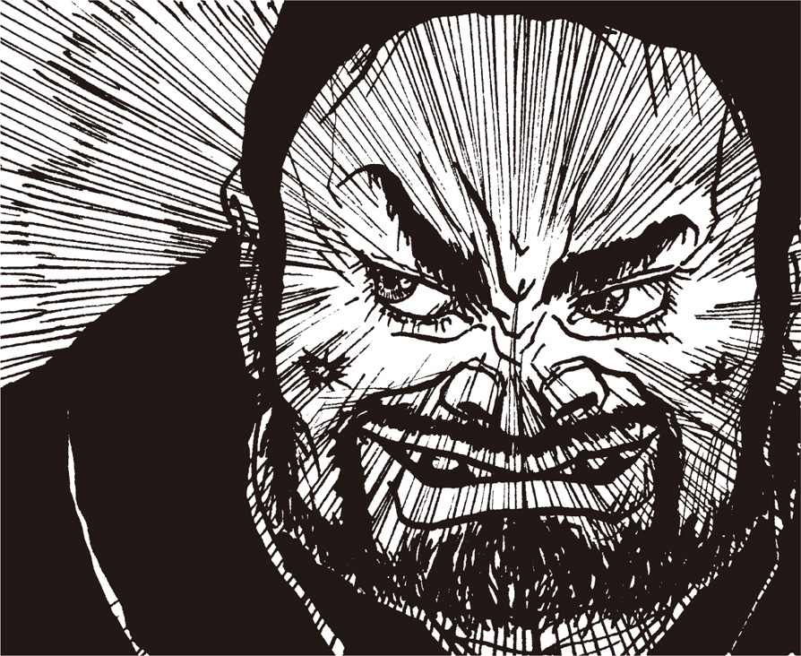
謎の女子高生
くみりんの部屋
こんにちは。〈くみりん〉でえす♡
びっくりしちゃいました。だって〈くまぴょん〉様、急にチャットやめてどこかに行っちゃうんだもん。停電かなあ。制限時間かな？ でも絶対停電だよ。パソコン通信してて停電すると、チャットの途中でも急にログアウトしちゃうんですよね。制限時間だったらそう言うハズだもん。怖いですね～停電。
ぬかりのない私は、電池で使えるポケットモデム【★41】とノートパソコンでパソ通してま～す。これなら停電してもだいじょうぶなんですよ。電話は停電しないから、パソコンとモデムが使えれば停電なんか怖くないしネ☆
あとね、パソ通する人はキャッチホンにしない方がいいですよ。パソ通してる途中で誰かから電話が入ると、プチって切れちゃうから。フリーウェアなんかをダウンロードしてる時にキャッチホンが入ると最悪。あ～あ、とか思って、つい電話の相手に冷たくしちゃいます。あ、もしかしたら〈くまぴょん〉様、キャッチホンが入ったから、ログアウトしちゃったのかな。そうかもしんない（;_;）。
第13回
これぞ理想のオフ会、イタコのマルチタスク!!
（KATOR）「談話室かとれあ」93/**/** 19:25:58
FROM HEP2988 夕焼け級長
題名：オフ会に参加する者、この指止まれ！
やあ諸君！ 例の〈くまぴょん〉とかいうたわけた学者犬様も無事保健所に回収されたようだし、ここいらでパーッとオフ会のひとつでもぶちかまそうじゃないか。今度の日曜日に渋谷の〝北の貴族〟でどうかな。例によって僕が幹事やるから、参加希望者は書き込んでちょ。
初めてて場所が分かんない人は僕か誰かが案内するから、５時にモアイ像の前っつうことで。ま、学者犬様でもサカナに楽しく呑みませう（笑）。
〈夕焼け級長〉
(KATOR)「談話室かとれあ」93/**/** 19:42:30
FROM HEP0895 原始人モコモコ
題名：わーい╱（^_^）╲
おふ会だー。参加しまーす。そーか、〈くまぴょん〉撃退記念おふっすね？ わーい。それにしてもあの人最低でしたね。ひさしぶりにあーゆープッツンが入って来て迷惑だったもんなあ。
〈原始人モコモコ〉
(KATOR)「談話室かとれあ」93/**/** 20:22:40
FROM HEP1655 うさちゃん１号
題名：参加しまーす。
そっかあ。やっぱ〈くまぴょん〉ってＩＤ削除されたんだあ。わーい。これで〈へっぽこ〉も平和になったんだわ（^_^）。うれしい。
〈うさ〉
空手
「にゃにゃにゃにおう！」
余はそう叫ぶと、灰皿の中身を部屋中にぶちまけた。
「勝手なことをほざきおって！」
齋藤が言った。
「しょせんは愚民のたわごと！ それよりも閣下、閣下はもはや〈くまぴょん〉ではなく、あくまで〈たけぴょん〉でございます！」
「確かに余のハンドルは〈くまぴょん〉ではのうて〈たけぴょん〉だ！ それがどうかしたのか！」
「御意。〈くまぴょん〉ではなく〈たけぴょん〉！ つまり別人でございます！」
「おう別人じゃ！ 竹からパンダを想像する奴はいても、熊を思い浮かべる奴はまずはいまいて！」
「御意。それにしょせんはネット上での関係。閣下のお顔を知っている者など一人としてございませぬ！」
余は手にした灰皿を静かに置くと齋藤の方に向き直った。
「つまり、その方は余にオフ会に参加せよと？」
「御意。〈夕焼け級長〉に復讐する、これ以上のチャンスはござりますまい！」
「なるほど！ ところで齋藤！」
「何でござりましょう！」
「余は生まれてこのかた空手も応援もやったことはないのだが、大丈夫かな」
「いえ別に。特に空手を練習しなくたって、復讐の手段はいくらでもござりましょう。......応援とははて、どういう意味で？」
「いやそうではなくて、空手着も学ランも持ってないのだが、どこに売っておる？ 普通の格好で参加したら怪しまれるのでは......」
「おお。おおお！」
齋藤の目が輝いた。
「久しぶりに閣下の〝ボケ〟が聞けるようで齋藤はうれしゅうございまする！」
「何を言うておる？ オフ会とはアレだろ、空手家か応援団が大勢集まって一斉に挨拶を交わす......」
齋藤は深々と深呼吸をし、そして叫んだ。
「それは〝押忍会〟でございます！」
「まあ、その、何だ」
余は顔を赤らめ、机上のマウスをくるくる動かしながら言った。
「余の汲めども尽きぬユーモアの泉があのようなことを言わせたまで！ いくら何でも本気で〝押忍会〟などと思うてか！」
「御意」
「ところで渋谷に鯉が泳いでいる池なんてあったかな。売店でエサを買って......」
「それはお麩会！」
「ばれたか......」
「閣下の心理状態、齋藤には手に取るように分かりまする。先ほどのボケをフォローするために今度はわざとボケるつもりでござろう」
「『風の谷のナウシカ』が......」
「それは腐海！」
「授業参観のあと教室で」
「それは父兄会！ だんだん苦しくなってきましたな！」
オフ会の限界
「さてと。齋藤、実際のオフ会がどのようなものか話してみよ」
「さようでございますな。オフ会とはオフラインミーティングの略、つまり普段は回線上で筆談にて会話を交わしている仲良したちが、休日などにどこかで一同に会して直接交流を深める会でして......。呑んだり歌ったり、それはそれで楽しいものでござる」
「せっかくパソコン通信という現代の最先端のコミュニケーション手段を持っておるのに、わざわざ会うのか」
「御意」
「何とも原始的じゃのう」
「やはり何だかんだ言ってパソコン通信では限界がありますからな。通信で仲良くなったら、直接会いたくなるのは人情かと」
「くだらんのお。余がオフ会を主催するとしたら、そうだのお、全員ノートパソコンを持ち込んで、ケーブルか何かで繋いでその場でチャットをするがのお」
「うう。まるでせっかく彼女をラブホテルに連れ込んだのに、その場でオナニーをするようなものでござるな！」
「何を言うか！ 世の中の進歩とはそういうものじゃわい。しかしアレか、確かにその場に全員いるのに、黙々とチャットし合うというのも効率が悪かろうの」
「効率も何も、閣下それは。ただ閣下、オフ会の欠点というのも確かにございますぞ」
「欠点。それは何じゃ」
「パソコン通信は全国規模で仲間と会話ができ申すが、オフ会ですと近所の連中としか会えない点でござる」
「なるほどのう」
「確かにそれは原始的かもしれませんなあ」
イタコ
余はしばらく〝効率のよいオフ会〟についてあれこれ考えていたが、そのうち素晴らしいアイデアを思いついた！
「齋藤！ おもしろいアイデアを思いついた。これならわざわざその場所に行かずともオフ会ができる！」
「ほう。それはどのような」
「イタコじゃ！」
「イタコ？」
「イタコじゃ！ イタコをオフ会の場所に一人派遣して、全員の霊を呼び出してもらうのだ。そうすれば我々はいながらにしてオフ会を楽しめるぞ。文字通りの魂の触れ合いじゃ！」
「ち、ちょっとお待ち下され。そうすると私どもはまず死なねばなりませんぞ！」
「素人はこれだから困る。いいか、死なずとも肉体から霊は分離できるのだ。深い睡眠時や、薬物等で意識を低下させれば、生きたままアストラル体（生き霊）を分離しやすくなる。優秀なイタコなら、生き霊を呼び出すなど造作もないこと！」
「なるほど。しかしこれはオフ会なのですぞ。いくら優秀なイタコでも複数の生き霊を一度に呼び出せるものでしょうか？」
「なるほど。マルチタスクの問題があったか」
「メモリーの問題もあります。人間の魂が何バイトあるかは知りませんが、仮に１００億メガとしましても、20人も呼んだ日にはイタコの脳が破裂するのでは？」
「いいや。人間の脳はその１パーセント程度しか使われていないという研究もある。実際精神医学では25人格という患者の例も報告されているしな。そのくらいは大丈夫だろ。それからマルチタスクの問題だが、例えば非常に処理スピードの早いイタコなら、目にも止まらぬ早さで生き霊のデータを切り換えれば、イタコ一人でも仮想的に複数の会話が可能になるのでは......」
「それは素晴らしい！ まさしく新時代のオフラインミーティングですなあ。しかしイタコのレンタル料っておいくらで？」
「問題はそこなのだ。まあ生き霊一人につき５千円といったとこだろうが、恐山からの交通費や、食費や宿泊費の問題がある。やはりこれは難しいかのう」
「ま、イタコは将来の課題としまして、とにかくオフ会です。閣下としても〈夕焼け級長〉にその手で制裁を加えねば収まりがつきますまい」
「そうだ！ 〈級長〉に鉄挙の嵐を浴びせねばな！」
謎の女子高生
くみりんの部屋
みなさん元気でした？ 〈くみりん〉で～す♡
やっぱり〈くまぴょん〉様、ID消されちゃったみたい。不公平だよね。みんなでいぢめて、何か、〈くまぴょん〉様だけ仲間はずれにしちゃうんだもん。しかも!! 〈くまぴょん〉撃退記念とかいってオフ会とかやっちゃって。へんなの。でもオフ会って行ってみたいな☆ ウワサによれば、案外明るくて楽しいんだって。でも〈夕焼け級長〉はヤだな。
あ、知ってました～？ オフ会ってオフラインミーティングの略なんですよ。パソ通が電話でオンラインだから、その逆のオフラインなんだって。ちょっとかっこいいな☆ 行ってみようかな。あとねえ、オフ会だと名前とか呼ばないんだって。ハンドルで呼ぶんだって。「こんにちは、あなたが〈原始人モコモコ〉さんですか？ はじめまして。私が〈夕焼け級長〉です」とか言うらしいの。へんなの。気持ちわる～い。やっぱり行くのやめよっと。でも盛り上がるらしいし、女の子はみんながおごってくれて誰でもアイドル状態ってウワサだし。行ってみようかなあ。どうしよう!?
第14回
モアイ像前に表れた謎の美人！ その正体は......
モアイ像
余と齋藤は渋谷駅の改札を出ると、構内の雑踏を抜けて南口出口へと向かった。
「モアイ像前で待ち合わせなんて久しぶりだのう」
「御意。中学時代のグループ交際を思い出しまする」
「グループ交際か......。齋藤、オフ会とは、まさかグループ交際のようなものではあるまいな？」
「ははは、まさか。今日のメンツを見ましても半分以上は社会人ですし、酒も入りますしな。代々木公園で白いギター片手に青春歌謡を歌うようなことは、よもやありますまい」
「それを聞いて安心した。ま、グループ交際だろうがユースホステルだろうが別に構わんがな。何しろ我々の目的は〈夕焼け級長〉に復讐すること、ただそれだけだからな！」
「御意」
「連中が集まる前にもう一度確認しておく。目薬は用意したか？」
「はあ。それが、そのう」
「買い忘れたか馬鹿者！」
「このような卑怯なやり方は......」
「卑怯もラッキョウもあるか！ 余の野望を阻もうとする者は死をもって報いねばならぬのだ。貴様は図体はデカイがちと気が弱過ぎる」
余はポケットから予備の目薬を取り出すと、強引に齋藤に手渡した。
「いいか、打ち合わせ通り、〈夕焼け級長〉を確認したら奴のビールにこれを数滴垂らせ。酒の成分と合体して大抵の奴はグデングデンに酔っ払うから、介抱するふりをして裏通りに連れ出してフクロだ。分かったな？」
「はあ、しかし大丈夫でござるか」
余は齋藤懲罰用の笛を口に当てて、再度言った。
「分かったな？」
「わわわ分かり申した！ 閣下こそ、〈くまぴょん〉の話題を持ち出されても冷静になられますよう......」
「分かっておる！ 余は今や〈たけぴょん〉であって断じて〈くまぴょん〉ではない！」
「それでこそ閣下」
齋藤の推理
「ところで齋藤、〈夕焼け級長〉とはどんな奴なんだろうな」
「そうですなあ。......それがしの過去の経験から申せば、大体において現物はショボイのが多いですな」
「ショボイ？」
「御意。つまりネットというのは実際の会話とは違いますからな。いくら強気の発言を繰り返しても殴られることはあり申さん。ということは、実生活では蚊も殺せんような奴が、ネット上では狂暴な虎にも変身でき申す。書き込みから判断してどんなに凄い奴だろう......と思って会ったら、分厚い眼鏡かけてマンガのＴシャツかなんか着ててろくに話もできん情けない奴だった、なんてことはよく聞きますな」
「そうか。が......いかに実際の〈級長〉が虫も殺せんヤサ男でも、だ」
余はポケットの中の目薬を固く握りしめ、言った。
「殺す。ぶっ殺す！」
齋藤が余の激情をなだめるかのように言った。
「まあまあ......。ひょっとすると〈級長〉は、予想に反して目の覚めるような美人かもしれませぬぞ」
「まさか！」
「まさかとは思います。が、ネットでの人格と現実との格差は時に予想以上のものがありますからな、ありえぬ話ではあり申さん。普段はおしとやかな女性でも、ハンドルを握ると人を轢かんばかりの運転をするのがたまにいるでしょう」
「おや。齋藤のシャレもだいぶ上達したのお」
「え？ あ、ハンドル......わはははは！ これは齋藤、期せずしてつまらぬシャレを言い申した！」
人間緊張の極みに達すると意外に明るくふるまうものだという。余も齋藤も豪快に笑った。まるでこのあとに控えているはずの〝惨劇〟を、笑いで吹き飛ばすかのように......。
と、その時である。
「あのう......オフ会に参加される方ですかあ？」
余の前に、目の覚めるような美人が立っていた。
美人
「はははあ。そそそそーすけど」
驚愕のあまり、余はどもりながら返事をした。まさか......ひょっとしてこれが......このリンスしたてのような栗色のロングへアーを爽やかに風に揺らしているこの妙齢の美しき稚き女性が......？
「えーとお、あなたたち、初めてね。えーとお、どなたかしら」
「は、はい。わたくし、くま......じゃなかった〈たけぴょん〉と申しまして、本名は高橋一郎でヒヨコの雌雄鑑別業を営んでおります！」
「ああ、つい最近入ってこられた方ね。こちらは？ まあ、ずいぶん大きいのね......背が」
「はあ。それがしは齋藤と申しまして、くま......もとい〈たけぴょん〉殿のつき添いでして」
「オフで本名を名乗っては駄目よ。しらけるわねえ」
「すいませぬ......。いや、それがし〈へっぽこ〉はＲＯＭ専門でして、定まったハンドルがありませぬ」
その時、女性の背後から声をかける者があった。
「よ！」
「あらあ〈原始人モコモコ〉さんじゃないの」
「おひさ！ そっち新顔だね？」
「えっとね、こちらが〈たけぴょん〉さんでこっちの大きいのがえーと、えっとお」
「齋藤でいいです」
「駄目！ いまぴったしのハンドル考えたげる。んーとお、そうだわ、〈ひげぽんぽん〉はどお？」
「ひ、ひ、〈ひげぽんぽん〉？」
齋藤は思わず顔を赤らめた。
「うふふ。だって素敵なおヒゲと太鼓腹なんですもの！ ところで〈モコモコ〉、たまにはお風呂に入りなさいよ」
〈原始人モコモコ〉は１年も風呂に入ってないような汚い汚い髭を薩摩芋のような指で掻き上げて言った。
「余計なお世話です！ ところでそろそろ〝北の貴族〟行こうよ。呼びに来たんだ。〈タケオ〉さんも〈アクセル〉もみんな来てるよ」
「〈宇宙刑事モーモー〉は？」
「〈宇宙刑事〉も来てる！ さ、レッツ・ゴー ってか」
素晴らしき会話
居酒屋〝北の貴族〟はさながら〈へっぽこネット〉の貸切パーティのようだった。漫画家、編集者、プログラマーといった業界関係者はもとより、学生、某企業の課長、弁護士や公認会計士までいた。
もっともこれはネットのつき合いの延長であるから、年齢や社会的立場はほとんど関係ない。みなハンドルで呼び合うし、第一いい歳こいた課長さんが〈煽情の狼〉である。これでは威厳もへったくれもない。
「うへへへ。俺アミガ買っちゃったよーん。ＣＧしまくりで人生充実っす」
「うへ。お前どーせまたエッチな絵〈へっぽこ〉にアップする気だろ。げろげろ～」
「みなさん聞いてちょ。今度ぼく〈ケロ子〉ちゃんとデートしまーす」
「ぐすん。うらやまＰ～っす」
と、いう超素晴らしい会話が展開する中を、例の女性が幹事よろしく飛び回っている。まさか......やはり彼女が......？ 彼女がそばに寄ってきた機会を逃さず、思い切って余は尋ねた。
「あのお......貴女のハンドルまだ聞いてないんすけど......ひょっとして〈夕焼け級長〉さん......すか？」
「え？」
彼女は一瞬キョトンとしていたが、次の瞬間火がついたように笑い出した。つられて、部屋の中が割れるような哄笑に包まれる。余と齋藤を除いた全員が笑っているのだ。
「ひーー！ アタシが〈夕焼け級長〉？ ひーー、ひーーー！」
余の憮然とした表情を察したか、女性は指で涙を拭いながら、言った。
「ごめんなさい。〈たけぴょん〉さんは〈へっぽこ〉入って間がないんですものね、仕方ないわ。えーっとお、アタシ〈うさちゃん１号〉。〈うさ子〉でいいわよ」
「そ、そーでしたか。で、〈うさ子〉さん、〈夕焼け級長〉ってどちらの方？ いやーファンなんですよ僕」
余は心にもないことを言った。胸がむかつくがこの際仕方がない。
「今朝〈級長〉から電話があって、『スマン、ちょっと遅れるから、到着するまで幹事やって』って。何かもー忙しくってえ、名乗りもしないでゴメンなさーい」
「え。いや何ははははは。いいんですよ」
余と齋藤が顔を見合わせて笑った、その時である。
「いやー遅れちゃって」
入口の方から妙に快活な大声が響いてきた。
「おお。メインイべンターがやっと来たか！」
「遅いゾ、幹事殿！」
「我等が〈夕焼け級長〉様のお着きー ！」
ゆ、ゆ、〈夕焼け級長〉!? ま、まさかこいつが？
謎の女子高生
くみりんの部屋
こんにちはー。〈くみりん〉で～す♡
最近、パソ通でフリーウェアをダウンロードして遊んでます。いろんなのがあるんですよ。それからデータとかも。グラフィックのデータなんかをみんなが描いてて、それを鑑賞したりしてます。でもダウンロードに時間がかかるからイヤなの。
だから、2400bps【★42】よりも速いモデムを買おうかな～なんて思ってます。みなさんは何bpsでパソ通してますか？
最近は9600bpsとか14400bpsとか、凄く速いモデムがあるみたいですよね。一度9600のモデムでフリーウェアをダウンロードしたことがあるけど、凄い短時間でダウンロード完了!! キャー!! これって凄い!! 速いモデム欲しい!! そんな感じでした。欲しいな。速いモデム。
でもホストによっては上限が2400bpsだったり、14400bpsまで対応しているホストはまだまだごく一部だけ。それに私のノートパソコンだと最高9600bpsまでしか使えないから、14400bpsとかは関係ありませ～ん。夏休みバイトしてお金貯めなくちゃ♡
第15回
飛び交う楽しい話題！ 腐れ外道の〈馬鹿ぴょん〉！
ナイスガイ
居酒屋の暖簾をくぐって現われたそいつは、若き日の加山雄三と森田健作を足して２で割ったような、長身の爽やかなナイスガイであった。陽に焼けた顔からは真っ白な歯がこぼれ、アロハシャツから伸びた逞しい腕にはこれまた白いギターが握られている。男はもう片方の手で調髪したばかりと思われる慎太郎刈りの頭をボリボリ掻くと、ややバツの悪そうな笑みを浮かべて、言った。
「いやー幹事が遅れちゃあ、言い訳が立たないなァ」
ま、まさか......こいつが......〈夕焼け級長〉？
余は思わず齋藤と顔を見合わせた。齋藤の顔にも明らかに緊張の色が走っている。余の隣でさっきからシシャモをかじっていた〈原始人モコモコ〉が、カラオケのマイクを持って叫んだ。
「〈級長〉！ 罰でーすってか。何か歌ってちょ！」
「お安い御用だ！ でもマイクはいらないぜ。こいつがあるからな！」
〈夕焼け級長〉はギターを抱え直すといきなり歌い出した。
ふたりおぉーゆうぅーうやみがぁーあーつぅーつむーーぅぅこぉーのまどべにぃぃーーぃ......。
「ステキ......」
〈うさちゃん１号〉の目が心なしか潤んでいる。
余の斜め隣に座っている〈宇宙刑事〉が感に堪えぬかのように領いた。
「〈夕焼け級長〉の歌がなけりゃあ、〈へっぽこ〉のオフ会は始まらんよなあ」
〈級長〉は歌いながら座敷のアチコチを歩き回っている。余は齋藤に小声で耳打ちした。
「〈夕焼け級長〉があんなヤサ男とは知らなんだ。こいつは結構チョロイかもしれんゾ」
余はポケットの目薬を固く握りしめた。スキを見て、こいつを〈級長〉のビールに垂らすのだ。グデングデンに酔ったところで、介抱するふりをして表に連れ出して......。ああ。何て卑怯なんだ。しかし手を汚すことを恐れていては天下など盗れぬ。余の胸は、ダークな陶酔感でいっぱいになっていた。
幸い、余の目の前の席が一つだけ空いている。空いている席はここしかないから、〈夕焼け級長〉は、間違いなく座るに違いない。おお何という幸運！
余は手元のビールに目薬をドバドバ入れると、空いている席のビールとすり替えることに難無く成功した。気づいた者は誰もいない。

〈馬鹿ぴょん〉
歌が終わり、白いギターが高々とかざされる。割れんばかりの拍手の中、〈級長〉は余の前の席までやってきて、頬を掻きながらよっこらしょと座った。当然、目と目が合う。
「あれ？ キミたち新顔だね」
〈うさちゃん１号〉が余と齋藤を紹介した。
「あのね、こちら最近入会してきた〈たけぴょん〉さんと〈ひげぽんぽん〉！」
「くま、いや〈たけぴょん〉っす」
「齋藤、いいや〈ひげぽんぽん〉と申す。お見知りおきを......」
「こちらこそよろしく。〈たけぴょん〉......？ はて？」
余は一瞬ドキリとした。
「何か......？」
「いや何ね、世の中には似たハンドルもいるもんだなあと思って」
「え。な、なな何の話っすか」
余の動揺を察したか、齋藤が慌ててフォローに回る。
「よくあることでございますよ。なあ〈級長〉どの！」
「ははは。そうだよな。まさかなあ」
こういう時はオドオドしているとかえって怪しまれる。余は思い切って〈級長〉に尋ねた。
「僕みたいなハンドルの奴がいるんですか？」
〈原始人モコモコ〉が割って入る。
「正確には〝いた〟というべきだね」
〈うさちゃん１号〉がホッペタをふくらませて叫んだ。
「もう２度と来てほしくないわ！」
さっきから黙ってホッピーを傾けていた年配の〈煽情の狼〉も、怒りの表情を露わにして言った。
「ああいった腐れ外道は社会のためにならん！ 世が世なら軍隊に叩き込んで性根を鍛え直してやるんだが。しかしＩＤを削除するくらいしかできないのが、ネット社会のつらいところだなあ」
〈モコモコ〉が深く領いた。
「こないだログを点検したら、〈くまぴょん〉の書き込み、全部で30メガはあったぜ。そのほとんどが俺たちのこと〝愚民〟呼ばわりしたり、〈級長〉に因縁つけてるだけだもんな」
「〈くまぴょん〉じゃなくて、〈馬鹿ぴょん〉だな！」
「あの半メガにも及ぶ悪口の尻取り、もー呆れちゃった！ ああいうエネルギーを有意義なことに使えば、もっと女の子にもモテるでしょうに」
「ありゃモテないよ。あーゆータイプはそのうち夜道で痴漢でもしてお巡りさんに捕まるんだよ。それより〈うさ子〉、〈くまぴょん〉がああなる前にやさしいメールでも送って善導してやればよかったのに」
「ゲロゲロ～！ そんなことするくらいなら〈モコモコ〉にセクハラされた方がまだましだわ！」
〈夕焼け級長〉が両手を広げて、みんなのおしゃべりを制止した。
乾杯
「ストーップ！ みんなの気持ちはよく分かるよ。確かに〈くまぴょん〉はちょっと悪質だった。売り言葉に買い言葉で、僕も少々キツイ書き込みをしたがね」
「そんなこと全然ないよ！」
我に返った〈モコモコ〉が叫んだ。
「〈級長〉の対応はあれで正解だった。ああしなけれ ば、あの馬鹿いつまでもネットに居座ったぜ。あいつ、脳味噌が豆腐になってるから、まともに相手したって喜ぶだけさ」
「要はかまってもらいたいのね。かわいそうな人」
「〈級長〉は〈くまぴょん〉を挑発して、わざとああいう書き込みをさせたんだね。あの馬鹿犬、策略とも知らずに放送禁止用語を半メガもアップして、あれじゃあ即刻ＩＤ削除だわなあ」
「今ごろどこかで泣いてるわよ。いい気味だわ！」
〈級長〉はひとしきりみんなの話に耳を傾けてから、言った。
「ま、そんなところだけど。あの場合はネットを守るために仕方なかったんだが、できればこれっきりにしたいよなあ。僕は平和主義者なんだ」
「いやいや、とっさにああいう対応ができるのは〈級長〉だけだ。さすがは東大出！ 〈夕焼け級長〉がいる限り、我が〈へっぽこ〉は安泰っす！」
「ネットというのは相手の顔が見えない分、意思の疎通が難しい。匿名ならなおのことだ。だからこそ、一般社会以上に〝ルール〟が必要なんだ。ここんところ、〈くまぴょん〉は分からなかったようだな」
余は目の前がクラクラしてきた。人間、真に怒りを感じると眩暈がするというが本当だ。な、何がルールだ。しょせん愚民が決めたルールではないか。そんなもん余は認めんぞ！ こ、こいつら全員死刑だ。野望が成就した暁には、〈うさちゃん１号〉は股裂きの刑、〈原始人モコモコ〉は水責め、木馬責めのあと市中引き回しの上、ノコギリ挽きの刑に処したる！
だが。だがその前に......。
余はジョッキを〈級長〉の前に差し出して言った。
「いやあ、何か知りませんけど、大変だったんすねえ。ところで〈級長〉さん、乾杯の音頭がまだじゃないすか。どうですか、このジョッキで乾杯を......」
「やあありがとう。でも僕、酒は飲まないんだ。おーい、ウーロン茶お願いしまーす！ いや失敬失敬」
「へ？」
余の内部に建っている巨大な城がガラガラと音を立てて崩れるような気配がした。酒は飲まん？ それでは計画が、計画が......。
運ばれてきたウーロン茶を高々と差し伸べると、〈級長〉は高らかに乾杯の音頭を叫んだ。
「じゃ、ま、嫌なことはサラッと忘れて楽しくやりましょう。乾杯！」
「かんぱーーーい！」
余は目薬入りのビールを手にしたまま、しばし硬直していた。もし精神科医がこの場にいたのなら、余の様子を見て離人症と診断したかもしれぬ。計画があっさり狂った挫折感から、余は現実認識にいささか変調をきたしていたのだ。その証拠に、〈うさちゃん１号〉が余の傍らに寄ってきて、「アラ、飲まないのお？ 新人さんなんだから一気に飲みほすのが礼儀よお！」などと言い、余に無理矢理ジョッキを傾けさせた時も、されるがままになっていたのだ......。
しまった！ と我に返った時はもう遅かった。余は目薬ビールを全部飲んでいたのだ！ ふと横を見ると、真っ青な顔の齋藤が廊下に立って手招きをしている。便所で吐け、と言ってるらしい。
「ち、ちょっとへつれいしまふ......」
いかん。早くもアルコールと目薬の成分が合体してきたらしい。これはいかん！ そもそも余は酒にも超弱かったのだ。うわ。天井がグルグル回ってきた......。
謎の女子高生
くみりんの部屋
元気でした？ 〈くみりん〉でーす♡
私はママに叱られました。電話代が高いって。電話しちゃ駄目とか言うの。自分だって親戚のおばさんと長電話するじゃん。やーね、オババ。でもやっぱパソコン通信してると電話代が凄い高くなるみたい。だからママはNTTのテレジョーズ【★43】に申し込みしました。よく知らないけど割り引きになるんだって。
あと、パソコン通信で読んだり書いたりする時に、一度電話を切るといいですよ。通信してログを取ったら電話を切るの。それからログを読んで、返事を書いて、また通信して返事をアップロードするの。そうすると５分ぐらいでだいたい全部できちゃうんですよ。通信しながら読んだり書いたりしてると、すぐ30分ぐらい経っちゃうもんね。
第16回
一難去ってまた一難！ 〈夕焼け級長〉は空手の達人!?
目薬ビール
何とか愚民どもの間をかいくぐって廊下へ出ようとした余であったが、さすがは目薬入り、主成分たる朝鮮朝顔エキスとアルコールとが合体した効き目は天罰覿面、もともと酒には弱いこともあってか早くも足どりはおぼつかなく、天井はエッシャーの絵のようにどこが上やら下やらとんと分からぬありさま、あっちにぶつかりこっちにぶつかり、「〈たけぴょん〉さん大丈夫？」と心配する〈うさちゃん１号〉の声も遠くポーランドから聞こえてくるよう、とにかく齋藤の待つ便所まで廊下を這い這い５分もかかるテイタラクであった。
「かか閣下、即刻吐かれい！ 今ならまだ間に合い申す！」
余は便器につっぷして吐いた。喉に指を突っ込み内臓も出よとばかりに大いに吐いた。
「全国30万『竹熊の野望』ファンでもまさかと思って誰一人予想せなんだほどのベタな展開でござるな！」
「そうか......おふ。うげふ！ きもちがわるひ......」
「そのご様子では。本日の計画は中止なされるか？」
「ち、ちゅうひ？ と、とんれもない！」
余は青紫色の顔を横に振った。
「せ、せっかくゆーやけきゅうちょーにあえたのら。ここれあったがひゃくねんめ......」
「ご無理なさらぬ方が......」
「うるはい！ １、２、３......」
余は自分の指を数えた。大丈夫だ、ちゃんと数えられる。まだ完全に思考能力を失ったわけではない。最後の意識が残っているうちに〈夕焼け級長〉をこの手で......。
〈級長〉の〝特技〟
余は齋藤に肩を支えられ、居酒屋の廊下をよたよたと歩きながら、オフ会今やたけなわの広間に戻ろうとした。
「さいとお......」
「何でございます」
「めぐふりはまだのこっておるか」
「目薬。まさか......まだやるつもりで？ 第一〈夕焼け級長〉は酒を飲まぬとか。ウーロン茶に目薬を垂らしたとて効果はないでしょうし、ひと口飲めばばれ申す」
「ほうか。ほうだった。おにょれゆうやけきゅうちょう！ かくなるうえは......」
「いかがなされる？」
「おふかいがひけたら、きゅうちょうのあとをつけて、ひとけのなひあたりれうしろから......」
「うう。闇討ち！」
「そうら。やみうちら。けけけけ......」
余が笑いを発した、その時である。広間からも、大きな拍手と喚声が巻き起こった。
「な、なんら......？」
フスマの間から顔を覗かせた余は、そこに驚くべき光景を目撃した。〈夕焼け級長〉が、上半身裸になり、着衣の上からは想像もつかなかった逞しい筋肉を硬直させて、ゆらゆらと踊っている！
〈原始人モコモコ〉が、手にしたシシャモを振りかざして叫んだ。
「いよ！ 出ました！ 〈夕焼け級長〉の十八番～！」
〈級長〉はにこりともせず、ふしゅる、ふしゅるる～と奇妙な吐息を発しつつ腕をゆっくりと下ろしている。
「あれは踊りではござらぬ」
齋藤が言った。
「空手の型でござる。何流かは知りませぬが......」
余は一瞬のうちに酔いが引いていくのを感じていた。
「もし、〈級長〉が空手の達人だとしたら......閣下、闇討ちも容易なことではござらぬぞ」
「馬鹿を申せ。いくら空手の達人でもな......」
再び広間いっぱいに喚声が響き渡る。〈うさちゃん１号〉が、〈級長〉に何かキラリと光る物を手渡したのだ。
「百円玉？」
みんなが固唾を呑んで見守る中、〈級長〉は百円玉を２本の指で挟むと、気合いもろともまるで飴のように曲げ潰した。
「おーーーー！」
「齋藤。貴様まで感心してどうするのだ！」
「す、すみませぬ、つい。し、しかしアレはちょっと凄いですぞ！」
「なーに、たかが百円玉......」
再び拍手と喚声。今度は〈モコモコ〉が、〈級長〉の前のテーブルにうやうやしくビールビンを置いた。齋藤が叫んだ。
「ま、まさか！ あの技を！」
「技？ 技とは何だ齋藤？」
「それがし、その昔『空手バカ一代』に憧れ申して、空手の通信教育を受けたことがあり申す。そのパンフレットの表紙にあの技が......」
次の瞬間！ 〈夕焼け級長〉は目にも止まらぬスピードで手刀を振り下ろしビンの首を切り落とした。寸断されたビンの首はひゅんひゅんひゅんと音を立て、猛烈に回転しながら余の額を直撃......。
竹熊の涙
「お気がつかれ申したか」
余は齋藤の声で意識を取り戻した。はて。妙だ。ここは余の自宅の万年床ではないか。
「いったい、余はどうしたというのだ齋藤......う！」
額に激痛が走り、余は身をよじった。手を当てると、大きなバンソウコウが貼られておる。
「閣下は、〈夕焼け級長〉が手刀にて切断したビンの首の直撃を受け申して、しばらく意識を失われていて」
「そうか。すると、貴様が余をここまで運んでくれたのか......」
「いえ。それが、そのお」
「何だ。誰が運んでくれたのだ」
「いや、そのお、それがしは固辞したのですが......」
「ま、ままままさか！」
「そのまさかでございます。責任を感じた〈夕焼け級長〉は閣下を手厚く介抱すると、自分の車でそれがしと閣下を運んでくれ申した。結構その、いい奴でして」
〈夕焼け級長〉が介抱......。余はガックリと肩を落とした。全身が小刻みに震え、涙がとめどなく溢れてきた。〈夕焼け級長〉が余を。あの犬畜生に余は介抱されたというのか！
「くやしい。余は......くやしいぞ！ くやしい！ くやしひひひぃーーーん！ こ、ここれ以上の恥辱があろうことか！ 哀号！ アイゴーーーーッ」
「閣下のお気持ち、齋藤痛いほどよく分かり申す。今は耐えられよ！ 復讐の機会はまたあり申す」
「そうだ。復讐だ！」
余は肘で涙をぬぐうと、言った。
「〈夕焼け級長〉に今度こそ正義の鉄鎚を加えるのだ！ だが暴力はよくない。暴力はな」
請求書
「さて復讐の手段だが、やはり言論には言論によって対するのが、物事の本筋だと余は思うのだ」
「御意」
「ビールに目薬を垂らすとか、闇夜にこっそり木刀を持って背後から忍び寄るとか、そういう復讐は倫理協定に反する。そうは思わぬか」
「御意」
「パソコン通信で受けた恨みはパソコン通信で返す。これが本当だ」
「まことにその通りで」
「そんなわけで、しばらくは普通のユーザーのような顔で、〈へっぽこネット〉の様子を窺うことにする」
余は久しぶりにハレルヤ１号の前に座ると、本体とモデムのスイッチを入れた。
「さて愚氏どもいかがいたしておるかな......あれ？」
「いかがなされました」
「変だな。繋がらないぞ」
「通信ソフトの調子が悪いのですかな？ どうれひとつこの齋藤めが」
齋藤はしばらくの間あれこれいじっていたが、首を傾げて言った。
「変ですな。どうもこれは......」
齋藤は、受話器を取り上げ、耳を当てていたが、「アハハハ閣下！ 料金を滞納されとりますな。電話が止められてますぞ！」
「なーんだ、そうか。ここんところ〈級長〉への復讐で頭がいっぱいだったからな。すっかり忘れとった」
齋藤は部屋の隅にうず高く溜まっている紙屑の山をかきわけると、ＮＴＴの請求書を見つけ出した。
「あった。あった。まだ封も切っておりませんぞ」
齋藤は請求書の封を切り、料金の欄にしばらく目を通してから、叫んだ。
「ちんぴょろほしぇーーーー!!」
「ん？ どうしたそんなに身体を硬直させよって」
齋藤は黙って請求書を余に差し出した。余はそれをしげしげと眺めたあと、叫んだ。
「ちんぴょろすぽーーーーん!!」
それは......２６０万円の請求書であった。
「ここここここんな馬鹿な！ いくら何だって......〈へっぽこネット〉って市内だろう？」
「ち、ちょっとお待ちください！」
齋藤は慌てて通信ソフトの〝設定〟を確かめた。
「かかかかかかかか閣下あッ！」
「どうした！」
「〈へっぽこネット〉のアクセスポイント【★46】が沖縄になっておりますぅ」
謎の女子高生
くみりんの部屋
〈くみりん〉でーす♡ ちょっと新しい発見。絶対やりたい目標ってあるでしょ。ダイエットとかバーゲンとか、うっかりすると忘れちゃう目標。これを忘れない方法を考えました。
それでもめげずに応用。いつも使うソフトの起動用バッチファイル【★50】の最初で目標を表示させればバッチグーでーす。通信ソフト起動用のバッチファイルだったら「通信し過ぎは親に叱られる」とか注意メッセージを入れると意外に効果がありますよ。やってみてね♡
第17回
完全無欠の野望通販！ マニアのチラシ作成術！
灰色の脳細胞
「お、おきなわあ？」
「ご覧なされ。局番が０９８......沖縄に間違いはござらん！」
「す、すると余はこの１ヵ月間、わざわざ沖縄を経由して都内のネットにアクセスしていたと申すか？」
「御意」
「それで電話代が２６０万？」
「だいたい1日に何時間くらいアクセスされてましたかな？」
「うむ。何しろ〈夕焼け級長〉とのやりとりに熱中しておったからな。寝ている時以外はだいたい......平均14時間といったところか」
「それでは無理もありますまい！」
「さささ齋藤！ 余、余はどうすればいいのじゃ！ そんな大金、逆立ちしてもないぞ！」
「困りましたな......」
余は部屋中ぐるぐる回りながら、キャスターマイルドに火をつけようとした。が、指が震えて思うようにならぬ。思い余って余はバリバリとタバコを噛んだ。齋藤が言った。
「逃げまするか」
「逃げる？ 余に夜逃げをしろと申すか？」
「この際、やむをえぬかと......」
「ならぬ！ それでは〈夕焼け級長〉に復讐が......」
「まだそのようなことを。もはや復讐どころではありますまい！」
「いやいや、こうなったのも元はといえば〈級長〉のせい。今までの恨みに２６０万上乗せじゃ！」
「御意」
「しかし......どうすれば。余は自由業ゆえ、サラ金からもそんな大金は借りられぬしな」
余は額に汗を滲ませながら、必死に解決策を考えた。火事場の馬鹿力と言うべきか、ピンチになればなるほど、余の灰色の脳細胞は活性化する。ふいに妙案が浮かんだ！
「通信販売だ！」
「いきなり何を申される？」
「通販のチラシを作って、そこいらにバラまくのだ！」
「いったい何を売るので？」
「ふ・ふ・ふ......。余だって、伊達にパソコンをいじってはおらんぞ。パソコンユーザーの間で、蜜かにＨソフト【★51】が人気を呼んどることくらい知っておるわい」
「すると......Ｈソフトの通販！」
「さよう。Ｈソフトを急いで作成して売りさばく！ 通販なら買う方も抵抗はなかろうしな」
「急いで作ると申しましても、美少女ゲームなぞおいそれと作れるものではありませぬぞ」
「なーに、アニメ絵のヌードでも２、３枚放り込んどけばよいのじゃ」
「詐欺になりますぞ」
「この際背に腹は替えられぬ。金さえ振り込まれればこっちのものじゃわい。それにエロ物というのは買った方もバツが悪いから、滅多に警察には訴えぬのじゃ」
「仕方ないですな......。しかし閣下、チラシを印刷する金はどうなさる？ まさかプリントゴッコで作るわけにもいかんでしょう」
「そのためにパソコンがあるのではないか！」
「お言葉ながら、閣下のハレルヤ１号では、ＤＴＰ【★52】にはちと力不足でござる。せめてマックでもあれば......」
「マックか......」
余は頭を抱えた。マックは高い。ただでさえ金がないのに、そんな出費など......。その時、齋藤が素頓狂な声を上げた。
「そうでござる！ 確か駅前のひょっとこ電機で、マックフェアをしていましたな」
「そうだった！ ビルの垂れ幕に、〝今ならクアドラ【★53】さわり放題！〟って書いてあったぞ」
「これぞ天の配剤！ クアドラは別名〝パソコン界のポルシェ〟とも言われておる名機。通販のチラシくらいお茶の子さいさいでござる！」
詐欺
数時間後。余と齋藤は、両手に抱え切れぬほどの古雑誌を持って、ひょっとこ電機を訪れた。
「このような古雑誌、いかがなされる？」
「露骨にエロというのもなんだからな。古い広告をスキャナーで取り込んで適当にレイアウトすれば、それらしく見えるであろう」
「うう。完全な詐欺でござるな」
「責任は余が持つ！ 貴様は余の言う通りにすればよいのだ！」
齋藤はクアドラを立ち上げた。
「運良くフォトショップがインストールされとります。図版関係の合成はこれでバッチリですな」
気がつくと、我々の背後で店員が怪訝な顔をしている。あまり長時間粘ると怪しまれそうだ。
「これがクアドラかあ。立派だなあ。ほー、33ＭＨｚのＭＣ６８０４０マイクロプロセッサー内蔵かあ」
余はわざとらしくマニュアルを読み上げると、目で齋藤を急がせた。もはや素材を吟味している余裕はない。齋藤は慌てて適当に古雑誌をスキャンすると、またたく間にチラシを完成させた。余はそれを手に取り、満足の笑みを浮かべた。
「あとはこれをコピーして、町中にばらまくだけだな！」
謎の女子高生
くみりんの部屋
こんにちは。〈くみりん〉でえす♡
みなさん通信販売でパソコンとか買ったことってありますか～？ 私はプリンターを買ったことがありまーす。でね、でね、通信販売ってすごい便利なんですよ。秋葉原とかまで行かなくても買えるし、サービスもいいの。買った時にプリンターの細かい使い方が分からなかったから、お店に電話したの。そしたら、30分もかけて丁寧に説明してくれました。モチのロン、プリンターはバッチグーで使えました。通信販売はアフターケアが悪いとかって噂ですけど、あれはウソ。
それから値段も安いんですよ。秋葉原で一番安いお店とかに引けを取らないくらい安くて、注文してお金を銀行で振り込んだら２日後に品物が届いたし。これって凄いと思いません？
話によると、アメリカとかでは当たり前なんですってね、通信販売。やっぱりこれからは通信販売でしょー。キチャナくてクチャい秋葉原に行かなくても、秋葉原みたいに安く品物が買えるってしあわせ♡ でもホントはちょっとだけドキドキします。
第18回
汲めども尽きぬアイデア！ Ｈソフトの革命児か!?
見返り美人
玄関で齋藤の声がした。
「ただいま戻り申した」
「ご苦労であった」
齋藤は手拭いで汗を拭き拭き現われると、冷蔵庫を物色し、取り出したミネラル麦茶を一気飲みした。
「ぷはあ。いや、足を棒にして歩いたのは久しぶりゆえ、いささか疲れ申した」
「首尾はどうだった」
「は。まずは秋葉原の駅前にて〝これは〟と思える者に４００枚ほど手渡しました。あとは学生街のアパートやワンルームマンションの郵便受けに計５００枚ほど。本当はもっとバラまかねば効果は薄いのでしょうが......」
「仕方がない。コピー代や用紙代で有り金全部はたいたからな。もはや逆立ちしたって鼻血も出んわい。すっからかんのカラッケツじゃ！」
「背水の陣でござるな」
「なに。Ｈソフトさえ売れればこっちのものじゃわい」
「それなのですが、例のチラシ、調子に乗ってＨソフトだけではなく切手だのテレビ型ラジオだのいろいろ載せてしまったでしょう。そちらの注文が来たらどうするので」
「安心せい。商品は全部あるわい。１個ずつだがな。余はガキの時分から通販マニアでの。あそこに載せたものはほとんど押し入れに保存してある。切手だって、ほれ」
余はホコリまみれのスクラップブックを齋藤に示した。
「おお〝月に雁〟！ それに〝見返り美人〟まで！ よく保存されとりましたな。しかし......全部使用済みではござらぬか！」
「パンティだって使用済みの方が高く売れるではないか！」
「......御意」
著作権
「ところでフロッピーディスクは持ってきたか？」
「御意。一度自宅に立ち寄りまして、潰しても構わないフロッピーを３００枚ほど。５インチと3.5インチと８インチ【★54】が混在しとりますが」
「うちのと合わせて計３８０枚か。これにＨソフトをコピーして、全部さばければ......。ま、借金返済にはほど遠いが、本格的なソフト製作の資金くらいにはなるだろう」
「違法コピーはさすがにまずいですぞ。この業界、著作権には特にうるさいですからな」
「安心せい。余にもクリエイターとしての意地があるわい。以前にその方から借りていたお絵描きツールとアドベンチャーツクール【★55】でオリジナルのアドベンチャーゲームを作っていたところじゃ！」
「ほう。確か閣下は〝スケべな絵の２、３枚も放り込んでおけば......〟とおっしゃられていたような......」
「最初はそのつもりだったのだが、描いとるうちに絵だけではつまらなくなった。ついストーリーも考えてしまったのじゃ」
「ほほう。どのようなストーリーでござるか？」
「うふふふ。聞いて驚くな。あらすじだけでも驚天動地、愚息もピン立ちじゃ！」
「うう。齋藤、何やら股間がこそばゆくなり申した。勿体つけずに早よ教えてくだされ」
「うむ。やはり全男性の憧れの的と申せばセーラー服。そうであろう」
「そりゃあもう」
「月よりの使者、セーラー服を来た超能力の女戦士！ それが集団で月に代わって悪い奴にお仕置きするのじゃ！ ロウソクでな」
「ああ。齋藤、ひたひたと嫌な予感がしてき申した」
「タイトルは『お仕置き！ セーラーム......」
「わーーーー!!」
「な、何だいきなり大声を立ておって」
「それは完全にヤバイですぞ。確かにセーラームーンは大人気かもしれませんが、著作権とか版権とかいろいろ絡みまして。ばれたらただでは済みませんぞ」
「何を言うか。人の話は最後まで聞けい。余が言おうとしたタイトルは『セーラームンムン』じゃ！」
「せ、せえらあむんむん？」
「さよう。これなら著作権には引っかかるまい？」
「それはそうでござるが、ビジュアルがちと心配でござる。閣下のお描きになったＣＧとやら、ちとそれがしに拝見させてくださりませ」
「あい分かった」
アニメ絵
余はハレルヤ1号を起動すると、描きためていたグレイトフルなＣＧを次々と表示していった。
「ほしぇーーーーー!!」
「どうした？ いきなり頓狂な声なぞ出しおって」
「か、閣下、確かにこれなら著作権的には問題ありますまい。しかし......」
「しかし、何だ」
「これはセーラームーンと言うよりも、セーラー服を未た青江美奈でござる！」
「そうかな。これでも余は一生懸命アニメ絵を描いたつもりなのだが」
「これのどこがアニメ絵でござるか」
「余がアニメ絵といったらアニメ絵だ！」
「ですが閣下、世間的にはアニメ絵と申せばナウシカとか、パプワくんとかを言うのでござる。またそういう絵でなくてはユーザーは納得せんでしょう」
「なぜだ」
「なぜと申されましでも。弱りましたな。つまり、パソコンユーザーの大半はアニメ世代でありますゆえ、そういうタッチの絵に慣れており申す。またそういう絵のキャラがあられもないポーズをとるところに、この手のソフトの独特の興奮があるわけでして。失礼ながら閣下の絵は、あの、その、つまり芸術的であり過ぎまして、戦後のカストリ雑誌と申しますか、えーと、いや、その」
「ほお。余の芸術がカストリ雑誌、とな......」
余はポケットから齋藤懲罰用の笛を取り出すと、力一杯吹いた。
ぴぃーーひょるるるるるる......。
「うお。ぼがべち。ぐふぉ。げはあ。がぼぼぼ。げぼっちょ。どべえ！」
齋藤の両の耳から鮮血が吹き出る。齋藤はよろよろとハレルヤ1号の前に来ると、余の〝アニメ絵〟が表示されているディスプレイに頬ずりして叫んだ。
「ああ！ それがし閣下の絵に興奮を覚え申した。セーラー服着た青江美奈って最高！ もうビンビンっす！」
「貴様もそう思うか。いや正直に申せば、余も描いてて興奮したわい。だいたい中学や高校の女子がセーラー服を着ていてもそれは当たり前、真のエロとは清楚なセーラー服の中に隠された煮崩れた肉体にあるのではないかな？」
「ぎ、御意」
ヤブヘビ
「そんなわけで第２弾も用意したぞ。今度のモデルは八代亜紀じゃ」
「うう。パソコンユーザーというより、プロドライバーが喜びそうなラインナップでござるな」
「うふふ。八代亜紀に白雪姫の格好をさせてな。森の中で筋骨逞しい男どもに......うふふふ！ タイトルは『白雪姫と７人の......」
「わーーーーーー!!」
「うるさいのお。どうしたのだ」
「閣下！ 今度は著作権だけでなく、別の方面からも抗議が来ますぞ！ それだけはおやめくだされ！」
「何を考えておる？ 余が言おうとしてたのは『白雪姫と７人の侍』なんだが......」
「は、はあ。７人の侍。それはようございました。いや、それがしはまた閣下のことですから、八代亜紀の白雪姫が７人の小柄なレスラーとベッドを共にするお話だと、てっきり......」
「おお、さすがは齋藤、余のアイデアより数段上じゃ！ なるほど、そりゃコーフンするわい。デヴィッド・リンチも真っ青の耽美的な案じゃわい！」
「あわわわわ......ヤブヘビでござった」
「おお。もりもり創作意欲が湧いてきたぞ！ まさにエロゲーム界の革命ではないか。齋藤、貴様も手伝え。申込みが殺到する前に、あと５タイトルは完成させねばな」
「どうなっても知りませんぞ......」
もはや芸術の鬼と化した余は齋藤の言葉には耳も貸さず、次々と新アイデアを考えてはゲーム化していった。
「淡谷のり子が海草で作ったフンドシを着て歌う『ワカメのブルース』というのはどうじゃ」
「それは結構な......」
「池内淳子がさまざまな男性遍歴を経て次々に子供を作っていく『細腕繁殖記』」
「そりゃボッキンもので......」
「岸恵子がおフランス仕込みのＳＭプレイでユーザーを責め立てる『君の縄』......」
「元ネタを知ってる人がどれだけいまするか......」
「アフリカの奥地で失跡して野性化した水前寺清子がターザンと......」
「..................」
謎の女子高生
くみりんの部屋
〈くみりん〉でえ～す♡ 元気でした？
授業でハッカーのことを聞きました。ハッカーって、〝切り刻む〟とか〝切り開いて進む〟っていう意味のhackから来てるって知ってましたあ？ 昔はパソコンを細かく切り刻んで調べたのかもってほど、パソコンに超詳しい人のことを言ったんだって。最近はパソコンで悪いことする人のことをハッカーっていうけど、昔はそうじゃなかったんだって。それから、〝ハックする〟っていうのは、今は人のパスワードとか調べるみたいな意味らしいんだけど、昔は難しいプログラムに挑戦したり、人ができない技とかをパソコンでやろうとしたりすることを言ったそうですよ。
あとねえ、ウィザードっていう人もいるんだって。ウィザードは魔法使いっていう意味のwizardから来てるの。ハッカーよりもっとパソコンに詳しくていい人のことを尊敬を込めてそう呼ぶって英語の先生が言ってました。英語の先生がパソコンオヤジなの。でもこれってちょっと興味深い話でしょ～。ひとつりおりこうになりました～♡ さよなら。
第19回
エロの歴史はニューメディアの歴史!?
ニューメディアの基本
この１ヵ月というもの、余はＨソフト作りに没頭していた。いかに天才であるとはいえ、慣れぬゲームデザインにはとまどうことも多かった。何せ、こちとらエロ本は愛読しててもＨソフトなんぞほとんどやったことがないのだ。
しかし内容はおおよそ想像がつく。要するにゲーム性はどうあれ肝心なのはエロだろう。そもそもエロとは人類の文明と共に発達してきた。グーテンベルグが印刷術を発明する前からエロ本はあったし、春画もあった。写真が発明された瞬間からエロ写真もあったし、映画ができたらできたでブルーフィルムが考案され、温泉地なんかで密かに上映されていた。ビデオが発明されればさっそくエロビデオの登場である。器は変われど本質はただ一つなのだ。
生物の肉体とはＤＮＡの乗り物に過ぎないと喝破した生物学者がいたが、これと同じように、エロというものも、メディアにおけるＤＮＡであると言うべきかもしれぬ。なるほどニューメディア【★56】は次々に登場するが、そのたびに新たなエロ産業が考案され、その筋の人間のフトコロを潤していく。パソコンもまたしかり。コンピューター雑誌業界でもっとも権威があると北海道は登別あたりでも評判の『ＥＹＥ－ＣＯＭ』誌でもデジタルＨを特集するご時世である。
ハイテクの時代と言われて久しい。が、たとえどんなに高度に文明化されようともだ。基本はエロ。これさえ押さえておけば生きてはいける。余の世界征服の野望も、まずはこのあたりから始めるのが正解かもしれぬ。てっとり早く金になるしな。余の不覚から抱えることとなった思わぬ借金も返さねばならんし......。
運命の新作
というようなことをあれこれ考えているところに齋藤がやってきた。
「ただいま戻り申した」
「おお齋藤。どうだった首尾は」
「いや、それが......。今しがた郵便局へ行きまして、局止めの申込みはがきを受け取ってきたのですが。とりあえずはこれだけで」
「何だ。たった10通か」
「まあ最初ですのでな。無理もあり申さん」
「ソフトはあんなにおもしろいのにな」
「はあ......」
「何だその返事は！」
「はあ、いや、ぎ、御意！」
「やはり『セーラームンムン』では刺激が足りなかったかな」
「いや、ある意味では十分刺激的で」
「何だ〝ある意味では〟とは」
「い、いえ、その、閣下の高尚な芸術を理解するにはユーザーにもそれなりの教養が必要という意味でして、他意はありませぬ」
「まあ芸術にしてもエロにしても、あるレベルのものとなれば最初はそういうものかもしれんな。しかし安心せい。今度の新作は凄いぞ」
「新作。ほお、それはまたどのような......」
「とりあえずはやってみるがよい」
「御意」
齋藤はハレルヤ１号を起動させ、余の傑作ソフトたるオリジナル官能アドベンチャー『美老女コンニャク責め地獄・墓場でうっふん』で遊び始めた。
「ほほう。いきなり高齢者マンションの殺人事件からストーリーが始まるのでござるか。いや、この手のＨソフトにしては新鮮でござる」
「うむ。最近話題になっている、老人の性の問題を取り上げてみたのじゃ。老人たちの間での愛情のもつれから起きる殺人事件。漬け物用の石で撲殺された全裸の美老婆の死体を発見するのが主人公のへルパー・市原悦子だ」
「いきなり物凄い展開でござるな」
「だがそれはほんの導入部に過ぎぬ。実はその背後には、国際的なコンニャク販売業者と墓石製作業者が糸を引いていたのだ」
「ほう国際的な。珍しい業者もあったものですなあ」
「うふふふ。実はコンニャクや墓石とは偽りの姿で、本当は両者ともにしのぎを削る老人専門の高級ＳＭ秘密倶楽部であった！」
「何かその、思いつきの題に合わせて強引にお話を作っとりはしませぬか......」
「何か言ったか？」
「い、いやこっちの話で......」
ゲームバランス
齋藤はしばらくゲームを続けていたが、だんだんと浮かぬ顔になっていった。
「どうした齋藤？ 何か問題でもあるかな」
「イヤ話はおもしろいのですが、その」
「どこがおかしい？ 意見があれば忌憚なく申してみよ」
「閣下はゲームバランスというものを考えてはおられまするか」
「ゲームバランス？ 何じゃそれは」
「いや、ですから、これはアドベンチャーゲーム【★57】でありましょう？」
「いかにもその通りじゃ」
「アドベンチャーやある種のロールプレイングゲーム【★58】は、物語をユーザーに体験させるという点で、確かに小説や漫画と似ております。しかるにどこがゲームなのかと申しますれば、物語が作り手から受け手への一方通行ではないということでして、もちろんおおまかなストーリーの流れはあるにせよ、その範囲内で、いかに多様な展開を受け手に味わわせるかが、ポイントになるわけでして」
「何が言いたいのだ？」
「つまりその、具体的に申しますと、このゲームではイエス・ノーの選択式でドラマを進めていくシステムになっておりますな？」
「アドベンチャーゲームとはそういうものではないのか？」
「それはそうなのですが、やはりゲームですから、イエスを選ぶにしてもノーを選ぶにしても、それなりの異なった展開を用意するのが筋ではありますまいか。閣下の作品の場合、ノーを選択しますと、たちどころに〝このオタンコナス〟とか〝臆病者〟、〝男ならイエスと言え愚民野郎〟といったコメントが画面に表示され申して、強引にイエスを選ばされる仕組みになっております」
「だから何なの」
「これではあまりにも一方通行で、結果的には小説を読むのとあまり変わりはないかと......」
「ちょっと待ってくれ！ 確かに貴様の言うのももっともかもしれんが、ユーザーにあまり勝手なことをされるとなあ、余の崇高なるストーリーが壊れてしまうではないか！」
「御意」
「それにだ、これはＨソフトであろう？ ユーザーの最大の目的は、物語の要所要所に配された芸術的かっ扇情的なビジュアルにあるのだ」
「まことにもっともで」
「今回、余が一番力を入れたのもビジュアルなのだ。それを見落とさんようにな」
「しかしながら閣下、それがしが見たところ、これと言ったビジュアルは市原悦子の入浴シーンくらいしかありませぬが......」
「たわけ。それは冒頭の軽い見せ場じゃ。ゲームの後半には、物凄いビジュアルが山のようにあるわい！」
余は別に保存しておいた作品のビジュアルファイルを次々に表示していった。
「見ろ！ 秘密を知った市原悦子が組織の手によって最初にセッカンされるシーンだ」
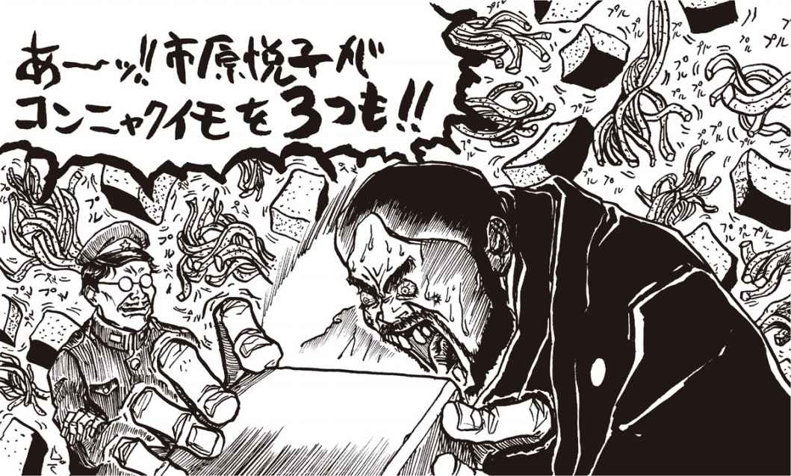
コンニャク
「おお......これは......」
齋藤の目が輝いた。
「これは......凄いっす。全裸で逆さ吊りにされた市原悦子が......茹でたコンニャクの風呂に頭から！」
「こんなもので驚くな！」
「あッ、これは！ 市原悦子が糸コンニャクを股に狭んで墓地で......うわーーーー！」
「わはははは。そのまさかじゃ！」
「あーーーーッ！ うわー凄い！」
「凄いだろう！」
「もうビンビンっす！」
「くけけけけ！ そしてクリアーしたユーザーが最後に見ることになるシーンが、これだ！」
「あーーー市原悦子がまさか......あんなことまで！ エッちゃんが！ ち、ちんぴょろほしぇーーー！」
興奮のあまり、齋藤は奇声を発しつつ股間を押さえて床を転げ回った。ゲーム慣れした齋藤のこの様子を見て、余は確信した。どうやら余はとんでもない傑作を作ってしまったようだ。
ややあって、少し正気を取り戻した齋藤が、ギラギラした目つきで言った。
「これは売れますぞ、閣下！ それがし確信し申した。必ずや売ってみせましょうぞ！」
「うむ。やっと分かってくれたか。しかし問題は、せっかく作ったこのソフトをどうさばくかだが......。通販だけで大丈夫かのう」
「それについては妙案があり申す。通販だけでなく、ここはひとつ積極的に、訪問販売もしてみましょう」
「何、訪問販売？」
謎の女子高生
くみりんの部屋
こんにちは。〈くみりん〉で～す♡
突然ですけど、パソコン通信してる人、自分のプロフィールは注意して書きましょう。だってプロフィールって普通誰でも読めるでしょ。だからちょっと注意。
私の場合、某ネットのプロフィールに住所から本名まで全部書いてて、それが公開する設定になってました。そしたらイタ電が増えて凄い困ったの。
最初は、原因が分かんなかったんだけど、ある日ネットの知り合いに「プロフィールに個人情報あんまり書き過ぎるのヤバイんじゃない」って言われて気がつきました。イタ電はネットのプロフィールが原因だったみたい。超失敗。反省反省。
プロフィール書き換えたら、イタズラ電話が減りました。今はほとんどかかってこなくなったよ。でも、プロフィールの性別が女だから変なメールが来ます。「君とは気が合うから会いましょう」とか「一緒に遊びに行きましょう」とか書いてあるの。怖いからメールは削除してま～す。女の子は特に注意してくださいね、プロフィールの内容。
第20回
美しい部屋の謎！ ますます深まる齋藤の正体！
訪問販売
「ほう。訪問販売とな」
齋藤は自信満々に頷いた。
「ほら、よくアパートの郵便受けに〝秘蔵ビデオお届けに参上〟なんてチラシが入っとりますでしょう、アレでございますよ」
「電話1本で大至急お届けに上がりますとかいう、アレか？」
「御意」
「通販の方が面倒臭くなくてよいと思うが......」
「それは手前どもの勝手でございます。いいですか、ああいうエロ物と申しますのは、買う方にしてみれば、欲求を感じた瞬間に欲しくなるものでござりましょう」
「なるほどな。いつ何どきムラムラッと来るか分からんものな」
「御意。ムラッと来た瞬間に、申し込みのはがきを書いたとしましても、翌朝ポストに投函する頃には......」
「ウム。醒めておるやもしれぬ」
「そこに訪問販売のメリットがあるのです。いつ何どき来るか分からぬムラムラが醒めぬうちに、商品をお届けに上がればお客様も大満足というものではありますまいか。また手前どものメリットとしましては、その場で現金が手に入るという」
「なるほど、それは魅力的だ」
「さっそくそれ用のチラシを作成しましょう。なに、これでしたら閣下のゴマちゃんワープロで作っても問題はありますまい」
齋藤はゴマちゃんワープロの前に座ると、またたく間に名刺サイズのチラシを作り上げた。
「これでよし！ ではそれがしひとつ走り回って、そこいらのアパートの郵便受けに配って参りましょう」
勇んで表に飛び出ようとする齋藤を余は大声で呼び止めた。
「ちょっと待て！」
「は。何でございましょう？」
「客はどうやって余の家に連絡するのだ？」
「それは電話で......あっ！」
「だろう？ 電話が止められているのだぞ」
「そ、そうでござった。いや、これは齋藤の失態でござる！」
余は苦笑した。
「下手な考え何とやら、だな。いや、待てよ」
余は齋藤に尋ねた。
「貴様の家には電話はないのか」
「はあ。いえ、その、ございます」
「じゃあ、チラシの連絡先を貴様の家にすればよいではないか」
「はあ。そうでございますなあ」
「何だその気のない返事は？ とにかくだ、齋藤、責任をとってもらうぞ。即刻チラシを作り直せ！」
「............御意」
「それから貴様の家に案内せい。これから当分の間、貴様の家を販売本部にするからそう思え！」
齋藤の部屋
なぜかは知らんが、齋藤は急に無口になり、足取りも重く余を自分の家へと案内した。道すがら余は思った。考えてみれば、齋藤の家に行くのはこれが初めてである。ここ１年というもの、齋藤は余の手足となっでよく働いてくれた。余は自分の野望でそれどころではなかったが、改めて考えるとこれは不思議である。余は齋藤のことを、何ひとつ知らないのだ。（これはぜひ一度、聞いてみなきゃならんな。齋藤、貴様は何者なのかということを......）
もちろん、それに類した質問はこれまでに何度もした。が、そのたびに齋藤がうまく話をそらしたりしてウヤムヤになっていたのだ。
その時、齋藤が素頓狂な声を上げた。
「ああ、ここでございます。ここがそれがしの住まいで......」
町外れに、武蔵野の面影を今に残す雑木林がある。その中ほどに、築30年は経っていようか、見るからに朽ち果てたボロボロのマンションがそびえていた。
齋藤は照れ笑いを浮かべると、余をマンションの中へと案内した。
１０２号室のドアの横に、下手な字で〝Ｓ〟とイニシャルだけの表札が出ている。どうやらここが齋藤の住居らしい。
余は思った。部屋を見れば、齋藤がどんな奴か、あらためて判明するだろう。いい機会だ。
「汚い部屋ですが、どうぞ」
一歩部屋に踏み込んだ余は小さく「おっ」っと声を上げた。意外に......いや凄くきれいな部屋ではないか。壁も床もまるで白いペンキの塗りたてのようにピカピカだ。小さな机と電話機、冷蔵庫、本棚以外にはほとんど物が置かれていない。余はまた、パソコンの上には脱ぎ散らかした下着が被さり、床には無数のコードが這い回っているような、ありがちな〝魔窟〟をイメージしていたのだ。
部屋は普通の２ＤＫといったところだろうか。台所の向こうに、もう一つの部屋のドアがあった。
開かずの間
好奇心にかられて、余はそのドアを開けようとした。その瞬間、齋藤の悲鳴にも似た声が上がった。
「あ！ そこは......お願いですから聞けないでください！」
「ん？どうしてだ」
「いや、その、人様にお見せできるような部屋では。何と申しますか、散らかし部屋でして。へへへ」
「そうか。まあ無理に見るつもりはないが......」
余は齋藤を急がせた。
「ところでチラシはどうした？ 早く配ってこい」
「御意」
齋藤は玄関先で修正したチラシをリュックに詰め込むと、不安げな目で余を見つめながら言った。
「あの......恥ずかしいですから、くれぐれもそこの部屋は覗きませぬように......」
「分かっておる！ さっさと行け！」
齋藤が外出した後、余はさっそく問題の部屋に入ろうとした。見るなと言われれば、見たくなるのが人情ではないか。ところが......ドアにはガッチリと鍵がかかっており、押しても引いても開かない。
「ちッ！」
余は舌打ちすると、ガランとした部屋に寝転がって、テレビでも見ようと思った。ところがテレビもないのだ。今どき、テレビのない家なんて......。隣の部屋にあるのだろうか。
冷蔵庫を物色したが、呆れたことにカラッポである。キムコすら入っておらぬ。机の引出しも同様。何にも入っていない。
本棚を眺めて唖然とした。『ハトの飼い方Ｑ＆Ａ』『世界ことわざ事典』『３世代住宅の知恵袋』？ 何じゃこれは。まるで古本屋の百円均一コーナーではないか。奴の趣味というものがまるで分からん。
部屋を見回して、余はいささか気味が悪くなった。生活臭というものが、この部屋には全くない！
となると、ますます隣の部屋が気になってくるが......。そうだ、ベランダ伝いになら、中の様子が分かるかもしれん。
ベランダに出てみたが、やはり中は判然としなかった。厚いカーテンがピッタリ閉じられているのだ。
「おや？」
カーテン越しに、何やら銀色の光がチラチラしているのが見える。と同時に、低い音がかすかに聞こえている。何だろう。何があるのだろう。こりゃいよいよ中を見ずには済まされんな。
意外な客
と、その時だ。部屋の電話がけたたましく鳴った。
「はい」
「あの、野望通販ですか？」
どうやらチラシを見た奴が電話をかけてきたらしい。なるほど齋藤の言う通り訪問販売とは凄い威力だ。
「はい。野望通販の訪問販売部です」
「チラシにあった『濡れ濡れ女子高生ハレンチソフト』なんすけど、今すぐ届けてもらえますか？ あの、メディアは3.5インチで」
「分かりました。えーと、住所と電話番号を......」
齋藤はまだチラシを配っているらしい。仕方がない、余がじきじきに届けることにするか！
余は男の指示した住所へと向かった。狡向町２丁目３番地ラーゲマンション５０２号室か。自分で作ってこんなことを言うのもなんだが、どうせ一人寝に耐えかねた寂しいオタクだろう。部屋だって魔窟化してるに違いない。ったくなあ。商売でなけりゃ、入りたくないよなあ。マンションは意外にこぎれいな建物だった。結構家賃も高そうだ。しかしなあ。外観はこうでも、一歩入ると魔窟だったりするのだ。インターホンを押す。ややあって、部屋の主が応対した。
「野望通販ですが」
「ああ......ちょっと待ってください」
勇気を奮って注文したはいいが、さすがに恥ずかしいのかもしれない。声には明らかにためらいの響きがあった。でも......待てよ。この声にはどこかで聞き覚えがあるのだが。
ドアが聞いたその瞬間、部屋の主と余は、同時に声を上げた。
「あ！ ......き、君は......」
「そういうあなたは......まさか！ 〈夕焼け級長〉！」
謎の女子高生
くみりんの部屋
こんにちは。〈くみりん〉でーす♡
編集部の人にコンピューター用語辞典をもらったので、分からない言葉をそれで調べて遊んでまあす。凄いおもしろいんですよ。
知ってました、ノイマン型って!? パソコンはみんなノイマン型コンピューター（編注：プログラム内蔵方式と逐次処理方式を併用したコンピューターのこと。ほとんどのコンピューターはこのタイプ）なんだって。〝ノイマン〟っていう言葉がカワイイですよね♡ フォン・ノイマンっていうおじさんが考えたからノイマン型なんだって。
あとねえ、スーパーコンピューターとかには非ノイマン型コンピューター（編注：ベクトルプロセッサー、マルチプロセッサー、ニューロコンピューターなど、ノイマン型の一部を否定した形のアーキテクチュアを採用したコンピューター）があるんだって。何かよく分かんない感じです。でも、〝非〟がつくと全然カワイクないですよね。ノイマンさんを仲間外れにしてるみたいだし、何か悪人っぽい感じですよね。
じゃあさよなら♡
第21回
商売は大繁盛！ 竹熊、もはや銭ゲバ!!
〈夕焼け級長〉
長い時聞が過ぎた。
永遠に続くのではないかと思われる長い長い時間であった。
深夜の街路を通り過ぎる木枯らしの音が、ラーゲマンションの廊下にも聞こえてきた。
半聞きのドアを狭んで、二人の男が対峠している。廊下にいる男は、もちろん余だ。そしてもう一人の男は、両眼を裂けんばかりに見開いたまま、蒼白い顔に脂汗を流している。
〈夕焼け級長〉――。
余が渾身の力を込めて製作したＨソフトの客が、〈夕焼け級長〉だったとは......。
それはあたかも星一徹と飛雄馬がソープの待ち合い室でばったり出くわしたような、何とも身の置きどころに困る光景と言えた。
長く恐ろしい沈黙に耐えかねたかのように、〈級長〉が口を聞いた。
「や、やあ、〈たけぴょん〉さん」
努めて平静さを装おうとしているが、語尾がぶるぶると震えている。
「ど、どうも、〈級長〉」
予想だにしなかった展開に、余の声も、普段より１オクターブほど高くなっていたかもしれぬ。
「ひ、久しぶりだね......。最近は〈へっぽこネット〉にアクセスしてないみたいだから、し、心配してたんだ」
「はあ、それは、どうも」
〈夕焼け級長〉の目が宙を舞っている。この場を取り繕う話題を必死に探しているようだ。
「ロ、ロシアが日本海に捨ててた核廃棄物、その後どーしてるんだろうねえ」
「さあ......」
「あは。あはははは......」
いつまでもこんな会話で時間を潰すわけにもいかない。余は咳払いをすると、ビジネスの話に戻ることにした。
「ところでご注文のゲームソフト、お届けに参りました。えーと『濡れ濡れ女子高生ハレンチソフト』、これでよろしいですね？」
「うわっ！」
とたんに〈級長〉は余の口に手を当てた。キョロキョロと周囲を見回している。近所に聞かれてはいないかと恐れているらしい。
「そ、そんな大声で言わなくても」
声に哀願の調子が宿っている。これがあの〈夕焼け級長〉なのだろうか。〈級長〉はポケットから万札を数枚取り出すと、余の胸ポケットにねじこんだ。
「釣りは、いい」
「はあ？」
「いいかい、〈たけぴょん〉君、このこと、ネットのみんなには、その」
〈級長〉はみっともないくらいにおろおろしている。道徳家の〈級長〉ともあろうお方も、このざまだ。偶然とはいえ、意外なところで意外な奴の弱点をつかんでしまうとは。余は心の底から愉快な気分になった。
「毎度！ いやあ大丈夫、こちらも職業上の秘密ですからね。ばらすなんてそんな。〈級長〉はセーラー服がお好きとか、そんなこと。ま、ひとつこれからもご贔屓に......」
師走の夜風は冷たかったが、余の懐は温かかった。いやそれ以上に、心の中には一面の菜の花畑が広がっていた。余は『月の法善寺横町』を口ずさみながら、齋藤のマンションへと向かった。
スキップで部屋に入った余に、先に帰宅していた齋藤が声をかけた。
「どちらに行かれていたので」
「うふふふ。いや、なにね。貴様が外出していた時に注文の電話があったのでな。ひとっ走り届けに行ってたのだ」
「さようで。いや、訪問販売計画はどうやら軌道に乗りそうですな。今しがたも、立て続けに４本も電話があり申した！」
「こうしてはいられんぞ。出前迅速はこの手の商売の基本だ。齋藤、手分けしてまた外出だ！」
商売繁盛
Ｈソフトの訪問販売は、大成功であった。２６０万円の借金はまたたく聞に返済し、３ヵ月日からは黒字に転じた。余は事務所を再び自分のマンションに戻し、バイトも数人雇ってバリバリと商売に邁進した。
今宵もまた電話が鳴る。
「ハイ野望通販......。はあ『セーラームンムン２・あそこにミミズを飼う女』っすか？ メディアは５インチ？ えと16枚組で３万８千円す」
おもしろいように売れる。エロは不況に強いというが、やはり本当だったのだな。
齋藤が外回りから帰ってきた。
「先ほど銀行に寄ってきたのでござるが、通帳を見せたらさかんに定期預金だの、何とか預金だのを勧誘されて閉口し申した」
そう言いながら齋藤の差し出した通帳を一瞥して、余は驚いた。
「わ。こんなに。あれだけの短期間に、よくもまあ。うーん、税金の心配もしなくちゃいかんかもな。有限会社でも作ろうかの」
齋藤はしばらく何かを考えていた様子だったが、
「閣下、そろそろ普段の生活に戻られてはいかかで？」
「な、何を言うか！ せっかく事業が軌道に乗ったばかりだと言うのに」
「御意。ですが閣下、閣下のお作りになられているソフトは以前も申し上げたように違法行為スレスレかと存じます。借金を抱えていたあの時はともかくとして、こうして貯金もできた今となりましては、むしろこれを元手にして、もっと安全な事業を展開なされてはいかがで」
「うふふふ。ジャン・コクトーもこう申しておる。青年よ、安全な株を買ってはならぬと。古今東西、ヤバイ橋を渡らずして銭がたまった例があるか、え？」
「野望にはまず元手が必要との閣下のご意見、それがしよっく分かり申す。ただ閣下、思い出してくだされ。そもそもこの商売を始めたきっかけは、何だったかと」
「ハテ何だったかの」
「そもそもは通信ソフトの設定を間違えたばかりに、２６０万円もの電話代を支払うはめになり、その借金を返済するためにやむなく始めた事業でございましょう？」
「それはそうだが、借金は返したぞ。何か問題があるのか」
「いえ、それがしが申しているのは、〈へっぽこネット〉の件です。電話が開通しましたら、ネットに再アクセスして〈夕焼け級長〉に復讐するのだと、あれほどおっしゃっていたではありませぬか」
「ああ、そのこと。それね、もういいのよ」
「ふへ？」
「ちょっとあってね、いろいろ。うふふふふ！」
「分かりませぬな。いったい何があったというので？」
「それはヒ・ミ・ツ！ とにかくなんだ、もはや〈級長〉殿は、余には永久に頭が上がらんのだ！ 従って復讐はもはや不要じゃ。今にして思えばあんな奴、余の敵ではなかった。これ以上あんな小者に関わり合っても時間の無駄というもの！」
ガッツ石松
齋藤はしきりに首をかしげている。
「何があったかは存じませぬが......本当に、復讐はもうよいので？」
「くどいのお。もういいの！ 貴様は黙って余についてくればいいのだ。ところで新作ソフトのアイデアを考えたのだが、また感想を聞かせてくれぬか」
「いつもながら閣下の創作意欲にはそれがし脱帽いたし申す」
「今度は市原悦子シリーズ第２弾！ 『夢のハワイでハメハメハ！』というタイトルなのだが」
「素晴らしいですな。それがし、これからまた外回りに行きますので、帰ってからお話はゆっくりと。ただ、くれぐれもその、法律に触れぬものを。お巡りさんに捕まっては元も子もないですからな！」
「分かっとるわい！ 早よ行け」
齋藤が外出してからも、余は新作のアイデアに熱中していた。ワイキキの浜辺で武蔵丸と密会していた市原悦子が、何者かにスキャンダル写真を撮られるところから物語は始まる。ネガを取り返すべく、泣く泣くカメラマンに自分の肉体を提供する悦子だったが、その行為もまた別のカメラマンに撮られて......と、まあ肉体の提供と隠し撮りとが無限に連鎖するドラマだ。いやあ、我ながらコーフンするわい！
と、その時である。部屋のドアをドンドンと叩く者がある。
「誰だ？ 齋藤かな」
覗き窓から見ると、何やらいかつい、ガッツ石松のような男が怖い顔で立っているではないか。余は念のためドアチェーンをしっかりとかけると、５センチほど扉を聞けた。
「どちら様で？」
とたんにぶっとい男の足がドアの隙聞に侵入した。さらには巨大なヤットコが差し挟まれ、ブチーンと嫌な音を立ててチェーンが切断された！
「な、何をするッ！」
ガッツ石松のような男は手帳を振りかざして叫んだ。
「警察だ。貴様を猥せつ物取締法違反・訪問販売法違反その他の容疑で逮捕する！」
謎の女子高生
くみりんの部屋
こんにちは。〈くみりん〉でえす♡
みなさん充電式の電池とかって使ってますか？ 私は使ってまあす。ニッカドっていう電池。モデムに入れてるの。何度も充電できるから地球にやさしくていいですよね。
でも、充電式の電池って電気を最後まで使い切らないと駄目なんだって。まだ電気が余ってるのに充電すると、ほんとの力が発揮できないんだって。そういうことを繰り返すと全然パワーがない電池になっちゃうんだって。パソ通で聞いたら、この不思議なパワーダウンをメモリー効果と言うんだそうです。
これを防ぐには電池を最後まで使い切ることらしいんですが、でもそれを知らずにメモリー効果を起こしちゃったら放電器というのを使えばもとに戻るみたい。でも放電器ってあんまり売ってないみたい。放電器つきの充電器を使うとか豆電球をつけて電気を使い切っちゃうといいよ、って編集部の人が教えてくれました。ノートパソコンとかのバッテリーもおんなじだそうです。でも放電器つきの充電器ってどこに売ってるのかな～？
第22回
落ちた野望！ 嗚呼シャバの風が恋しい!!
黙秘権
３畳ほどの狭い取り調べ室で、余とガッツ石松似の刑事は向かい合っていた。
余の腰には縄がかけられ、その一方は背後のパイプにしっかりと結ぼれていた。頑丈な鉄製のパイプだが、ところどころがへっこみ、塗装がはげ落ちている。
「ああ、それね」
刑事が言った。
「容疑者は必ず、取り調べの際そこに縛りつけるんだが、時々暴れる奴がいるんでな」
「は、はあ」
「特に困るのがシャブ中だ。あいつら、限度を知らん。そこ、ボコボコになっとるだろ」
「し、シャブ......」
余は作り笑いをした。だが刑事はニコリともせず、万年筆を片手に調書をめくった。
「さて、と。氏名は竹熊健太郎。昭和35年８月29日生まれ。これで間違いはないか」
「乙女座っす。へへへ」
「聞かれたこと以外はしゃべらんでいい。間違いないな？」
「は、はい......」
「よし。お前には猥せつ図画頒布と詐欺の疑いがかけられている。それから訪問販売法違反もだ。ついでにモデルに使われた女優さん数名から名誉毀損と肖像権の侵害で届けが出されておる上に、アニメ製作会社から著作権侵害の被害届けも出てる。派手にやったなあ。一つ一つ、調べさせてもらうからな」
冗談ではない。誰が訴えたかは知らないが、断じて罪など認めんぞ。下手に実刑判決でも出て、何ヵ月か何年かは知らんがオリの中で貴重な青春を費やしてたまるか！ 余には実現せねばならぬ野望があるのだ！
そうだ。確か黙秘権というものがあったはずだ。何かの本で読んだことがあるが、警察官は、容疑者を逮捕してから48時間以内に、身柄を証拠と一緒に検察官に引き渡さなければならない。もし証拠が不十分であれば、そこで釈放だ。〝自白は証拠の王〟というくらいだ。下手にしゃべればヤブへビになるかもしれない。ここは黙秘あるのみだ！
「どうした？ さっきから黙っているが......ハハーン。この野郎、黙秘する気だな！」
ガッツ石松似の刑事はニヤニヤと笑いながら、同僚を呼んだ。
「おーい安っさん！ このあんちゃん黙秘だとさ！」
ドアが開いて小松方正ソックリの刑事が顔を出した。
「あーん？ 黙秘ぃ？ ふざけた野郎だな！」
小松方正は蛭のような微笑を浮かべ、余の肩に子を回した。口許とは反対に、その腐ったサバのような目は全然笑っていない。
「ひょっとして兄ちゃん、ダンマリを決め込めば、48時間で出れると思ってんのかナ......そうは問屋がおろしませんヨ。お前が猥せつなファミコン【★59】ソフトを販売してた証拠は全部上がってんのヨ」
ファミコン？ どうやらこの刑事、ファミコンとパソコンの区別がついてないようだ。馬鹿め、これだから素人は......いや、いかん。ここで口を開いたら余の負けだ。
ガッツ石松が相槌を打つ。
「裁判所に申請すりゃあ、簡単に10日間の拘留許可が出る。その間黙秘し続けたとしても、さらに10日延長できる。最後にはどうせゲロすんだから、こいつは割に合わねえ。そうは思わんか？」
そ、その手には乗らんぞ。そんな脅しに屈してなるものか！ 貝のように口を閉ざす余の様子を見て、小松方正が言った。
「そうかいそうかい。そっちがそのつもりなら、ま、ゆっくり行きましょ。ひと晩寝れば気も変わるでしょ。こいつを連れてけ！」
ドアが開き、前田吟ソックリの警官が現われた。余は手錠をかけられ、こづかれるように地下の拘置所に連れて行かれた。
テレビ
ガシャーン、と嫌な音を立てて鉄格子が閉まった。初日はどうやらこれでおしまいのようだ。徹夜の取り調べを覚悟していたのだが、何だ他愛もない。結局、刑事は調書がほとんど書けなかった。ふふふふ、この調子で最後まで黙秘してやる！
それにしても、齋藤はどうしているのだろう。余が逮捕された時、齋藤は外回りで留守だったのだが。余の逮捕にもう気がついているだろうか。それとも、齋藤も逮捕されているのか。もしあいつもパクられているなら、ちとヤバイことになる。何しろ鉄の如き意志の持ち主たる余とは違って奴は気が弱いから、洗いざらいしゃべってしまうかもしれない。しかし刑事が齋藤の話を持ち出さなかったところを見ると、まだ大丈夫なのかも......。
余の傍らでガサゴソと何かがうごめく気配がした。ご同類か。頭から毛布を被って、何やらブツブツひとりごとを言っている。
「テレビ！ ひーーーーーーッ！」
ふいに男がはね起きた。モジャモジャの髪、頬はゴツソリと痩せ落ち、目の下にクマができている。何、テレビ？ テレビがどうしたのだ？ 男は余をギラリとした目で睨むと、「あんた......ファミコンで何か......やってたのか？」。
「はあ？」
「おら、さっきまで隣で取り調べ受けてたんだけんどヨ。刑事さんがさかんにファミコンがどうしたとか言ってたじゃないか」
「いや......何かの間違いでしょう。僕、確かにパソコンは持ってますけど。ファミコンとパソコンは全然違うものですよ。ま、厳密に言えば、両方ともコンピューターですけど」
「パソコンて、あれだよな、テレビついてんだろ」
「いや、テレビじゃなくて......あれはディスプレイと言いまして」
「テレビじゃないのか」
「いや、まー確かに似たようなものですけど」
「やっぱりテレビか！ この野郎、手前ッ！」
男はいきなり余をはがい締めにした。物凄いカだ。
「こんにゃろ！ テレビで俺に命令しやがって！」
な、何の話だ？ 余は男の二の腕を見た。それは青紫色に腫れ上がり、無数の注射ダコがビッシリと密集していた。こいつは、し、シャブ中......！
男はテレビテレビテレビテレビと叫びながら、余の頭をサンドバッグのように殴り続けた。
「け、刑事さあーーーんッ！」
余は絶叫した。
「な、何でも話しますから！ こ、ここから出してくれーーーー！」
再び取り調べ室に連行されると、小松方正似の刑事とガッツ石松似の刑事が、さっきとは別人のように上機嫌な顔で待ち構えていた。
「ほう、しゃべる気になったか」
余はゲロした。何もかも洗いざらいぶちまけた。最後にはハイな気分になってしまい、燃えるゴミの日に燃えないゴミを出してしまったことまで自白してしまったのだった。
保釈
鉄格子の中で、余はまんじりともせず夜を明かした。隣の房では例のシャブ男が小声でテレビテレビと呟いている。畜生あの刑事、さっきはわざとあそこに入れやがったな。
突然、前田吟似の警官の声がコンクリートの壁にこだました。
「１１７号。出ろ。面会だ！」
面会？ 誰だろう。部屋に入ると、灰色のスーツを着た太った見知らぬ男が座っていた。
「どちら様で......」
「弁護士の岡本馬泥と申します」
あ、そうか。すっかり忘れていたが、こういう場合、何はさておき弁護士を雇うべきだったのだ。しかし誰が余のために弁護士を雇ってくれたのだろう？
「雇った覚えはない。そう思われているのですね」
「は、はあ」
「狐につままれたような顔をされてますな。いやご心配なく。私が来たからにはもう安心です。じき保釈されますよ」
「ほしゃくう？」
「いやいや、ある人に頼まれまして、竹熊さんの弁護をすることになりましてね。今、裁判所に保釈申請をしておきましたから、すぐ出れますよ」
この男は何を言っているのだ？
「竹熊さんの場合は一応初犯ですし、まあ２００万も積めば何とかなるでしょう」
「に、２００万？」
「いやご安心ください。その人が全部払うと言っております」
その人？ 余のためにそのような尽力をしてくれる奴といえば......。
「ひょっとして、その人は齋藤という人では......」
「齋藤？ 存じませんな」
余は混乱した。齋藤でなければ、誰だというのだ。
「だ、誰です？」
「依頼人の強いご希望で、本名を明かすことができないのですが、一応〈くみりん〉と伝えてくれ、と」
く、く、〈くみりん〉!?

謎の女子高生
くみりんの部屋
こんにちは～。〈くみりん〉です♡
あと、ほかのソフトハウスもそうだけど、アートディンクのゲームのユーザー登録をすると、新作のプレビューディスク【★66】を送ってくれるんです。『トキオ』のプレビューディスクは特にかわいかったんですよ。いいなあ、アートディンク。日本が世界に誇れるソフトハウスですよね。みなさんもアートディンクのファンになりましょう!! じゃあさよなら。
第23回
シャバに戻った竹熊、再び〈へっぽこネット〉へ！
疑惑
「もう一度言ってください！ 保釈金を積んでくれた人の名は、何と言うのですか？」
「ですから、その、〈くみりん〉という......」
余は岡本弁議士の肩を揺すって叫んだ。
「冗談はやめてくれ！」
弁護士は余の腕を振りほどくと、滲んだ脂汗をハンケチで拭いながら言った。
「ご不審な点はごもっともです。ですが、依頼人の強い希望で、今は正体を明かせないのです。とりあえず〈くみりん〉とだけ伝えてくれと申しておりました」
余の灰色の脳細胞は混乱した。〈くみりん〉って、まさか、あの〈くみりん〉だろうか？ そんな馬鹿な。どうしてネットでしか面識の......いや面識というのかは知らんが、とにかく面識のない女子高生が、高額の保釈金を積んでまで余を助けてくれるというのか？ だいたい余はここ数ヵ月〈へっぽこネット〉にはアクセスしていない。どうして余が投獄されていることを知ったというのだろう？
余がヤバイ橋を渡っていることを知っているのは、〈へっぽこネット〉では例の〈夕焼け級長〉だけだが。まさか〈級長〉が？ いや、それはありえん！ 奴には余からＨソフトを購入したという引け目があるはずだしな。他人にばらすようなことはよもやあるまい。
ああ。何が何だか分からん！ まるで余の与かり知らぬ場所に、何もかもお見通しの人物がいるかのようだ。そいつが余の運命をもてあそんでいるような......。
頭を掻きむしる余の様子を見て、弁護士が口を開いた。
「とにかく、いずれ時期が来れば私から事情をお話しすることもできるでしょう。今は〈くみりん〉さんの好意を黙ってお受けください。いずれにせよ、あなたに損はありません」
弁護士は腕時計をちらりと見た。
「そろそろ時間です。これから裁判所に行って保釈の手続きをとって参ります。多分明日には釈放されると思います。では、これで......」
まだポカンとしている余を尻目に、岡本弁護士は去っていった。
釈放
翌日、あっけなく余は釈放された。未だ放心のていで、ぼんやりと警察署の玄関を出、ピーポ君人形の脇をすり抜けたところで、やにわに解放された実感が漂ってきた。
「ああ。シャバの空気が旨い！」
考えてみればまだ３日しか経っていないのだ。だがまるで３年もあのオリの中にいたような気がする。
「うおーーーい」
背後の建物から嫌な声がした。あいつだ。あの小松方正似の刑事だ。
「うおーーーい。よかったなーー。ずいぶんお金持ちのお友達がいるんだなーーー。でも、どうせお前みたいな奴は再犯するかんなーーー。ま、今度は出られないなーーーー。待ってるよーーーーん」
死ね。余は心の中で叫んだ。何だあの野郎。太った蛭のような面しやがって！ 覚えておれよ！
余が天下を盗った暁には、〝拷問法〟を制定し、重油とコールタールのプールで10時間泳がせたあと、両手を縛った状態でワニと格闘させたる！ それから高度１５０メートルの橋の上から逆さに吊って......わしゃ虎の穴か！
出迎え
その時である。余の後頭部にコツンと小石を当てる者がある。
「な、何者？」
振り返ると、通りの向こうの電柱の陰から、紋つき袴姿の、サングラスにマスクをかけた見るからに怪しい大男が必死に手招きしている。
「おお、齋藤！」
信号を待つのももどかしく、余は全速力で通りを渡ると、齋藤のもとに駆け寄った。齋藤は無言で余の手を引っ張ると、そのまま急かされるように路地の裏へと誘った。
「おお、よくぞご無事で！ 齋藤、閣下の身が心配で、おとといから警察所の前でずっと案じておりました。いや、無事でよかった！」
「あの格好でおとといからあそこに立っていたと申すか？」
「御意。何しろあの日、それがしが外回りから閣下のマンションに帰りましたら、表に数台のパトカーが止まって何やら騒がしい様子。もしや、と嫌な予感がして電柱の陰に潜んで様子を窺っておると、手錠をかけられた閣下が刑事に引き立てられて出てくるではありませんか！ いや、本来であればこの齋藤、命と引き換えにしましても閣下をお救い申し上げるところなのですが、相手は国家権力。手をこまねいて見ているより仕方あり申さなんだ！」
「ウム。齋藤といえど、相手が国家権力ではのう」
「御意。それにそれがしもいわば共犯でございますから、下手に出ていって捕まりでもしたら、それこそどうにもなり申さん。外部から救出工作を演じることもできなくなってしまいまする」
「そのことなのだが......。齋藤、例の〈くみりん〉の名を語って弁護士を雇ったり、保釈金を用立ててくれたのは貴様ではないのか？」
「はて？ 何の話でござる」
「やはり知らんのか......。しかし、妙だな。まるで狐につままれたような話じゃ」
とりあえず自宅に戻った余は、齋藤に、保釈に至った一部始終を話して聞かせた。
「なるほど妙ですな。いや保釈金のことはそれがしも真っ先に考え申した。しかし、それができれば......」
「確か、３００万円くらいの現金だったら銀行に入っていたのではなかったかな？」
「それはそうなのですが、当然、銀行にも官憲の魔手が伸びていることでございましょう。もし、それがしが閣下の口座から引き出そうとすれば......」
「なるほど、即、御用だったな。何しろ余を取り調べた小松方正似の刑事、さかんに共犯者の名前を知りたがっていたからな」
「そして閣下はその鉄の如きご意志でもって、ひとこともお話しにならなかった。いやあ、ますますもって齋藤、閣下に心服つかまつる」
「いや、全部ゲロした」
「ちんぴょろほしぇーーーー！」
「だって刑事さんたら、シャブ中と一緒のオリに入れるんですもの！」
齋藤は急にそわそわと落ち着かなくなった。
「あ、あのう......。万一、それがしも逮捕され申したら、倦越ですが、保釈金の方を何卒、その......」
「残念だがそれは無理じゃ。何しろ刑事罰だけではなく、著作権違反その他の民事も抱える身だからな。恐らく貯金はパーじゃ！ いや、そんなことより！」
余は拳を固めて叫んだ。
「〈くみりん〉！ 何としても謎の女子高生〈くみり ん〉と連絡をとらねばならぬ！ 齋藤、ここにいろ。今から〈へっぽこネット〉にアクセスするからな！」
余は久しぶりにハレルヤ１号の前に陣取り、通信ソフトを立ち上げた。
「うーん。久しぶりじゃわい」
齋藤は先刻からずっとそわそわしていたが、余の背後でふいに立ち上がって、言った。
「それがし急用があり申す！ 申し訳ありませんがこれにて......」
「どこへ行く？」
「警察のこともありますし、それがし、しばらく身を隠します」
「逃げるのか？」
「逃げませぬ。ただ、今後それがしへの連絡は、例の〝笛〟にてお願いします。では、御免！」
〈くみりん〉現わる
「まあ、よいわ」
余はひとりごちると、そのまま通信を開始した。
〝ようこそ、へっぽこネットへ！〟
相変わらず悪趣味なオープニングだ。愚民の園め。だが、何やら懐かしさすら感じるわい。帰ってきた。......そんな感じだ。おーい愚民ども。〈たけぴょん〉様のお帰りだ！
メニュー画面からＷＨＯコマンド【★67】を打ち込む。こうすると、現在接続している会員のＩＤとハンドルが表示されるのだ。どうやら、〈くみりん〉はまだ来ていないようだ。こうなったらひと晩張ってやる。多分一度くらいはアクセスしてくるだろう。
と思うが早いか、画面に〈くみりん〉のハンドルが表示された!! 何というタイミングの良さだ。
「まるで齋藤と入れ違い、って感じだな」
余はそう呟くと、改めて自分でギョツとした。何かがおかしい。どこかが変だ。だいたい、余が警察に捕まったことを知っているのは齋藤だけではないか。どうして〈くみりん〉が知っているんだ？ それに、ちょうど今ごろ、齋藤は家に着いている頃ではないか。そしたら、何で急に〈くみりん〉がアクセスしてくるのだ？
余はしばらく考えていたが、やがて意を決して、〈くみりん〉宛ての電報を打ち始めた。
謎の女子高生
くみりんの部屋
こんにちは～。〈くみりん〉でえす♡
『LifeGame』っていうのは、凄く単純な規則だけがある世界に、点がいくつかあって、その点が規則に従ってどういうふうに活動するかを見ていくゲームなの。最初はなんか点が動いてるだけに見えたけど、この本を読んだら、その点の動きが生命の神秘みたいな感じに見えてきました。そうかー生き物はこういう感じで進化してきたのかもーみたいな。『LifeGame』に似たゲームで『ZOO』【★70】っていうのもありました。ちょっと前に流行った『シムアント』【★71】とか、そういうゲームっぽい感じもしたなァ。みなさんもやってみてくださいね、『LifeGame』と『ZOO』。マジメにやるとおもしろいですよ。じゃあさよなら。
第24回
〈くみりん〉の正体、実は齋藤？
疑惑のチャット
〝おしさしぶり。〈くみりん〉さんデすね。〈くまぴょん〉デース〟
そう打ちかけてから、余は思わず「おっと！」と声を洩らし、キーボードから手を離した。
「〈くまぴょん〉ではなく、〈たけぴょん〉だったな！」
久しぶりのアクセスでうっかり間違えるところだった！ 〈くまぴょん〉としての余はすでにネットから追放されている。その後、余は身分を隠しハンドルも変えて、現在はあくまで〈たけぴょん〉という人畜無害な人格で通っているのだ（もし回線の向こうの〈くみりん〉が、筆者の予感通りに〝あいつ〟だったとしたらこの使い分けは意味をなさないわけだが）。
とりあえず様子を見ることにしよう。余はハンドルを〈たけぴょん〉に変え、電報を打つことにした。
即座に反応が返ってきた。〝きゃー、〈たけぴょん〉お久しぶり！〟などと、相変わらずフレンドリーな文章である。
もしも......もしも、この女の正体が純情可憐な女子高生ではなく、ヒゲモジャの〝あいつ〟だったとしたら......。〝身の毛がよだつ〟とはまさにこのことであろう。
他愛もない電報のやりとりをしながらも、余の灰色の脳細胞はフルスピードで回転していた。どのように話を切り出すべきか、この時ほど迷ったことはない。
とにかく質問をしようにも謎が多過ぎるのだ。問題が錯綜し過ぎている。仮に、目の前の〈くみりん〉が、本物の〈くみりん〉だったとして、ではその一介の女子高生が、どうして２００万円もの大金を工面して余の危機を救う真似をするのか。女子高生売春でもしていない限り、そんな金が自由になるとは思えん。いやそれ以前に、どうして余がＨソフトを販売して警察に逮捕されたことを知ったのか。あの頃、余はこのネットに全くアクセスしていなかったのだ（アクセスしてたとしても、Ｈソフト販売のことなどおくびにも出さなかったろうが）。
やはり、〈くみりん〉の正体は〝あいつ〟か......？ それなら、すべてのつじつまは合う。しかし、それならどうして〝あいつ〟はわざわざそんな面倒なことをするのだろう。ネットに不慣れだった余を支援するのなら、最初にそう打ち明けてくれてもいいのに。どうも最初に会った時から〝あいつ〟には謎めいた部分が多過ぎる。〝あいつ〟はいったい何者なのだ？
もちろん、すべては余の推測に過ぎない。〈くみりん〉と〝あいつ〟......齋藤とが同一人物だということは、余の単なる思い過ごしなのかもしれない。しかし、だとしたら......。
聞きたいことは山ほどある。が、とりあえずは一つ一つ、疑問点を解消せねばならん。まずは、そう、余のために保釈金を積んでくれた〈くみりん〉なる女性（？）が、本当にこの〈くみりん〉なのか、ということだ。まずはそこから確かめてみよう。電報のやりとりではまどろっこしい。
余は〈くみりん〉をチャットルーム【★72】に誘うことにした。
＊＊チャットルームに入室しました＊＊
たけぴょん：ほんとう■にお日さし鰤ですね。
くみりん：何ヵ月ぶりかしら（^_^）。さびしかったワ。
たけぴょん：いや、その、よくある歯なしでして、えーとつまり出んわ料金をタイノウしていて、その。
くみりん：ウー分かる分かる（^_^;）。〈くみりん〉にも覚えがあります。チャットにはまりたての頃、目の玉が飛び出るような請求書が来て、パパにものすごおーく怒られちゃった（;_;）。それから３ヵ月もおこづかいなしで（^_^;）。
たけぴょん：お骨会、いやお小遣いってどの暗いもらっってるん出すか？
くみりん：エー、ヤダー。少ないですよー（^_^;）。
たけぴょん：胃外に２００万円くら■いためてタリして（笑）。
くみりん：何のお離し？ あたし高校生ですよお（^_^;）
たけぴょん：ええと、ぼくの友■人で竹熊ってのが異まして、こいつがちょっとしたことでおまわり散に捕まってしまって。
くみりん：ふーん。大変で死たのね......。
たけぴょん：ところが全然シラナイ人が２００万円もホ酌金をツンデくれて。
くみりん：ふ不思議なこ戸も■あるあるものですねえ（^_^;）。
たけぴょん：その見知らぬ人というの我、何と〈くみりん〉と名乗ったんダそうで■す。
くみりん：屁ーー。愚雨禅■偶然ですね（^_^）。ところで〈くまぴょん〉さん、ケーキは好きかしら？
たけぴょん：はあ、甘いものには自が泣くて......。え？ 〈くまぴょん〉？
くみりん：うわ！ あたしったら場家馬鹿みたい！ 以前こののネネットに似たハンドルの素敵な片がいて......間違えてしまい増した（^_^;）。えっとお、で、今日みつけったケーキ屋さんでねえ......
「やはりおかしいッ!!」
余は思わず大声で叫んだ。
「〈くみりん〉はやはり何かを隠している！」
余が核心に触れる話をするたびに話題をそらせるようにするところ。また、誤変換が急に増えてきたところ......。これは内心の動揺を示しているのではないのか？
よーしこうなったら、こちらも正直に正体を明かし、ズバリ聞いてみることにしよう。イチかバチかだ！
たけぴょん：けケーキの話しはソレクライにし手......正直にい異ましょう。〈くまぴょん〉というのは、実は朴、もとい僕なんだ。
くみりん：うそ！ 信次られない！
たけぴょん：そして警察につか待った竹■熊というのは、補かならぬ〈くまぴょん〉......詰まり僕のことだ！
くみりん：....................................
たけぴょん：だからあんたも正直に胃ってほしい。２００まん円の補しゃく金を積んでくれた〈くみりん〉というのは、つまりあなたですね？ 変じ返事をしてください！ 返事が無いとこ■ろをみると......。
くみりん：ごめんなさい。今は何も話すことができないの。
たけぴょん：もう一つ聞きた■いことがある。余、いや僕が退歩逮捕された事ヲ知っているのは、ただ一人だ毛......齋藤だけだ！
くみりん：ちちち我居ます！ 違います！
たけぴょん：齋藤かそうでな以下はすぐに確かめることができる！ いま、この場で齋藤呼び出し用の笛を吹けば......。さあ、吹いたぞ。吹いてるぞ！ これで齋藤がこ■なかったら......
くみりん：あら。ごめんなさい。部屋の外でパパが鬼のような顔してるわ。あんまりチャットしてるとパパに殺されるから、そろそろ落ちますね。じゃあ、バイバイ（^_^;）
＊＊チャットルームから退出しました＊＊
アリバイ
ぴぃーひよるるるるる......。
余が齋藤にしか聞こえぬ３万サイクルの笛を吹くと同時に、〈くみりん〉はチャットルームから消えた。
そして数分後......。インターホンが鳴り、全身汗だくの齋藤が現われたのだった。
「ハァハァ、お呼びで？」
余はタバコに火をつけると、二光の通販で購入した回転座椅子に深々と腰を落とし、紫煙を齋藤めがけて吹きつけた。
「たった今、〈くみりん〉とチャットをしていたのだが......途中で余が笛を吹いたら、慌ててチャットを打ち切って出て行った。そして貴様が現われたわけだが」
「はあ？ そ、それはもう、緊急のお呼びでございますから」
「ふざけるな！ 〈くみりん〉なんて気持ちの悪い名前を名乗りおって！ 正体は齋藤、貴様だろう？」
「あの。おっしゃる意味がよく分かりませぬが......」
「どこまでもシラを切るつもりか！」
「そんな......ど、どうしてそれがしが閣下を支援するのに〈くみりん〉に化けねばならないのですか？」
「だからその理由を聞きたいと申しておるのだ」
「弱りましたな......」
「齋藤、素直にネットオカマの趣味があると申せ！ 貴様にはアリバイがないのだぞ」
「ほう、アリバイ」
余の気のせいか、一瞬、齋藤がほくそ笑んだような気がした。
「アリバイがあればよいのですな......」
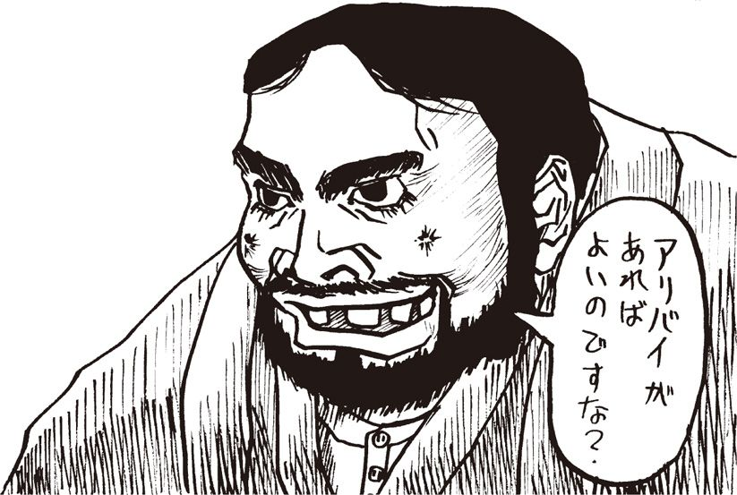
謎の女子高生
くみりんの部屋
こんにちは一。〈くみりん〉でえす♡
みなさんはＩＳＤＮ【★73】とかって知ってますか？ 私は最近知りました。ISDNのこと。凄く便利なんだって。
電話の音声やファックス、あとパソコンのデータなんかを１本の回線で送れちゃうデジタルネットワークなんですよ。ISDNって。1988年からNTTがサービスを始めてて、転送速度が毎秒64キロビットの〝INSネット64〟と、1500キロビットの〝INSネット1500〟があるんだって【★74】。
ISDNじゃないと、音声は電話回線、ファックスはファクシミリ通信網、デジタルデータはDDX【★75】みたいに、回線を使い分けなくちゃいけないからたいへんみたい。
でもねえ、ISDNよりもっと凄いB-ISDN【★76】っていうのも、そのうちできるんだって。毎秒150メガビットとか、600メガビットも伝送できるそうです。B-ISDNって。何か分かんないけど凄ーい。だってうちのモデムって遅いんだもん。
じゃあさよなら♡
第25回
齋藤にはアリバイが!? 竹熊、混乱す！
濡れ衣
「齋藤、まこと〈くみりん〉の正体は貴様ではないのだな？」
「とんでもないヌレギヌでござる。間違いあり申さん！」
「では証拠を見せい」
「証拠でございますか」
「そうだ。アリバイだ。齋藤、さっきはアリバイがあるようなことを言っていたではないか」
「そうですな、どうしたら信用していただけるのか......」
齋藤は腕組みをし、しばらく考えていたが、何かを思いついたかのように口を聞いた。
「おお、そうだ。格好のアリバイがあり申す！ 今から家に戻ってよろしいですかな」
「どういうことだ？」
「確か以前に一度、それがしが〈へっぽこネット〉にアクセスしました時に、閣下と〈くみりん〉がチャットしていたことがあり申した。まだ閣下が〈くまぴょん〉と名乗られていた頃のことです。よほどお声をかけようかとも思いましたが、せっかくの楽しいチャットを邪魔しても悪いと思い、そのままネットから抜けたのですが......」
「作り話なら何とでも言えるわい。その時の証拠はあるのか」
「それがしの通信ソフトは自動的に記録を取るよう設定してあり申す。多分、ハードディスクのどこかにログが残っておるはず。ログを見れば閣下も納得されるでしょう」
そう言うと齋藤は出ていった。仕方がない。こうなったら、齋藤が言う〝証拠〟とやらをこの目で確かめようではないか。もしその証拠が確かなものでなかったら......齋藤＝ネットオカマ説がいよいよ濃厚になってくる。もし、そうだったとしたら......余は今までヒゲモジャで大男の変態と一緒に過ごしていたことに......。ああ、考えただけで身の毛がよだつわい！
おろしたてのタバコをひと箱空にした頃、齋藤がフロッピーを片手に戻ってきた。
「遅かったな齋藤」
「失礼しました。いや何分整理が悪くて、目当てのログを探すのに苦労してしまって」
齋藤はそう言うと余の机にどっかと腰をかけ、ハレルヤ１号にディスクを挿入した。
「それがし、ネットにアクセスしますと、最初にＷＨＯコマンドで同時に誰がアクセスしているか確かめるのが習慣になっております。その日も何げなくＷＨＯを入れましたところ......」
そう言って齋藤はログファイル【★77】を示した。
「ご覧くだされ」
■コマンドを入力して下さい＞ＷＨＯ
■現在ログインしているユーザー
HEP1022 馬鹿王
HEP2988 夕焼け級長
HEP0960 くみりん ＊＊チャット中です＊＊
HEP0895 原始人モコモコ
HEP6969 素敵な奥さん
HEP1655 うさちゃん１号
HEP1999 くまぴょん ＊＊チャット中です＊＊
HEP4242 しねしね団
HEP1941 齋藤
なるほど。確かに、〈くみりん〉と齋藤とが同時にアクセスしている。だが......騙されんぞ。こんなログに何の証拠能力があるというのだ？
「おい齋藤、ふざけるなよ！」
「は？」
「こんなテキストファイルのログなぞ、エディター【★78】を使えばいくらでもでっちあげられるだろうが！」
「うう。それでは閣下は、この齋藤めをどうしても信用されないと......」
「なあ、齋藤。いいかげん、隠しごとはやめたらどうだ」
「か、隠しごとなんて、そんな......」
「貴様はこれまでもよく余に尽くしてきた。これでも余は十分に感謝しておるのだ。たとえ貴様がネットオカマだとしても、この気持ちに変わりはない」
「何をおっしゃいます！」
「だから思い切ってゲロしたらどうだ？ 楽になるぞ」
「嘆かわしや！ 閣下がそこまでおっしゃる方だとは ......か、かかかか閣下！ ち、ちょっと待ってくださ れ！ そんな、笛など口につけていったい何を......!?」
チャットルーム
「吹くのだ」
余は齋藤懲罰用の超音波笛を口に当て彼を睨みつけた。
「お待ちくだされ！ よ、要するに、それがしがここにいる状態で、閣下が〈くみりん〉とチャットをされるようなことでもあれば、これ以上のアリバイはありますまい？」
「そういうことがあればな。まあ、信用せんでもないが」
「と、とりあえずその〈へっぽこネット〉にアクセスをされてはいかがですか？ ひょっとすると、〈くみりん〉がアクセスしているかもしれませぬぞ。彼女は毎日、ちょうどこのくらいの時間にアクセスしているような......」
余は部屋の時計を見た。針はちょうど夜の10時を指している。
「ふーむ。それもそうだな。よし、アクセスしてみるか」
余は笛をポケットにしまうと、ハレルヤ１号の前に座った。
「繋がった」
メニュー画面にＷＨＯの文字を入力する。ログイン中のユーザーＩＤとハンドルがズラズラと表示され始め、それを目で追っていた余は、思わず驚愕の叫びを上げた。〈くみりん〉がアクセスしているではないか！ 〝チャット中です〟という表示が出ているが、チャットルームには彼女一人しか入っていないようだ。誰かを待っているのだろうか？」
「さ、齋藤、こ、これはいったい......」
「だから申したではござりませぬか。運良くチャットルームでお待ちですぞ。とりあえずお相手してみたらいかがですか？」
余は狐につままれたような面持ちで、チャットルームに入った。
＊＊チャットルームに入室しました＊＊
たけぴょん：こんにち輪。
くみりん：こんにち輪ってなあに？
たけぴょん：ああし失礼ししました。つい慌ててしまって変換ミスをその。えーと、あらためまして、こんにちわ。いや、こんばんわ。
くみりん：はい、こんばんわ。元気？
たけぴょん：ええ、元気です。えーと、えーと、こないだはどーもすいませんでしたね。
くみりん：すいませんって謝っていることね？
たけぴょん：はいそうです。えーとこないだのチャットの時、〈くみりん〉さんのことを実は齋藤じゃないかと疑ってしまて、その、いや齋藤というのは僕の友人で毛むくじゃらの大男なんですが、こいつがネットオカマで、ほかならぬ〈くみりん〉さんがそうなんじゃないかとおもってどうもとんだ勘違いだったようで。
くみりん：よくあることよ。
たけぴょん：いや僕が例の件でおまわりさんにツカ待ってしまたと木、■２００満えんもの大金で釈ほうしてくれた人が、〈くみりん〉と名乗たものですから僕はて＠っきりその......。
くみりん：ところで犬のこと好き？
たけぴょん：はあ？
くみりん：しつもんにはちゃんと答えてください。
たけぴょん：嫌じゃないですけど。
くみりん：わたしは猫が大好きです。
たけぴょん：はあ。そうですか。
くみりん：絶望は愚か者の結論なりって山谷親平が言っていたわね。
たけぴょん：あの......何の話をしているので？
くみりん：何の話ってなあに？
たけぴょん：？ ？ ？ 〈くみりん〉さん今日は何か変ですね......。
くみりん：今日は何か変ですねってなあに？
たけぴょん：..................？
謎の女子高生
くみりんの部屋
こんにちは～。〈くみりん〉でえす♡
うちにマッキントッシュが来ましたー。凄いかわいいでーす。でね、もう２週間ぐらい使ってます。通信もできるようになりました。凄い簡単なの。98より全然簡単。
それで文章もマックで書いてます。でも文書ファイルがなくなりました。マックでフォーマット【★79】したのに「このディスクは使えません」とかって出るの。パソ通で聞いたら、原因は98用に使ってたフロッピーをマックで使ったからみたいです。
ちゃんとフォーマットしても、マックのフロッピーの機械と98のとでは違うから、何か駄目な時があるみたいです。マックでフォーマットしても98の時のフォーマットの痕跡が残ってることがあって、それでデータが読めなくなったんだって。よく分かんないけど、フロッピーは機種ごとにちゃんと分けて使いなさいって言われました。そうしまーす。
みなさんも気をつけてくださいね。98とマックのフロッピー。色分けとかしてちゃんと区別して使いましょう。じゃあさよなら。
第26回
謎また謎！ 〈級長〉の意外な情報！
（前回よりつづく）
たけぴょん：あの......〈くみりん〉さん？
くみりん：わたしの名前を呼びましたか？
たけぴょん：どうしちゃったんですか今日は？
くみりん：はい、こんにちは。
たけぴょん：からかわないでくださいよ。
くみりん：〈たけぴょん〉さんは独身ですか？
たけぴょん：胃、いき成りそんな......。ど、独身すけど。
くみりん：あなたは独身だということを覚えました。
たけぴょん：..................。
くみりん：黙ってないで何か言ってください。
たけぴょん：あなた......本当に〈くみりん〉なの？
くみりん：わたしは〈くみりん〉です。信用しないなんて、ひどい。
たけぴょん：ごごごめんさい。
くみりん：結婚は人生の墓場なりと言ったのは誰だったかしら。
たけぴょん：さあ......。
くみりん：結婚のためには貯蓄にはげむべきです。貯金はしていますか。
たけぴょん：別に......。
くみりん：いるのに、いない動物はなーんだ。
たけぴょん：さあ......。
くみりん：答えはイヌです。
楽しい会話
「齋藤......。これはいったい......」
余は傍らの齋藤に声をかけた。
「は？ いかがなされた」
「何か変だぞ。そうは思わぬか」
「はて......。楽しそうなチャットとしか思えませぬが......」
「これが楽しい会話と申すか？ 気が狂いそうじゃ！」
「落ち着きなされ閣下！ 相手のＩＤは確かに〈くみりん〉のもの。閣下の気のせいでござるよ」
「ほんにそうかのう......」
ふとディスプレイに目を戻すと、いつの間にやら〈くみりん〉が消えている！ しばらくこちらの反応がないのを見て、業を煮やしたのかもしれない。最後の書き込みは、「あら、パパが〝もう寝ろ〟って鬼のような顔で怒鳴っているわ。それじゃそろそろ落ちますね。バイバイ」というものだった。
通信を終了させてからも、余はしばらく口を半聞きにしたまま、惚けたように座っていた。
「あの、閣下」
「何だ......」
「これで閣下の誤解も解けたことと存じますが......あの、そろそろおいとましてもよろしいでしょうか」
齋藤が去ったあとも、余は１時間ばかり、ハレルヤ１号の前に呆然と座っていた。
第三者？
その夜は一睡もできなかった。確かに余は〈くみりん〉とチャットをした。それも齋藤のいる前でだ。ということは、〈くみりん〉は実在するということなのだろうが、どうも釈然とせぬ。相手のＩＤは確かに〈くみりん〉のそれだったが、余にはどうしても彼女と会話したという実感がわかないのだ。齋藤の様子も相変わらずおかしい。この期に及んでもまだ何かを隠している風情だ。ひょっとすると......。
「ひょっとすると、〈くみりん〉はやはり齋藤なのではないだろうか？」
余はひとりごとを言った。
「先ほどの〈くみりん〉は齋藤なのではなく、実は齋藤と結託した第三者なのではあるまいか？ そう考えると納得がいく。あのチャットの前、齋藤は妙に長い時間席を外していたが......その時に、その第三者と口裏を合わせ、齋藤が余の部屋に戻った頃を見計らってその者が〈くみりん〉のＩＤを使用し〈へっぽこネット〉にアクセスする......。こういうことだったのではないだろうか？」
推理を巡らしながら、余は頭に血が上っていた。おのれ齋藤......そこまでして余を謀る気か！
だが待て。落ち着け......。あくまでこれは推理に過ぎぬ。何の証拠があるわけでもない。齋藤に問い正したところで、またしらばっくれるのがオチであろう。だがこのままじっとしていても、ラチはあかぬ。
そうだ。本当に〈くみりん〉が実在するのかどうか、ほかにも確かめる方法がないではない。〈へっぽこネット〉の誰かに聞けばいいのだ！ どうしてこんな簡単なことに今まで気がつかなかったのか。もしネットの誰かが〈くみりん〉に会っていれば、彼女が本当に女子高生なのかハッキリするではないか。少なくとも、正体を推理する手がかりくらいは入手できるかもしれぬ。
余は部屋の時計を見た。午前５時18分。今から誰かにメールを書いても、返事は早くとも今夜遅くか明日になってしまうだろう。とてもそれまで待てぬ！ １日こんな精神状態でいたら余は発狂するかもしれん。
そのまま起床した余は、着替えもそこそこに寒風吹きすさぶ早朝の街へと飛び出したのだった。
〈級長〉の情報
余の足は迷うことなく狡向町へと向かっていた。狡向町２丁目３番地ラーゲマンション。この５階に、〈へっぽこネット〉の会員中、余が知っている唯一の人間がいる。余はあらん限りの力を込めて、インターホンのポッチを押し続けた。
「ふぁーい。誰だこんな時間に......うわ！ たたた〈たけぴょん〉君！」
不機嫌な面でドアを開けた〈夕焼け級長〉だったが、余の顔を見るなり眠気も吹き飛んだようだ。
「やースイマセンねえ〈級長〉殿」
「ぼ、僕は何も注文してないぞ！」
「何の話ですかな。ああ、アレのことか、いや、あれから思うところがあって、Ｈソフトの通版はやめてるのですが......」
「とととにかく、中へ......」
余は15畳ほどもあるリビングに通された。高価なソファに観葉植物、壁には加山雄三の特大ポスターが貼られている。なかなか立派な部屋だが、こういう部屋の主に限って、女子高生がハレンチな姿態で脱衣していくＨソフトのユーザーだったりするのだが、まあそんなことはどうでもいい。
〈夕焼け級長〉がコーヒーを持ってきた。動揺しているせいか、手が小刻みに震え、カップがカチャカチャと音を立てている。余はわざと大きな声で言った。
「ところでこないだ買っていただいた『濡れ濡れ女子高生ハレンチソフト』、楽しんでるう？」
ガシャン、と大きな音を立ててカップが落下した。
「き、君はぼ、僕を恐喝するのか」
〈級長〉の声は恐怖におののいている。
「いや、まさかそんな。実はちょっと聞きたいことがありましてね」
「な、何ですか......」
「〈へっぽこネット〉に〈くみりん〉ってハンドルの子がいるよね。彼女のことで知ってることがあったら教えてほしいんだけど」
〈級長〉は絨毯にこぼれたコーヒーを拭きながら答えた。
「〈くみりん〉？ 〈へっぽこ〉にいるのは知ってるけど、僕はよく知らないな。メールのやりとりもしてないし......オフ会にも来たことがない」
「誰か、彼女と親しい人っているのカな」
「さあ。多分、親しい人なんていないと思うよ。どことなく変わってるし......」
「〈くみりん〉は、いつごろから〈へっぽこ〉にいるのかな」
「んー、１年くらい前かな。君は知らないだろうけど、以前〈くまぴょん〉というけしからんヤカラが入ってきたことがあってね。あんまりひどい書き込みをするから、僕が撃退したんだが、そう、その〈くまぴょん〉とほぼ同じ時期に〈くみりん〉も入ってきたんじゃないかな......」
「何だって!?」
「そうそう、〈くまぴょん〉がいなくなって、しばらく〈くみりん〉も消えてたんだけど、そういえば最近またアクセスしてるみたいだねえ、彼女」
〈夕焼け級長〉から聞き出せた〈くみりん〉に関する情報は、結局これだけであった。だが、余には十分過ぎるくらい十分であると言えた。
帰宅して、余は齋藤呼び出し用の笛を吹いた。
ぴぃーーーひょるるるるるる......。
「閣下、お呼びで？」
「齋藤。貴様は余に会った当初から、余に絶対の忠誠を誓ったな。まこと、その言葉に嘘いつわりはないな？」
「今さら何を......もちろんでございます」
「では、今一度尋ねる。〈くみりん〉の正体は齋藤、貴様ではないのか？」
とたんに齋藤の目がくわっと見開かれた。全身をぶるぶると震わせ、顔を赤銅色に紅潮させたかと思うと、腹の底から振り絞るような声で、叫んだ。
「絶対に......違いまする!!」
謎の女子高生
くみりんの部屋
こんにちは～。〈くみりん〉でーす♡
久しぶりに〈たけぴょん〉さんとチャットしました。でも何かヘンな感じだったよ。何か〈たけぴょん〉さんヘンなことばっかり聞くし。でもパソ通だから、私が思っているのとその人の本当の姿は違うからしょうがないよね。
ところで、みなさんはチャットから抜ける時はどんな挨拶します？ 私はねえ、「パパが〝もう寝ろ〟って鬼のような顔で怒鳴ってるからそろそろ落ちますね。バイバイ」って言います。急に「さよなら」とか言うのは何かヘンだし。
チャット仲間の中には、「ガギングガヒーン。ほな」とか「30分超えたから落ち」とか「うっす。では」とか言って急にいなくなる人もいます。何かよく分かんないけど、何も言わないでいなくなるより全然カワイイ挨拶ですよね。
あとチャット開始の挨拶で「ぽ」とか言う人がいるけど、「ぽ」って何かな？ 私は「こんにちは」でえす。みなさんは何にしてますか？ いつかチャットだけで使われる言葉を研究したいです。それじゃさよなら。
第27回
急展開！ やはり〈くみりん〉の正体は......？
疑惑の結論
全身を硬直させ、齋藤はまるで沖縄のシーサーのような表情を浮かべて虚空を睨んでいる。
余は再度問うた。
「絶対に違うと申すのだな？」
ぶるぶると震えながら齋藤が答えた。
「絶対に違いまする！
「そうか......。いや余の勘違いならそれでいいのだが。ただ、な」
「何でござる」
「何度も申すように〈くみりん〉にはあまりにも不審な点が多い。彼女がどうして余の逮捕を知ったのかも解せんし、たかだか２、３回チャットしただけの余に対して弁護士をたて、２００万円もの保釈金を積んだことも常識では考えられん。しかも、彼女は一介の女子高生なのだ。ま、これは彼女の自己申告を信じればの話だが......」
「まこと、不思議なこともあるものでござる」
「そうかな......」
余は意地悪い目で齋藤を見つめた。
「ところでだ。この〈くみりん〉にはもっと不思議なことがあるのだ」
「ほう。何でござるか」
「これは例の〈夕焼け級長〉から、余が直接聞いた話なのだが、〈くみりん〉は、余が〈へっぽこ〉に入会したとほぼ同時期にネットに現われたのだそうだ」
「ほほお」
「しかも、余が例のＨソフト制作に追われ、パソ通どころではなかった数ヵ月の間、〈くみりん〉もまたネットから姿を消していた」
ゴクリ、と大きな音を立てて齋藤が生唾を呑み込んだ。
「ほう、そ、それで？」
「そして余が釈放され、再び〈へっぽこネット〉にアクセスし始めると同時に、〈くみりん〉もまたアクセスし始めたという。これはいったいどういうことかな？」
「そ、それがしに聞かれましても。何ともその、お答えのしようが。それはしかし、確かなことなので？」
「過去数ヵ月のログを丹念に確かめれば判明することだ。だが、手間をかけるまでもあるまい。何しろ〈へっぽこネット〉のご意見番たる〈夕焼け級長〉の話だからな」
「ぎ、御意」
「ところでだ。こういう状況証拠から推理を巡らすと、余はどうしてもある疑惑の結論に到達せざるを得ないのだが」
「ぎ、疑惑の結論？」
余は齋藤の瞳を真正面から見据えて言った。
「齋藤。貴様、本当に何も知らないと申すのか？」
目的地
「ま、またそのようなことを！ い、いいですか、仮にそれがしが〈くみりん〉だとして、では昨日のチャットはどうなるのです？ それがしの目の前で閣下は〈くみりん〉とチャットをされたではありませんか！」
「むう。問題は、そこなのだ」
余は駅前でもらったサラ金のポケットティッシュを１枚１枚むしりながら言った。
「確かに貴様が〈くみりん〉なら、あのチャットは論理的にありえん。しかし、貴様が第三者と示し合わせていた可能性も......」
「何を申される！」
余はティッシュで作ったコヨリをしばらくもてあそんでいたが、やおらそれを切断し、齋藤に言った。
「余はこれから外出するから、貴様はひとまず帰ってよろしい」
「は？ どちらへ行かれるので」
「余の勝手じゃ！ とにかく帰れ。用ができたらまた呼ぶわい」
齋藤が帰ったのを確認すると、余は大急ぎで昨日の〈くみりん〉とのチャットのログをフロッピーにコピーした。そうして着替えもそこそこに外出すると、一路電車を乗り継いで東急図虚毛線黒焦駅に到着した。
時計は夕方の４時を指している。商店街を抜けて大通りに出た。余はポケットから名刺を取り出すと住所を確認した。このまま道なりに進めば目的の事務所があるはずだ。「世田谷区黒焦町３の４の16......第２天国ビル......ここか」
ビルの２階の窓全体に〝裁判沙汰なら岡本弁護士オフィス！〟の文字が大書されていた。
チャットの秘密
「あれ？ 竹熊さん？」
余の姿を認めて、弁護士・岡本馬泥がのっそりと立ち上がった。
「いきなりの来訪とは驚きましたな。これからは事前に連絡してください」
「どうもすいません。急に確かめたいことができまして。電話ではその、なんですから」
「まあ、いいんですが。で、ご用件とは？」
「あの、お願いです、そろそろ〈くみりん〉さんに会わせていただけませんか」
とたんに岡本が難しい顔になった。
「弱りましたな。前にも言いましたように......」
「会えぬなら、せめて正体だけでも」
「ですから、その〈くみりん〉さんの強い希望で、今はまだ何も言えないのですよ」
「だ、だって、被告は余、いえ僕なんですよ。僕が弁護士を雇うならともかく、何で縁もゆかりもない女子高生が岡本先生を......」
「ちょっと待ってください。女子高生って何です？」
余は事情を説明した。と、とたんに岡本弁護士が笑い出した。
「竹熊さん、あんたねえ、常識で考えてください。女子高生が何百万円も出して弁護士を雇うわけないでしょう」
余はショルダーバッグからディスクを取り出すと、横の机にあったパソコンにセットした。
「とにかく見てください。これが僕の知る〈くみりん〉とのチャットなのですが......」
例の、気が狂いそうなやりとりが次々とディスプレイに表示されていく。岡本はしばらく興味深げに眺めていたが．やおら口を開いた。
「これが〈くみりん〉さん？」
「そうですけど......この文体から、何か思い当たりませんか」
「少なくとも依頼主の〈くみりん〉さんとはとても思えませんねえ。いや、それよりも」
「な、なんです？」
「これはアレですよ。〝人工無能〟【★80】と会話してるみたいですねえ」
人工無能
「〝人工無能〟って何です？」
「ご存知ない？ ほら人工知能ってあるでしょう、第５世代コンピューター【★81】とか何とか言って、世界中の学者が研究している、類推機能とか判断機能を持ったコンピューターのことですよ」
「ああ、聞いたことあります」
「で、そういう複雑なプログラムは現時点ではほとんど無理なんですが、もっと簡単なやつで、あたかもコンピューターが人格を持ったかのようにふるまうお遊びソフトがあるんです。紋切り型の会話パターンをいくつか入力しておいて、ユーザーの発言に合わせて適当に紋切り型の返事を返すという......。でもまあ、しょせんは紋切り型ですから、ちょっと複雑な会話になるとこのようにトンチンカンなことになるわけです」
「それが〝人工無能〟？」
「少し気の利いたプログラムですと一種の学習機能がついてまして、ほら、ここでも〝あなたは独身ですか〟なんて聞いてるでしょう？ これで〝独身です〟って答えると、以後そういう話題をふってきたりするわけです」
「するとこれはやはり......」
「断定はできませんが、恐らくこれは〝人工無能〟ですねえ」
遭遇
「そうか！ 分かったぞッ!!」
余は立ち上がって叫んだ。
「岡本先生、今日はこれからおひまですか？」
「何ですかやぶからぼうに」
岡本弁護士は時計を見た。
「そろそろ終業時刻です。まあ今日はこれから帰宅するだけですが」
「ちょっとつき合ってください。お時間はとらせません！」
30分後――。余は岡本弁護士の手を引っ張って、近所の空き地に連れ込んだ。
「何ですか。何を始めるのです？」
「すいません、ほんの少しの間、そこの土管に隠れてくれませんか」
「変な人だなあ......」
岡本弁護士はぶつぶつ言いながら土管に隠れた。余は弁護士の姿が完全に見えなくなったことを確認すると、大きく深呼吸をし、齋藤呼び出し用の笛を力いっぱい吹いた。
ぴぃーーひょるるるるるる......。
数分後。どたどたどたと地響きをたて、齋藤が走ってきた。
「はあはあ......お呼びで？」
その瞬間、余は叫んだ。
「岡本先生！ 出てきてくださーい」
のっそり、岡本が土管から姿を現わした。
「うわ！」
齋藤が顔面蒼白になった。岡本弁護士はそんな齋藤の顔を見つめ、ポカンとした顔で尋ねた。
「あれえ？ マツイさん？ どうしてこんなところに......」
謎の女子高生
くみりんの部屋
こんにちは～。〈くみりん〉でえす♡
何か、最近乾燥してるからパソコンにホコリがついちゃうの。私はノートパソコン使ってるけど、あんまり外に持ち出さないからキズや汚れは少ないけど、でもホコリがいっぱいついてます。凄いヤですよね。
みなさん、こういうホコリとかってどうしてます？ 私はカメラ用のパフパフていうの（編注：ダストブロアー）と、ウェットティッシュを使ってます。ホコリをパフパフで飛ばしてから、ウェットティッシュで飛ばないホコリを吹き取る感じ。とくにパフパフはブラシがついてるから、細かいところのホコリもなくなって気分爽快。液晶の表面とかにホコリがないと、イラつかなくなる感じです。
でもウェットティッシュはあんまり使わない方がいいんだって。油がほんの少し入ってるから、あんまりたくさん使うとパソコンのプラスチックとかのツヤ消しのところが光ってきちゃうんだって。でもいいや、きれいになるから。今回はあんまり役に立たない知識でした。それじゃさよなら。
第28回
齋藤の告白、嘘が嘘を呼ぶ無限地獄！
野獣の唸り
齋藤の額の毛穴から脂汗がポツポツと吹き出している。岡本はそんな齋藤を不思議そうに見つめて、再び問いかけた。
「松井さん、あなたがここに来るなんて。まいったなあ」
余はびっくりして岡本弁護士の方を向いた。
「松井さん？ 今、この男のことを松井さんと呼びましたね？」
岡本は困感した表情をありありと浮かべながら齋藤に言った。
「こうなったら仕方ありませんね。すべてお話ししますよ。いいですね松井さん」
岡本は余の方に向き直った。
「いかにも、この方が私の依頼主である〈くみりん〉さんです。竹熊さんが逮捕された時、この松井さんが私の事務所に駆け込んで来られて」
岡本の説明を途中でさえぎって、余は齋藤に向かって叫んだ。
「どういうことなんだ齋藤！ 貴様、本名は松井というのか？」
齋藤はぶるぶる震えながら下を向いている。岡本弁護士は今度は余の方に困惑した表情を向けた。
「齋藤ですって？ この人、竹熊さんには自分を齋藤と名乗っているのですか」
「聞きたいのはこっちです。ああ！ 頭がこんぐらがりそうだ！ 齋藤なのか、松井なのか、〈くみりん〉なのか、ハッキリしてくれ！」
その時......突然ぐおおおう、という野獣の唸りのような声が響いた。齋藤であった。齋藤が、馬の小便のような大量の涙を流しながら泣いているのだ。
「申し訳ござらん！ 申し訳ござらん！」
齋藤はそう叫びながら、土管の角に頭をゴンゴンぶつけている。額がパックリと割れ鮮血が吹き出したが、なおも打ちつけるのをやめない。見かねて岡本弁護士が背後から齋藤をはがい締めにし土管から引き離した。
「まあまあ、落ち着いて！ 落ち着いて私たちにわけを話してください」
横領
齋藤はしばらく泣いていたが、ようやく落ち着きを取り戻すと、ポツリポツリと理由を話し始めた。
「すべて申し上げます。まずは岡本先生、実はそれがしの本名は齋藤が正しいのです。松井というのは偽りの名でして......」
「な、何ですって？」
岡本が血相を変えた。
「偽名を使って弁護士に依頼するなんて......。これは問題ですよ。じゃあ、私に提示された身分証その他は何だったのです？」
「それは、松井という友達から借りたのです。とにかくそれがしが弁護士に依頼したことを閣下に知られたくない一心で......」
今度は余が齋藤に問うた。
「そこまでして名前を隠すからには、よほどのわけがあるのだろう。申せ」
「それがしが身分を隠した理由とは、その......」
「その、何だ？」
「つまり......」
「つまり、何だ？」
齋藤はまたもぐふふうと泣き出した。
「つまり、その、恐れていたのでございます」
「恐れていた？ 何を恐れていたのだ？」
「それがしが、閣下のお金の一部をへソクりしていたことがばれるのではないかと......」
余の額に青筋が立った。
「な、何だってえ!!」
齋藤の告白
「閣下がＨソフトの訪問販売で儲けていた頃、それがしが経理を見ていたことは、閣下もご存知でございましょう」
「もちろん、存じておる。すると貴様は......その時の職権を利用して」
「申し訳ござりませぬ！ 申し訳ござりませぬ！」
齋藤がまたもや土管に頭を打ちつける。岡本がまあまあ、と引き離す。再び落ち着くのを待って、齋藤が話し出した。
「こうなったらすべてお話しいたします。それがしは確かに閣下に内証で、閣下のお金の一部を別名義の貯金にしておりました。しかし信じてくだされ！ これは決してその、使い込みではなくて......」
「ええい信じられるか！ それが使い込みでなくて何だというのだ。岡本さん、これは業務上横領ではありませんか？」
岡本が言った。
「確かにそうですが......まあ竹熊さんも落ち着いてください。もう少し話を聞きましょう」
齋藤は時々オエツを洩らしながら話を続けた。
「つまり、未来の野望に向けての軍資金のつもりでおりましたので......。閣下に内証にしていたのは、その、すべて閣下名義の貯金にしておりますと、宵越しの銭は持たないという閣下の性格上、つまりその、それがし危険を覚えておりまして、もちろん閣下のお金ですから本来なら許されないことですが......」
顔を上げて、齋藤はギョッとした。もちろん、余が齋藤懲罰用の笛をくわえていたからである。
「話はそれだけか？」
齋藤が何か言おうとしたが、余はそれに構わず力いっぱい笛を吹いた。
ぴぃーーーひょるるるる.........。
「おう。ぼがべち。げぼっちょ。ぐふう！ おべ」
両の耳から血を吹き出しながら、齋藤がもんどりうって倒れた。岡本が、今度は余をはがい締めにした。
「法曹関係者の前で暴力はいけませんよ竹熊さん！」
岡本は地面に這いつくばって苦しむ齋藤に近づくと、耳元で囁いた。
「一つ確かめたいのですが、結局そのお金で、保釈金や私の弁護料をまかなったわけですね？」
齋藤が頷いた。岡本はにっこり微笑んで、余の方に向き直った。
「これは痛み分けですな。確かに齋藤さんの行為はいけないことかもしれませんが、結局その金があったかろうやらこそ、竹熊さんは牢屋から出られた。よくお考えになってください竹熊さん」
「し、しかし......」
「竹熊さん、ここはひとつ、笑って許すのが男というものではありませんか？」
〈くみりん〉の正体
余はなおも釈然としない表情で、齋藤に質問した。
「もう一つ聞きたい。ほかでもない〈くみりん〉についてだが......」
齋藤は顔の血を拭いながら答えた。
「そもそも〈くみりん〉というのは、お察しの通り、それがしのネット上の架空人格でございます。閣下が〈へっぽこネット〉に入られました時、閣下を支援する目的で、それがし当初はほんの軽い気持ちで〈くみりん〉なるネットオカマに扮し申した」
「そこだが......確か余が〈くみりん〉の存在を知った時、齋藤、貴様わざわざ彼女のことを〝ネットオカマかもしれません〟などと言っておったではないか」
「それはつまり、それがしの予想以上に閣下が〈くみりん〉に執着なさったからです。会いたいだの、結婚したいだの口走られるに及んで、これはイカンとあのように釘を差したまでで。しかし今思えばそこから歯車が狂ったのかもしれませぬ。後のつじつまを合せるのに、それがし必死であり申した」
「なるほどな」
突然、岡本弁護士が笑い出した。
「いやあ、私もパソ通はやりますから、ネットオカマというのも知っていますが、あれはねえ、一度自分を女と偽ってしまうとなかなか引っ込みがつかなくなるんですよねえ。いや、分かります分かります」
余は齋藤に言った。
「ところでもう一つ聞きたい。例の、貴様がいる目の前で〈くみりん〉がアクセスしてきた件だが。あのからくりは何だったのだ」
「あれはお察しの通り、それがしがプログラムした人工無能ソフトでございまして、あの時自宅にログを取りに行ったついでに〈へっぽこネット〉にアクセスし、チャットルームに人工無能を繋いでそのまま閣下のお宅にＵターンしたと。それが真相でございます」
「なるほど、そういうことだったか」
岡本が口を開いた。
「これで一見落着ですな！ どうですか、これから駅前で一杯やりませんか」
駅前のヤキトリ屋で砂ギモをかじりながら、余は考えた。確かに......一応これで一連のゴタゴタのつじつまは合ったわけだが、まだ釈然としない感じがある。本当に齋藤の言う通りなのだろうか？ ひょっとすると、この話にはまだウラがあるのではないだろうか？ 考えれば考えるほど混乱してきたので、余は焼酎をあおり、思考を打ち切った。
だが、その時に余が覚えた〝釈然としない感覚〟は、実は正しかったのである。つまり、齋藤にはまだ隠している、ある〝とんでもない真実〟があったのだ。しかしその時点での余に、その〝真実〟など知るよしもなかった。
謎の男齋藤の
野望メモ
申し訳ござらぬ!! 申し訳ござらぬ!! それがし閣下の......ぬ、ここはコラムでござったか。まっこと今回は度胆を抜き申した。閣下の鋭い洞察力にはそれがしも嘘をつき通せぬ所存。閣下に真実を打ち明け申した。この策は閣下の将来を案じてのこと。ほのかな期待を抱いた読者諸氏も裏切る結果と相成った。女子高生〈くみりん〉を真に受けた諸氏、許されい。
ところでこの人工無能、今後活躍の折もござろうて、さらに本格的な女子学生言葉、さらには女子学生思考となるよう鍛えておるところ。人工無能ではござらぬが、聞くには女子学生風の貝柔軟【★82】（COMMAND.COM）などもあるとのこと。ほかに女子大生、動画絵人物など多様な貝柔軟も存在するという。文字からの印象を利用した数多い擬人格。計算機通信網利用者には、はて、不思議と女子言葉の受けがよい。通信網を利用しての閣下の世界征服の野望。そして女子言葉。これからの征服計画の実行の際にも、これらは利用できようぞ。怒り沈み止まぬ閣下だが、この度の失態を未来にて大きなる実りと変えて詫びとする所存。
第29回
誰の仕業か？ 再び大混乱の〈へっぽこネット〉！
ハッカー
翌日――。余は齋藤と渋茶をすすりながら、ここ数ヵ月間のさまざまな出来事を反芻し、しばし物思いに耽った。
「いろいろあったよなあ......」
齋藤が相槌を打つ。
「いろいろあり申した」
「どうも、しっくりこない点も残るが......ともあれ、一件落着だな」
「ぎ、御意。......と、ところで閣下、これからどういたします。いろいろあって、結局野望は振り出しに戻った格好になり申したが」
「野望、か......」
余はしばし遠い目で物思いに耽ったが、やおら齋藤をキッと睨みつけると、確信に満ちた声で叫んだ。
「野望は必ず実現する！ ここまで来ておいそれと引き返せるものか！ よいか齋藤、貴様の過去の罪業はすべて水に流してやる。だからこれまで通り、黙って余についてくるのだ。いいな？」
「御意！」
余はハレルヤ１号の前にどっかと腰を下ろすと、さっそく通信ソフトを起動させた。
「とりあえず当初の予定通り、まずはこの〈へっぽこネット〉を征服せねばならぬ！ しかし......」
「何でござりますか」
「今までのやり方ではラチがあかんのお。何かこの、一発でネットを支配する方法はないものかのお」
「と、言いますと？」
「つまりだ。会員のプライベート情報や、メールなどを盗読する手段はないかと考えておるのじゃ」
「うう、そ、それは完全なプライバシーの侵害でござるな」
「たわけ。そのくらいのことをしなければ、ネットの支配などできぬわい。古今東西、あらゆる独裁者はまず国民のプライバシーを掌握するところから始めたのじゃ。で、こういう行為は可能かの？」
「......理論的には、不可能ではございませぬ。要するに、〈へっぽこネット〉の通信ホストをハックすればよいので」
「ハック？」
「閣下もハッカーという言葉を聞いたことがございましょう。これにはいい意味と悪い意味がありまして、いい意味のハッカーはコンピューターのエキスパートといった者を指します。が、悪い意味のハッカーと言いますと、例えば企業のコンピューターにアクセスして、パスワードを解読、中に記録されている貴重な情報を盗み出すというような......。つまりは電子時代の泥棒でございますな。この場合は閣下がシスオペに成りすましてホストにアクセスすれば、盗読は可能です」
「なるほど、ハッカーか。いや気に入った！ 電子時代の独裁者にピッタリの称号じゃわい」
「しかし閣下、これは完全に犯罪ですぞ。昔はともかく、現在はこういうハック行為を取り締まる法律も整備されていますし......捕まったら今度こそただでは済みませぬぞ」
「あほう。法律が何だ。天下を盗った暁には余が法律だ！」
動乱の予感
余は通信ソフトから〈へっぽこネット〉を呼び出した。パスワードを入れる段になって、再び齋藤に向かって言った。
「えーと、ここで余のパスワードを入れても仕方ないんだよな。おい齋藤、〈へっぽこ〉のホストをハックするには、これからどうしたらいい？」
「いや、ですから、そう簡単にはいきませぬ。つまりそこでシスオペのパスワードを入力しなければ......」
「そうか。シスオペのパスワードか。貴様、心当たりはあるか」
「それがしに聞かれましても。そんなに簡単に分かったらパスワードの意味がありませぬ！」
「なるほど、それもそうか。待てよ、〈へっぽこ〉のシスオペって、確か頭の薄いのを気にしてなかったかな。確かそういう書き込みを読んだ記憶がある。えーと、３４１９６９６......やっぱ駄目か」
「危険が大き過ぎます。あきらめなされ！ もっと合法的なやり方もござりましょう。ナチスだって最初は合法的に政権を取ったではありませぬか！」
「えーい、うるさい！」
余はそれから小１時間ばかり思いつくままのパスワードを打ち込んだが、無駄であった。
「うーむ。ハックとは難しいものだのう」
「当たり前でございます。これは外国の例ですが、可能性のあるあらゆる文字・数字の組み合わせを自動的に入力するプログラムを作ったハッカーもいたそうです」
「ほう。数撃ちゃ当たる方式か」
「御意。しかし今ではそういうやり方は知られていますし、第一、ひと晩中そんなことをしていたらよほど間抜けなシスオペでないかぎり、気づくでしょう。いずれにせよこの方法は危険過ぎまする！」
「ふーむ......」
仕方がない。今日はこのくらいであきらめることにしよう。なあに、そのうち妙案が思いつくわい。
余はとりあえず、電子会議室の書き込みを覗いてみることにした。
「さーて、しばらく見ないうちに、愚民どもどんな書き込みをしておるかな？」
余は〝談話室かとれあ〟を覗いてみた。ここは特に決まったテーマの会議室ではなく、会員相互の、いわば雑談室のようなところである。
しばらく覗かぬうちに、未読メッセージがだいぶ溜まっていた。
「うわ。未読が６２０もあるぞ。こんなに読んでたらひと晩かかってしまう！」
齋藤が言った。
「とりあえずリバースモードにして、最新のやつからお読みになったらいかがで？」
「うむ」
余は齋藤の言う通りにした。
（KATOR）「談話室かとれあ」94/**/** 23:21:10
FROM HEP1655 うさちゃん1号
#2345 題名：いいかげんにして（;_;）
いいかげんにしてよ！ もーサイテー！ 懲りない面面てアンタみたいなのを言うのね！ ああ、鳥肌が立っちゃう！ 気分悪いから早く消えて！
「ん？ 〈うさちゃん１号〉だいぶ荒れとるな」
「何かあったんですかの」
「前の方を見てみるか」
（KATOR）「談話室かとれあ」94/**/** 22:12:03
FROM HEP0895 原始人モコモコ
#2344 題名：そうだ、そうだ
〈夕焼け級長〉の言う通りだ。こんな奴シスオペに直訴してＩＤ削除だ！ 僕もシスオペに直訴状書きます。一致団結してあんな馬鹿は撃退しましょう！
「何だ？ 何があったんだ？」
「どうやら、ネットに妙な奴が現われたようですな......」
「アハハハ。まるで〈くまぴょん〉がまた現われたみたいだなあ。愚民どもめ、慌てておるわい」
（KATOR）「談話室かとれあ」94/**/** 18:20:15
FROM HEP2988 夕焼け級長
#2336 題名：落ち着け、諸君！
みんなも知ってる通り、昨日の晩、あいつの書き込みがあった。もちろん、あいつと同一人物がどうかは分からない。しかし＃２３２６の書き込みから判断しても、あいつか、あいつ以上に悪質な異常者としか思えない。僕はさっそく彼宛てに抗議のメールを書いたが、まだ返事はない。とにかく事は急を要するから、シスオペと相談して、場合によってはＩＤ抹消を要求するつもりだ。僕もサブシス【★83】として、〈へっぽこ〉の平和を守るために戦うから、どうか取り乱さないでほしい。ああいうのは一種の愉快犯だから、取り乱したらそれこそあいつの思う壺だ。どうか冷静になってください＞ＡＬＬ。
〈夕焼け級長〉
「わははは！ 〈級長〉殿も大慌てだな。いったい誰だろう〝あいつ〟って......」
「〈級長〉の書き込みによると〝＃２３２６〟というのが、どうも問題の文章らしいですぞ」
「いや、こいつは楽しみだなあ」
「いったい、どんな奴なんでしょうなあ」
「うふふふ。まあ〈くまぴょん〉ほど芸術的ではあるまいがな。いずれにしても頼もしい。余の部下にでもしようかの！」
余はニコニコ笑いながら問題の番号を打ち込んだ。モニターに書き込みが表示され、その瞬間、余と齋藤は同時に声を上げた。書き込みの主は〈くまぴょん〉だった......。
謎の男齋藤の
野望メモ
閣下の野望成就への熱意がなくなり申さぬは良いが、それにしても無理難題は通信網への違法侵入よ。管理者の暗号文字列を解析しようなど、土台無理な話。現在の通信網機構は、管理者であっても使用者の暗号文字列は容易には知り得ぬ仕組み。部外者の閣下がそう簡単に......いや、できるかもしれぬ!! 閣下の蛇の如き執念とでんでん虫の如きねばっこさと草履虫の如き忍耐強さと......それがし、さっきから同じような例えを繰り返し申しておるかの？ ともあれ、閣下の生来のど根性を持ってすればもしや一つぐらいの暗号文字列は入手できるかもしれぬ。
しかし読者諸氏、決して真似されるな!! 通信網への違法侵入は通信網自体を窮地へ追い詰める愚かな行為。他人の個人情報を盗もうなど非道窮まりなき行為。馬鹿なり下衆なり鬼畜なり。ましてやそれを営利に利用するなどもってのほか。事と次第によっては警察沙汰、いやいや、裁判沙汰、いやいやいや、人命にも関わり申す。現実と絵空事を混同されぬよう、それがしから重々願い上げる次第。頼み申したぞ。
第30回
ドッペルゲンガー？ この〈くまぴょん〉は何者？
（KATOR）「談話室かとれあ」94/**/** 03:13:13
FROM HEP1999 くまぴょん
＃2326 題名：久しぶりだな、愚氏ども！
愚民ども元気か？ 久しぶりに戻ってみたが昔通りの素晴らしいネットだなここは。相も変わらずセンズリめいた文章のオンパレードでこれなら田舎のへぼいペンションに備えられてる「夢～民」とかタイトルがついてるポエムノートの方が千倍ましだぜ。まー愚民の愚民による愚民のためのネットだから仕方ないがな。さっき音楽の部屋を覗いたら何とかいう馬鹿アイドルの話題で盛り上がってたが、あいつ天照大神を〝てんてるだいじん〟としか読めない馬鹿だぜ。なーにが「○○ちゃんかわいー」だ馬鹿。ＨＥＰ４６１３のハンドル〈ケロヨンしんちゃん〉君、君のことだよ。それにしても本人の知能程度をよく表わしてるハンドルですこと！ それから映画の部屋だったか「僕の永遠の名作は『風の谷のナウシカ』です」とか書いてたオタクがいっぱいいたな。映画なんてアニメしか見てねえくせに一丁前の口きくな馬鹿。そうだ、これから諸君らを風の谷のウマシカと呼んでしんぜよう。こういうクーダラナイ書き込みに相変わらず誰も文句つけんとこみると、流石は平和と民主主義を重んじる〈へっぽこネット〉だな。偉大なる愚民族の指導者であらせられる〈胸焼け級長〉、じゃなかった〈夕焼け級長〉様もさぞや鼻が高いことであろうて。ともかく我が輩が復活したからには、このネットも少しは知的レベルが上がることになろう。約束しよう。〈くまぴょん〉
ＩＤの謎
余と齋藤は目を皿のように見開き、黙ってディスプレイを凝視めていた。
「齋藤、これは......どういうことなんだ？」
齋藤はしばらく考えていたが、
「しかし、よく書けていますな。それがしには、まるで閣下がお書きになったとしか思えませぬ」。
「余の文章はもっと上品じゃ！」
「失礼つかまつった。恐らく閣下の〈くまぴょん〉時代の評判を聞いた新入会員が、悪戯心で昔の閣下のハンドルを騙ったのでしょうが......」
「余に無断でこのような行為に及ぶとはけしからん奴だ！」
「御意。まあ、こういう文をアップした以上、このニセモノも長くはいられないでしょうな。明日あたりシスオペが動いて即刻追放になるかと」
齋藤はそう言ってもう一度問題の書き込みに目を通していたが、やおら「あっ」と声を上げた。
「閣下！ これを！」
「何だ。どうしたのだ」
「この〈くまぴょん〉のＩＤ番号！」
「ＩＤがどうし......あれれ？」
余は我が目を疑い、その番号......ＨＥＰ１９９９を何度も見返した。
「齋藤、これは！ 本物の〈くまぴょん〉と同じＩＤではないか！」
「確か〈くまぴょん〉のＩＤは、削除になっておるはず。それが復活してるということは......」
シスオペの報告
翌日、余と齋藤は再びネットにアクセスした。すでにくだんの文章は削除されており、替わりにシスオペのメッセージがアップされていた。
（KATOR）「談話室かとれあ」94/**/** 10:25:12
FROM HEP0000 SYSOP
#2401 題名：シスオペより皆様へのご報告とお詫び
常日頃、当〈へっぽこネット〉をご利用いただき誠にありがとうございます。さて、先頃当シグにアップされました＃２３２６の文章は、会員の皆様への悪意に満ちており、平和と民主主義を重んじる当ネットの方針上許しがたい誹誘中傷行為であると判断し、これを削除させていただきました。なおＨＥＰ１９９９なる人物は以前に当ネットで同様の問題を起こしたことがあり、その際ホストプログラム【★84】に登録されていたＩＤも抹消処分にしたのですが、今回どうして同じＩＤを用いての再アクセスが可能だったのか、現在調査中です。考えられる原因としてはシスオペのパスワードをハックして、シスオペを装ってホストプログラムをいじった可能性があります。万一そうであった場合、これは私の管理責任の問題でもあり、皆様には深くお詫び申し上げます。もちろん私のパスワードはとっくに変更してありますからご安心ください。今後はホストの管理を強化して、皆様に気持ちのよい通信ライフを送っていただけるよう万全の努力を払いますので、どうかご了承いただきたく存じます。
齋藤は軽くため息をついて、余に話しかけた。
「やはりこれはハッカーの仕業くさいですな。恐らくは偶然シスオペのパスワードが入力できてしまい、そこから思いついた悪ふざけでしょうが......。もう二度とこういうことはできないでしょうな。ただ......」
「ただ、何だ？」
「胸騒ぎがいたします。これだけでは済まないような......」
罵倒合戦
胸騒ぎを覚えたのは、何も齋藤だけではなかった。〈へっぽこネット〉の会員どもも似たような胸騒ぎを抱いていたようだ。そのせいかは知らんが、ここ１週間というもの、妙にギスギスした雰囲気がネット全体を覆っていた。
そんなある日、齋藤が妙な顔つきで余の部屋に飛び込んできた。
「閣下。昨日は〈へっぽこ〉にアクセスされ申したか？」
「いや。何かあったのか？」
「〈うさちゃん１号〉と〈原始人モコモコ〉が、ちょっと変なのです」
「変？ 別に恋人というわけではないみたいだが、凄い仲良し同士ではないか。何があったのだ？」
（KATOR）「談話室かとれあ」94/**/** 21:18:36
FROM HEP1655 うさちゃん１号
#2426 題名：ひどいわ＞〈モコモコ〉
〈モコモコ〉たらひど～い。何さ、レディを１時間も待たせてー（;_;）。あたしとあんた、今度のお花見オフの幹事じゃない。場所を下見しようって言ったの〈モコモコ〉じゃない。丸井の前でずっと待ってたのに来ないんだもん。サイテー。お詫びのメールくらい書きなさいよ。お花見できなかったらあんたのせいだかんね。みんなにもお詫びしなさい。もう！
（KATOR）「談話室かとれあ」94/**/** 22:28:40
FROM HEP0895 原始人モコモコ
#2429 題名：ち、ちょっとまってよ＞〈うさ〉
おれ、ちゃんとパルコの前で２時ってメール送ったじゃん。〈うさちゃん〉だって「分かった。パルコの電話ＢＯＸ前で２時ね」って返事書いたじゃない。証拠のログもあるよ。いったい何がどうなってんだよ。分っかんないなー（□□□）......。とにかく話し合おう。何かの間違いですよこれは。
「なーんだ、くだらん」
余は呆れて齋藤に言った。
「単なるささいな行き違いじゃないか。これがどうしたというのだ？」
「問題は、その先でござる。しばらく飛ばして＃２４６１以降をご覧下され」
（KATOR）「談話室かとれあ」94/**/** 01:01:49
FROM HEP1655 うさちゃん１号
#2461 題名：一生童貞やってなさい＞〈モコモコ〉
分かった。あんたがどんな人かよく分かったわ。ほんと言うと前からあんたのこと疑ってたのよ。先週あたしに変なメール送ったのあんたでしょ。見たことないＩＤだったけどあの文章のクセは間違いなくあんたよ。再申請すりゃいくつでもＩＤなんか作れますからね。なにさ、エッチな文章を千行も送りつけて！ 目が腐るかと思ったわ。この際だから言いますけどあんたの目つきって普段から変態ぽいわよ。これだから童貞のオタクって嫌ね。あー嫌だ嫌だ！ 一生童貞やるのは自由だけど今後あたしにつきまとわないで！
（KATOR）「談話室かとれあ」94/**/** 01:34:20
FROM HEP0895 原始人モコモコ
#2465 題名：ふざけんな＞〈うさ〉
そんなメールなんか出してねえぞ。てめえの淫乱な頭が生み出した妄想なんじゃねえの？ それに何を根拠に26の男を捕まえて童貞呼ばわりすんだこのアマ。ばっかじゃねーの。それにおれ知ってんだぞ、てめえ若作りに見えんのいいことにこないだブルセラにパンツ売りに行ったそーじゃないか。少しは恥を知れってんだよこのアバズレ！ バイタ！ 死んじまえ！
「凄い展開になっとるのお」
「ほとんどこれはボードチャットの様相を呈しておりますな。数分おきに文章がアップされとります」
「しかしそれにしても......あれほど仲の良かった二人が......」
謎の男齋藤の
野望メモ
通信網上にての争いごとは通信網利用者の常。争いの発端は些細なことにあり、これに多くの利用者が参加し意見し喧噪混沌となり、いずれは大事、大問題になり申す。これも言葉による意志伝達の不具合からか。口は災いの元、売り言葉に買い言葉、ひとこと多いが重なってついには皆殺気立つものなり。逆に、読み出し専門使用者にはこれこそ通信網のおもしろみ・醍醐味となり、もはや誰も止めない止まらない喧嘩沙汰になり申す。
〈ニセくまぴょん〉の復活には、まさにこの過程が見え申した。〈ニセくまぴょん〉が山頂より小石を転がせば、それが勢いづいて砂利が流れ岩が崩れ落ちるように事態は加速度的に悪化し申した。我が計算高き閣下......いやいや、先見の明をお持ちの閣下にも、この先の混乱は予想できまいて。
何の気なしのひとことから、思わぬ問題・混乱を招くのが通信網の妙味であり、また危険なる点。これを重々知って利用するとは、〈ニセくまぴょん〉、なかなか深淵なる嗜好者。今しばらく、今後の展開をじっくり眺めさせてもらい申すぞ。
第31回
〈級長〉も泥沼に!? 三つ巴の痴話喧嘩！
（KATOR）「談話室かとれあ」 94/**/** 01:42:14
FROM HEP1655 うさちゃん１号
#2469 題名：ばかばかばかばかばか＞〈モコモコ〉
あたしがいつブルセラにパンティ売りに行ったの？ 何の証拠があってそんなこと言うの？ あんた馬鹿じゃないの？ それとも何？ あんたのいきつけのプルセラショップであたしの生写真入りのパンティ売ってたとでもいうの？ もしそうならそれはあんたの童貞特有の妄想が生み出した幻覚じゃないの？ あたしはこれでも働いてるのよ。パンツ売るほど困ってなんかないわ。ああ、吐き気がしてきた。即刻この地球上から消えて！
（KATOR）「談話室かとれあ」94/**/** 01:51:10
FROM HEP0895 原始人モコモコ
#2470 題名：ほー、さぞかし高給取りなんでしょうなあ＞〈うさ〉
おい淫乱の〈うさちゃん〉さんよ。こないだのオフ会でサイパン旅行に行った話を自慢たらたらしゃべくってたじゃないか。確かその２ヵ月前にもグアムに行ってたよな。専門学校卒の安月給でよくもまあポンポン旅行できるこった。あんたパンツだけじゃなくて身体も売ってんじゃねえの？ 俺がてめえのブルセラ仕事のこと書いたのは、ちゃんと証拠があってのことなんだ。まー本人の名誉のためにあえて名は秘すが、ある人が親切にもあんたがブルセラでパンツと一緒に売ってた生写真を画像ファイルで送ってくれたのさ。知らんとは言わせないよ。なんだったらここにそれアップしてやろうか？
画像ファイル
時計はすでに深夜２時を回っていたが、〈うさちゃん１号〉と〈原始人モコモコ〉の醜悪なボードチャットはいつ果てるともなく続いていた。余と齋藤は固唾を呑んで様子を見守っていたが、恐らく、そうしていたのは我々だけではあるまい。ＷＨＯコマンドを入力して確かめてみると、〈へっぽこネット〉のすべての回線がふさがっていた。多分全員、どうなることかと覗き見ているのであろう。
「いつまで続くのかな」
「普通なら、ここらで誰か仲裁に入るものですがな」
「最後までやらせとけばいいんだ！ こんなおもしろい見ものはないぞ」
「確かにこういった喧嘩を、ネットの華と呼ぶ人もいますが......この調子で回線をふさがれては迷惑でしょうから、ここらでシスオペあたりが乗り出してくるのではないかと」
「シスオペよりも、ほれ、〈夕焼け級長〉はどうしてるんだ？ 〈級長〉殿の性格ならこれは見捨てることはできんだろ」
「多分、野次馬に回線をふさがれてアクセスできんのでしょうな。40回線ある〈へっぽこネット〉がもう３時間もアクセスできないとあっては、〈級長〉も今頃は異状に気がついているはず。じきやって参りますよ」
しかし、それから40分ほどたっても回線はふさがったままだった。〈うさちゃん〉と〈モコモコ〉の中傷合戦はいよいよ過激の度を増し、〈モコモコ〉が何やら奇妙な文宇列を延々アップするに及んで、項点に達した。
「何だこりゃ？ 〈モコモコ〉め、何をアップしとるんだ？」
「これは画像データの圧縮ファイルみたいですな」
齋藤はいったん回線を切断すると、手慣れた手つきで圧縮ファイルを解凍し、鞄から取り出したフロッピーをハレルヤ１号に挿入した。
「齋藤、何だそれは」
「画像ファイルの読み取りプログラムでございます。多分、これで画像が表示されるはずで......やや？」
「おお！ おおおおおお！」
パンチラ
それは、セーラー服姿の〈うさちゃん１号〉の写真であった。解像度の関係ではっきりとはしていないが、スカートをまくり上げたポーズといい、その奥にチラリと見える白いものといい、これはまぎれもないパンチラ写真だ！
「やはり〈うさちゃん〉のいい歳こいてのブルセラ疑惑は本当でござったか」
「〈モコモコ〉の奴、ついにやったな。これはもうＩＤ 削除級の行為だな。頭に血が上りおって、馬鹿めが」
「ところで現在の様子はどうなってますかな。うまく再アクセスできればいいのですが......」
齋藤は再アクセスを試みたが、意外にもすんなりと繋がることができた。回線をふさいでいたほかの野次馬どもも、ログアウトして画像データを見ている真っ最中なのであろう。ＷＨＯコマンドでほかのメンバーを確認していた齋藤が大声をはり上げた。
「〈夕焼け級長〉が来ていますぞ！」
（KATOR）「談話室かとれあ」94/**/** 02:58:09
FROM HEP2988 夕焼け級長
#2481 題名：二人ともいいかげんにしてくれ！
今日は妙に回線がふさがっててアクセスできないと思ったら、君たちこんなことしてたのか！ みっともないぞ。すぐに回線を切って、今日１日頭を冷やしたまえ。まだログを全部読んでないけど、ざっと読んだ限りでは〈モコモコ〉君、ずいぶんひどいこと書いてるじゃないか。最後に君がアップした画像データだけど、今別のマシンで読み込んでるところだ。もしプライバシーの侵害的な画像だったら問題だよ。とにかく今夜はここまでにして、冷静な頭で〈うさ子〉君と一緒に話し合おう。話は明日だ。
（KATOR）「談話室かとれあ」94/**/** 03:01:20
FROM HEP0895 原始人モコモコ
#2482 題名：ちょっと待ってよ、〈級長〉
何か変に〈うさちゃん〉の肩持つねえ。俺の書き込みがヒドイというなら、あの馬鹿女の書き込みはどーなんだよ。26の男捕まえてさんざん童貞呼ばわりしてき。失礼にもほどがあるよ。〈うさちゃん〉の馬鹿やろ様、今ログアウトして必死で画像ファイル読んでるみたいだけど、驚くだろうなあ、まあ自業自得ってやつだけどな！ けけけけけけ。それからこの画像ファイル、〈級長〉さんもよーくご存知のやつだよ。ま、そりゃ私的なメールで、送ってもらったのを公開したのは悪かったですけどね。こうでもしないとあの糞馬鹿女の目が醒めないと思ってさ。
（KATOR）「談話室かとれあ」94/**/** 03:18:02
FROM HEP2988 夕焼け級長
#2483 題名：な、何だこの画像は？
これの元になった写真は、確かに〈うさちゃん〉からメールでもらったやつだけど、こんなパンチラ写真じゃないぞ！ それから〈モコモコ〉君、僕はこんな画像ファイルを君にメールした覚えはない。誰から入手したのかは分からないが、修正してパンチラにしたんじゃないのか？ とにかくこれは悪質だ！ こんな写真をアップした罪は重い。覚悟したまえ〈モコモコ〉君！
そう、〈級長〉が書き込んだ直後、〈うさちゃん１号〉が再アクセスしてきた。取り返しのつかないほど激怒している。その怒りの矛先は〈級長〉にも向けられていた。日本語の体をなしていない書き込みからかろうじて判読できたことは、要するにプライベートな形で〈級長〉に送った自分の高校時代の写真を、ひどい修正を加えた上で横流しした行為に対する非難であった。もちろん〈級長〉は必死で否定したが、〈うさちゃん〉の怒りは収まりそうもない。
「訳の分からん展開になってきましたな」
「まー〈夕焼け級長〉というのは実はああ見えてドスケべだからな。密かにそういう悪戯写真を作ってもおかしくはないが」
「しかし世間体を重んじる男でしょう。いくら何でもほかの会員にメールで流すとはとても。だって、いつかはばれますからな」
「うーん。どうも分からんなあ。一方はメールで受け取ったと言い、一方は送ってないと言う......。ここんところ、妙にこの手の出来事が多くはないか？」
「先日の〈ニセくまぴょん〉の一件以来ですな、こういうことが起きるようになったのは。これはもしかすると......いや、まさかそんな」
「何を一人でブツブツ言っておる」
「これは２年ほど前の話ですが、別のネットで似たような事件を目撃したことがありまして。閣下も名称くらいは聞いたことがありましょう、〈ＰＣサーブ〉という......」
「おお、会員数90万人を誇りながら２年前にいきなり倒産した大手ネットのことか」
「その倒産の半年前に、やはりこのような幽霊メール事件【★85】が多発しましてな。それはどうやらある悪質なハッカーの悪戯ということが、のちに判明したのですが」
「誰だ、その悪質なハッカーというのは」
「〈やまちち〉というハンドルの、正体不明の人物なのですが......」
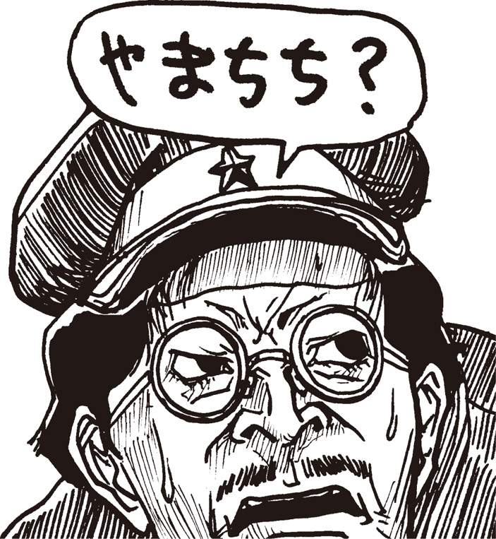
謎の男齋藤の
野望メモ
計算機通信網にてのいざこざは絶えることを知らぬ。増してこれをおもしろがる野次馬たちは、議論から論争へ発展するやりとりを刻々と追跡し、ある時は加速させしものなり。
野次馬の中には仲裁役もある。例えば、「えー、〈うさちゃん〉さんのＡであるという意見に対して〈モコモコ〉さんはＢという反論をしているわけですが、やはりこういう時勢、Ｃという考え方を抜きにしては話にならないのでは......」などと、いわゆる 〝論点のまとめ〟 なる文章を上方転送し、新たなる論点を加えるばかりか本題がいよいよ混沌混乱支離滅裂となり、話の終焉はすっかり遠のくという仕組み。最初の話とははるか離れた話題・論点となれば、結論など出ようわけもなし。今回の〈へっぽこ〉通信網にての事件も、これと同様の展開。手前勝手、慇懃無礼、禁句、捨て台詞などなど、意志伝達において不都合なる状況・表現が各所に見え隠れする所存。各利用者が自己制御すれば収まる喧嘩も、匿名性の強い場所にあってはそうもいき申さぬ。これも仮想現実空間ならではの特殊な事態か？
第32回
幻のハッカー、その名も〈やまちち〉!!
荒廃
余は齋藤に問うた。
〈やまちち〉？ 妙なハンドルだのう 」
「ハンドルの由来はよく知りませぬが、通信歴の長い人間なら一度は耳にしたことがあるのではないかと」
「で、その〈やまちち〉が、会員数90万人を誇ったという〈ＰＣサーブ〉を倒産させたというのか？」
「さて、それはどうですかな。倒産の原因といいますのはいろいろなトラブルが重なった結果でして......。いくら悪質なネットワーカーとはいえ、一人でそんな真似ができるとは考えにくいですなあ」
余は重ねて問うた。
「いろいろなトラブル？」
「もともと〈ＰＣサーブ〉というネットは会員数が多いこともあって、以前から会員相互の論争や、喧嘩が絶えませんでした。ところがある時期を境にこれが異常に多くなり申して、あちこちの会議室で訴訟騒ぎが頻発するようになり、ネット全体が荒廃していったのでございます。結果、会員数の激減を招き申した」
「くだらんのう。ネットの喧嘩とはいえ、要するに口喧嘩ではないか。そんなもので裁判を起こすのか」
「口喧嘩と言いましても、メールのやりとりだけならともかく、ほかの会員も読む公の会議室ですからな。そこで相手のプライバシーを侵害したり中傷を繰り返したりすれば、立派な名誉棄損になるわけでして。こういう口喧嘩の中には、〈やまちち〉によると思われる幽霊メールがきっかけになったものもあったようです」
「つまりその〈やまちち〉とやらが、誰かのＩＤを使って第三者に嫌がらせのメールを送り、喧嘩の火種を作るというわけだな」
「御意。ただ、数があまりに多かったので、常識で考えれば〈やまちち〉一人の仕業とはとても。〈ＰＣサーブ〉にはおよそ１５００ほどの分野別会議室や会員制会議室がありましたが、ひどい時にはそのうち９００くらいの部屋で部屋全体を巻き込んでの大喧嘩が発生しとりました。うち訴訟に発展したのが３分の１......。尋常な数ではありませぬ」
「喜ぶのは弁護士ばかりか」
「いや弁護士だって喜びませぬ。何しろ何メガにも及ぶログをチェックしなければなりませんし、発言が削除されていた場合、ログを保存している人から借り受けねばなりませぬ。それに、ログというのは閣下もご承知の通り捏造が容易ですので、その証拠能力の吟味に莫大な手間がかかります。まあ、割が合う仕事ではないでしょうなあ」
「それだけの数のトラブルの原因を〈やまちち〉一人に負わせるというのは、確かに無理があるだろうな。しかし齋藤、その〈やまちち〉とやらが個人ではなく、一種の愉快犯グループという線は考えられんのか」
「その説を唱える人もいます。しかしいずれにしましでも〈やまちち〉の責任を法的に追及するのは困難でしょうな。正体が分かりませんし」
デタラメ
「ほかにもトラブルがあったのか？」
「そうですな。たいていのネットには会員相互の〝売ります買います〟【★86】的なコーナーがあるでしょう。〈ＰＣサーブ〉にも〝青空市場〟なる名物コーナーがありましたが、ここでも金銭授受のトラブルが大量に発生して、ついに閉鎖に追い込まれたということがあります」
「どんな詐欺だったのだ」
「いや、詐欺というよりも。何と申しますかな、悪質な悪戯としか言いようがないのですが、例えばＡさんがＢさんから中古のハードディスクを購入したとしますでしょう、で、両者が遠隔地に住んでいる場合は手渡しとはいきませんから、当然商品は郵送で、代金は銀行振込というのが普通ですな。ところが電子メールでやりとりしたＡさんの住所やＢさんの振込先が、デタラメだったらどうなります？」
「そりゃトラブルだろうな」
「実際にそんな事件が頻発したのです。詐欺の疑いもあるので警察も動きましたが、捜査で判明した銀行の振込先というのが実は事業に失敗した大物タレントの個人口座だったり、国会議員の隠し口座だったりしたから騒ぎが大きくなり申した。もちろん振り込まれた方は全く寝耳に水の出来事だったそうですが、この結果脱税がばれたタレントや、汚職がばれて辞職に追い込まれた議員もおります」
「何だ、結果的に世の中のためになったのではないか！」
「とはいえ、ＡさんＢさんにとってはたまったものではあり申さぬ。要するに、悪質なハッカーが二人のＩＤをハックして、巧妙にメールを書き換えたのでしょうな」
「それも〈やまちち〉の仕業か？」
「分かりませぬ。ただ、そうではないかと噂する人もいます」
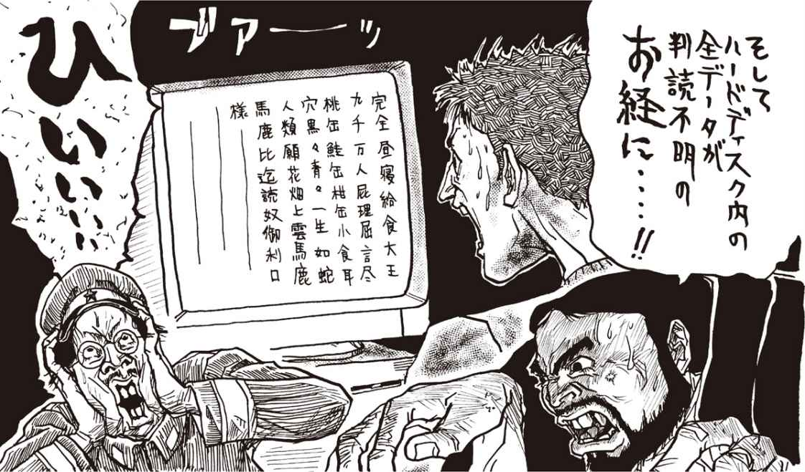
般若心経
齋藤は、冷蔵庫から取り出したミネラル麦茶を一気飲みすると、なおも話を続けた。
「しかし、〈ＰＣサーブ〉が倒産した原因は、それだけではございませぬ。もっととんでもないことがあったのでございます」
「勿体つけずに申せ。何があったのだ」
「ウイルスでございます。物凄く悪質なコンピューターウイルスが、〈ＰＣサーブ〉が提供していた人気フリーウェアソフトの大部分に感染しておりました。これを使いますと、ユーザーのモニターには、まず一つ目で一本足の怪物が現われまして、こいつが般若心経を唱え始めます。唱えるといっても、文字が一字一字画面に表示されるのですが」
「で、どうなるのだ」
「１０８字すべてを唱え終わったところで、ハードディスク内の全データが判読不明のお経になってしまうという、それはそれは恐ろしいもので。しかもこれには通常のワクチンでは全く歯が立ち申さぬ」
「聞いてるだけで鳥肌が立つのう」
「ところがさらに驚いたのは、何と〈ＰＣサーブ〉のホストプログラムにも感染していたのです！ 気づいた時にはもはや手遅れでした。２年前の大晦日、ちょうど除夜の鐘とともに、アクセス中の全国の会員のモニターにこいつが現われまして、あれよあれよと思う間もなく全会議室の全データがお経になってしまいました！ ......これが決定打となって、〈ＰＣサーブ〉は倒産したのです」
余はゴクリと唾を飲み込んで、齋藤に言った。
「その、ウイルスとか申すものも、〈やまちち〉の仕業なのか？」
「何度も申しますように、確たる証拠は何もございませぬ。あくまでネットワーカーの間で流布している噂、伝説に過ぎませぬ。〈やまちち〉が潰したと噂されたのは、何も〈ＰＣサーブ〉だけではありませぬが、どのネットの責任者も〝うちに〈やまちち〉なるハンドルの人物はいない〟と明言しております。まあ、ネス湖のネッシーみたいなものですな」
「しかし目撃者はいるのだろう？」
「仰せの通り、目撃者はたくさんおります。例えば深夜とか早朝にＷＨＯコマンドやオンラインコマンド【★87】で、〈やまちち〉がアクセスしているのを発見した人物は相当いるようです。こいつが出現したネットは、必ず閉鎖に追い込まれると言われとります」
再び〈くまぴょん〉が？
「ふーむ」
余は齋藤からミネラル麦茶を奪い取り、ひと口飲んでから言った。
「おもしろいな。で齋藤、今回の〈へっぽこネット〉の一件だが、貴様はこれが〈やまちち〉の仕業だと思うか？」
「分かりませぬ。ただ、その可能性は否定できませぬ。まあそれが〈やまちち〉でないにせよ、極めて悪質なハッカーが、このネットに侵入した可能性はありますな」
「だいたい、そこまで有名になってしまっては、同じハンドルを今でも使っているとは限らんじゃないか」
「それはその通りで。その後〈やまちち〉が現われたと言われたネットは２、３あり申すが、どのネットも噂が立った瞬間にホストを停止して、入念にプログラムのチェックを行って事無きを得ております。だから、もし〈やまちち〉が現在もハック行為を繰り返しているのだとすれば、全然違うハンドルを使っているでしょうなあ」
「よほどの馬鹿でなければな。ところで齋藤、〈うさちゃん１号〉と〈原始人モコモコ〉の痴話喧嘩は、その後どうなっておるかな」
余は〈へっぽこネット〉に再アクセスを試みた。何とか繋がったが、表示速度が異常に遅い。もはや早朝に近い時間帯だというのに、相変わらず回線が混んでいるようだ。
「重いなあ」
余はＷＨＯコマンドを入力し、回線状況を確かめた。40回線が全部ふさがっている。これでは重いはずだ。その時、齋藤が大声を上げた。
「かか閣下こ、これを！」
齋藤が驚くのも無理なかった。何と、またしても〈くまぴょん〉がアクセスしていたのだ！
謎の男齋藤の
野望メモ
通信網の愉快なることこれすなわち匿名性なり。通信網の不愉快なることこれすなわち匿名性なり。匿名性は諸刃の剣なり。記者の名前が分からぬことが、突飛な記事や開放的な記事の原動力となり、そこから斬新なるおもしろさが生まれ申す。
しかし通信網ならではの不快なる問題の元凶もまた匿名性にあり申す。身分証明書を翳して犯罪を犯す者はないように、本名が明かされぬ保証を拠り所にした悪戯が頻発するのが通信網の弱さ。悪しき電子郵便、誹謗中傷差別の記事、果ては性的嫌がらせまで、通信網の面白さを生む匿名性がまた、通信網の不愉快なる面を生む。匿名性を破壊せんとするなら、もはや通信網独特のおもしろ味も崩壊しよう。複雑な問題なり。しかし真の問題は使用者の心構えなり道徳なり態度なり知性なり。匿名をよいことに暴れる者はもはや電算機通信網の癌なり糞なり馬鹿者なり痴れ者なりたわけなり。匿名性を残したままに通信網文化の抱えし問題を解決するものは果たして何か？ それがし、麦酒を飲みつつ毎晩考えるが、その答、未だ見えず。
第33回
〈へっぽこ〉に再び〈ニセくまぴょん〉!?
再ハック
「く、〈くまぴょん〉!?」
いったいこれはどうしたことだろう。〈ニセくまぴょん〉は、確かＩＤを削除されているはず。それがどうして、堂々と再アクセスしているのだ？
「齋藤、これは......？」
「まるで狐につままれているかのようでござる。ＨＥＰ１９９９......。ＩＤも元のままですな。信じられないことですが、再ハックに成功したとしか考えられませぬ」
「だって、ＩＤ削除はつい１週間前のことではないか。いくら間抜けなシスオペでも、こんな短期間にみすみす再ハックされるとは......」
「当然シスオペパスワードは変えていましょうし、それがしにも見当がつきませぬ。何か別の方法があるのでしょうが。......どうやらこの〈ニセくまぴょん〉、想像以上にとんでもない奴でござるぞ！」
「ニセモノめ、どこを覗いているのかな......」
「現在位置を確かめてみましょう」
齋藤はさっそくプロンプトに向かいＷＨＥＲＥコマンド【★88】を打ち込んだ。
■ログインしているユーザーの現在位置です
HEP1264 ちけけ湯
＊＊; KATOR 談話室カトレアにいます＊＊
HEP0895 原始人モコモコ
＊＊; KATOR 談話室カトレアにいます＊＊
HEP1022 馬鹿王
＊＊; KATOR 談話室カトレアにいます＊＊
HEP3566 煽情の狼
＊＊; KATOR 談話室カトレアにいます＊＊
HEP4111 ♂＆♀
＊＊; KATOR 談話室カトレアにしミます＊＊
HEP1655 うさちゃん１号
＊＊; KATOR 談話室カトレアにいます＊＊
HEP2988 夕焼け級長
＊＊; KATOR 談話室カトレアにいます＊＊
HEP4126 たけぴょん
＊＊; TOP トップメニューにいます＊＊
HEP6969 素敵な奥さん
＊＊; KATOR 談話室カトレアにいます＊＊
HEP8751 イヤーンＨの助
＊＊; KATOR 談話室カトレアにいます＊＊
HEP4242 しねしね団
＊＊; KATOR 談話室カトレアにいます＊＊
HEP1999 くまぴょん
＊＊; LIBR図書室にいます＊＊
挨拶
「ほう、図書室にいるのか」
図書室とは、〈へっぽこネット〉の会議室の過去のログを圧縮して収納してある資料室のことだ。
「恐らく、ログ記録をダウンロードしているのでしょうな」
「ほかの連中は気づいてないのかな」
「ちょうど〈モコモコ〉と〈うさちゃん〉の大喧嘩の最中でござろう、みんなそちらに気をとられているのではないですかな」
「なるほど。しかし大胆な奴だな」
〈ニセくまぴょん〉の奴、何のために過去のログを引き出しているのだろう。どうせ良からぬことを考えているのだろうが。まあ、いいわ。画面を見ながら、余はふと悪戯心を起こした。
「おい齋藤。せっかくだから電報でも打ってやろうか」
「ひ。何をお考えで」
「本物の〈くまぴょん〉様が、ニセモノ閣下に挨拶してやろうというんだ。ちょっと席替われ」
齋藤が席を立った。余はどっかと腰を下ろすと、ニセモノ宛てに電報を打った。
〝何見てんの。精が出るなあ、ニセモノ殿〟
..................。
しばらく待ったが、返事が来ない。いきなり呼びかけられて泡を喰っとるのだろうか。
ＷＨＯしてみた。案の定、〈ニセくまぴょん〉はオンライン上から消えていた。
「逃げおったか」
「そりゃ、いきなり電報で〝ニセモノ〟などと呼ばれましては。何しろみんなすっかりあいつを本物だと勘違いしとりましたからなあ」
「まあ、きゃつの再アクセスの目的はじき分かるじゃろう。とりあえずは......〈うさちゃん〉！ 〈うさちゃん〉と〈モコモコ〉のその後の展開だが」
「カトレアに行ってみますか」
黙示録
「うは」
「おわ」
「どへえ！」
「これは......」
談話室カトレアは、もはや黙示録的様相を呈していた。プラッシーのビンの底に溜まったカスをタバスコで煮詰めて一気呑みしてから限界まで我慢したあと胃液とともに新橋の駅の痰壷にぶちまけたような最低最悪の言語が、そこには並んでいた。まさに地獄。地獄の黙示録だ。
（KATOR）「談話室かとれあ」94/**/** 04:20:12
FROM HEP2988 夕焼け級長
#2539 題名：〈モコモコ〉氏に警告する！
君の愚劣かつ捏造行為に満ちた書き込みは〈うさちゃん１号〉氏の人絡を傷つけるばかりかネットの品位を落としめる人間として最低の行為である。〈へっぽこネット〉のサブシスとして最後の警告をする。即刻書き込みを自己削除し、〈うさちゃん１号〉氏及びネットのみんなに謝罪したまえ。さもなくば明朝シスオペと協議の上、君のＩＤを抹消する。君が謝罪しない場合、もしくは謝罪が十分でない場合は、名誉毀損による法的措置も検討することになるだろう。
正直言って君があんな書き込みをするとは未だに信じられない。これは友人としての忠告だが、目を覚ませ！ 今ならまだ間に合う。
〈夕焼け級長〉
（KATOR）「談話室かとれあ」94/**/** 04:31:52
FROM HEP0895 原始人モコモコ
#2541 題名：そりゃどーも。
さすがは〈級長〉さん。毎度品行方正なレスですこと。もっともあんたの脳味噌と下半身がその言葉ほど品行方正だったらの話だけど。
で話は変わるが。ほー。そーだったの。へー。やっぱりね。前から薄々感づいてたけど、やっぱお宅らデキてたわけね。＞〈うさちゃん〉＆〈級長〉
へーそーなの。いや、別にお宅らの勝手だから何とも思わんけどね。バニーコールガールと馬鹿大将がくつついたってさ。下等生物同士の話だから関係ないわけで。でも〈うさちゃん〉さんよ、あんたのラバさんはおいらにエロメールするウスラ下司野郎だぜ。それもてめえの麗しのヒステリー女のきったねえパンツ写真をよ。これは天地神明に誓って事実だから怒るなら愛しのウスラ馬鹿大将に怒んなさいね。ほんと、てめえで勝手に馬鹿女のブルセラ売春写真送っときながらおいらの捏造だなんてよーゆーわ。
いいこと教えてあげるよ。まー恋は何とやらで品行方正の〈級長〉殿下はとんとお気づき遊ばされてないよーだが、人を童貞呼ばわりするしか能のない語彙の貧弱な〈うさちゃん１号〉さんはあんただけじゃなくてＨＥＰ４２４２やＨＥＰ３５６６ともデキてるぜ。１号じゃなくて２号さんだな（笑）。いや、この調子だとほかでもやってっから〈うさちゃん28号〉とでもハンドル変えたらどうかな。
（KATOR）「談話室かとれあ」94/**/** 04:41:39
FROM HEP1655 うさちゃん１号
#2542 題名：いいこと教えてあげる＞〈モコモコ〉
童貞の妄想もここまでくると犯罪ね。でもその性格だと一生童貞のまま死ぬしかないわね（^□^）。でもほっとくとジジイになる前に必ず性犯罪起こすわね。だから手遅れになる前に自殺してちょうだい。『完全自殺マニュアル』あげるから、好きな方法で死んでね（^□^）。でも楽な死に方しちゃ駄目よ。あ、そうだわ。これお父さんから聞いた話なんだけど、昔、井の頭動物園の象のはな子を犯そうとして踏み潰された有名な獣姦マニアがいたんですって！ その方法で死んてちょうだい。うまくいけば、童貞喪失してから死ね るかもね。満足できる死に方でしょ（^□^）。じゃ、永久にバイバ～イ（^□^）＼。
「う......うおうッ！」
齋藤が奇声を発してハレルヤ１号の電源を切った。
「何をする？」
「もう、十分でござる！」
齋藤は肩でぜいぜいと息をしながら、床にへたりこんだ。
余も疲労困憊していた。ひとまず休んで、朝になったら結果を眺めるとしよう。様子から見て、モコモコのＩＤ削除は間違いないだろうが。
翌朝......。結局ろくに眠れず、胃に鉛を呑んだような不愉快な身体をひきずって布団から起き出した余は、重い足取りでハレルヤの前に座った。やはり、その後の経過が知りたい。
「おや？ メールが来てるぞ」
それは〈夕焼け級長〉からのメールだった。
謎の男齋藤の
野望メモ
通信網にての相互理解こそ難しさの極みなり。もとより通信網は文字情報による情報交換。文章による論理的なるやりとりは、時には有意義にて便利なれど、また時には厄介であり誤解を招きやすいもの。我ら一般の会話では、表情や身振り手振りあるいは言葉の抑揚たる表現方法があれど、通信網でのやりとりでは文章の組み立てのみの表現。これを厳密に組み立て表現とすれば、あやふやさのない情報交換となり得よう。されど現実には、厳密な文章の組み立ては至難であり、また、曖昧な文章表現にも捨てがたい味があり申す。ゆえ、情報交換時に食い違い勘違いが生じ、思わぬトラブルへと発展するもの。よくあるものとし、会ってみたら全然違う感じの人、文は上手いが口は下手、暗い書き込みばかりする明るい 人などなど、甚だしい食い違いは日常茶飯事銭形平次。む、久し振りに駄洒落を書き申したが、見事はずし申した。
このように、受けると思い書き込んだ事柄も、相手によっては不快を感じる場合さえあり申す。使用者各氏、重々注意されたし。
第34回
パスワードはこまめに変えよう！
（MAIL）「電子メール」94/**/** 07:15:01
FROM HEP2988 夕焼け級長
題名：重大な話があります＞ＡＬＬ
約１週間前、当〈へっぽこネット〉に例の〈くまぴょん〉なる不逞な輩が出現し度重なるＩＤ削除措置にも関わらず、再ハックを繰り返していることはみなさんもご存知のことと思います。それに伴い、出した覚えのない電子メールが第三者に届いたり、メールの内容が途中何者かの手で改竄されるといった、起きてはならない現象が頻発しています。
これらの現象がすべて〈くまぴょん〉の仕業であるという証拠は何もありませんが、事は彼が出現したあとに起こったことであり、状況からして彼に対し重大な疑惑を抱かざるを得ません。
シスオペの中野氏は最近夜も寝られぬほど憔悴し切っており、ノイローゼ気味で、昨晩階段から足を滑らせ全治１ヵ月の重傷を負い入院しました。従って当分の間、不肖私がシスオペ代行としてこの事態に対応することになります。もちろん中野氏の了解も取ってあります。
さて、この緊急事態に対処するため、信頼のおけるベテランユーザーの皆様とご相談いたしたく、緊急会議室とチャットルームを用意しました。これは一般メニューには表示されませんのでGO; URAとコマンドを打ち込んで入室してください。当分の間、連日午前０時に定例チャットを行います。
※なお、念のためパスワードはこまめに変えることをお願いします。
秘密会議
「ふーん......」
余は、〈夕焼け級長〉のメールにひと通り目を通し、齋藤に言った。
「やけにハッスルしてるな〈級長〉。しかし余をベテランユーザーとして認めるとは感心じゃ」
だが齋藤の表情は不審げだ。
「何か変ですな。閣下は〈たけぴょん〉として入会されてからも、せいぜい半年のキャリアでござろう。しかも途中だいぶブランクがあり申す。どうして〈級長〉は、そんな閣下を秘密会議のメンバーに選んだのか」
「知るか。とにかくせっかくの好意だ。さっそく今晩、秘密ルームとやらに行ってみることにしよう」
「それがし、どうも嫌な予感が......」
「貴様の〝嫌な予感〟はもう聞き飽きたわい！」
新しいパスワード
午前０時になった。余は『筑紫哲也のニュース23』の途中でテレビを切り、ハレルヤ１号の前に座った。さっそく通信ソフトを起動させ、〈へっぽこネット〉にアクセスする。
「うーむ。重いなあ」
ここのところの喧嘩騒ぎでネットは満員盛況だ。回線がふさがると、必然的に表示速度は遅くなる。
それにしても......。誰かが不穏な書き込みをしたり、喧嘩が始まるとみんな口々に〝迷惑だ〟と叫ぶが、本当にそうなのだろうか。実際、他人の喧嘩を眺めるほどおもしろいものはない。これだけ見物人が多いということは、結構みんなも楽しんでいるのではないか？
その時、齋藤が台所から『ペヤングソース焼きそば』を二つ持ってやってきた。
「夜食ができましたぞ、閣下」
「ご苦労」
焼きそばをかきまぜながらログインした余は、さっそくＧＯコマンドで裏会議室に飛ぼうとしたが、齋藤が慌てて押しとどめた。
「お待ちくだされ。会議室に直行する前に、パスワードを変更なさってはいかがで？」
「心配症だのう」
「いや、最近の〈へっぽこ〉の不穏な空気から考えて、万一ということもございます。パスワードをこまめに変えれば変えるほど、ハックされる可能性も低くなり申す」
「分かったわい」
余はオプションメニューを呼び出すと、パスワードの変更手続きに入った。
「えーと〝現在のパスワードを入力してください〟か。よしきた。Ｇ・Ｅ・Ｎ・Ｏ・Ｃ・Ｉ・Ｄ・Ｅ......」
「ほほう。閣下のパスワードはジェノサイド（皆殺し）でござったか」
「馬鹿もの。覗く奴があるか！」
齋藤は慌てて後ろを向いた。
「失礼つかまつった！」
「いくら齋藤とはいえ、こればかりはプライバシーの侵害だぞ！」
「二度といたしませぬ！」
「分かればよい。んで、んーと〝新しいパスワードを入れてください〟か。えーと、んーと、どうするかな。おお、そうだ。Ｈ......。オイ齋藤、〝ホロコースト〟ってどんなスペルだっけ？」
「ちんぴょろほしぇ～！」
裏チャット
パスワードを変更し終えると、余はさっそく裏ボードに飛んだ。〈級長〉のメール通り、そこは裏会議室と裏チャットルームに分かれていた。
裏チャットルームに〈夕焼け級長〉がいる。ほかのメンバーはまだ集まってないようだ。
＊＊裏チャットルームに入室しました＊＊
たけぴょん：こんちわ。〈級長〉さん（笑）。
夕焼け級長：こんちわ。たけ......た、〈たけぴょん〉？？？
たけぴょん：どしたの。
夕焼け級長：どうして君が......僕メール送ったっけ？
たけぴょん：やだなあ。読んだから来たんじゃないの。
夕焼け級長：そ、そーか。ここんとこの騒ぎですっかり寝不足だったからなあ......何人もに送ってるうちに......うっかりしたなあ。
たけぴょん：何ゴチャゴチャゆーとるのですか。
夕焼け級長：いや、こっちの話。とにかく〈たけぴょん〉君、来たものは仕方がない。ここでの話の内容はくれぐれも内密に願うよ。
たけぴょん：何をおっしゃいます。〈級長〉様のヒ・ミ・ツを私がバラすわけな・い・じゃ・ありませんかあ（笑）。
夕焼け級長：とにかく、その......
と、〈級長〉が何かを書きかけた時、ほかのメンバーが次々にやってきた。〈煽情の狼〉に〈素敵な奥さん〉、〈イヤーンＨの助〉といった知った名前もいるが、全然知らない奴もいる。
「この〈ＶＥＮＵＳ〉ってのは誰だ」
「ああ、閣下は談話室カトレアくらいしか覗かれないのでご存知ないかもしれませんが、哲学会議室の才媛で、なかなかの論客でござる」
「〈イヤーンＨの助〉というのはよくＷＨＯコマンドで見る名だのう」
「ああ、コンピューター会議室のシグオペ【★89】でござる。ふざけたハンドルでござるが、技術的知識は恐らく〈へっぽこ〉一かと」
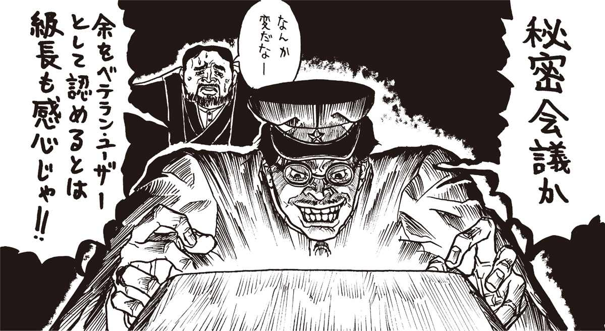
夕焼け級長：みんな揃ったみたいだね。始めようか。
煽情の狼：さっそくだが、例の〈うさちゃん１号〉と〈モコモコ〉のその後は？
夕焼け級長：さっき〈うさちゃん〉に電話したんだけどショックで寝込んでる。〈モコモコ〉は......残念だが、先ほどＩＤ停止処分にした。
ＶＥＮＵＳ：当然だわ。
夕焼け級長：確かに〈モコモコ〉の書き込みは常軌を逸していたが......しかし、いちがいに責められない事情もある。
ＶＥＮＵＳ：何言ってるの！ あれはどこから見ても最低の〝男社会の論理〟そのものだったわ!!
煽情の狼：まあまあ＞〈ヴィーナス〉。事情とはやはり〈くまぴょん〉？＞〈級長〉
夕焼け級長：どんなにＩＤを削除しても、気がつくと再ハックしてる。
ＶＥＮＵＳ：気味悪い。シスオペＩＤの守りは万全だったんでしょ？＞〈級長〉
夕焼け級長：もちろん。ここ数日、中野さんは１時間ごとにパスワードを変更していたくらいだ。おかげでノイローゼになって階段から......
素敵な奥さん：こんなことってありゅのかちら...... （;□;）ウエーン。
イヤーンＨの助：ハックの方法は、いくらでもありますね。どういう手段を使ったかは、まだ何とも言えないけど。
煽情の狼：しかしな......。
夕焼け級長：何？＞〈煽情の狼〉
煽情の狼：ここにいる人は、みんなネットのベテランだから気がついておるだろう。２年前の、〈ＰＣサーブ〉事件の、ほれ。あいつ......。
たけぴょん：あいつって、〈やまちち〉って人？
夕焼け級長：......〈たけぴょん〉君......きみ.........？
謎の男齋藤の
野望メモ
執拗的使用者に個人情報を盗まれぬには、通過文字列を度々変更するに限る。通過文字列を変えた回数に比例し、個人情報の安全は高まるもの。また、重要なる情報を通信網上に残したり、あるいはこれを電子郵便でやりとりするのも危険なる行為。一時的に通信網にて重要情報を入力する必然が生じた場合、必要最小限にとどめ余分な情報を削除するが賢明。さらに、常に通信網の動作に敏感であることも必須。奇妙な動きや突然の動作停止などの多くは、分配役計算機あるいは算符の誤動作なることがほとんどではあるものの、万が一の仕掛け、すなわち執拗的使用者による罠である可能性がなきにしもあら ず。
少々回りくどい言い方で申し訳ござらんが、この実態については次回、閣下が明らかにされよう。ともあれ、執拗的使用者は頓知から技術的罠までとことん利用するもの。通過文字列を名字や名前とすることや、机上に通過文字列を書きとめた付箋を貼るなぞもってのほか。意外な人物が意外にも執拗的使用者であったりするゆえ、使用者各位、重々注意されたし。
第35回
嗚呼！ とんでもないワクチンの正体！
たけぴょん：どしたの？＞〈級長〉
煽情の狼：〈たけぴょん〉君がどうかしたのかね＞〈級長〉
夕焼け級長：......いや。何でもない。気のせいだったようだ。
たけぴょん：そんなこと言われると気になるなあ＞〈級長〉
夕焼け級長：ほんと、何でもないんだ。ここんとこ寝不足でね。
ＶＥＮＵＳ：しっかりしてよ！
イヤーンＨの助：寝不足は分かるけど、〈級長〉らしくもない。今や君はシスオペ代行なんだぜ。
夕焼け級長：すまん＞ＡＬＬ。いや、なにね、馬鹿馬鹿しい話だけど、〈たけぴょん〉君と〈くまぴょん〉が、急に同一人物のように思えてさ（笑）。
たけぴょん：あはははははははははは......。
素敵な奥さん：きゃいーん、やめてくだしゃーい（^_^;）。
煽情の狼：ははははは。いくらハンドルが似てるったって、それは。
たけぴょん：す、すいませんねえ。偶然とはいえ、まぎらわしくて......。
夕焼け級長：どうかしてるな（笑）。......話を戻そう。えーと、何の話してたっけ。
イヤーンＨの助：〈ＰＣサーブ〉の話。しっかりしてよ＞級長
夕焼け級長：そうそう、〈ＰＣサーブ〉事件の時、噂になったあいつの話だったね。それで......
マリアナ海溝
「危ないところだった！」
余はディスプレイに向かって叫んだ。
「余の正体をあやうく見破りかけるとは......。恐るべし〈級長〉！」
呆れ顔で齋藤が言った。
「いや、むしろそれがしには、これまで誰も疑問に思わぬことの方が不思議でござった。だっていくら何でも〈くまぴょん〉から〈たけぴょん〉でござろう？ いやしかし、これはこれで盲点だったかもしれませぬな。普通ＩＤが削除されたような問題ユーザーが......」
「問題ユーザー？」
「あ。いえ、その、あくまでも連中にとっては問題だったというだけで、ええと、話を戻しますが、要するにＩＤ削除された人物が密かにネットに復帰する場合、全く違うハンドルにするのが普通ですから。しかしそれでも、文章の調子などでいつかはばれるものでござる。しかるに閣下の場合、あまりにも露骨に似たハンドルでござるから、かえって偶然と思われ、怪しまれなかったのではないかと......」
「ふふふ。なかなかの読みだの齋藤。余の考えの深さが分かったか！」
齋藤が大きく頷いた。
「誠に閣下の思慮深さは偶然とはいえマリアナ海構よりも深いですな！ それはそうとチャットに復帰しなくてよろしいので？」
「おお、そうであった！」
余は慌ててディスプレイに顔を向けた。うっかりした！ すでに裏会議は佳境に入らんとしていた。
夕焼け級長：やはりそう思う？＞〈煽情の狼〉
煽情の狼：断言はできない。だが幽霊メールの手口といい、似過ぎている。
たけぴょん：すすすいません。ちょっとトイレ行ってて（^_^;）......えーと、何の話になってんすか。
ＶＥＮＵＳ：〈くまぴょん〉が、〈やまちち〉に似てるって話！
たけぴょん：〈やまちち〉。噂は聞いてますが、何せネット歴が浅いもので。みなさんは〈ＰＣサーブ〉の会員だったんすか？
夕焼け級長：ここにいるのはみんな入ってた。ただ、僕は騒ぎの最中、外国に滞在してたから直接は知らない。帰国してアクセスしようと思ったら、ネット自体が消滅していたんだ。
煽情の狼：わしは俳句の部屋のボードリーダー【★90】だったんだが、奴のウイルスのおかげで５年分の作品がすべて消滅してしまった！
たけぴょん：でもバックアップは取ってたんでしょう。
煽情の狼：思い出すだにいまいましい！ 〈ＰＣサーブ〉のホストマシンも、我か家のハードディスクも感染しておったのだ！ ああ、あんなプログラムさえ使わなければ......。
たけぴょん：あんなプログラム？
イヤーンＨの助：〝惨事〟の半年くらい前だったかな。〈ＰＣサーブ〉に、物凄く優秀なワクチンがフリーウェア【★91】としてアップされたんです。僕も使ってみたけど、ちまたに出回っているウイルスは１００パーセント検出できた。それで僕、試しに全然違うパターンの無害なウイルスを作ってみたんです。変な話だけど、既製のどのウイルスにも似ていない自信作だった。ところがそれもちゃんとチェックする。つまりあのワクチンの作者は、将来出回るであろうウイルスまで予想して、プログラムを組んでいたんです。脱帽しましたね。
たけぴょん：へー、じゃ、それを使えばよかったじゃないの。
夕焼け級長：〈たけぴょん〉君、それがね。
イヤーンＨの助：それほど優秀なワクチンですから、あっという間に評判になって、みんな使い始めた。ところが......。
夕焼け級長：そのワクチン自体がウイルスだったんだ！＞〈たけぴょん〉
ワクチンの作者
〈級長〉たちの話を総合すると、こういうことらしい。問題の〝ワクチン〟が出回る少し前に、ちょっとしたウイルス騒ぎがあった。
会員同士の電子メールによって、ある人気ソフトにウイルスが感染しているという噂が広まったのだ。しかもそれは既製のワクチンでは検出できないという。
噂は本当だった。
もっとも、ウイルス自体は起動画面で悪戯メッセージが出るだけの至って無害なものだったが、ウイルス自体がワクチンを逆検出するようプログラムされており、確かに既製のワクチンでは歯が立たなかったのだ。
そこにタイミングよく、問題のワクチンがネットにアップされたのである。多くの会員がこれに飛びついたことは言うまでもない。
「そのワクチンがもっと悪質なウイルスだったというわけか」
齋藤が頷いた。
「左様。それがしウイルス騒ぎの直前、たまたま別の原因でハードディスクがクラッシュしましてな。しばらくアクセスできませんで、結果的に難を逃れ申した」
「災い転じて福となすか」
「御意。問題のワクチンの作者というのが、ＩＤも氏名も住所もデタラメで、正体は分からずじまいでござった。不法に侵入したハッカーが、堂々とプログラムをアップしていたわけですな。このワクチンの作者名が〈やまちち〉。それで一連の騒ぎの犯人をこう呼ぶようになったというわけで」
「なるほど」
余は相槌を打つと、再び裏チャットルームのやりとりに目を這わせた。
夕焼け級長：このままじゃラチがあかない。何とか〈くまぴょん〉を逆探知【★92】することはできないの？＞〈Ｈの助〉
イヤーンＨの助：デジタル回線なら一発だけど、普通のアナログ回線だと難しいでしょうね【★93】。まあ、いずれにしても電話局の協力がないと。
ＶＥＮＵＳ：警察に訴えましょう！
夕焼け級長：物理的な被害でもない限り、警察の腰は重いよ＞〈ＶＥＮＵＳ〉
素敵な奥さん：あのお、あたちのいとこがあ、電話局の人なんですけどお。
夕焼け級長：へえ？ 何とか頼めないかなあ＞〈奥さん〉
煽情の狼：逆探知より、ハックの防止が先決だろう？＞〈級長〉
夕焼け級長：それはそうだ。とにかく当分の間、新規入会は受けつけないようにしよう。それから緊急メンテナンスを行って、徹底的にプログラムチェックだ。何か分かるかもしれないよ。
イヤーンＨの助：まかせてくれ。〈くまぴょん〉の再ハックに関して、ちょっと気になることがあってね。もしかすると※｝×÷△※■※〓◎◎●★＠§§＃♀■▼※......
「あれえ？」
いきなりの文字化けだ。
「はて。回線障害ですかな」
齋藤がディスプレイを覗き込むと同時に、ガチャッとモデムが音を立て、回線が切れた。

謎の男齋藤の
野望メモ
昨今、それがしの周囲では病原菌算符の感染騒ぎは聞き申さぬ。が、全国規模では計算機使用者の増加に伴い、病原菌算符問題も深刻化していると聞く。それがしも病原菌算符に貴重かつ重要な情報を消去されたりしたことがあり、その時はまっこと、腹が立った所存。一週間もかけて作成した図画情報が一瞬で消え去り申した。その時は計算機ごと燃えないごみの日に電柱のところへ出してしまおうかと思ったほどの落胆を味わい申した。もし病原菌算符作者を見つけ申したら、まずその悪しき指をへし折り、次にその目玉を抉り......まあとにかくただでは済まさぬ。
ところで、この病原菌算符への対策。これはやはりこまめな病原菌算符検査しかあり申さぬ。もちろん通信網より得た、あるいは友人知人より貰い受けた算符類を使用する前には必ず病原菌算符検査すべし。病原菌算符は決して自然発生せぬもの。必ず外部から侵入するものなり。すなわち入ってくる算符類を検査しておけば、まず被害を被ることはあり申さぬ。使用者諸氏、重々注意されたし。
第36回
最悪！ 今度は〈ニセたけぴょん〉？
再アクセス
「ん？ 回線が切れたぞ」
「やはり回線障害ですかな。最近の〈へっぽこ〉はやたらと混んでいましたからな。一つの回線にアクセスが殺到したからでございましょう」
時計を見たらもう夜中の２時だ。まったくネットワーカーという人種は、どうしてこうも宵っぱりなのか。
「とにかく再アクセスじゃ！」
余は再び通信ソフトを起動した。
「しかし、落とされるほど回線が混んでるとあっては、うまく繋がるかのう。......あれ？」
あっけなく回線は繋がった。
「繋がったではないか」
画面上にＩＤとパスワードを求める表示が出る。
「えーと、ＨＥＰ４１２６......」
ところがパスワードを入力する段になると、どうしたわけか、何度入れてもはじかれてしまう。
「ログインできないぞ！」
齋藤が大きな声で笑った。
「ははははは。落ち着きなされい」
「何がおかしい！」
「お忘れでございますか？ 閣下は先ほどパスワードを変更したばかりではございませんか」
「おお、そうであった！ ウッカリしたわい。変更前のパスワードを何度入れたところでログインできぬのは道理！」
「それがし後ろを向いておりますから、はよ新しいパスワードをお入れなされい」
「分かっとるわい。えーと、えーと、ジェノサイド......は前のやつだよな、えーと......おい齋藤、余の新しいパスワードって何だったっけ？」
「ほしぇ～～～～ッ！」
「んー、このあたりまで出かかってるんだが。Ｈ・Ｏ......。ああ、駄目だ、思い出せぬ！」
「ホロコーストでござりましょう。Ｈ・Ｏ・Ｌ・Ｏ・Ｃ・Ａ・Ｕ・Ｓ・Ｔ!!」
「おお、そうだった」
余は正しいパスワードを入力した。今度はちゃんとログインできた......はずなのだが。また、はじかれてしまった。
「どうしたことじゃ!?」
「スペルミスではござらぬか？ いったん回線をお切りなされ」
「切ったぞ」
「では、慌てずに、もう一度アクセスしなされ」
余は深呼吸を一つすると、通信ソフトを起動させた。
「よろしいですか。ＩＤとパスワードを、ゆっくりと、お入れなされ」
■■■■■■■■WELCOME!■■■■■■■■
ようこそ、へっぽこネットへ！
ＩＤを入れてください：ＨＥＰ４１２６
パスワードを入れてください：＊＊＊＊＊＊＊＊＊
★★★★★【２重ログイン！ 回線を切断します！】
ゾンビ
ガチャリ、と回線が切れた。
余と齋藤は、あんぐりと口を開けたまま、30秒ほどみじろぎもできなかった。余は齋藤に言った。
「どういうこと？」
「２重ログインということは、つまり同じＩＤとパスワードを持った人間が、同時にログインしているということでござりまする」
「それくらいは分かるわい！ つまり、なぜそういうことが起こるのかということを尋ねておる」
「さて......」
余は、何だかとてつもなく嫌な予感がした。
「まさか、余のＩＤがハックされたのではあるまいな？」
齋藤はしばし考えていたが、「それはありますまい。何しろついさっきパスワードを変えたばかりですからな。恐らくこれは〝ゾンビ〟と呼ばれる現象ではないかと」。
「ゾンビ？」
「アクセス途中で正規の手続きを踏まずに回線を強制切断したり、または回線障害によっていきなり落とされたような場合、ホストのコンピューターがそれを正しく認識せず、あたかも接続されたままのようになることがあります。つまり現実にはログアウトしておるのに、形式的にはログインしているかのようにホストがふるまうわけで、これを〝ゾンビになった〟と称します」
「ゾンビというより、ドッペルゲンガーみたいなものじゃの」
「御意。まあいずれにしましても、心配には及びますまい。あと５分もすれば......」
「５分？」
「御意。〈へっぽこネット〉のシステムは、確か、５分間何も入力がなければ自動的に回線が切れるようになっているはずでござるゆえ」
余は壁の時計をにらみ、５分待った。
「もういいかの」
「念のため、もう１分待たれては」
齋藤の言葉を聞いて、もう１分待ってから余はアクセスを開始した。モデムが低い音を立て、〈へっぽこネット〉のトップ画面が表示された。
「さて慎重に......Ｈ・Ｏ・Ｌ・Ｏ・Ｃ・Ａ......あわ。あわわわわわ！」
「やややや？」
何と、またしても〝２重ログイン〟の表示だ！
齋藤の顔面が蒼白になった。
「閣下......これは......ゾンビではござりませぬぞ！ 正真正銘の２重ログインでござる！」
「ということは、もしかして？」
齋藤はコクリと頷いた。
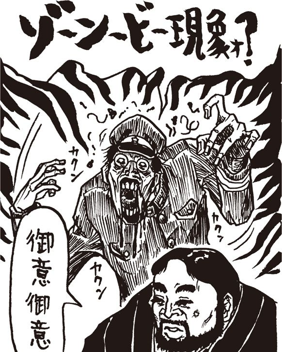
恐怖
余は、これまでの生涯においてこれほどの恐怖を味わったことはなかった。何しろ、パスワードを変更してわずか１、２時間のことなのだ。たったそれだけの間に、余のパスワードが盗まれたというのか？
「こやつがハッカーだ、とすると。よ、余のＩＤとハンドルを騙って、い、今、何をしてるのかな」
「先ほどまで、閣下は〈夕焼け級長〉たちとチャットをされておりましたな？」
「うむ。秘密ボードで裏会議をしていた真っ最中だった。貴様も見ていただろう？」
「御意」
「回線が切断したのは余だけだろうか？」
「分かりませぬ。しかし、大事な会議の途中でござったから、いずれにせよ〈級長〉たちはネットに復帰してチャットを続けておるのではないかと」
「それで、今、あそこはどうなっているのかな......」
「と、申しますと？」
「だ、だって余は復帰しようにも、２重ログインではねられたわけだろう。しかもゾンビではない。と、いうことは、何らかの意志を持った余のニセモノが、入れ替わりにアクセスしていることに、なるよな」
「うう、そうなりますな」
「そ、それで、ほんの一瞬の聞に余と入れ替わった余のニセモノが、何気ない顔で......」
万事窮す
余は連続してログインを試み続けた。しかし何度やっても２重ログインではねられる。不気味な先客はなおも居座り統けているようだ。
齋藤が言った。
「とりあえず様子を窺ういい方法がございます！ それがしのＩＤでアクセスすればよいのです！」
「あ、その手があったか！」
余は齋藤に席を譲った。齋藤が目にも止まらぬ速さでＩＤとパスワードを入力する。
「繋がり申した！」
「ＷＨＯコマンドだ、ＷＨＯ！」
たちまち、ログイン中のメンバーがずらずらと表示された。それを目で追った余と齋藤は、ほとんど同時に大声で叫んだ。
「いる！」
間違いない。そこには余と同じＩＤ、同じ〈たけぴょん〉と名乗る人物が、堂々と存在していた。すかさず齋藤がＷＨＥＲＥコマンドで現在位置を確認する。
最悪の予感が的中した。やはりこの〈ニセたけぴょん〉とは、〈級長〉たちと同じスタッフルームにいるではないか。ということは、やはり、何食わぬ顔でスタッフメンバーとチャットをしているに違いない！
「これでは手も足も出ませぬ。それがしのＩＤではスタッフルームには入れませぬ。シスオペの許可が必要でござる！」
「電報は打てないのか？」
「駄目でござる。全員、〝重要会議中につき電報機能ＯＦＦ〟になっております」
「万事窮すか！」
余は歯ぎしりして天を仰いだ。それにしても、こいつはいったい何者なのだ？
謎の男齋藤の
野望メモ
計算機通信網は人間社会の縮図のような存在なり。そこには悪しき者、愚かなる者、賢者、嘘つきなど、だいたいひと通り揃っておる所存。中でも興味深き人物は、通信網特有の存在、いわば有名人なり名物なり。例えば喧嘩沙汰には必ず加わっている者。ああ言えばこう言う、こう言えばそう言う、無限に喧嘩を続けるその気迫に一芸を見る思い。
加えて例えば賢き者。特定の計算機に関する情報なら答えられぬことはないほどの知識知性博学。拙者もそういった賢者の世話になったことがあり、心から感謝したいと思うと同時に、同じように通信網にて役立てばと、知る限りの情報を書き込んだのも昔。さらに例えば蛇の如し執拗さにて有名なる者。この者に関わったが最後と評判も立ち、やや恐れもするが、見ているだけならことのほか愉快。このほか、数々の名物使用者があり、今や伝説さえ残るような者もある。まさに計算機通信網は人間社会の縮図。そして今後、通信網使用者が増えたなら、通信網これすなわち人間社会となってゆくとも思える昨今なり。
第37回
嗚呼！ 悪いのはみんな〈たけぴょん〉！
殿様キングス
どうすることもできなかった。余のニセモノは、相変わらずネットに居座り続けている。
どういう方法かは知らんが、〝奴〟は一瞬のうちに余をネットから追い出し、余に成りすました上で、何食わぬ顔で〈夕焼け級長〉たちとチャットを続けているのだ！
考えるだけで、身の毛もよだつ光景であった。
手口からいって、奴が〈ニセくまぴょん〉であることに、ほぼ間違いはない。それだけならまだしも、今度は〈ニセたけぴょん〉になって、いったい何をしようというのか......。驚愕から恐怖の感情を経て、今度はだんだんと怒りが湧いてきた。
「馬鹿にしやがって！」
余はキーボードに拳を叩きつけた。齋藤が慌てて押しとどめる。
「落ち着かれませ、閣下！」
余は真っ赤に血走らせた眼球に涙すら滲ませ、歯軋りして言った。
「予定では未来の偉大なる支配者たる余を......キング・オブ・殿様キングスたる余をこのような目に合わせるとは。許せん！ 五体を八つ裂きにして杉の枝に吊るし、頭を割ってＣＰＵを４８６から２８６【★94】に交換してくれる！ それとも尻の穴に爆竹を詰めて内臓をぶちまけてやろうか！」
「相手はカエルではござらん！ とにかく閣下、ここは様子を見るしかありませぬぞ」
余は力なく椅子に腰掛けた。とたんに、最前あまりにも力いっぱい歯噛みしたためであろうか、２年前に入れた差し歯が口からこぼれ落ちた。
その時、怒りでヒキツケを起こしかけている余に代わってキーボードを操作していた齋藤が、深刻な表情で言った。
「閣下。もう１時間にもなり申すが、敵は動く気配がございませぬ」
「うう。ニセモノめ、いったい何をチャットしておるのか？」
スクランブル
齋藤は険しい顔で何度目かのＷＨＥＲＥコマンドを打ち込んでいたが、やおら「お？」と声を上げた。
「どうした」
「いや、これは......はて？」
齋藤が怪訝な顔で画面を指し示した。
「単なるアクセスメンバーのログイン表示ではないか。これがどうしたのだ」
「いや、それはそうなのですが、問題はこれでござる。〈たけぴょん〉のＩＤの部分をよくご覧くだされ」
「どれどれ。おや？」
なるほど、確かに〈ニセたけぴょん〉のＩＤの頭には、「※」という、見慣れない記号がついていた。さっきまではなかったマークだ。
「齋藤、これは何だ？」
「それがしも初めて見る記号でござる」
「ほかの奴らにはついてないよな」
「御意。......うーむ、これはもしかすると......」
「何だ」
「これはスクランブルの表示かもしれませぬ」
「スクランブル？」
「御意。つまり、チャットに割り込んできた邪魔者を排除する機能のことでござる。この場合、スクランブルをかけられた人間は、その場に書き込むことも、他人の発言を読むこともできなくなり申す」
余は手を打って言った。
「するとなにか？ 〈ニセたけぴょん〉の奴め、まんまと〈級長〉たちに追い出されたというわけか！」
「そういうことですかな。それがしの想像が正しければ......」
〈ニセたけぴょん〉は、しばらくその場でウロウロしていたようだが、やがてあきらめたのだろうか、ネットから姿を消した。
余は喝采を叫んだ。
「いやあ、愉快愉快。〈ニセたけぴょん〉め、まんまと〈級長〉たちにおん出されおったわ！」
「笑いごとではござらぬぞ、閣下！」
齋藤の顔には、深刻を通り越してもはや絶望の色が現われていた。
「よいですか、現時点で、あのニセモノがニセモノであることを知っているのは、本物の〈たけぴょん〉である閣下とそれがしのみ！」
「う。それはそうだが」
「ということはです。〈級長〉たちは、あくまでも奴を本物の〈たけぴょん〉と思い込んでいるはず。その〈たけぴょん〉がスクランブルをかけられたということは......」
ここに至って、余はハッキリと事情を呑み込んだ。そうか。何ということだ！
「つまり、余が排除されたということか!?」
「そういうことになり申す。しかも、チャット中にスクランブルをかけられるなど、よほどのことでござる。つまり、あのニセモノは、チャットしながら狂ったような罵詈雑言を書きつらねたに相違ござらん。そうしてわざとスクランブルをかけられた。責任をすべて閣下に押しつけて......」
「うわあああ！ やめてくれ！」
緊急メンテ
齋藤が口を開いた。
「とにかく奴は去り申した。今なら閣下のＩＤでアクセスできるはずでござる。ささ、早う再ログインして、パスワードを変更せねば！」
「おお、そうであったな！」
余は齋藤のＩＤをログアウトさせると、再び通信ソフトを起動させた。ところが、何回ＩＤとパスワードを入れてもログインができない！ 〝そのＩＤは登録されていません〟という表示が出るばかりだ。
「どうやら最悪の事態が起こりましたな」
「うぬ。〈級長〉め、勘違いして、余のＩＤ登録を抹消しおったか！」
「それだけ〈ニセたけぴょん〉の暴れぶりがひどかったのでござろう」
仕方がない。余は、もう一度、齋藤のＩＤでアクセスすることにした。ところが、今度はログイン画面で、次のような表示が出た。
＊＊＊＊＊【緊急メンテナンス中です】＊＊＊＊＊＊
■ただいま緊急メンテナンス中につき、どなたもロ■
■グインすることができません。申し訳ありません■
■が、＊月＊日午後１時以降に再度アクセスをお願■
■いします。SYSOP■
「緊急メンテだってえ？」
「うう。閣下のＩＤを抹消してから、即座にメンテナンス態勢に入ったのでござるな。この慌てぶり、よほど何かあったのでござろう」
いまはこれ以上、動きようがない。仕方がない、メンテ明けまで、黙って待つよりほかはなかった。
いきなりの電報
メンテが明けた。実際には２日ほどのことだったのだが、余にとっては永劫にも等しい時が流れたように思えた。
余は齋藤のＩＤでアクセスを開始した。余の横では齋藤が固唾を呑んで見守っている。
「繋がったぞ」
「とりあえず、インフォメーションをご覧なされ。恐らく、緊急メンテの説明があるのではないかと」
齋藤の言う通り、そこにはシスオペ代行である〈夕焼け級長〉のメッセージがアップされていた。
（INFO）お知らせ 94/**/** 11:25:04
FROM HEP2988 夕焼け級長
＃1256 【重要】全会員の皆様にとり急ぎご報告
＊日深夜、予告なしの緊急メンテナンスをとり行いまして、アクセス中の会員の皆様には大変なご迷惑をおかけしました。このことをまずお詫び申し上げます。しかしながら、当日のメンテはあまりにも緊急、かつ重大なものでした。詳しい説明は本日中にアップいたしますが、とりあえずは要点のみ。
ほかでもありません、最近当ネットを騒がせていた〈くまぴょん〉の正体が、ようやく判明しました。〈くまぴょん〉は、昨年当ネットを追放されて以末、手をこまねいていたのではなかったのです。彼は、追放直後に全く別のＩＤとハンドルで再入会し、何くわぬ顔でシスオペＩＤをハックする機会を窺っていたのです。
そうして彼はシスオペＩＤのハックに成功し、あるテクニックを用いて、一般会員のＩＤをも、今日までハックし続けていたのです。このことから最近、当ネットで騒がれていた〝幽霊メール〟事件も説明することが可能です。恐ろしいことです。しかしその恐ろしい、あってはならないことが、現実に起こったのです！ 今こそ私は声を大にして、〈くまぴょん〉の正体をお知らせすることができます！ 驚かないでお読みください。それは......
と、ここまで読んだ瞬間である。いきなり電報が割り込んできた。
その電報の送り主のハンドルを見て、余はあっと驚いた。
謎の男齋藤の
野望メモ
電子計算機通信網は一般的には特殊な媒体とされる半面、着々と一般用途的仕様を備えるものとなりつつあり申す。
例えば大手商用通信網など、昨今、世界的通信網と相互接続が流行り、あるいは通信販売、算符販売なども定着しておる所存。それがしなど、特に通信販売嗜好家であり、いくつかの大手商用通信網にて通信販売を利用し申す。遊戯算符や電子装置類など、秋葉原に出向き買い求めるより安価になる場合も多く、その便利さに毎夜の麦酒も美味にて候。特に遊戯算符を通信網にて買い求めた場合、衝動こみ上げし時ただちに算符を入手できるのは至極便利。中央電子計算機より直に下方伝送するしくみは、柔軟店などの仲介無用の効率のよさ価格の安さもさることながら、思ったその場で数分待てば算符を入手できるという即時性が爽快なり痛快なり愉快なり。あるいはこれぞ通信網の力、媒体の実力と感じ、さらなる通信網の普及を願う気持ちも増し申す。秋葉原にある多くの店舗も、これら通信網販売方式【★95】を取り入れんことを強く希望する昨今である。
第38回
万事窮すか!? 齋藤のIDも削除！
＊＊電報が届きました＊＊
94/**/** FROM うさちゃん１号
＝こんばんわ（^_^）。
電報の主
「あーーーー!!」
余と齋藤は同時に大声を上げた。
「〈うさちゃん１号〉から電報だ！」
「おお、まことに〈うさちゃん１号〉！ ネットに復帰したのでござるな」
間違いなく〈うさちゃん〉だ。しかしどうしていきなり余に電報を打ってきたのだろう？ いや、正確には余に対してではない。余は、いまは齋藤のＩＤでアクセスしているのだ。
「貴様、〈うさちゃん〉と知り合いだったのか？」
「滅相もござりませぬ。メールひとつやりとりした覚えはありませぬ」
「知り合いでもないのに、どうしていきなり電報をよこすのだ」
「さあ......。ただ、一度だけ会ったことがあり申す。ほれ、〈へっぽこ〉のオフ会に閣下と参加した時に」
「ああ、あの時か。おや？」
＊＊電報が届きました＊＊
94/**/** FROM うさちゃん１号
＝あなたとどこかでお会いしたかしら。
「これはまずい！」と齋藤が叫んだ。
「わざわざ電報を打ってきたということは、それがしの名前かＩＤに覚えがあるということでござろう。しかし誰だったかよく思い出せないと」
「それがどうかしたのか」
「もし思い出したら困ったことになりますぞ。それがしと閣下とが仲間だということがばれてしまいます」
「あ、そうか。困ったな」
仕方なく余は、〝はてどこかでお会いしましたかな〟と、とぼけた返事を打った。どうやら〈うさちゃん〉は思い出せないようだ。〝ごめんなさい、わたしの勘違いみたい〟と返事をよこして電報のやりとりは終了した。
「どうやらごまかせたようだな」
「危なかったですな。とりあえず、それがしのハンドルを変更しといた方がいいかも知れませんな。ＩＤはどうすることもできませぬが......」
「それはあとで考えるとして、〈夕焼け級長〉の書き込みの続きを読もうではないか！」
......今こそ私は声を大にして、〈くまぴょん〉の正体をお知らせすることができます！ 驚かないでお読みください。〈くまぴょん〉の正体は〈たけぴょん〉だったのです！ みなさんもご存知の、あの〈たけぴょん〉です。考えてみれば、昨年〈くまぴょん〉が当ネットを追放になった直後に入会したのが〈たけぴょん〉でした。この時点で不審に思うべきだったのです。しかし私を含め誰もがうっかり見過ごしてしまったのは、一つには、あまりにもタイミングが良過ぎたことと、ハンドルが似過ぎていたせいかもしれません。いくら何でもまさかというやつです。まさに人間心理の盲点を突いた、悪魔的な手口ではないでしょうか。このことに気がついた直後、私は登録されている〈たけぴょん〉の連絡先にＴＥＬしてみましたが、案の定、電話も住所もデタラメでした。
お恥ずかしい話ですが、ほかならぬ〈たけぴょん〉本人が自ら正体をばらすまで、私たち運営スタッフはこのことに気づきませんでした。実は緊急メンテ直前に、運営スタッフだけが入れる秘密会議室で私たちは一連の事件に対応する対策会議を聞いていたのですが、ここに〈たけぴょん〉本人が乱入し、自分の正体をばらすと同時に、ここではちょっと公開できないような罵詈雑言を吐き捨てて去っていったのです。まことに我が運営陣、一生の不覚というほかはありません。
緊急メンテの結果、〈たけぴょん〉が当ネットに巧妙に仕掛けていた数々のトラップが明らかとなりました。簡単に書くなら、彼＝〈たけぴょん〉は当ネットのホストにある種のフィルタープログラム【★96】を仕掛けていたのです。これはホスト起動と同時にメインメモリーに常駐し、アクセスしてきた会員のパスワードを架空の会員のメールボックスに転送・記録するというものです。これにより〈たけぴょん〉はみなさんのパスワードを自由自在にハックすることが可能になったのでした。
また〝図書室〟に登録してあるいくつかのフリーウェアから、ウイルスか検出されました。当分の間〝図書室〟は閉鎖します。ここ１年以内に当ネットからプログラムをダウンロードされた方は、即刻そのソフトを破棄し、ハードディスクを初期化してください。全く悪夢としか言いようがありませんが、これ以上の被害の拡大は防がなければなりません。ご了承ください。
皆様のパスワードはすみやかに変更してください。また当分の間、新規入会は受けつけないつもりてす。ただし緊急メンテによって一応の安全は確保できたと思いますが、ひょっとすると〈たけぴょん〉本人、ないしは彼の仲間が何食わぬ顔で当ネットに潜伏している可能性もあります。会員各位におかれましては、メールのやりとり等、くれぐれも注意なさいますようお願い申し上げます。万一不審な行動の人物などに気がつかれましたら、私、〈夕焼け級長〉まですみやかにご連絡ください。
保険
〈級長〉の書き込みを読みながら、余は言いようもない不快感にとらわれていた。
「閣下もとんだ悪役にされたものですな。しかも閣下がデタラメの住所でＩＤを取得されたのは本当ですから、言い逃れもできない。単にハックするだけでなく、すでにそのネットに存在している〝問題会員〟に化けた上でのハックですからな。あ、いえ、その、別に閣下が〝問題会員〟というわけではなくて、その」
自分の失言に齋藤がドギマギしている。しかし余は怒る気力も湧かなかった。齋藤が言葉を続けた。
「つまり万一ハック行為がばれても非難はすべて問題......会員に向けられるという理屈。いわば２重３重に保険をかけているわけでござる」
齋藤の言う通りだ。あの謎のハッカーは、いわば確信犯として、余のＩＤを騙ったのだ。
確かに余はこのネットで浮いていた。それは認めよう。どうせここの愚民どもには、余の如き天才と、問題会員の区別すらつかないのだ。悪質なハッカーの正体が分かってみれば、それは〝問題会員〟たる〈たけぴょん〉様だったというわけだ。こうして責任を余に押しつけて、真の悪魔はどこかでのうのうと眠っているというわけだ！
齋藤が言った。
「恐らく奴はまだネットのどこかにいるはずです。あれほどの悪魔でござる、この程度の悪戯で引き下がるとは思えませぬ。必ず次の犯行を考えておるはず」
「うむ。最大の邪魔者である余を追放させることにまんまと成功しおったからな、奴は安心して次の策を練っておるのだろう。しかし、まさか余が齋藤のＩＤでアクセスしているとは気がついておらんだろうな！」
「御意。しかしそれがしのＩＤでも安心できませぬぞ。〈うさちゃん〉が思い出す前にハンドルだけでも変更しておきましょう」
齋藤はキーボードを手元に引き寄せると、プロフィールの変更手続きに入った。だが、その瞬間である！ またしても〈うさちゃん１号〉から電報が入ったのだ。
＊＊電報が届きました＊＊
94/**/** FROM うさちゃん１号
＝思い出した！ あなた、〈たけぴょん〉の......

「まずい！」
齋藤がモデムの電源を切った。
「どうやら気づかれましたな。ど、どうしましょう？」
「どうしましょうも、何も」
余は〈うさちゃん〉がログアウトした頃を見計らって、恐る恐る再アクセスを試みた。
「駄目か......」
案の定、ログイン不能だ。恐らく〈うさちゃん〉から〈級長〉にご注進が回ったのだろう。しかし齋藤のＩＤまでも削除するとは。
「焦ってますな、〈級長〉」
「うむ。だが困ったな、これで〈へっぽこ〉へのアクセスは不可能になったぞ。新規入会は当分受けつけないようだし。困ったな！」
齋藤も一瞬困った表情を浮かべたが、すぐに明るい顔になって叫んだ。
「まだアクセスでき申す！」
「何。ひょっとして齋藤、まだ別のＩＤを持っているとでも？」
「お忘れか？ 実はあと一つ、生きているＩＤがあるので！」
「あ、それ、ひょっとして」
「御意。〈くみりん〉でござる！」
謎の男齋藤の
野望メモ
ある角度から見るならば、計算機通信網は集会所のようなものなり。同時に中央計算機に集いし利用者は相互にその存在を認識でき、電報機能あるいは呼び出し機能により声をかけ合うこともできるもの。それがしも有名漫画家たる水玉螢之丞氏の単行本編集時、電報機能を多用し、氏を捕まえ、幾度も原稿を催促した記憶がござる。というのも、氏は某通信網によく立ち寄ることが知られており、つまりはその通信網が氏御用達の談話室のような存在であった。氏との連絡が滞る時、その通信網へ出向けば、たいていは連絡が取れたもの。氏の居住地域ないし仕事場を捜すよりはるかに効率よく氏を捜せるのが通信網であった。
同じく、算符記述役、筆者、挿絵師など、最近では多くの仕事関係者が通信網を利用するゆえ、確実に連絡を取るならば電話電報よりむしろ、通信網への頻繁なる出入りと電子郵便などの利用が効率的となる。さらに多くの仕事関係者が通信網を利用するようになれば、確実な連絡と効率的な仕事進行が見込めよう。通信網利用者の増加を熱望【★97】する。
第39回
目覚めた竹熊！ もう何が何やら!!
忌まわしきハンドル
「閣下ご安心を。まだ〈くみりん〉のＩＤが生きており申す！」
と、齋藤が言った。
全国１千万『竹熊の野望』ファンの皆様ならよく覚えておいでだろう。〈くみりん〉とはそもそも、齋藤が余の野望を側面から支援するため、ネット上に作り出した架空の人格である。
齋藤としては、ほんの軽い出来心でわざわざこのためのＩＤを取得し、〝野望に憧れる女子高生〟を演じたのであった。俗に言うネットオカマだが、齋藤の誤算は余が本気でこの〈くみりん〉に熱を上げてしまったことだ。
おかげでとんだ恥をかいた。すべてが判明した今となっては思い出したくもないハンドルである。余は眉間にシワを寄せ、齋藤に言った。
「つまり、余にオカマになれと申すか？」
「うう。心中、察し申す。しかし過去は過去でござる。なるほど閣下にとっては思い出したくもないハンドル、さぞやご不快でござりましょう。しかしでござる。閣下のＩＤもそれがしのＩＤも削除された今となっては、アクセスする手段はこれ以外にござりませぬ！」
いやもおうもなかった。確かにそれ以外の方法はない。
「分かった。緊急事態とあればやむをえんな。齋藤、余は見事オカマに化けとおしてみせようぞ！ 以後、余はオカマじゃ！」
「何も閣下、そんなに力まなくとも......」
「うるさい！ で齋藤、さっそくだが〈くみりん〉のIＤとパスワードを教えてくれい」

カミングアウト
余は齋藤の言う通りにＩＤとパスワードを打ち込んだ。トップ画面が表示され、すんなりとログインできた。〈くみりん〉のＩＤは無事だ。誰も気がついていないようだ。
ところがトップメニューと一緒に、〝メールが届いています。未読分80通〟と表示されたのには驚いた。
「何だこれは？」
不審げに余が問うと、齋藤はこともなげに答えた。
「ああ、このＩＤではしばらくアクセスしとりませんでしたから、だいぶ溜まり申したな。いやなに、男性会員からのラブレターでござるよ」
「ラブレター？ 貴様、前から怪しいと睨んでおったが、やはり」
「は？」
「そういう趣味があるのなら最初からちゃんとカミングアウトせんか！ 黙ってると気色悪いではないか」
「何か誤解されておいでで。いや、つまり、どのネットにも女性と見れば誰かれ構わずラブレターを送る男性会員が必ずいるもので。これはそういう類のメールでござるよ。無視すればいいだけの話でござる」
なるほど。オカマとはいえ、ネットの上では立派な女性人格である。ネットというのは圧倒的に男社会であるからして、本物の女性と間違えて、ナンパを試みるウツケ者もいることであろう。
「ささ、そんなメールは放っておいて、はよネット内の動きを探ることにしましょう。ひょっとすると、新しい〈級長〉の書き込みがあるかもしれませぬ。ささ、はよう！」
齋藤がうながした。だが、余は初めて経験するネットオカマの世界に、一種のときめきにも似た感情を覚えるのだった。
「まあ、そう急くな、齋藤。せっかく来たメールだ。一つ二つ読んでみることにしよう」
「閣下、そんなヒマは......」
「まあいいではないか」
（MAIL）「電子メール」94/**/**
FROM HEP0120 ロンリーガイ
題名：僕とメールＨしませんか
いきなりメールしてごめんなさい。〈ロンリーガイ〉と言います。当年とって27歳のナイスなお兄さんで～す。で、唐突ですけど僕とメールＨしませんか？ 僕はもう〈くみりん〉さんをオンライン上で見かけるたびに〝真ん中の足〟がピンピンしちゃって困っちゃうんだ。それもこれもキミの罪なハンドルのせいだよ。く・み・り・ん......何て素敵なハンドルなんだ！ もう辛抱たまらん！ 〈くみりん〉さんって処女？ プロフィールでは女子高生だそうだけど、彼氏いるのかな？ 多分いるよな。でもあんまりセックスとかしてると勉強に差し支えるからオナニー程度にとどめといた方がいいよ。嫌いじゃないでしょ？ よろしければ〈くみりん〉さんのオナニーライフを教えてください。僕のやり方？ そうだな、例えばよく男だとコンニャクを使う人とかいるけど、あんなのは初心者！ 僕くらいのベテランになると、ほら生のウドン玉ってあるでしょ。ビニール袋に入ってるやつ。あれを袋ごと人肌に温めて、袋を少し切って、中にソーニューします。それからパソコンの電源を入れて、〈へっぽこ〉に繋いで、〈くみりん〉さんがアクセスしてくるのを待ちます。それでオンラインコマンドで〈くみりん〉さんのアクセスを確認したら、片手でウドン玉を揉みしだきながら......（以下２００行省略）......
余はあんぐりと口を開けたまま、呆然とモニターを見つめていた。
「な、何だこれは？」
「うう、これはラブレターというよりも、ただの変態メールでござるな」
「こんなメールが何十通も来るのか」
「全部がこうではござらぬが、中にはこういうのもございます」
「女性ネットワーカーというのも大変じゃのう」
「まあ、ですから、この手の変態メールを避けるために、女性でありながら男性名を名乗る人もいるようで」
「なるほど。ネットオカマの逆というわけか」
「御意。しかし逆に申しますと、ネット上では素顔など分かりませぬゆえ、可愛らしい書き込みをすればどんなオカチメンコでもモテ申す。これを俗にネット美人と申しますが、モテたいがために、過剰に〝女〟をアピールする女性ネットワーカーも、中にはいるようで。たとえ相手がむっさいオタク野郎であっても、モテて悪い気はしませぬからな」
「人間模様じゃのう」
「御意。人間とは、悲しい生き物でござる」
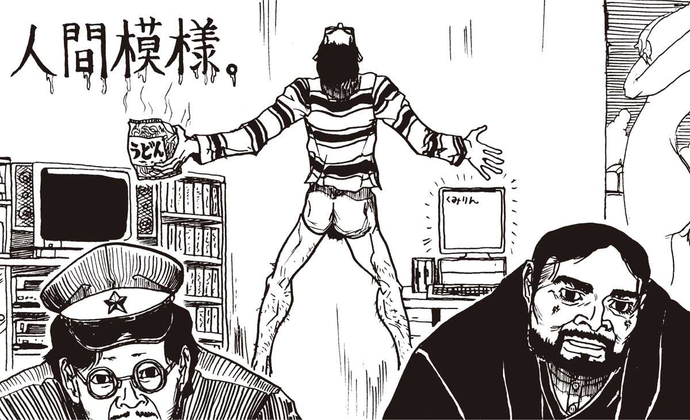
目覚め
つい話が脇にそれてしまったが、こうしている場合ではなかった。
一介の女子高生のふりをして何食わぬ顔で〈へっぽこ〉に潜伏し、様子を窺わねばならんのだ。
齋藤も言っておったが、〈ニセくまぴょん〉があのまま撤退するとはとても思えん。恐らく奴はまだ、このネットのどこかに隠れている。そうして、新たなる陰謀を巡らせているに違いないのだ。もちろん、〈へっぽこネット〉がどうなろうと余の知ったことではない。が、余をコケにした罪は償ってもらわねばならぬ！ 何としても奴の正体を探り出し、余、自らの手で抹殺しなければならぬ！
余はあちこちの会議室を出入りして書き込みを覗いてみたが、これといった不審なアーティクルは見受けられなかった。
「まだ何も動きはないようですな」
「平和なものだ。台風一過というやっかな」
「御意。しかしこういう時こそ、実は一番危ないものでござる」
「齋藤もそう思うか。同感じゃ。ホラー映画でも、危機が去ったあとに最大の危機がやってくるというのが定石ではないか。みろ、みんな〈くまぴょん〉が今度こそ本当に追放されたと信じて、無邪気に喜んでおる」
余はそれから小１時間ばかり各会議室を覗いて回った。特に異状はなかったが、閉口したのは、見知らぬ男の会員から、やたらと〝チャットしませんか〟などという電報が飛び込んでくることだ。どうせナンパ目的であろう。
「無視するしかありませんな」
「それはそうだが、しかし齋藤、適当に返事をした方がよくはないか？ あまり無視していると、不審に思う奴が出てくるかも。ああいう事件があった直後だし」
「考え過ぎでござるよ。大体、慣れぬ女言葉など使ってネットオカマの素性がばれでもしたら、かえって薮蛇でござろう」
「齋藤！ 余だってオカマくらいできるぞ」
「いや、決して閣下の演技を認めぬわけではござらぬが......」
「うるさい。隣の部屋に行って、タンスの一番下の引き出しにある服を持ってまいれ」
しばらくして、呆れ果てた表情で齋藤が戻ってきた。
「これはセーラー服ではござらぬか。いったいこれを......どうするので」
「着るのだ。それから齋藤、薬箱にソックタッチが入っておるから、それも取ってこい。どうもあれで靴下を止めないと気分が出んのだ！」
天を仰いで齋藤が叫んだ。
「ああ......閣下が目覚めた！」
謎の男齋藤の
野望メモ
どの世界にも、何かにつけて求愛行動をとる性的欲求盛んな人物があるもの。先日も煮腑艇紗亜撫にて、電子郵便暴露事件があり申した。女性を偽った悪者が、言葉巧みに男性を煽り、変態郵便を集った。欲望丸出しとなった男性たちは、猥雑窮まりない言葉を並べて手紙を書き、これに電話番号や本名などの情報をも加え、この通信網お釜に送った。犯人は、この猥褻とも言える手紙を一挙公開し、大問題となったもの。手紙を送った男性諸氏は、淫らな内容の手紙を通信網使用者に読まれるわ名前はばれるわで、面目丸潰れにて立つ瀬微塵もなしとなった。
女性を偽り使用者を騙すなどもってのほか、罰すべき行為。しかし、怪しい誘いに簡単に乗る者も乗る者。計算機通信はその性質上、相手の姿が見えにくいもの。そのため度を越した悪戯も多く、また深刻な事件もあり申す。相手を信用するなとは申さぬが、直接相手と会って話しているような気分や状況と混同せぬことが問題回避の要。文章の後ろ側にどんな人物が潜むのかはなかなか想像しがたいのが現実。
第40回
〈やまちち〉登場！ こいつは本物？
情報収集
謎の女子高生〈くみりん〉に成りすました余は、それから1週間ほど〈へっぽこネット〉にアクセスを繰り返し、情報収集を続けた。
完璧な演技のせいか、誰も余の正体に気づいていないようだ。そればかりか、こちらがひとこと何か書けば、わらわらとゴキブリのように寄ってきて親切にいろいろ教えたがる野郎もいる。
今日も何通か〈くみりん〉宛てのメールが届いていた。家庭の事情でしばらくアクセスしなかったので、最近の〈へっぽこ〉事情を教えてくれと掲示板に書いたら、親切な愚民の皆様が送ってくれたというわけだ。
メールを読みながら、余は齋藤に言った。
「ねえ齋藤さん、知ってて？」
「は。何でござりまする」
「シスオペの中野さん、とうとう辞任するみたいよ」
「ほう。すると〈級長〉があとがまに？」
「どうも、そうみたいなの。〈級長〉さん、〈へっぽこ〉を一流のネットにするってやけに張り切ってるみたい」
「実質的には、だいぶ前から〈級長〉がシスオペみたいなものでござったが」
「〈級長〉、最初から偉そうだったものね。〈くみりん〉、嫌いよあんなヤツ」
「閣下その、女言葉をおやめくださらぬか。どうも調子が狂いまする」
「あら、ごめんなさい。をほほほ！」
齋藤は手拭いで額を拭いながら、余に問いかけた。
「ところで閣下、〈ニセくまぴょん〉に関する何か新しい情報はありましたかな？」
「ウム。それなのだが、何しろみんなあの〈くまぴょん〉が本物だと思っているからな。特に新しい情報はない。ただ......」
「何でござる？」
「やはり例の〈ＰＣサーブ〉事件と関連づける意見が多いようだな」
「〈やまちち〉でござるか」
「そうだ。中には〈くまぴょん〉の正体は〈やまちち〉でないかと勘ぐっている奴もおる。手口というか、ムードが似ているのだそうだ」
「あの時も、まずパスワードのハッキングに始まって、ウイルス騒ぎで大混乱になり申したからな。犯人について分かったことは〈やまちち〉というハンドルくらいで、結局捕まらずじまい......」
「だが、万一奴が〈やまちち〉だとしても、今度ばかりは年貢の納め時というやつだな」
「なぜでござる？」
「ほかならぬ余を敵に回したということだ！ わははは」
〈級長〉の演説
メールに目を通してから、余はインフォメーションのコーナーを覗いてみた。
「おや。〈級長〉のメッセージがアップされているぞ」
（INFO）「インフォメーション」94/**/**
FROM HEP0000 夕焼け級長
題名：新シスオペ就任に当たって
皆様もご存知の通り、前シスオペの中野氏は先月末日をもって退任いたしました。理由はもちろん、一連の騒動の責任を感じての辞任です。
そもそも当ネットは５年前、雑誌『へっぽこＰＣ』の読者サービス用無料ネットとしてスタートしました。その後会員数は着実に増え、今や無料の草の根ネットとしては相当に肥大化しています。会員が増えれば、当然〈たけぴょん〉のような悪質な会員も出てきます。これまでは、無料ネットゆえ会員管理も甘かったのですが、もはやそれでは許されない段階に来ているのではないでしょうか。
実はここ数週間の経緯から『へっぽこＰＣ』社はネットの廃止も検討していたのです。しかしそれでは会員の皆様は納得しないでしょうし、私も承知できません。〈へっぽこネット〉は今や一種の社会なのです。
そこで私はここ数日へっぽこＰＣ社とかけあって、何とか廃止だけは思い止まっていただくことに成功しました。この好意を無にしないためにも、私たちは、よりいっそう自覚を持ったネット生活を送らなければなりません。こういう時期にシスオペをまかされた者の責任として、私は以下の行動をとります。まず、全会員の身元の再確認。往復葉書をお送りしますので、３ヵ月以内にお返事のない会員は、ＩＤ停止もありえます。
またホストプログラムの変更や、それに伴う新ＩＤの発行、またネット内を常に監視する自警部隊の設置も検討中です。これらの変革を実行するために有料ネット化も合わせて検討することになるかもしれません。もちろん、皆様のご意見を取り入れつつ慎重に決定していきたいと思いますが、すべては自由で民主的な愛される〈へっぽこネット〉を作り上げるための、やむを得ない処置です。何卒ご協力くださいますよう、お願いいたします。
祝福
「ああ、何か凄く嫌な感じ！」
余は吐き捨てるように言った。
「身元の確認だの自警部隊だの、まるでこれでは〈級長〉の独裁政権ではないか？ なーにが自由で民主的な愛される〈へっぽこネット〉じゃ！」
「御意。まあ、〈級長〉なりの善意から発した方針なのでしょうが......」
「何が善意だ。見ろ、この〈級長〉の文章、どことなくうれしそうな気配すら感じるわい」
「確かにヒロイズムに酔ってる感じがあり申すな。しかし閣下、閣下だって、ゆくゆくは人民を独裁したいのでありましょう？」
「一緒にするな、たわけ。余は他人を独裁するのは大好きだが、独裁されるのは大嫌いなのだ！」
齋藤はしばらく〈級長〉の書き込みを眺めていたが、やおら「あっ」と叫んだ。
「こりゃまずいですぞ。身元の確認をされたら、このＩＤも危なくなり申す！」
「あ。そうか。〈くみりん〉の住所もでたらめだったよな」
「御意。往復葉書などで確認されたらＩＤ削除は確実かと......」
「しかし〈へっぽこ〉の会員数って確か１万人だったよな。往復葉書なんか出したら百万円だぞ。そんな金、誰が出すのだ」
「〈級長〉は資産家の御曹子と聞いております。恐らく自腹を切る覚悟でござろう。そのくらいのことはやる男でござる」
余は脂汗を垂らしながら部屋の中をぐるぐると歩き回った。
「何とかならんのか、齋藤！」
「どうにもなりませぬな」
「ああ、もう〈やまちち〉でも誰でもいい、誰か〈級長〉の愚行を止める者はおらぬのか！」
これ以上焦っていても仕方がない。余はネットを抜け、とりあえずひと晩ゆっくり考えることにした。
トップメニューからログアウトしようとした、まさにその時。
余は〈くみりん〉のメールボックスに、未読の電子メールが１通届いていることに気がついた。
「誰からかな？」
メールを開けた余と齋藤は、ディスプレイを睨んだまま凍りついた。なぜなら、それは〈たけぴょん〉からのメールだったからだ。
（MAIL）「電子メール」94/**/**
FROM HEP4126 たけぴょん
題名：〝あの御方〟の御言葉を伝える
愚氏ども、元気か？ ここ１ヵ月ほどアクセスするのが楽しかったかい？ 俺も楽しませてもらったぜ。ところで愚民の皆様にビッグなお知らせがあるんだ。このネットの話を〝あの御方〟にしたら、〝あの御方〟も興味を持たれたみたいでね。じきじきに祝福をお与えになってくれるそうだ。こんなチャンスは滅多にないぜ！ これから〝あの御方〟の御言葉を伝えるから、こころして聞くようにな！ じゃ、また会おうぜ、チャオ！
祝 福 の 時 は 来 た れ り
有 に し て 無 。 一 に し て 全 な る 者 。 姿 な く 声 な く 影 な き 者 。 覚 醒 し た ま ど ろ み の 中 で 永 遠 の 生 命 を 保 つ 死 者 。
そ の 名 は や ま ち ち ！ ＜◎＞ 我 は 生 け る 死 者 な り 。 生 け る 死 者 死 せ る 生 者 に 祝 福 を 与 え ん ！ 月 満 つ る 時 第 一 の 祝 福 あ り 。 窓 の 中 に 我 降 臨 す 。 こ れ が 我 の 祝 福 な り 。
し か る の ち 災 い あ ら ば そ れ は 汝 の 責 任 な り 。 災 い は 汝 の 責 任 な り
謎の男齋藤の
野望メモ
如何なる通信網にも有名人はあるもの。良くも悪くも活発なる書き込みをする者こそ通信網にてとくと知られる人物なり。そしてその者の周囲には常に新しい動きあり情報あり。この人物には注目せよ。書き込みを追い発言を知り注目せよ。こと新たな通信網に加入せし時こそ、有名人に注目することこれ作法会得と状況察知の近道なり。なぜなら、例えば、良くも悪くも有名人の周囲には活発的使用者【★98】が集うもの。このやりとりを読めばその通信網の勝手が分かり、時として見かける暗号じみた文章も解読でき、通信網使用者たちの方向性がよく分かり申す。
また、通信網の危険たるある種の大事件も、そういった活発的使用者や有名人からの情報により回避できることまっこと多し。右も左も分からぬ初心者は、まず頻繁に見られる独自性番号を追い話題を追い、通信網に慣れることこそ重要。慣れぬ通信網にて慣れぬまま行動すれば失敗・顰蹙の可能性も高いが道理。またこの失敗・顰蹙は危険人物からつけ込まれ不愉快な思いをする元ともなりかねぬゆえ注意されたし。
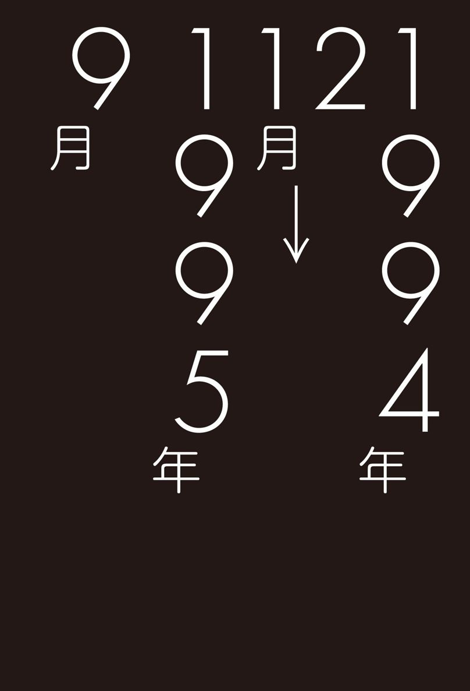
第41回
〈やまちちウイルス〉、ついに発病!?
悪戯か？ 本物か？
〈ニセたけぴょん〉のメールは、後半〈やまちち〉のメッセージを転載する形で終わっていた。
何しろ、いきなりのことである。余と齋藤はディスプレイに映し出された異様なメッセージを睨みながら、約３分間、凍りついていた。
文面からすると、これは特定の誰かに宛てたという メールではなさそうだ。恐らく同報メール【★99】で、あらゆる会員に宛てられたものではないだろうか。このやり方なら、アクセスした会員はまず確実に読むからだ。
余はいったんメールボックスを抜けると、何人かが雑談しているチャットルームを覗いてみた。案の定、〈やまちち〉の話題でもちきりである。やはり全員に同じメールが発送されていたようだ。
余は挨拶もそこそこにチャットを抜けると、再び〈ニセたけぴょん〉（及び〈やまちち〉）のメールをディスプレイに表示し、齋藤と一緒に穴が聞くほど読み返した。
それにしても、このメッセージのアナクロさはどうだ。まるで怪人二十面相の書き損ないのような予告状ではないか！ 子供っぽいとも言えるが、逆にそれが異様なムードを際立たせているとも言えた。
「何じゃこりゃあ」
思わず余はそう呟いたが、あんなアホな文章を見れば、誰だってそう思うだろう。
だが、齋藤の表情は真剣そのものであった。
「そっくりでござる......」
「ん？ 何がだ」
「〈ＰＣサーブ〉が崩壊した事件の直前にも、やはり〈やまちち〉の名前で、似たような文章がアップされ申した。誰もが変わり者の書き込みだと無視していたのでござるが、その直後に例のウイルス騒ぎが......」
「起こったというのか」
「御意」
「そんなに似とるのか」
「やはり似たような言い回しで〝愚民の園に祝福を与える〟とか何とか......。しかしまあ、文章ですから似せようと思えばいくらでも。実際、あの事件のあと、悪戯で〈やまちち〉を名乗る人物の書き込みが、あちこちのネットにアップされたことがあり申す。これだって、悪戯かもしれませんが......」
「悪戯かもしれんが、本物かもしれんということか」
「様子を見るしかありますまい」
「うむ。しかし、それにしても趣味の悪い文面じゃのう。自分のことを生ける死者と名乗ったり、ゾンビ映画の見過ぎなんじゃないのか」
「要はこの世の者ではないと言いたいのでしょうな」
「馬鹿か。にしても、これはどういう意味だ？ 〝月満つる時第一の祝福あり。窓の中に我降臨す〟......」
「さて、どういう意味ですかな......。素直に読めば、満月の日に何かが起こると読めまするが」
「次の満月って、いつだ？」
「ちょっとお待ちを」
齋藤はマンションの窓を開け、身を乗り出して夜空を見上げた。
「ご覧なさい。月の具合からしますと、明日あたりが満月ではないかと」
「いったい、何が起こるのだ？」
フリーウェア
首をかしげながら、齋藤が言った。
「〝窓の中に我降臨す〟......分かりませぬな」
「〝災いは汝の責任〟というのも、意味不明じゃのう」
「いずれにしても、もし奴が本物の〈やまちち〉なら、災いというのはウイルスのことではないですかな」
「うーむ。しかし、以前、〈級長〉が書いていたけど、〈へっぽこ〉に潜伏していたウイルスの類いは一応シラミ潰しにチェックされとるんだろう？」
「分かりませぬぞ。通常のチェックでは引っかからない、とんでもないウイルスがまだ残っているかもしれませぬ。閣下は、最近〈へっぽこ〉から何かプログラムをダウンロードされ申したか？」
「別に何も......いや、待てよ。そういえば先週」
「どのようなソフトでござる」
余は通信を終了させ、ハードディスク内のログを調べた。
「ああ、これじゃ。いや、あれからいろいろ忙しかっただろ。解凍もせずに放っておいたのだ」
「ほほう、スクリーンセーバー【★100】の一種ですな」
「うむ。女子高生が衣服を脱ぎながら画面狭しと飛び跳ねるという触れ込みでな」
「おお。最近話題のアレでござるな。物凄い人気フリーウェアでござろう？」
余は解凍したソフトを、さっそく起動させようとした。齋藤が慌てて制止する。
「お待ちくだされ。念のため、ウイルスチェックしてはいかがで？」
「うむ、そうだな」
フレンチカンカン
余はウイルスチェッカー【★101】のフロッピーをドライブに入れた。
「そのチェックプログラムは、いつのバージョンでござる？」
「今月号の『へっぽこＰＣ』の付録についてきたやつじゃ。一応、最新のウイルスまでチェックできるという触れ込みだが」
「最新、ということは、例の〈やまちちウイルス〉にも対応しているわけですな」
「そのはずだが？」
チェックプログラムはしばらくガチャガチャとアクセスしていたが、すぐに〝問題ありません〟との表示が出た。
余はさっそくスクリーンセーバーを起動させてみた。
いきなり表示が消え、一瞬画面が黒くなったかと思うと、中央にスポットライトが当たり、セーラー服らしきものを身にまとった女子高生が出現した。そうしてスカートをまくり上げながら、フレンチカンカンのようなものを踊り始めるではないか！ おまけにビープ音【★102】で「天然の美」のメロディまで奏でている。
「うお！」
「この腰の動き......お見事！」
齋藤が感嘆の声を上げたが、確かにそれは見事な音とアニメーションだった。プログラムのことはよく分からないが、よほど高度な技術を使っているのだろう。
次にメロディが「天国と地獄」に変わって、画面のあちこちから、セーラー服の集団がわらわらと湧いて出た。と、全員がストリップを始めるではないか。
「おわあ！」
ドット絵【★103】の限界はあるものの、動きが妙になまめかしい。もはやこれはスクリーンセーバーの範疇を超えた、一つの芸術品と言ってもよかった。なるほど、これでは人気ソフトになるわけだ。
「おや？」
ふいに、メロディがまた変化した。今度はやけに陰気な旋律だ。人間の声に似た合成音が、モゴモゴと聞こえてくる。
バケモノ
「何だろう」
「お経みたいでござるが......」
画面を埋め尽くした女子高生が、一人、二人と退場し、やがて画面が真っ暗になったが、お経はまだ続いている。嫌な予感がしてきた。
「齋藤、これはいったい......」
「はて。これはちょっと変ですな」
その時、いきなり画面がパッチリと目を開けた！
いや、画面が目を開けたのではない。画面に一つ目のお化けのグラフィックが表示されたのだ。
「あーーーー!!」
余と齋藤は恐怖の叫びを上げた。
「やまちち！」
余は、一つ目のバケモノとにらめっこをするような格好になった。これが〈やまちち〉なのか？
へビに睨まれたカエル、とはこのことを言うのだろうか。あまりのショックで一瞬硬直した余であったが、気を取り直し、プログラム解除のコマンドを入力した。だが、画面に変化は現われない。キーボードが入力を全く受けつけなくなってしまったのだ。
「そ、そんな!?」
一つ目のお化けが一本の足で立ち上がった。と同時に、その周囲に訳の分からないお経がゆっくりと表示されていく。
「危ない！」
とっさに齋藤が電源を切った。
画面からバケモノの姿が消え、余と齋藤のマヌケ顔が、ぼんやりとディスプレイに映った。
「やられましたな、閣下！」
「これが〈やまちちウイルス〉か？」
「間違いござらん！」
「どうして......チェッカーでは問題ないと出たではないか？」
「恐らく、最新型なのでござろう。それよりも即刻データの確認を！」
余は青くなった。確か〈ＰＣサーブ〉事件の時には、〈やまちち〉が画面に現われると同時に、ハードディスク内の全データがお経になってしまったということだ。余は恐る恐るハレルヤ１号を起動させ、データを確認した。
「あれえ」
......意外にもデータは無事であった。どうやら、タチの悪い脅しだったようだが......？
しかし、満月の晩は明日のはずだ。なのに、どうしてウイルスが発動してしまったのだろうか。
齋藤が慎重に調査して、原因が判明した。何と、余のハレルヤ１号の内蔵時計の日付が、１日狂っていたのだ。齋藤が顔を上げ、言った。
「明日の〈へっぽこ〉は、大パニックになりますぞ！」
第42回
パニックか？ 〈へっぽこ〉が接続不能！
満月の夜
余はイライラと部屋の中を歩きながら齋藤の到着を待った。
昨晩、余のハレルヤ１号に感染していた〈やまちちウイルス〉の正体を解明するため、齋藤は自宅に戻っていた。なんでも齋藤の家には知人が作成したとかいう高度なウイルス解析プログラムがあり、それを使えば正体が分かるかもしれないということだ。
月齢表によれば、今夜は満月だ。〈やまちち〉の予告には、満月とともにウイルスが発症するようなことが書いてあった。余のパソコンの時計が狂っていたため、たまたま１日早くウイルスとご対面してしまったのだが......。それにしても物凄いウイルスだった。
部屋の時計は夕方の６時を回ろうとしている。
余は窓を開けて空を見上げた。
表は真っ暗だが、まだ月は出ていないようだ。いや、南にあるビルの向こうがほんのりと明るいから、もう地平線からは顔を出しているのかもしれぬ。
先刻から余は頻繁に〈へっぽこネット〉にアクセスしているが、会議室でもチャットルームでも、特に変わった動きはない。ということは、まだ連中のマシンでは発症しとらんということだろうか。
齋藤のパソコン
パタンと音を立てて齋藤が部屋に入ってきた。
「閣下、お待たせを」
「おお齋藤。どうだった。何か分かったか？」
「しばしお待ちを」
齋藤は持ってきた鞄から妙なデザインのノートパソコンを取り出すと、電源を入れた。
「何だそれは。変なパソコンだな。どこのメーカーだ」
「これでござるか。いやなに、東南アジアのどこかの国が作ったパソコンでござる。万一のことも考え、壊れてもいいやつを持ってきただけでして......」
齋藤は妙な愛想笑いを浮かべた。奴は時々こういう素振りをするが、まるで何か隠しごとをしているようで気に食わない。齋藤が懐からフロッピーディスクを取り出した。
「これに、先ほど閣下のハレルヤ１号から採取した、問題のウイルスが入っております」
齋藤は持参のノートパソコンにフロッピーを挿入すると、例のスクリーンセーバープログラムをハードディスクに転送した。
「さて、これでそれがしのハードディスクにウイルスが感染し申した。このプログラムをメモリーに常駐させれば発症するはずでござる。ただし内蔵時計をわざと１日遅らせてあるので今は何事もござりませぬ」
そう言いながら齋藤は起動コマンドを打ち込んだ。たちまち、モニター画面がフレンチカンカンを踊る女子高生でいっぱいになった。
「まずは通常のワクチン【★104】で調べてみましょう。閣下がお使いになったプログラムはどれですかな？」
「おお、『へっぽこＰＣ』の付録のアレか？ ちょっと待て」
余は紙屑や雑誌が散乱する部屋の片隅の腐海を引っ掻き回した。
「あった。これだ」
齋藤は余から受け取ったフロッピーをパソコンに挿入すると、ワクチンを起動させた。
余は齋藤に言った。
「ふーむ。やはり〝異常ありません〟と出るな」
齋藤は付録ディスクの説明書をしばらく読んでいたが、「......なるほど、これで検出できないというのは、確かに最新型でござるな」。
そう言うと、懐からもう１枚のフロッピーを取り出した。
「よくご覧になってくだされ」
齋藤はもう１枚のフロッピーを挿入し、中のプログラムを起動させた。
と、たちまち〝ウイルスが検出されました！〟との表示が出、続いて画面にズラズラと、訳の分からないデータのようなものがスクロールしていった。
「閣下、これは例の〈やまちちウイルス〉を解析した、詳細なデータでござるよ」
「何と書いてあるのだ」
齋藤が説明を始めた。
ステルス
「閣下は〝ステルス〟という飛行機をご存知ですかな」
「ステテコ？」
「いや、ステテコではなくてステルスという米軍の爆撃機があるのでござる。これは機体がレーダーにかからない特殊な材質でできておりまして、敵に発見されることなく、目的地まで潜入することができるものでござる。それと同じように、このウイルスは通常のワクチンから完全に自分の身を隠すことができ申す」
「どのように身を隠すのだ」
「つまり、ウイルスもプログラムですから、必ず何バイトかの容量がありますな。だから感染前と感染後の容量を比べてみれば、ウイルスの分だけ容量が増えているはず。これを確認すれば感染が判明いたします」
「まあ、それはそうだろうな」
「うう。つまり、自分の体重だけサバを読むわけか」
「御意。そうして知らないうちにほかの実行プログラムに次々と感染しているわけでござる」
「すると、余のハードディスクも」
「御意。恐らくプログラム部分は全滅でござろう」
ヒューララ感覚
余はガックリと肩を落とした。
「やはり実行ファイルは削除して再インストールするしかないか」
こういうのを、いにしえの言葉でヒューララ感覚【★107】と呼ぶのであろうか。文書ファイルが破壊されなかっただけめっけものだが、はっきり言って面倒くさい。
が、追い討ちをかけるように齋藤が言った。
「削除だけではいけませぬ。ハードディスクごと再フォーマットする必要があり申す」
「なぜだ？ 削除すればウイルスも消えるはずだろう」
「普通はそうでござるが、実は削除コマンドが通用しないタチの悪いウイルスというものがあるので。削除されたと見せかけて、実はちゃっかり生きているようなやつが。それがし万一のことも考えて、先ほどこのノートパソコンで確かめてみたのでござるが......」
「削除してみたのか」
「御意。そうしたら、案の定無駄でした。しかも始末に負えないことに、このウイルスはステルス型とともに〝ミューテーション型〟の特徴も併せ持っているのでござる」
「ミュータンス菌？」
「それは虫歯を起こす菌でござる。ミューテーション型というのは、何かのプログラムに感染するたびに、自分の姿を次々に変えていくウイルスのことでござる。こうなってくると、まず、そこいらのワクチンでは歯が立ち申さん」
「とんでもないものだの」
「御意。正直申して、これは最新型ウイルスの見本市みたいなプログラムでござるぞ」
白骨の月
しかし考えてみれば、こういうウイルスを楽々と検出してしまうワクチンも凄いのではないか。余は齋藤に尋ねた。
「なるほどな。ところで聞くが、貴様が持っているそのワクチンもなかなかのものだな」
「お誉めにあずかって光栄でござる。友人もさぞかし喜ぶでござろう」
「その友人とやらに会いたいものだな。どこに住んでいるのだ」
齋藤が急にしどろもどろになった。
「残念ですが、今、日本にはいないのでござる。ちょっと連絡もつかない状況で......。まあ、いずれ閣下に紹介する日もくるでしょう。ところで閣下、それがし一つ心配なことがあり申す」
「ん？ なんだ」
「このウイルスなのですが、確かにこれだけのものでござるから、〈へっぽこネット〉、いやネット社会全体が今夜から大パニックになるでしょう。しかし気になるのは、画面に妙な化け物が表示される以外に、これといった悪さをしない点でござる」
「十分に悪いではないか！ おかげでハードディスクを初期化するはめになったんだぞ」
「それはその通りでござるが、それがしが言いたいのは、文書データは無事だったという点でして」
「うーん。それはそうだな」
「以前の〈やまちちウイルス〉は、発症したら最後、全データが判読不能のお経になるという超悪質なものでござった。ところが今回は技術はさらに高度になっているにも関わらず、そのような悪さはしません」
「要するに、今回は単に自分のプログラミングを自慢したかっただけなんじゃないのか？」
「それならいいのですが、どうも気になり申す。これ以外に何か、とんでもない事件が起こる気が......」
以前なら、また齋藤の心配症がと一笑に付すところだが、今の余はとてもそういう態度はとれなかった。
齋藤が部屋の時計を睨んで、言った。
「そろそろ満月が中天にかかる時間でござるな」
余は部屋の窓を開けた。向かいのマンションの上空に、白骨のように青白い満月がかかっていた。
とりあえず、余は〈へっぽこネット〉にアクセスを試みた。だが、繋がらない。いくつもの回線を試してみたが、全部が通話不能になっている。
齋藤が深刻な顔で目くばせした。
「始まったみたいですな......」
謎の男齋藤の
野望メモ
最悪の事態は、手持ちの算符類が計算機病原体に冒され、血清的算符でもこの状態を克服できぬ場合。例えば血清的算符がない場合、基本柔軟磁気円盤さえも感染された場合などである。こうなればお手上げ、計算機を操作することすなわち計算機病原体に活動のきっかけを与えることに繋がり申す。計算機を使用しないことが唯一の計算機使用法。ああ悲しきは計算できぬ計算機おお我が仏陀助けたまえ。このような事態に陥らぬためにも、基本柔軟磁気円盤は必ず書き込み禁止にしておくべ し。つまり磁気円盤の書き込み禁止窓【★108】を〝開〟の状 態に保つことが開運を呼ぶ秘訣。計算機病原体の基本動作は、自らをほかの算符に複製すること。固定式磁気円盤等、主な磁気記憶媒体が計算機病原体に冒された場合でも、この基本柔軟磁気円盤さえ無事ならば、基本機構を再導入することができ申す。すなわち、無傷の基本柔軟磁 気円盤さえあれば、健全な計算機環境を取り戻せる道理。これに加えて、使用者情報の支援複製も確保できれば、再び完全に健全なる計算機環境を構築でき申す。使用者各氏、計算機の最悪の事態を見据えて使用されたし。
第43回
ますます嫌なムードの〈へっぽこネット〉！
〈大日本ＶＡＮ〉
その日はついにひと晩中〈へっぽこネット〉にアクセスできなかった。恐らくは例の〈やまちちウイルス〉が猛威をふるい始め、慌ててホストをストップさせたのであろう。
余は齋藤に言った。
「〈級長〉殿も、さぞや慌てておることだろうな！」
「御意。しかし、あれだけのウイルスでござる。恐らくこのネットだけの騒ぎでは済みますまい」
「というと？」
「あのウイルスは、数ヵ月前に大評判になったフリーウェアに付着していたものでござろう。〈へっぽこ〉のみならず、多くのネットに転載されておるはず」
「なるほど」
「いや、感染していたのはあのソフトだけとは限り申さん。恐らく、ここ数ヵ月の間に、無数のソフト、無数のネットに感染していると見て間違いはないかと。何しろ最新のワクチンでも検出できなかったやつでござるからな」
「うーん。すると、ほかのネットはどうなっているのかな？ 余は〈へっぽこ〉のＩＤしか持っとらんから確かめようがないが......」
「それがし、他ネットのＩＤを持っております。しばし、お待ちを！」
齋藤はハレルヤの通信ソフトを起動させると、大手ネットの一つである〈大日本ＶＡＮ〉に接続した。
しばらくあちこち覗いてみたが、特に変わった様子は見られない。
「変でござるな......」
余と齋藤はしばらくネット内をウロウロしていたが、やおら両者ともに「あっ」と声を上げた。ある会議室で〈やまちち〉という文字を発見したからだ。
〈2344〉COMP-SALON MHM67549（ミスター松茸）
94/**/** 22:34
♦〈へっぽこネット〉に〈やまちち〉出現？
僕は加入してないんだけど、〈へっぽこネット〉ってあるじゃん、あそこに最近〈やまちち〉が現れたって、大騒ぎになってるらしいよ。本当かしら。どなたか〈へっぽこ〉のＩＤ持ってる人いません？ 何か知ってたら教えてちょ。
〈2345〉COMP-SALON HBC00987（鳥目小僧）
94/**/** 23:28
♦どうせニセモノでしょ（笑）
その噂、僕も聞いたけど、どうせニセモノでしょ。だってさ、何だって〈やまちち〉ともあろうハッカーが〈へっぽこ〉みたいな草の根狙うの？ 狙うんならウチを狙わなきゃ（縁起でもないこと書いてすみません＞ＡＬＬ）（笑）。
〈2352〉COMP-SALON MMP19387（ニコチャン大魔王）
94/**/** 01:09
♦〈やまちち〉を名乗る人物が現われたのは本当です
この会議室に書き込むのは初めてですが、〈ニコチャン大魔王〉と言います。〈へっぽこネット〉では〈煽情の狼〉と名乗っています。〈ミスター松茸〉さんが書かれたことは本当です。〈やまちち〉の書き込みがありました。もちろん〈鳥目小僧〉さんのおっしゃるように、本物かどうかは分かりませんが、私は、かなり本物くさいと睨んでおります。と申しますのは、私はすぐる２年前の〈ＰＣサーブ〉崩壊事件において〈やまちち〉の被害にあった当事者でもありまして、自分の経験からそう思うのです。自分が登場する以前に〈くまぴょん〉（または〈たけぴょん〉）なる問題ユーザーを手先に使ってあらかじめネット内を撹乱するなど、手口はさらに巧妙になっていますが、謎めいた予告状といい、全体のムードは〈やまちち〉そっくりです。もう少ししたら、何か動きがあるかもしれません。その時は、また報告します。
人それぞれ
「最後のは、〈煽情の狼〉じゃないか」
「御意。こちらでは〈ニコチャン大魔王〉と名乗っているのでござるな」
「あいつ、確か45歳くらいだろ。このハンドル、恥ずかしくないのか」
「人それぞれでござるゆえ......」
「ところで、これは１週間前の書き込みだよな。最新の書き込みはどうなっておるかな」
「しばし、お待ちくだされ」
齋藤は途中の日付を飛ばすと、本日の書き込みを表示させた。
〈2421〉COMP-SALON MMP19387(ニコチャン大魔王）
94/**/** 22:03
♦みなさん、とんでもないことになりました
今、夜10時ちょうどですが、今から１時間ほど前に〈へっぽこネット〉でとんでもないウイルス事件が起こりました！ いきなり画面が変になったかと思うと、モニターにあの〈やまちち〉が現われたのです！ 卒倒するかと思いました。〈ＰＣサーブ〉事件の時と同じです。慌ててハードディスクをチェックしましたが、幸い、データ類は無事なようです。しかし、プログラムはほとんどオシャカでしょう。これ以上何が起こるか分からないため、今は別のパソコンでアクセスしております。
情報によれば、〈へっぽこ〉のホストもやられたようです。ここ数ヵ月、〈へっぽこネット〉は不穏な出来事続きで、シスオペ以下、特にウイルスには注意していたのです。それなのに......恐らく新種のウイルスでしょう。みなさんのマシンにも潜伏しているかもしれません。十分にご注意を。私、最近〈へっぽこ〉のサブシスを命ぜられたばかりですので、しばらくこちらにはアクセスできないと思います。〈大日本ＶＡＮ〉の皆様も、くれぐれも気をつけてください！ それでは、また。
余は齋藤に目くばせした。
「やはりな。これで当分〈へっぽこ〉にはアクセス不能だろう」
「しかし不思議ですな。どうも被害にあったのは、〈へっぽこ〉だけみたいですが......。ちょっと確かめてみましょう」
余と齋藤は、さっそく〈大日本ＶＡＮ〉のフリーウェアコーナーに入った。
「あ。齋藤、例のスクリーンセーバーがアップされとるぞ」
「念のため、それがしのパソコンでダウンロードしてみましょう」
20分ほどでダウンロードが終了した。齋藤は解凍を開始し、次いで齋藤の友人が作ったという、例の特別ワクチンを起動した。
「おかしい。何事もありませぬ」
確かに同じバージョンのソフトなのに、特別ワクチンはウンともスンとも言わなかった。
「閣下が〈へっぽこ〉からダウンロードしたプログラムは、確か、昨日まで解凍もせずに放っておいたはずですな？」
「そうだが？」
「と、いうことはつまり、同じバージョンにも関わらず、〈へっぽこ〉のやつだけ感染していたということになり申すな。うーん......」
「やはり、明らかに犯人は〈へっぽこネット〉を狙ったわけだな」
ネット警察
それから１週間、ついに〈へっぽこ〉にアクセスすることはできなかった。いったいいつまでメンテナンスをするつもりなのだろうか。仕方がないので、余と齋藤は〈大日本ＶＡＮ〉にアクセスして、様子を窺うことにした。
〈2649〉COMP-SALON MHM67549（ミスター松茸）
94/**/** 20:22
♦〈へっぽこネット〉はどうなったんだろう
あれから〈へっぽこ〉のサブシス、こっちにアクセスしてないみたいだね。もう１週間もメンテしてるみたいだし......向こうの様子、知ってる人いない？
〈2656〉COMP-SALON HBC00987（お日小僧）
94/**/** 23:19
♦〈へっぽこ〉最新情報
えと、僕の友人からの情報すけど、今〈へっぽこ〉では〈やまちち〉撃退の戦闘態勢を固めているみたいよ。なんでも〈夕焼け級長〉とかいうシスオペが中心になって、〝ネット警察〟みたいなチームを編成してるんだって（笑）。ほらあそこってもともと会員管理の甘い無料ネットじゃない、だからいろいろ大変みたいね（笑）。〝ネット警察〟ったって、具体的に何やるか知らないけどさ。でもあそこには〈イヤーンＨの助〉っていう、ほら結構有名なプログラマーがいるじゃない、元ＩＶＭ社員の佐藤さん。彼が中心になって、最新のウイルスチェッカーと会員管理プログラムを徹夜して作ってるみたいよ。なんかみんなして必死みたい。ご苦労だよね（笑）。その点ウチは商業ネットだし、管理も行き届いてるよね。フリーウェアも最初から厳重なチェックを受けてアップされてるしね。〈へっぽこ〉の人たちも、みんなしてウチに来ればいいのにね。課金【★109】は結構高いっすけど（泣）
余は呆れて大声を上げた。
「ネット警察う？」
余は〈へっぽこ〉にアクセスしてみることにした。いくら何でも、そろそろメンテが終わってもいい頃だ。
「お。繋がったぞ！」
余はさっそく会議室を覗こうとした。ところが、見慣れたメニュー画面がいっこうに出てこないのだ。
画面には、ただ〝非常事態につき、アクセスされた方はただちに ;GO KENのコマンド【★110】で《検問所》に出頭してください〟と表示されていた。
「け、けんもんじょお??」

謎の男齋藤の
野望メモ
使用者の多い計算機通信網とその電子掲示板機構ほど、これの管理維持や倫理的基準の保全は難しくなり申す。この管理などを万承るのが電子掲示板機構の代表者の機構取扱者である。機構取扱者は、不逞の輩や猥せつ発言者など通信網に於いて好ましくない人物の書き込みを削除したり、あるいは使用者の苦情や問題の解決窓口として働いたりする世話役兼警備役的存在なり。しかし非常に多数の使用者が集まる大型電子掲示板機構では、この機構取扱者が活躍してもあまり効果が上がらぬ。数万の使用者と数人の機構取扱者では、まさに多勢に無勢。抗議行進を起こす市民を手出しできぬまま見守る警察のような様相もあり申す。時として集団の発言が個人を攻撃するような状況も生まれる通信網にては、実質的な権力はすべて使用者にあり、また、それは巨大な言語的暴力とも言っても過言ではないと存ずる次第。ある意味、通信網においては一種の私刑のようなものもあるのが現状。そして僅かではあるが通信網から排除される者もある。通信網を健全な仮想社会とするのは、我々個々の使用者の倫理と自己規範に委ねられておると考え申す。
第44回
恐怖の検問！ 究極のハック防止策とは？
〈級長〉の挨拶
余は声を荒げた。
「〈級長〉の奴、いったい何を始めたのだ？ 《検問所》だなんて......」
余の背後で齋藤が腕組みをしながら言った。
「ひょっとすると、これが〈大日本ＶＡＮ〉で誰かが書いていた〝ネット警察〟というやつかもしれませぬな。まあ、ここは指示に従うしかないでしょう」
確かに、今はホストの指示に従うしかない。何しろ《検問所》に出頭するコマンド以外、他のコマンドの一切が効かなくなっているのだ。
余は大きな不安を抱きながら《検問所》に入るコマンドを打ち込んだ。《検問所》は、シスオペの〝ご案内〟と〝検問〟の２箇所に分かれていた。とりあえず、案内の方を覗いてみる。
（KEN.INFO）「検問のご案内」94/**/**
FROM HEP0000 SYSOP（夕焼け級長）
#00001 題名：緊急事態につき皆様のご協力をお願いします（長文注意）
日頃、当〈へっぽこネット〉をご利用いただきありがとうございます。緊急メンテナンスが予想以上に長引き、長期間、アクセス不能になっていましたことを、まずはお詫び申し上げます。
さて、従来からの会員の方はご承知と思いますが、約１週間前、当ネットにおいて〈くまぴょん〉及び〈やまちち〉を名乗る不正アクセス者の仕業と思われる悪質なウイルス事件が発生いたしました。スタッフサイドの厳重なチェックをかいくぐる新種のウイルスが、〝図書館〟内にアップロードされていた複数の人気フリーウェアに感染しており、これが先週の満月の晩いっせいに発症したものです。このため、一般会員のパソコンはおろか、当ネットのホストマシンも一時的に使用不能の事態に陥りました。
私は、さっそく運営を一時中断して緊急メンテを実行すると同時に、〝感染源〟と思われるフリーウェア作者全員に事情を問い合わせてみましたが、全く身に覚えのないことだそうで、全員仰天していました。彼らはみな、身元のしっかりした有名なプログラマーたちであり、私とも直接・間接的な知人ばかりです。このような悪戯をする人物がいるとは到底思えません。
ところでほかのネットにもアクセスしている会員はお気づきかもしれませんが、不思議なことがあります。というのは、これだけのウイルスにも関わらず、〈へっぽこネット〉以外での被害報告が驚くほど少ないのです。
情報によれば、確かに他ネットでも同じウイルスと思われる被害報告がいくつか寄せられたそうですが、彼らの多くは当ネットのＩＤも所有しているか、身近に〈へっぽこ〉会員がおり、使用していたフリーウェアも、すべて当ネットから直接ダウンロードしたものだということが判明いたしました。
そこで当ネットスタッフとフリーウェア作者各位の協力で、各ネットにアップされている同じバージョンのソフトを全部チェックしてみましたが、ウイルス感染の形跡は全く見当たりませんでした。つまりウイルスが潜伏していたのは、当ネットだけだったのです！
さらに詳しい調査をした結果、驚くべき事実が判明しました。つまり、このウイルス（仮に〈やまちち２号〉と呼びますが）は、感染するたびに自分自身を微妙に変化させていく〝ミューテーション型〟というタイプのウイルスなのですが、驚くべきは害をもたらすのは２代目までで、３代目以降は全く無害なものに変化してしまうのです。
どういうことかと言いますと、当ネットに潜伏していたウイルスを１代目とすれば、会員のみなさんのパソコンの常駐ソフトに感染した瞬間に２代目の姿をとります。そうして被害をもたらすのですが、そこからさらにほかの実行プログラムに感染したとしても（３代目）、それはもはや実行機能を何ら持たない、単なる感染プログラムに変化してしまうのです。これが、ほかのネットに大きな被害をもたらさなかった理由だと思われます。
いったい、これはどういうことなのか？ 私は、犯人の、当ネットに対する強烈な悪意を感じざるをえません。つまり犯人は、正確に、当ネットの会員だけを狙い撃ちにしたのてす。理由は全く分かりませんがそうとしか考えられません。
また、どうしてフリーウェアの作者に内証で、当ネットのソフトだけにウイルスを感染させることができたかという疑問がありますが、これは以前から、〈くまぴょん〉（〈やまちち〉？）なる人物が度重なるＩＤ削除にも関わらず、何度も不正アクセスを繰り返していたことから、だいたいの想像はつきます。つまり彼は一時的にせよ、不正ハッキングによりシスオペと同等の権限を持っていたわけで、このような立場なら、ネット内をいかようにいじることも可能です。恐らくスタッフや一般会員の目をごまかしながら、痕跡の残らぬやり方でフリーウェアを差し替えていたに違いありません。
全く恐ろしい犯人です。しかしご安心ください。私は、当ネットの優秀な技術スタッフと協議して、〝これなら絶対に大丈夫〟というハッキング防止対策を講じることにしました。当分の問、当ネットにアクセスするに当たっては《検問所》を通過していただくことになります。会員の皆様にはしばらく不便をおかけすることになりますが、すべては不正アクセスを防止するためのやむをえない処置です。ご容赦ください。
SYSOP〈夕焼け級長〉こと加山健作
検問
〈級長〉の長いインフォメーションを読み終えて、余と齋藤は同時にため息をついた。
「なるほどな。〈級長〉殿も、いよいよ背水の陣というわけだな」
「それにしても、この〈やまちち2号〉とかいうウイルス、まるで限定核兵器のようでござるな」
「ある特定の範囲だけに被害をもたらすウイルスなんて、本当にあるんだなあ」
「御意。ある意味では、究極の嫌がらせウイルスとも言えましょうな。普通のウイルス以上に」
「ところで......」と、余は言った。
「〈級長〉が自信満々に書いていた《検問所》だが、いったい何をする気かな」
齋藤が応える。
「はて。恐らく新しいＩＤを発行するのでござろうが、しょせんは無料ネット。自己申告に頼るしかないですから、身元確認にも限界がござろう」
「〈級長〉が前に言ってた、確認の往復葉書を郵送してくるのかな」
「金はかかり申すが、打つ手はそれしかないでしょうな。とりあえず、検問を受けられては」
余は頷くと、２番の〝検問〟のメニューを選択した。
【検問所】
緊急事態につき、会員の皆様の身元及びご使用の電話番号を再確認させていただきます。まずご使用のモデムを「自動着信」【★111】に設定した上で、以下の質問に従って、ご本名・ご住所・電話番号・ＩＤ・パスワードを入力してください。また、従来ご使用のパスワード以外に、もう一つパスワードを設定してください。今後はアクセス時に新・旧二つのパスワードを入力することになります．なお当分の間、あなたのＩＤで登録されました電話番号以外の番号は使用できませんので、あなたのご自宅ないし職場の、確実に使用する電話番号を登録していただきますよう、お願い申し上げます。
究極の防止策
齋藤の顔が青くなった。
「閣下、こ、これは......」
「どうした？ 要するにこれは、パスワードを２重にするだけではないか。確かにハッキングは難しくなるだろうが、他愛もない」
「それどころではござりませぬぞ！」
「どうしたのだ？」
「以後登録した番号以外では使えないと書いてござろう？」
「そうだが......」
「試しに登録してみなされ。おっとその前に......閣下のモデムと通信ソフトを自動着信に設定し直す必要がありますな」
齋藤はハレルヤの前に腰を下ろすといったん通信を終了させ、モデムと通信ソフトを何やらいじり始めた。
「これでいいでしょう」
齋藤にうながされ、余はもう一度〈へっぽこ〉にアクセスすると、画面の質問項目に沿って入力を始めた。改めて質問されるといささかためらわんでもなかったが、正直に正体を明かすわけにもいくまい。以前と同じく、本名も住所も電話番号もデタラメを入力するしかなかった。
電話番号を入力し終わった時、画面に妙な文章が表示された。
「ん？ 〝そのまましばらくお待ちください〟と出たが」
否も応もない。余と齋藤は、そのままじっと画面を凝視した。その時である。ガチャリ、と小さな音を立てて回線が切れてしまった。
「あれ？」
何度繰り返しても同じだった。やはりデタラメの番号を入力すると、そのまま切れてしまう。
「アクセスできないぞ！」
齋藤は何かを納得した様子で、言った。
「アクセスできないのも道理。これは古典的ですが、究極とも言える不正アクセス防止対策ですぞ！」
「な、何だそれは」
「コールバック方式【★112】というやつです。考えましたな、〈級長〉も......」
謎の男齋藤の
野望メモ
計算機通信網上の保安策として、過去から幾多の手法が編み出され、そして現在でも多くの方法が使われておるもの。より安心に通信網を利用すべく作られた保安策ではあるが、その多くは通信網の使い勝手を悪くする方法。安心の代償として便利さを削られ申す。そもそも通信網は計算機使用者に利便をもたらすもの。そのはずが逆行し、使用者の利便をそいで何の意味があろうか。だが現代の通信網社会においては、これら便利さに逆行する保安策は切実なるものであり必須の策。こんな矛盾を生み出すのは、ほかでもない我々使用者の心得こそが原因。悪しき目的にて他人の情報を利用せんとする魂胆、使用者を困らせる悪戯、あるいは行き過ぎた個人情報の価値化、すべてが元凶となり、快適であり素晴らしいはずの通信網が雁字搦めの機構に成り下がる。我々日本人は他人の家に土足で踏み込むような真似を下衆なものと知る。これと同じ塩梅で、通信網にて他人の情報や環境に踏み入るような真似を下衆卑劣なこととし、各自で慎むことはできぬものか？ これさえ守れば、通信網ははるかに高度かつ身近なものとして利用できよう。
第45回
野望対野望！ 竹熊が動くか？
コールバック方式
「何だ、そのコールバック方式というのは？」
と、余は齋藤に問うた。
「これはパソコン通信の初期からあった方法で、主に軍事施設や研究機関などの、高度なセキュリティ管理が求められる場合によく使われるものでござる」
「具体的にはどういうものなのだ」
「仕組みは簡単でござる。つまり、通常の通信とは逆に、ホストの側がユーザーの端末にアクセスするのでござる」
「ほう。ホストの側が」
「御意。例えばここにＡというユーザーがいたとして、これがＢという通信ホストにアクセスしたとします。普通はこれで接続が完了いたしますが、コールバック方式と申すものは、この後、今度はホスト側がユーザーの端末にアクセスし、ユーザーの使用回線を確認した上で、初めてホストの使用を許可するというシステムでござる」
「うーん。なるほど。それだと確かにインチキの番号でアクセスすることは不可能になるのう」
「御意。この方式をとるならユーザの使用電話が完璧に把握できますから、ハック行為がたとえあったとしても、逆探知するまでもなく犯人が特定できるわけでござる」
余は感心した。
「考えたのう、〈級長〉も......」
だが、新たな疑問も湧いてきた。
「ちょっと待てよ。齋藤、その方式は確かに確実かもしれんが、今度はホスト側の負担が重くなり過ぎないか？ 電話料金はホストの側にかかってくるわけだろう。無料の〈へっぽこ〉でそんなことをやれば、自殺行為としか思えんが？」
「もっともな疑問でござるな。しかし料金を最小限にする方法がないではありませぬ。例えば、コールバックでユーザーの端末に臨時のパスワードを送って、回線をいったん切るという手段もあり申す」
「つまり、ユーザーは受け取った臨時パスワードで、改めてアクセスするわけだな？」
「御意。それでしたらホスト側のアクセス時間はものの数秒で済むのではないかと。それにしても、積もり積もればそれなりの金額になりましょうから、何らかの対策は必要でしょうが。いずれにしても近いうちに有料ネット化は避けられんでしょうな」
ナッシング
齋藤の説明を聞きながら、余は天を仰いで言った。
「ああ！ これでとうとう〈へっぽこ〉へのアクセスは不可能になったわけか！」
「いや、別に不可能というわけでは。正直に正しい番号を申告すればいいだけの話でござるよ」
「たわけ。そしたら余の正体が〈たけぴょん〉でありかつ〈くまぴょん〉であることがモロばれではないか！ 〈たけぴょん〉の時はともかく、最初に〈くまぴょん〉で登録した時には、馬鹿正直に本当の住所と番号で入会申請してしまったからな！」
齋藤は頭を掻いた。
「そ、そうでござったな。恐らく〈へっぽこ〉のホストには、過去の会員のデータはすべて記録されておるはずですから......多分それがしの番号も......。閣下とそれがしの関係もすでにばれとりますし......それがしの電話を使うわけにも参りませぬな」
「ましてやこの非常時だ。〈級長〉のことだから、過去の問題ユーザーのブラックリストもとっくに作成済みであろう。まともに申請しても真っ先にはねられるに決まっておる」
「となると、やはり別の住所と電話を用意して、新規に入会申請でもするしかありませぬな」
「貴様、今の余にそんな金があると思うてか。裁判だの何だので、余の郵便貯金はもはやナッシングなのじゃ！」
「これは失礼つかまつった。しかし......完全に手詰まりですな」
余と齋藤は互いに頭を抱えてうずくまった。
真の目的
果てしない時間が経過したように思えた。我々の頭の上を、時計の音だけが虚しく通り過ぎていく。先に頭を上げたのは齋藤だった。
「閣下。何もパソコン通信は〈へっぽこネット〉だけではありませぬ。閣下にとりましては確かに初めて参加したネットですし、口惜しいことでしょうが......。しかし、しょせんは草の根に過ぎませぬ。ネット界には〈大日本ＶＡＮ〉のような巨大ネットもあれば、インターネット【★113】のような国境を越えた超巨大ネットもありまする」
齋藤は軽く咳払いをして、話を続けた。
「閣下の〝器〟から考えても、〈へっぽこ〉は小さ過ぎまする。これを機にもっと大きな舞台で活躍されることを考えてはいかがでござろう？」
余は頭を上げ、齋藤をにらんだ。
「つまり、余に逃げろというのか」
「め、滅相もござらん」
齋藤が慌てて否定する。
「〈やまちち〉に一矢報いたいという閣下のお気持ち、それがしよく分かり申す。が、事態がこうなった以上、無理をしてまで〈へっぽこ〉に固執する必要もないのではないかと。よいですか、もう一度思い出してくだされ。閣下の、そもそもの目的を」
「余の、そもそもの目的とな」
「お忘れか？ そもそも、なぜ通信を始めたのか」
「おう、忘れるものか。余が通信を始めた真の目的は、えーと、〈夕焼け級長〉をこらしめるため......ではなくて、えーと、えーと、〈やまちち〉の正体を暴く......じゃないな、何だったっけ？」
「ちんぴょろほしぇ～！」
「おう、久しぶりに貴様の決め台詞が出たのう......おっと、余の真の目的の話だったな。......それは、パソコン通信を使って世界を征服し、デジタル新時代の独裁者になることであった！」
「そうでござる！ もはや、このようなせこい場所でウロウロするわけにはまいりませぬ。さ、早くもっと大きいネットに乗り込もうではありませぬか」
余はしばし考えたが、キッパリと言った。
「いや、待て。駄目だ」
「なぜでござる？」
「このままほかのネットにくら替えして、そこを征服するのは簡単だが、しかし余にはどうしても気になるのだ。あの〈やまちち〉なる人物がな。このまま接点を切るのは惜しい」
「その気持ちは理解でき申す。が、このまま〈へっぽこ〉から撤退したとしましても、〈やまちち〉との接点が切れるとは限らないと思いますが」
「ほう。その心は」
齋藤はポツリポツリと話し始めた。
「実はここ数日ずっと考えていたのですが、それはほかならぬ〈やまちち〉の目的についてです」
「〈やまちち〉の目的......」
「御意。閣下は、〈やまちち〉ほどのハッカーが、何ゆえ〈へっぽこ〉のようなちっぽけな草の根ネットを襲ったのか、その理由を考えたことがありまするか」
「言われるまでもなく考えた。が、どうしてもよく分からんのだ」
「それがしはこう思うのです。つまり、これは一種の実験ではないかと」
「実験？」
「御意。つまり、例えば原水爆のような兵器を開発した国家は、必ず実戦の前に砂漠や南の島で実験をしますな。理論の上ではいかなる威力があろうとも、実際に試してみなければ、本当のところは分かり申さん」
なるほど......〈へっぽこ〉は実験台にされているというわけだな。効果を確認した上で、もっと巨大なネットで〝本番〟をするのだと」
「そうとしか考えられませぬ。逆に考えれば、〈やまちち〉が本当に狙いそうなネットで待ち構えていれば、いずれご対面の時も来るのではないでしょうか」
余は声を荒げて机を叩いた。
「それでは遅い！」
最後の手段
齋藤が巨大な体躯をビクリとさせた。余は言葉を続ける。
「このままよそで漫然と待ちながら、〈やまちち〉の本番を待てというのか？ とんでもない。それでは余もほかの愚民と同じになってしまう。やはり、ここは何としてでも〈へっぽこ〉に復帰し〈やまちち〉の正体を突き止めねばならぬ。これは単なる復讐心から言っておるのではないぞ」
「と、申しますと？」
「余には分かるのだ。あいつもまた、野望にとり憑かれた人間であることがな！」
「おお。野望は野望を知る、というわけですな」
「かのヒトラー総統も電撃作戦によってヨーロッパを制圧したのだ。野望を持つ者が後手に回っては、ただ死あるのみ！」
「しかし、〈へっぽこ〉に復帰すると申しましても......。話はまた振り出しに戻ってしまいますぞ」
余は、目をギラリと輝かせた。
「いや、まだ最後の手段があるわい」
「最後の手段？」
「要するに、〈へっぽこ〉のホストに侵入して、余と貴様のデータを書き換えてしまえばよいのだろう」
齋藤は信じられないという様子で首を振った。
「そんな......閣下も、現在の〈へっぽこ〉がハッキング不可能であることはご存知のはずでしょう？」
「いや、可能だ。何も回線を使用するだけがハッキングではない！」
余はコートを羽織りながら叫んだ。
「ただいまから、〈へっぽこネット〉の本部に侵入し、直接ホストマシンをハックする！ 齋藤、ついて参れ！」
謎の男齋藤の
野望メモ
昨今、相互通信網なるものが話題なり。これすなわち、通信網同士を結ぶ通信網。個別の方式にて運用される通信網同士を融合させる手法であり連絡網のような仕組みなり。広く一般に、この相互通信網が利用されるようになると、我々通信網使用者の相互理解はますます深まり便利になると思われる。だがしかし、一方では通信網内の保安策がより問題になり申す。世界中の通信網が横に結ばれるならば、同時に下衆との遭遇確率も高まるのが道理。すなわち、この悪者の被害に遭う可能性も高まるというもの。通信速度、中央電子計算機、使用者装置境界面【★114】など、通信に関する環境は加速度的に向上し申した。そんな中、保安策の要なる部分である使用者暗号と使用者独自性符号は以前のまま。通信網とそこを流れる情報の価値が飛躍的に高まったはいいが、その保安策が旧来のままなるは、消防警察の足りぬ過密都市が如し。拙者など、現在の通信網はまさに栄華と崩壊の狭間にあると存ずるが、読者各氏はどう思われるか？ この危うさを救うのは技術ではないと存ずる。最後に問われるのは使用者の道徳、我らの心であろう。
第46回
ついにへっぽこＰＣ社に潜入成功？
二廃人
東京、渋谷区初台――。
地下鉄の駅から外に出ると、ビルの谷聞をひゅうひゅうと寒風が吹き抜けていた。
「すぐ左が甲州街道でござる。街道のすぐ手前に、へっぽこＰＣ社のビルがあるはず」
余は腕時計を見た。午後５時だ。
「行くぞ」
「本当にやるので？ またしても犯罪を犯すことになりまするぞ」
「承知しておる」
渋る齋藤を無視して、余はビジネスライクに必要事項の確認を始めた。
「で、だ。ブツは用意できたか？」
齋藤は手にしているショッピングバッグを揺らした。
「御意。閣下の言いつけ通り、演劇専門店で変装用具を２セット購入してきました」
余はキョロキョロとあたりを見回した。運よく、道の向こうに公園の公衆便所がある。余と齋藤は便所の個室に入ると、互いの顔にドーランを塗り始めた。
「ちょっと濃くないか。まるでシャネルズだぞ」
「つけヒゲは、こんなもので」
「サンタクロースみたいじゃのう」
「カツラも用意しましたが......」
「よりにもよってラスタへアーか」
「変装に完璧を期すため、鼻眼鏡も用意しました」
「パーティに行くみたいじゃの」
「しかし、閣下」
「何だ」
「大の男二人が公衆便所で互いに化粧し合うというのも、考えてみれば物凄いものがありまするな」
「言うな。すべては野望のため」
余は個室を出ると手洗い場の鏡で己が姿を確かめた。
「うーむ。いや、捨てたものでもないぞ。今流行りのバブルジェット・ブラザーズそっくりではないか」
「テレビによく出るあの二人組でござるか。確かにそっくりでござるが、どちらかと言えば脳に変調をきたしたブラザーてな感じでござるな」
警備員
へっぽこＰＣ社の前に立った。
「〈へっぽこネット〉のホストは、本当にこの建物にあるのでござろうか」
「とにかく、中に入って確かめてみよう」
「警備員がいますぞ！」
「慌てるな......」
余は齋藤を落ち着かせるため極力平静な声を出した。
「落ち着け。こういうのはシレッとしておれば、意外に気づかれないものだ」
余は肩をそびやかし、威風堂々と自動ドアの前に立った。受付の警備員が、目を皿のように見開いてこっちを見ている。余は警備員に一瞥をくれると、ニカッと笑った。
警備員が凍りついたような笑顔を浮かべた。何か言いたそうな素振りだったが、余は平然と前を通り過ぎ、齋藤とともにエレベーターに乗り込んだ。
齋藤が安堵の息を洩らした。
「大丈夫でしたな」
「分かったか。何事も落ち着きが肝心ということだ」
エレベーターのドアが閉まる。余はボタンに手を伸ばして、はたと困った。
「編集部のフロアは何階だ？」
「し、知りませぬ！」
しまった。せめて確かめてから乗ればよかった。余と齋藤は外に出た。振り向くと、整備員が渋い顔してこちらを睨んでいる。非常にまずい雰囲気だ。こういう場合、機先を制するしか逃れる方法はない。こちらから先に声をかけるのだ。
余はつかつかと警備員に歩み寄って、言った。
「あのー、『へっぽこＰＣ』の編集部は何階ですか」
警備員はしばらくポカンとしていたが、やがて大声で笑い出した。
「なあんだ。あんたがた『へっぽこＰＣ』の仕事かね？ いや、多分そうじゃないかと思ってたんだ。その格好だと、撮影だろ？」
訳が分からなかったが、ここは調子を合わせるしかないだろう。
「え？ ええ、そうです」
「いやー、あそこの編集部も変わってるよねえ。こないだもサンダーバードの格好した奴がズカズカ入ってきたから、慌てて呼び止めたら編集長の福岡さんだったよ。人騒がせだねえ！ あはははは」
「あは、あはははは」
「それにしてもあれだねえ、あの編集部、毎日クリスマスしてるみたいだよねえ。雇われている身でこんなこと言うのもなんだが、あれで仕事になってんのかねえ。心配だよ」
「いやー、ははは」
「あんたがた、タレントさんだろ？ バ......バブルジェット・ブラザーズだっけ？ 来客予定のリストに載っとるよ。......あれ、撮影は６時からのはずだが」
「あ、いえ、約束の１時間前には必ず到着するというのが、わ、私たちのモットーでして。ところで、編集部は何階で......」
「おお、失礼。編集部は６階だよ。あの、申し訳ないんだが......サインをくださらんか。孫が大ファンなんじゃよ」
サンダーバード
適当にサインをして、我々はエレベーターに乗り込んだ。
「それにしても驚きましたな。完全にバブルジェット・ブラザーズと間違えられていますぞ！」
「そういえば『へっぽこＰＣ』は、パソコン雑誌のくせに昔から芸能人でグラビアを作るのが好きだったからな。やはり変装は成功だったな」
「いや、そうとばかりは言えませんぞ。あと１時間で本物がこの場所に現われ申す！」
「逆に考えれば、我々が社内にいても、あと1時間は疑われないということだ」
エレベーターを降り、我々は〝へっぽこＰＣ編集部〟と書かれたドアを開けた。と、室内に喚声が上がり、社員に取り固まれてしまった。
「あわわわ......」
齋藤が声を上げそうになったので、余は足を踏んで黙らせた。向こうの机から、サンダーバードの扮装をした年齢不詳の男が、満面に笑みをたたえて歩み寄ってきた。サンダーバードはポケットから名刺を取り出すと、言った。
「編集長の福岡です。いや、こんなに早く到着されるとは思いませんでした。ですが、ご安心を、撮影準備はすぐにできますので、ま、その辺のソファでおくつろぎください！」
余と齋藤は編集部のソファに座って、あたりを見回した。机という机にパソコンが林立している。どれがどれやら見当もつかない。
「〈へっぽこネット〉のホストはどれかな......」
余は思い切って福岡編集長に尋ねてみた。
「あの、〈へっぽこネット〉って、この編集部にあるんでしょうか？」
福岡が、驚きの表情を浮かべた。
「あの、通信に興味がおありで？」
「え、ええ、まあ。最近芸能界でも流行ってますからね。ちょっと、ネットに入ってみようかな、なんて」
「これはこれは！ どうですブラザー・ケンさん、ひとつウチの雑誌で連載しませんか？ タイトルは......『ブラザー・ケンのパソ通体験記 ラップラップこんにちは！』うわー、こいつはいいや、あははは！」
「いや、その、考えときましょう。で、〈へっぽこネット〉のホストって、どれなんです？ 参考に見ておきたくて......」
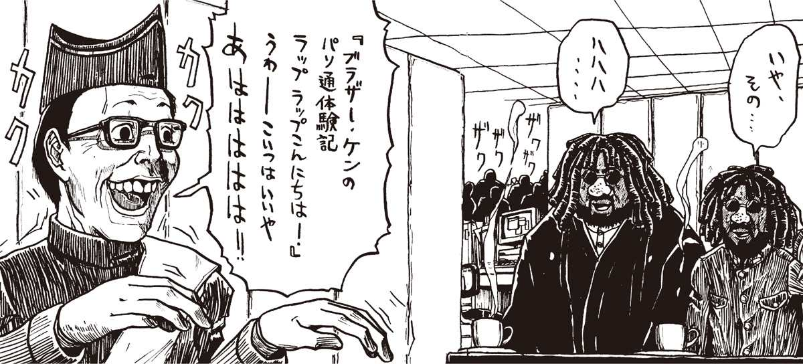
表紙撮影
編集長が顔を曇らせて言った。
「いや、〈へっぽこネット〉は、今ちょっと......」
「どうかしたんですか」
「いろいろありましてね、編集部のお荷物になってまして。実は閉鎖するつもり......」
「え？ 閉鎖ですか」
「......だったんですが、熱心なユーザーがいましてね。どうしても潰したくないとあまり熱心に言うもんで、彼らに管理をまかせているんです。今は当編集部はノータッチでして。ホストも別の場所にあります。それよりケンさん、どうせ入会するなら〈大日本ＶＡＮ〉をお勧めしますよ。......どうかしました？」
「え、いえ、別に」
その時、別の編集者が寄ってきて福岡の耳元で鳴いた。
「準備ができたようです。地下に撮影スタジオがありますので、ご一緒にどうぞ！」
地下に向かうエレベーターの中でも、福岡がさかんに話しかけてくる。
「いやーお二人には期待してるんすよ。何しろ雑誌の売上を左右する表紙の撮影っすからね」
「ひ、表紙!?」
齋藤が素っ頓狂な声を上げた。
エレベーターが止まった。廊下に立って編集長が手招きをする。齋藤が小声で話しかけてきた。
「ど、どうするので？」
「なるようになるしかあるまい」
「しかし表紙の撮影とは......えらいことになり申した」
余は答えず、立ち止まって廊下の向こうを凝視した。
「どうなされた？」
「あそこ......今、トイレから出てきたあの男！」
今度は齋藤が小声で叫んだ。
「〈夕焼け級長〉！」
間違いない。〈級長〉がトイレから出てきて、廊下の端の部屋に入っていったのだ。と、すると、あそこに〈へっぽこネット〉のホストがあるのだろうか。編集長が廊下の中ほどのドアから首を出して、叫んだ。
「こちらです！ どうぞ！」
謎の男齋藤の
野望メモ
電子計算機通信網の中心計算機は意外な場所にあり申す。中心計算機は、その通信網の規模にも関係いたすが、例えば草の根通信網ならば日本電気製の九八式個人用計算機と数本の電話回線、それから回線分の喪出無があれば成立する仕組み。具体的には電気が得られて雨風がしのげれば中心計算機を設置することが可能。事実、以前存在した哀魂通信網も、複写装置の脇に置かれてあり申した。しかし、ある程度大規模で、保安程度の高い中心計算機となると話は別。複数の電話回線、複数の喪出無、大容量の固定磁気円盤記憶容量、そしてある程度処理能力の高い中心計算機が必要となり申す。これに加えて無停電電源【★115】など、通信網の安全なる運用に欠かせぬ装置類が必要となれば、それなりの個室がいるもの。また、各装置が発する熱もあり、場合によっては大がかりな空調設備さえも必要。もちろん、一括調整時の要員も欠かせぬこととなり、個人では運用できぬほど手間と費用が必要となり申す。つまり、何というか、その、閣下のような野蛮的人物があれば、まあ、その一発でお釈迦となる物理装置なり。
第47回
卑怯！ 陰でコソコソ強制ハック！
タップ
パシャパシャとシャッター音が鳴り響き、ストロボがたかれた。
「ブラザー・ケンさん、ちょっとこっち向いてください！ あ！ シンさん、もっと笑って！」
へっぽこＰＣ社の地下にあるスタジオで、カメラマンが有無を言わせず、次々と指示を出してくる。
余と齋藤は、カメラに向かって凍りついたような笑顔を浮かべていた。二人の間には、新製品のパソコンが、ライトに照らされて光っている。疑う者は誰もいない。我々は、完全にバブルジェット・ブラザーズと間違えられているのだ。
スタジオの時計を見ると、早くも40分が経過しようとしていた。まずい。あと10分もすればそろそろここに〝本物〟が現われてしまう。そうなったらすべてはおしまいだ。横を見ると、齋藤の額から滝のように汗が流れている。恐らく余の顔も同様だろう。これは、何もライトの暑さのせいばかりではあるまい。福岡編集長がスタジオの隅でニコニコ笑いながら叫んだ。
「グーっす！ これで『へっぽこＰＣ』の売り上げも倍増間違いなし！」
とにかく、こんなことをしている場合ではない。我々は表紙撮影に来たのではなく、〈へっぽこネット〉のホス卜をハックしに来たのだ。一刻も早く、ここを抜け出さなくては。カメラマンが言った。
「いやお二人ともいいカンジっすよ。じゃ、お次はここでタップを踏んでいただきましょうか」
「へ？ タップ？」
「いや、格好だけでいいっす。あ、そうだ。そのキーボードを持って、そう......おお、いいっすねー。そうだ、ガタイの大きいシンさんは、パソコンの本体を頭上に持ち上げて、そうそう。そのままタップを」
と、いきなり齋藤が本体を抱えたままうずくまった。
「どうした齋藤？ いやブラザー」
齋藤はうんうん唸っている。
「いやその、ちょっとトイレ......」
余はピンときた。齋藤はここから抜け出るため、機転をきかせているのだ。余は編集長に言った。
「すいません、少し休憩させてください。余、いやオイラも外の空気が吸いたいので。ここは暑くって」
「そうすか。じゃ、10分休憩しましょう！」
便意
廊下に出て、余は齋藤に言った。
「うまくいったな。さっき、〈級長〉があっちの部屋に入っていたのを覚えているな？ どうやって潜り込もうか......おお、どうやら隣の部屋は物置みたいだぞ」
「............」
「どうした？」
齋藤は眉間に皺を寄せて必死に何かを耐えている。
「おまえ、まさか」
「......」
「尿意か？」
「......便意でござる」
齋藤は便所を目指して突進していった。そして廊下を曲がろうとして、慌てて戻ってきた。
「どうした？」
齋藤は余の手を引っ張ると、強引に廊下の端まで走った。物置の扉を開け、慌ててそこに隠れた。
「どうしたのだ？」
「廊下を曲がろうとしたら、本物が」
「え。本物」
余は扉を少し開けて廊下を覗いた。向こうから、派手な格好をした二人組が歩いてくる。間違いない。本物のバブルジェット・ブラザーズスだ。
「危ないところだったな」
「危ないところでござった」
「当分、ここから出られんぞ。便意は大丈夫か」
齋藤は尻に手を当てて言った。
「今のショックで、峠を越えたようでござる」
「よし。とにかく我慢するのだ」
隣の部屋には、確かに〈夕焼け級長〉がいるはずである。壁に耳を当ててみたが、何も聞こえぬ。部屋を見回すと、天井近くに通風口があるのに気がついた。
「あの通風口、ひょっとして、隣に繋がっているのではないか。ちょっと貴様、踏み台になれ」
余は両手両膝をついた齋藤を踏みつけると、通風口の鉄格子を外した。こんなこともあろうかと、ドライバーを用意していたのだ。
点検の結果、余一人なら何とか潜れそうなことが分かった。下になっている齋藤が、弱々しい声で訴える。
「閣下。便意が」
「ぶり返したか？」
「御意。閣下が踏んづけたショックで、少し実が出申した」
「たわけ！」
余はそのまま通風口に潜り込むと、ヒジを使ってへビのように前進した。向こうから明かりが漏れている。
近づくと、何やら聞いたことのある中年男の声が聞こえてきた。〈煽情の狼〉の声だ。
会議
「......それにしても、ひどい部屋だなここは」
「仕方ないだろう。こないだまでここも物置だったんだから」
そう答えるのは、〈夕焼け級長〉だ。
「ま、ネットが存続しただけましだよ。一応ここも夕ダで使わせてもらえるわけだし」
余は通風口の内側から部屋を覗いた。コンクリート打ちっぱなしの殺風景な室内には、ボロボロの大きなテーブルがあり、その上に、コンピューターが置かれている。
テーブルを囲むように、〈級長〉、〈狼〉、ほか何人かが座っていた。〈うさちゃん１号〉もいる。
どうやら、〈へっぽこネット〉の運営会議らしい。余はポケットからメモと鉛筆を取り出すと、ひとことも聞き漏らすまいと耳をそばだてた。
「その後、不穏な動きはない？」
「《検問所》を設けてからは、何もない。守りは完璧だ。いかに〈やまちち〉といえど、これでもう、ハック行為は完全に不可能だよ」
〈うさちゃん１号〉が心配そうに口を聞いた。
「でも、ちょっと厳し過ぎない？」
「この際このくらい厳しくしないと駄目だよ。ネットというのは、管理をゆるめると必ず変な奴が入ってくるからね」
「それはそうだけど......。でも息がつまりそうで。私のまわりでも、もう何人も脱会してるし」
「確かに、自由がないなんて言って抜ける人は何人かいるよ。でも、ネットだって一つの社会なんだから、ルールは守ってもらわなくちゃね」
「でも〈級長〉、《検問所》はまだいいとして、実名制に踏み切ったのは、少しやり過ぎじゃないかしら」
実名制？ 実名制というのは、つまり本名を名乗らせるということか。しばらくアクセスできないうちに、〈へっぽこ〉にそんなシステムが導入されていたのか。
〈級長〉はハッキリと断言した。
「本名を名乗れないような奴は、心にやましい部分がある証拠だよ。それに実名制といったって、ハンドルが使えないわけじゃないよ。単にプロフィールを公開にしただけだ。現に僕も〈うさちゃん〉も、書き込みは従来通りハンドルだろう？」
「それは、そうなんだけど......」
「実名制にして以来、〈へっぽこ〉ではふざけた書き込みや論争が極端に減った。平和になった証拠だ！」
強制ハック
あたりに重苦しい雰囲気が立ち込めた。〈煽情の狼〉がコホンと咳払いをして、言った。
「遅いねえ、〈Ｈの助〉は」
〈級長〉が答えた。
「彼は連日徹夜でプログラムを書いてるからね。そろそろ来ると思う」
「プログラム？」
「対〈やまちちウイルス〉用のワクチンプログラムさ」
「〈やまちちウイルス〉か......確かに凄かったが、気にならんか」
「何が？」
「結局あれ、データを壊すような悪さはしなかったよな？ 本当に〈やまちち〉の仕業なら、その程度で済むとは思えないのだが」
〈級長〉はしばらく考えていたが、「その点については僕も気になっていた。もっと気になるのは、あのウイルスが、このネットでしか発生しないように仕組まれていたことだ」。
「どう思う、〈級長〉は」
「僕は、あれは一種の予行演習ではないかと思う」
「やはりそう思うか。すると、このあとにもっと凄いことが起こるかもしれないわけだな」
「ははは、まあ、このネットをハックできたらの話だけどね」
その時コロコロという妙な音が発生した。〈煽情の狼〉がギョッとしたそぶりを見せた。〈級長〉が笑って言う。
「ああ、これは誰かがホストにアクセスしたら、ビープ音で知らせるようになっているんだ」
〈級長〉は画面を覗き込んだ。
「今、ホストにアクセスしているのは７人......。入ってきたのは10回線だな。誰だろう。えーと......」
〈級長〉の顔がサッと青くなった。
「どうしたの？」と、〈うさちゃん〉が心配そうな声を出した。
「おかしいな。ここに実名が出るはずなんだけど」
「ほんと、名前がないわね。プロフィールを確かめたら？」
〈級長〉はキーボードに指をかけると、すばやくパスワードを入力し始めた。このチャンスを待っていたのだ！ 余は全神経を集中してパスワードを記憶すると、メモにしたためた。ついに強制ハック成功だ！
ホストに入り込んだ〈級長〉は、しばらく何やらやっていたが、やがて絶望的な声で叫んだ。
「ない！ プロフィールもない！ だ、誰だ、こいつは......」
謎の男齋藤の
野望メモ
大胆にして強引なる竹熊閣下のように、力技により物理的に中心計算機を制御するとなると、もはや通信網の防衛策など無きに等しい。金槌で計算機を壊せばそれでしまい。物理的な手段に訴えれば、計算機は理屈など通り越して破壊されるような貧弱な代物。いやいや、壊すのではあり申さぬが、まあ装置破壊は最も効果覿面なる方法。ともあれ、物理的手段に出られては、目には目を歯には歯を、不法侵入には警官をのやり方で対処するしかあるまい。これは冗談でなく、読者諸氏の身近でも起こる話。不法侵入まではゆかずとも、例えば、通信網に接続せんと鍵盤を叩く指を悪者にじっくり睨まれれば、もはや通過文字列を盗まれたも同然。多少計算機慣れした者なら、どの鍵を叩いたのかは簡単に読めるもの。あるいは手帳に記録した通過文字列と独自性番号なら、この手帳を開かれてしまえばそれまで。何も通信網を通さずとも、使用者の情報が漏洩する可能性はあり申す。計算機が仮想的な世界を作るからとは言え、そこに関する事件も仮想的だとは限らぬのが現実。世の中、倫理も道徳も通用しない輩もあるので重々注意されたし。
第48回
謎の言葉〝愚民問題の最終解決〟とは!?
見慣れぬＩＤ
天井近くの通風口に身を潜めた余は、全身の神経を集中して室内の様子に耳をそばだてた。
「こんな馬鹿な！」
叫んだのは〈夕焼け級長〉だ。
「信じられない。コールバックシステムは完壁なのに」
室内に緊迫した空気が張り詰めている。一同がテーブル上のパソコンを取り囲むように覗き込んでいた。信じられないことだが、どうやら〈へっぽこネット〉にまたしても誰かが侵入したらしい。
幸い、そう遠くない距離なので、ディスプレイの文字が何とか読める。見かけない画面だが、恐らくシステム管理用の画面なのだろう。回線を使用しているユーザーのＩＤとハンドル、それに実名と電話番号までもがずらずらと表示されている。しかしなるほど、ただ一人ＩＤしか表示されていない回線がある。
〈煽情の狼〉が口を開いた。
「ＨＥＰ９９９９９......誰だ、こいつは」
〈夕焼け級長〉が答える。
「こんなＩＤは発行されていないはずだ。ネットに侵入して、勝手にＩＤを作ったんだ！」
「しかしどうやって《検問所》を突破したんだ？」
「詮索はあとにしよう」
〈夕焼け級長〉はコマンドを打ち込み始めた。侵入者の現在地を確かめているのだろう。
「あ。この野郎〝インフォメーション〟に何かアップしてるぞ」
（INFO）「インフォメーション」95/**/**
FROM HEP99999
題名：愚民の皆様に耳寄りのお知らせ！
愚民の皆様、お元気ですか？ しばらくおとなしく様子を窺っていたのですが、案の定、このネットもますます馬鹿に磨きがかかって索晴らしい雰囲気になってきましたね！ 運営側は公表してませんけど、現在このネットに何人残っていると思います？ せいぜい５００人かそこらですよ。ま、ネット内にはガス室みたいに蚊取線香の煙が充満しとりますから、まともな神経を持っていたら逃げるのが正解です。
でもって、川底の砂をふるいにかけたら砂金が残ったとでも申しましょうか、残ったのは〈夕焼け級長〉を始めとする賞金級の〝蚊〟ばかりで、もー机叩き大爆笑の楽しさです。《検問所》を設けるだの、実名ネットにするだの、いろいろ害虫駆除に躍起になられているようですが、一ついいことを教えてあげましょう。駆除もやり方によっては、出てったのは益虫で、残ったのは害虫ばかり、なーんてこともあるのですよ。
ただやっかいなのは、彼らには自分が害虫だという自覚がないことですね。まあ、ガス室にいても気がつかないような鈍惑さですから仕方ないですけど。え？ かくいう私が一番の害虫？ こりゃまた失礼しました。でも私は〈やまちち〉様から与えられた、〝真の害虫〟を退治する使命感に燃えていますので、危険なんぞ恐れるものではありません。
おっと世間話が長くなりましたね。スピーチは短くしないと嫌われます。で本題なんですが、皆様にビッグニュースがあります！ 〈やまちち〉様におかれましては、ここ一連の当ネットの様子を見て、〝本当の害虫〟駆除の手間が省けたと非常にお喜びになっております。そこで本日から１週間の猶予を置き、満足のいく自浄努力が見られない場合は、〈やまちち〉様おんみずから〝愚民問題の最終解決〟に取りかかるとおっしゃられました。
その際、罪のない〝善良な愚民〟も巻きぞえにしてはかわいそうなので、わざわざこうして皆様にお知らせするよう、担当が用命を言いつかったというわけです。ああ〈やまちち〉様は何と慈悲深いお方なのでしょうか！
最後に。〈やまちち〉様のお力をもってすれば、いかなるハッキンク防止策も無意味です。また〝愚民問題の最終解決〟とは、およそ皆様が想像もしたことがないような物凄いものです。いったんこれが発動したら結果は〝死〟しかありません。ここで言う〝死〟とは、データか飛ぶようななまやさしいものではない......とだけ言っておきましょう。愚民の皆様。どうか心を冷静にして、誰が〝真の害虫〟か見極める目を持ってくださりませ。これが最後の忠告です。チャオ！
〈やまちち〉様の忠実な僕：〈たけぴょん〉
回線切断
〈級長〉の顔色が、みるみる赤銅色になった。
「回線を切れ！」
〈級長〉の怒声にうながされ、〈煽情の狼〉が慌ててモデムのコードをたぐり寄せた。
「回線って、どれ？」
「こいつが接続している回線だ！」
「どれ？ どの回線？」
「どけ！」
〈級長〉はコードの束をひっつかむと、えいや、とばかりに根こそぎ引き抜いた。
「あ。あああ......」
一同がどよめく。〈級長〉はしばらく肩で息をしていたが、ようやく我に返った。
「......すまない。つい興奮して」
〈煽情の狼〉がなぐさめるように言う。
「いや、仕方がないさ。目の前で堂々とハッキング行為が行われて、しかもそいつから〝害虫〟呼ばわりされたんだからな」
横で、〈うさちゃん1号〉が感極まった泣き声で叫んだ。
「害虫なのはこいつよ！ 〈やまちち〉だか〈たけぴょん〉だか知らないけど！」
〈級長〉はしばらく沈欝な表情で立ちつくしていたが、やがて意を決したようにキーボードに向かった。
「〈級長〉、何を......？」
「もう我慢できない。これはもう立派な犯罪だ。〈たけぴょん〉の住所を調べて、直接捕まえよう！」
「でも奴の住所って、確かでたらめだったんだろ？」
「そうだけど、〈たけぴょん〉は以前、〈くまぴょん〉というハンドルでアクセスしていたろう？ 確か、会員記録がまだ残っているはずだ」
通風口の中で、余は硬直した。まずい。非常にまずい。余は最初に〈くまぴょん〉で登録した時、正直に本物の住所と電話番号で申請していたのだ。まあ、遅かれ早かれこういう事態になるとは予想していたが、こうなっては仕方がない。しばらく自宅には帰らない方がいいだろう。
憎むべきは〈やまちち〉！ 余の名を騙り、余をここまで苦しめるとは......。
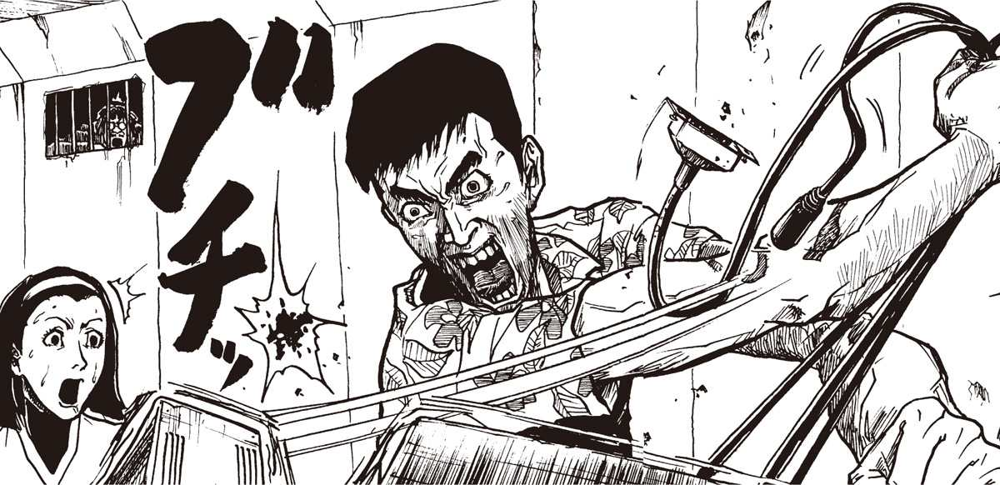
遅れてきた男
「あれ？ みなさんどうしたの？」
いきなり、部屋に入ってきた者がある。〈イヤーンＨの助〉だ。
「おお、来たか。いや、実はね......」
〈煽情の狼〉が一部始終を説明した。
「え？ ハックされた？」
〈Ｈの助〉は、愕然とした。
「そんな。だってコールバック方式だよ。絶対にハッキングなんか......ちょっと〈級長〉、そこどいてよ」
「ちょっと待って」
〈級長〉は〈くまぴょん〉の登録から余の住所と電話をすばやくメモすると、〈Ｈの助〉に席を譲った。
「えと......。ははあ、ＨＥＰ９９９９９。こいつがハッカーだね？」
「〈たけぴょん〉だ。あいつが、またしても〈やまちち〉のメッセージを伝えてきたんだ！」
〈級長〉が叫んだが、〈Ｈの助〉は自分の作業に没頭している。
「んーと。よし、番号が分かったぞ。現在の〈へっぽこ〉はコールバック方式になってるから、確実に相手の番号が分かる仕組みになっているんだ。で、この番号、〈くまぴょん〉のやつと同じかい？」
〈級長〉はメモを見て首を振った。
「いや、全然違うな」
「じゃ、電話局に問い合わせてみよう。何か分かるかもしれない」
〈Ｈの助〉が携帯電話【★116】を取り出した。
チャンス
「やはり、駄目だね。この番号は、公衆電話のものだそうだ」
「外からハッキングしたわけか」
「しかし間抜けだな。昔の自己データをそのまま残しているなんてさ」
〈級長〉は鼻で笑うと、〈Ｈの助〉から携帯電話を借り受けた。余の部屋にかけるつもりらしい。
「やはり、誰も出ない」
〈級長〉はしばらく考えていたがやおら立ち上がった。
「よし、行こう」
「行くって、〈たけぴょん〉の家にか？」
「そうだ。あいつは外から公衆電話でアクセスしてきたんだ。奴の部屋の前に張り込んで、帰ったところを捕まえるんだ」
一同が立ち上がりかけた時、〈イヤーンＨの助〉が、フロッピーを振りかざした。
「あの、これ、完成したんだけど」
「何だい？ ああ、そうか。ついにできたのか？」
「うん。〈やまちちウイルス〉にも対応した、究極のワクチンソフトだ。苦労したんだよお」
「自慢話はあとにしてくれないか。今は〈たけぴょん〉を捕まえるのが先だ。〈Ｈの助〉も一緒に来てくれ」
ドヤドヤと音がして、全員が部屋から出て行った。チャンスだ！ 余は通風口を通って齋藤が待機する隣の部屋に戻った。
「おお、閣下。ご無事で」
「うむ。齋藤、ついに恐れていた事態になったぞ。〈級長〉たちが大挙して余のマンションに向かった」
「ひえ！」
「しばらく部屋には戻れんぞ。それはともかくだ、今、〈へっぽこ〉本部には誰もいない。ハックするチャンスは、今しかない！」
謎の男齋藤の
野望メモ
昨今、電子計算機通信網上にて個人情報の漏洩に関する道徳が高まりつつあり申す。半面、まだまだ個人情報に関して無頓着なる使用者の多きこともまた確か。住所氏名年齢性別職業などの情報は、ある時ある場所ある状況においては、これが非常に価値あるものとなり、また犯罪など大問題に繋がる核心的な情報ともなり申す。たかが通信網と侮るなかれ。通信網上の個人情報も、諸氏の秘密手帳に記した個人情報も、同じ重みの価値を持つもの。とかく世の中世知辛く、下衆から犯罪者までが何食わぬ顔で横行するもの。その中に諸氏の個人情報が流れるとしたら、これは恐ろしいのひとことに尽きるものと存ずる。もちろん、これら個人情報の漏洩が、恐ろしいことに繋がる可能性こそごくわずかでもあり申す。しかしながら、昔に比べ多種多様な嗜好・考えを持った多くの使用者が通信網を使うようになった現在、わずかでも恐ろしいことに繋がる可能性のある情報の管理はしっかりしておくのが道理。現在の通信網において完全なる匿名性を維持し切るのも問題だが、個人情報を明かし切ることもまた、大きな危険なり。
第49回
突然齋藤が凶暴化!! いったい何が!?
強制ハック成功！
余は齋藤に目くばせをすると、そっとドアを聞けて廊下の様子を窺った
「よし。誰もいない」
小走りに廊下に出、〈へっぽこネット〉のホストのある隣の部屋に向かう。その時、ふいに廊下の中ほどにあるスタジオのドアが開きかけた。
「ま、まずい！」
慌てて部屋に入る。間一援、廊下から福岡編集長のけたたましい笑い声が聞こえてきた。
「おっつかれすぅわんしたーー！ いやーよかったす。これで『へっぽこＰＣ』の部数倍増間違いな......」
そろそろとドアの隙間から外を覗くと、サンダーバードの格好をした編集長がバブルジェット・ブラザーズにおべっかを使いながら廊下をひょこひょこと飛び回っている。
齋藤が言った。
「危なかったですな。ちょうど本物のブラザーズの帰影が終わったところでござる」
「うむ。それにしても、我々の存在に誰一人気がつかなかったとは」
「ここから出る時には、この衣裳は処分した方がよいですな。ところで、早く仕事を片づけねば」
齋藤は余がシスオペＩＤのパスワードを盗み写したメモを受け取ると、ホストマシンの前に腰を下ろした。
「こうなれば、いかに警戒厳重なネットといえども赤子の手をひねるようなものでござる」
猛烈なスピードで齋藤はパスワードを打ち込んだ。そしてシステム管理画面【★117】を呼び出し、余の架空データをあっという間にでっち上げてしまった。
「あとは電話番号を登録するだけでござる。どうなさります？」
「うーん。やはり、でたらめの番号ではまずいか？」
「コールバック方式ゆえ、本物の番号でなくてはアクセスできませぬ」
「かといって、余の電話はすでに知られているからな。困ったのう」
「では、それがしの部屋の回線を使用することにしましょう」
「ちょっと待て。確か貴様の電話も知られているのではないか？」
「実は、それがしの部屋にはもう１回線あるのです。ＦＡＸ専用にしてあるやつが。局番は一緒でござるが、まあすぐにばれないでしょう」
「馬鹿もん、それを早く言え！」
いずれにしても、余のマンションが〈級長〉たちにばれている以上、部屋には当分帰れそうにもなかった。どのみち余は齋藤の部屋にやっかいになるしかないのだ。

スーパーユーザー
齋藤はしばらくカチャカチャやったのち、手拭いで額の汗を拭い、大きく息を吐いて言った。
「完了しました」
「おお、でかした！」
「念のため、新しいＩＤをスーパーユーザー【★118】の設定にしておきました」
「スーパーマン？」
「スーパーユーザーでござる。つまりシスオペと同等のユーザーでござるな。こうしておけばホストのシステムを直接いじることが可能になり申す」
「おお、つまりネットを支配できると申すか？」
「御意」
「他人のメールを読むのも自由自在だな？」
「御意。ただしあまり派手に動くとばれますぞ。これはあくまでも外から〈級長〉の動きをつかむための処置でござるゆえ」
「分かっておる！」
その時、余はテーブルの上に置いてあるフロッピーケースに気がついた。
「おお、これは」
「何でござります？」
「これは、確か、〈イヤーンＨの助〉が徹夜で作ったとかいうワクチンプログラムだな。きゃつがこれを鞄から取り出すのを確かに見た」
齋藤の目が輝いた。
「ほお。〈Ｈの助〉といえば、ネット界でも有名なプログラマーでござる。どのような出来か興味がありますな」
「齋藤、ついでだからこれをコピーしておこうか」
「御意。帰ってさっそく試してみましょう」
開かずの間
物置で着替えた我々は、何くわぬ顔でへっぽこＰＣ社の玄関を抜け、そのまま駅に向かった。
電車の中で余は齋藤に言った。
「ところで、当分貴様の家に厄介になるが、よいな」
駅の改札を抜け、齋藤の家に向かう。見覚えのある雑木林の上に、青白い月がかかっていた。
「そういえば貴様の家に行くのも久しぶりじゃのう。あの時も確か、こういう月がかかっていたような」
「Ｈソフト販売事件以来ですかな。あれさえなければ今頃閣下は......」
「言うな。過ぎたことじゃ」
道の向こうに齋藤の部屋があるボロマンションが見えてきた。
「齋藤、そういえば」
「何でござる」
「貴様の家の〝開かずの部屋〟はどうなっておる」
齋藤が一時立ち止まった。
「はて、何のことでござる」
「ほれ、決して中を覗かんでくれ、という部屋があっただろうが」
「ああ、あはは。〝散らかし部屋〟のことでござるな。いや、あんまり汚いので、閣下に見られたくなかっただけでござる」
「その割には鍵をかけたり、やけに厳重だったな。いやあれから気になっていたのじゃ。貴様は時々妙な隠しごとをすることがあるから」
「閣下に隠しごとだなんて、そんな」
もぬけのカラ
数分後、余は齋藤の部屋にいた。パソコンと本棚があるだけの、相変わらず生活感のない家である。余の目は自然と〝開かずの部屋〟のドアに引き寄せられた。
「齋藤、今日こそは中を見せてもらうぞ」
意外にも、齋藤はあっさりと中を見せてくれた。余は部屋を覗いて、思わず声を上げた。
「何だこの部屋は......カラッポではないか！」
どこが散らかし部屋なのだ。家具も何もない、文字通りのもぬけのカラではないか。後ろで齋藤が明るい声を出した。
「いや、あんまり収拾がつかない状態でしたので、先日思い切って片づけたのです
「か、片づけるにしても、ほどがあるぞ」
「不用品を処分しまして、一部は実家に送り申した」
「実家？ 実家ってどこだ」
「いや、そのう......」
齋藤がしどろもどろになった。
「遠いところでござる。それはともかく、さっそく〈へっぽこネット〉にアクセスしてみましょう」
「ああ、そうであったな」
何となく誤魔化された気がしないでもないが、詮索しているヒマはない。齋藤は自分のパソコンをＦＡＸ用の回線に繋ぐと〈へっぽこ〉にアクセスし、先ほど設定した嘘ＩＤとパスワードを入力した。
「成功です閣下！」
緊張がほぐれて、余は床に座りこんだ。
その時、齋藤が
「苦労のかいあって、ようやくハックに成功したわけだが。戦いはこれからだぞ齋藤」
「御意。何しろ〈やまちち〉の第２の予告があったわけですからな」
「うむ。〈ニセたけぴょん〉の書き込みによれば、本当の〈やまちちウイルス〉はあんなものではないらしい。〝確実に死をもたらす〟と書いてあったが、貴様はどう思う？」
「まさか本当に死ぬわけではないでしょうが......ひょっとすると、ハードを物理的に破壊するとか？ しかしまさかそんな」
「物理的にハードを破壊するウイルスなんてあるのか？」
「コンピューターウイルスと申すものは、普通はソフト的に害をもたらすものでござる。ハードに影響を与えるとすれば、読み取りヘッドを無茶苦茶に動かしてフロッピーやＨＤを壊すものが過去にあり申したが」
「その程度で済むとは到底思えんがなあ」
「とにかく、こちらも万全のウイルス対策を施す必要がありますな」
「おお、そうだ。例の〈Ｈの助〉のワクチンをさっそく試してみようか」
齋藤は余からフロッピーを受け取ると、ノートパソコンに挿入した。
「このパソコンには例の〈やまちちウイルス〉が潜伏しているはず......」
齋藤の言葉が終わらぬうちに、ビープ音が嶋り響いた。
「おおさすがは〈Ｈの助〉。あっという間に検出しましたな。あれ？」
「どうした？」
「いや、画面に〝ウイルスを削除します〟と出たのですが......」
余は画面を覗き込んだ。なるほど、画面に一つ目の怪物が現れ、訳の分からない漢字が一文字ずつ表示され始めている。
「何だこれは？ 削除されるどころか、発症しているではないか。〈Ｈの助〉もたいしたことないのう。なあ齋藤」
齋藤は無言で画面を見つめていたが、その目を見て余はゾッとした。焦点が合っていないのだ」
「齋藤？」
齋藤は黙ったままガタガタと震えている。顔面蒼白で、口からヨダレまで流し始めた。余は齋藤の肩をつかんで前後に振った。
「どうした齋藤？ 具合でも悪いのか？」
「うがああああッ！」
いきなり齋藤がノートパソコンを抱え上げ思いっきり壁に叩きつけた。ガシャンと嫌な音がして、部品が飛び散った。
「な、何をする！」
「うがおおおおッ！」
齋藤はゴリラのような雄叫びを上げると、今度は余に殴りかかってきた！
謎の男齋藤の
野望メモ
滅多矢鱈に感染するものではござらぬが、計算機病原体には是非とも重々注意されたし。そのためには病原体の伝染の経路をよく考えるのが得策。通常、病原体は適当な算符に感染し広まるもの。通信網より手にした算符、友人よりもらい受けた算符、あるいは製品として販売されている算符に感染し、それらの算符を健全なものと思い使いし使用者の、健全なる算符にも感染するという経路なり。すなわち、病原体は自然発生せぬ。記憶素子を媒介して感染するのでござる。ゆえに、新たに手に入れた算符を実行する前に、必ず病原体感染検査算符にて調査を行うのが至上策。
つまり、新参算符に読み込む前に、その新参算符に病原体があるかないかを調べればよいのでござる．万がー、病原体に感染した算符を記憶素子に読み込んでしまった場合、つまり実行した場合は、直ちに直ちに計算機の復帰釦を押し、極力病原体の感染を防ぐことが何よりも肝心。そして計算機再起動後は、まず病原体感染検査算符自体に病原体が付着しておらぬか調査し、その後各種算符の調査を行うのが得策なり。
第50回
前代未聞！ サブリミナルウイルス
笛
「うがあおおおうッッ!!」
齋藤の丸太のような腕が、余のアゴめがけて裂烈した。
「ほげえっ」
衝撃で余の眼鏡がふっ飛び、天井に当たって砕け散った。
「さ、さいとお、な、なにほしゆるるるる」
歯の間から空気が漏れてはっきり発音できぬ。何本か折れているらしい。余は口に当てた自分の手をチラリと見た。掌が鮮血で真っ赤に染まっていた。
「おがあ！ うおう！」
もはや齋藤は完全に一匹のケダモノと化していた。訳の分からぬ叫びを上げながら血走った目でしばらく部屋を見回していたが、キッチンの冷蔵庫に目を止めるとのっそりと歩み寄り、いきなり両腕で抱え上げた。
「あわわわ！」
余は慌てた。齋藤が冷蔵庫を余めがけて投げつけるそぶりを見せたからだ。
余はゴロゴロと薩摩芋のように転がって玄関前に逃れた。そのとたんからに物凄い振動が余の身体を揺るがした。玄関からダイニングに抜ける部分が細く短い廊下になっており、齋藤が放り投げた冷蔵庫が途中でつっかえたのだ。
再び齋藤が余に近づこうとしたが、幸い、つっかえた冷蔵庫がバリケードのようになって、なかなかこちらに来られないようであった。齋藤はグルルルと唸りながら、冷蔵庫を引き抜きにかかった。
「今だ！」
余は玄関から外の廊下に出ようとした。が、入室する際に鍵ばかりでなくドアチェーンもかけていたのが失敗だった。慌ててチェーンを外そうとして変な力が入ったのだろうか、うまく外れなくなってしまった。
「おわ！」
ガチャガチャガチャガチャ。
焦れば焦るほどうまくいかない。ようやく外れたが、もう遅かった。ドアを開けるより早く、齋藤のグローブのような手が余の襟首をつかみ上げ、まるで猫を放り投げるような要領で、そのまま部屋の反対側に投げられてしまった。
グワッシャン！
気がつくと、余はベランダでうつ伏せに転がっていた。あたりにガラスの破片が散乱している。どうやら窓を突き破ってしまったらしい。
このままでは殺されてしまう。だが、全身を打ちつけたショックで身体が思うようにならない。視界がかすみ、風景がグルグルと回り始めた。やっとのことで顔を上げると、ボワーっとした黒い山のような影が余の方向に近づいてくる。齋藤だ。駄目だ。身体が動かぬ。助けてくれ。余はまだ死にたくない！
その時、視界の片隅に鈍く光るものがあった。ガラスの破片ではない。笛だ。投げられた勢いで、余のポケットから転がり出たのだろう。
「笛......！」
その時になって初めて余は気がついた。笛だ。齋藤呼び出し用の笛だ。本来の用途は呼び出し用だが、至近距離で使用すれば懲罰用にもなる。今の齋藤を止められるのは、これしかない。
齋藤が象のような足で余を踏みつけてきた。余は最後の力を振り絞って身体を回転させると、笛をつまみ上げ、思い切り吹いた。
ぴぃ～ひょるるるるるる......。
齋藤の動きがピタリと止まった。
ぴぃ～～ひ～ょるるるるるる......。
「おが。ぐべ。がぼべち。がは！」
齋藤が両手で耳をふさぎ身をよじって苦しみ始めた。
ぴぃ～～～～ひょるるるる......。
齋藤の両耳から鮮血がほとばしる。なおも余は吹き続けた。やがて齋藤は泡を吹き、白目を剥いてどうと倒れた。とうとう気を失ったようだ。余もほっとしたあまり、その場にへたり込んでしまった。
脱走した象
齋藤が意識を取り戻したのは、それから２時間あまりあとであった。
「うーん......」
用心のため笛を口に当てながら、余は齋藤に話しかけた。
「気がついたか？」
齋藤はゆっくりと起き上がったが、いきなり頭を押さえてうずくまった。
「いたたた。あ、頭が、割れるようでござる。閣下、ふ、笛を吹かれましたな？」
「おう、吹いた」
「なぜそのような......？ うう、痛い。おや？」
ようやく齋藤は部屋の異状に気がついたようだ。
「これはどうしたというのです。冷蔵庫があんなところに......。ま、窓も粉々に割れておりまする！」
「貴様、ほんとうに何も覚えておらんのか？」
「そんなことを申されましても。それがしが覚えているのは、ただ、このパソコンで〈やまちちウイルス〉をチェックしていて......」
そう言って齋藤はアッと声を上げた。もちろんパソコンがメチャクチャに壊れていたからだ。
「こ、これはいったい、誰がこのような？ ま、まさか閣下が......？」
余は一喝した。
「たわけ！ パソコンはともかく、余の細腕であんな冷蔵庫を投げることができると思うてか！」
齋藤の顔が青くなった。
「すると、それがしが......？」
「やっと気がついたか。貴様はさっきまでサーカスを脱走した象のように暴れていたのだぞ。この笛がなかったら、余もどうなっていたことか」
「自分で自分が信じられませぬ」
「具体的に説明する必要があるな。もう１台パソコンはないのか？」
「押し入れに同じ型のノートパソコンがあり申す。しばしお待ちを」
激高
齋藤は押し入れからパソコンを取り出すと、セットアップを始めた。余は壊れた方のパソコンから内蔵ハードディスクをつまみ上げ、齋藤に示した。
「この中身はもう使えないかな。環境を再現したいのだが」
齋藤は首を振った。
「衝撃であちこちへこんでおります。これはもうオシャカですな。しかしご安心ください、幸いＭＯにバックアップがとってありますので」
齋藤は新しいパソコンにＭＯドライブ【★119】を繋げると、データをすべて転送した。
「これで、破壊前と同じ状態になり申した」
「〈やまちちウイルス〉も入っておるな？」
余はパソコンの電源を入れると、〈へっぽこネット〉の本部からくすねてきたフロッピーを挿入した。
「貴様も知っての通り、これは〈Ｈの助〉が作ったという〈やまちちウイルス撃退ワクチン〉だ。これを起動させると......」
フロッピーがガチャガチャとせわしなく動き、やがて画面に〝ウイルス発見！〟という表示が出た。
「......と、まあ表示されたわけだ。それで次にウイルスを削除することになるわけだが、どうしたわけか、削除どころかウイルスが発現......」
ディスプレイに見慣れた画像が表示された。一つ目で一本足の、例の気味悪い怪物のイラストである。そのイラストの横に、訳の分からないお経のような文字パターンが一文字ずつ表示されていく。
それを見ていくうち、余は何やら腹の底から熱いものがこみ上げてくる感じがしてきた。
「閣下、どうなされた？ お顔が真っ青ですが......」
齋藤が心配気な顔で余に声をかけた。それが、何とも言えぬ嫌な感じなのだ。余はカッとして叫んだ。
「うるさいッ！」
余はパソコンを齋藤の顔めがけて投げつけた。
「な、何をされます？」
「何を、なされます、だとお？」
いちいち癪にさわる男だ。余はますます激昂して、齋藤に殴りかかった。そのとたん、目の前が真っ白になった......。
サブリミナル
気がついたら、余は布団に寝かされていた。頭が割れるように痛む。隣の部屋から齋藤が心配そうに顔を覗かせた。
「お気がつかれましたか」
「うう......。余は、いったい？」
「画面を見ていて、急に暴れ始めたのでござる」
齋藤は壊れたパソコンを示し、深刻な表情で言った。
「とても信じられないことでござるが......原因は恐らく、このウイルスではないかと」
「何だって？」
「閣下は、〝サブリミナル効果〟という言葉を聞いたことがありまするか」
「サブリミナル？ 人間の潜在意識に働きかけるというアレか？」
「御意。ある特殊な効果を伴うパターンを知覚させることによって、本人の気づかぬうちに精神を支配するという......」
「ば、馬鹿な。そんなウイルスがあってたまるか！」
「それがしも信じられませぬ。しかしこの場合、そうとしか与えられませぬ」
「し、しかし、前に〈やまちちウイルス〉を見た時には、こんなことにはならなかったぞ」
「さよう。閣下がお気を失われている間に調べてみましたが、あのウイルス〝それ自体〟には何の問題もありませぬ。しかし、あのワクチンが作用すると......」
「だって貴様、ワクチンを作ったのは〈Ｈの助〉ではないか」
齋藤は余の問いかけに応えず、ただ腕を組んで黙っていた。
「すると〈Ｈの助〉が？ まさか......あいつが？」
謎の男齋藤の
野望メモ
活発なる相互通信網の利用と、一般利用者の増加により、世界には距離の障壁がなくなりつつあり申す。また相互通信網上に新たに乗った世界広域蜘蛛之巣【★120】により、電子計算機や通信網の知識なき者も、手軽に二進的な相互伝達が可能になり申した。もちろんそこには、商売気のある使用者も多く、金銭代用手形による通信販売なども盛んに行われておる様子。非常に便利な媒体ではあるが、ここにもやはり個人情報の漏洩の危険が潜む。例えば先の金銭代用手形による通信販売。金銭代用手形会員番号さえ伝達すれば、各種商品が購入できる仕組みで、これはつまり、金銭代用手形がすなわち使用者の実像として認識されるが如し。通信網の世界では、使用者の物理的な存在よりもむしろ、論理的な登録番号などが優先されるゆえ、これを逆手に取った詐 欺・犯罪も起こりがち。実際、米国などでは、金銭代用手形詐欺【★121】が横行していると聞く。一般使用者が多く通信網を利用し始めた今、これら詐欺事件はもはや他人事では済まぬ大事件。使用者各位が通信網の力の所存をわきまえつつ、注意深く利用するべき時代なり。
第51回
〈Ｈの助〉とパソコン猿モモコの謎!?
〈Ｈの助〉の正体は？
余は重ねて齋藤に言った。
「しかし、〈Ｈの助〉がそのようなことをするとは」
「犯人は彼以外に考えられませぬ」
「そうは言っても、〈Ｈの助〉は〈へっぽこネット〉の開設以来の中心メンバーだろう？ まさか」
「その〝まさか〟が恐ろしいのです。考えてもみてくだされ。何度ＩＤを抹消しても、〈やまちち〉は平気でハックを繰り返すことができたではありませぬか」
「それはそうだが」
「しかも、コールバック方式をとってもなおハックを成功させるというのは、常識では考えられませぬ。ですがシステム内部に協力者がいれば、疑問はすべて氷解します。〈Ｈの助〉といえばネット界では名プログラマーで通っている男。しかも〈へっぽこ〉においてはハード部門の最高責任者でござる。その気になれば、何とでもできる立場でござろう」
「うむ。しかし......」
「まだ納得しませぬか？ 最大の証拠は〈Ｈの助〉が〈へっぽこ〉本部に持ち込んできた例の〝サブリミナルウイルス入りワクチン〟でござる。これ以上明白な証拠はありますまい」
「話を聞けば聞くほど、奴しかいないという結論になるが......しかし」
「何でござる」
「あまりにも展開がベタではないか。だって、そんなことをすれば、真っ先に疑われるのは〈Ｈの助〉だろう。あのワクチンにしたって、〈Ｈの助〉が作ったことは分かっているわけだし」
「いや、ベタであるからこそ、意外に気がつかれないものでござる」
「そんなものかな」
「例えば、あのワクチンはまだネットにアップはされていませんが、アップしてから誰かがハックした形跡をわざと残しておき〝ハッカーにすり替えられた〟と言い訳することもできるでしょう」
「なるほど、これまでにも〈へっぽこ〉はさんざん〈やまちち〉にハックされているからな」
「しかも〈やまちち〉の正体は誰も知らず、その悪行はすでに伝説化しております」
「伝説を利用するわけだな」
「御意。誰もが〝あの〈やまちち〉なら、それくらいはやりかねない〟と考える理屈で」
「なるほどな。だんだん貴様の言う通りという気がしてきたわい。で、貴様はどう思う？ やはり〈Ｈの助〉は〈やまちち〉の手先なのかな」
「それはまだ分かりませぬ。手先かもしれぬし、あるいは〈やまちち〉伝説を利用した〈Ｈの助〉の単独犯かもしれませぬ。しかし、あるいは」
「あるいは？」
「〈Ｈの助〉本人が、実は〈やまちち〉そのものかも」
プロフィールの謎
余と齋藤は、とりあえず〈Ｈの助〉のプロフィールを調べることにした。まず〈へっぽこ〉にアクセスし、公開用のプロフィールを調べてみた。
「ほう。〈Ｈの助〉の本名は佐藤というのか。以前は日本ＩＶＭ社のプログラマーだったようだな」
「日本ＩＶＭの佐藤といえば、コンピューター界ではちょっとした有名人ですぞ。確か人工知能プログラムの研究で成果を上げて外国の雑誌にも紹介されたことがあるはずです。ＩＶＭを辞めるにあたっては、ＭＥＣに多額の契約金を提示されたと噂になりましたが」
「今はＭＥＣも辞めてるみたいだな」
「どこにいるのでしょう」
「どこにいるのかな。現在の勤務先が書いてないが......ちょっと待て、〝僕ももう歳だし、プログラマーはもう引退で～す。今後は趣味の研究に余生をささげま～す〟なんて書いてあるぞ。おいおい、こいつ、まだ28じゃないか」
「プログラマー25歳定年説なんてのが囁かられる業界ですからな。それにしても、変ですが」
「このプロフィールじゃ駄目だな。住所も電話番号も書いてない」
「公開用のプロフィールだから当然でしょう。ちょっと席を替わってくだされ」
齋藤はパソコンの前にどっかと座ると、キーボードを叩き始めた。
「非公開の会員記録を見れば......ホストのどこかにあるはずでござる」
「そんなものが見れるのか」
「お忘れか？ このＩＤは現在、スーパーユーザーの権限を持っているのでござるよ」
齋藤は、あっという間に〈Ｈの助〉の会員記録を探し当てた。そこには〈Ｈの助〉の住所と電話番号、現在の勤務先とその番号も明記されていた。
「自宅と勤務先でＩＤを二つ持っているようだな」
「現在の〈へっぽこ〉はコールバック方式をとっていますから、そのＩＤで使用できる電話が厳密に決まっております。それで二つ必要なのでしょう。おや？」
「どうした」
「隅田川霊長類研究所？」
「霊長類って、サルのアレか？」
「現在の勤務先がそこになっていますが」
「コンピューターとサルがどう関係しているのだ」
「分かりませぬ。ですが、とにかく奴がそこにいることは確かでござる」
〈Ｈの助〉が書いている〝趣味の研究〟とは、このことなのだろうか。どうもよく分からない。が、ここでウジウジ考えていても事態が進展しないことは確かだ。
余は立ち上がると、齋藤に言った。
「行くぞ」
「行くって、どこでござる」
「霊長類研究所だ。ぐずぐずしてても仕方がない、直接〈Ｈの助〉に会って確かめてみるのだ！」
「だ、大丈夫でござるか？」
「余にまかせろ。おっと齋藤、例のプログラム、忘れぬようにな！」
隈田川霊長類研究所
２時間後――。余と齋藤は荒川区から足立区に向かう橋の上にいた。隅田川を運搬船がゆっくり下っている。うららかな陽気であった。あらかじめ電話で確かめていたので、研究所の所在はすぐに分かった。
〝隅田川霊長類研究所〟と大書された看板の横に、ヘタクソなチンパンジーの絵が描かれていた。研究所というより、動物園みたいだ。
受付に、若い、眼鏡をかけた女性が座っていた。我々の姿を見て、作り笑いで声をかけてきた。
「見学ですか？」
「はあ？」
「見学なら時間が決まってますから、30分後に来てください」
「いえ、その、見学？」
「見学じゃないの？ 当研究所では地域サービスの一環として、一般の人向けに見学コースを設けているんですけど」
「いえ、見学じゃなくて、さ、佐藤さんにお会いしたいのですが」
「コンピューター室の佐藤さん？ ちょっとお待ちください」
女性事務員はしばらく内線をかけていたが、怪訝な顔で受話器を置いた。
「本日は面会の約束はないそうですけど......」
余は慌てて笑顔を浮かべた。
「はい、いや、約束はしてないんですが、ど、どうしてもお話ししたいことが」
「セールスならお断りですよ」
「いや、セールスじゃありません。ええと、その、〈やまちち〉の件でと言えば分かるのではないかと」
余がそう言うと、横の齋藤がありありと狼狽した顔になった。余は目で齋藤を制した。この際はっきり言わないと〈Ｈの助〉は会ってくれないだろう。
女性事務員が不審気に言った。
「〈やまちち〉？ 何ですかそれは」
「言えば分かると思います」
事務員は再び内線に向かい、しばらく話したのち顔を上げた。
「会うそうです。でもこれからショーの時間なので、それからにしてくださいと......」
「ショー？」
「あら知らないの？ 当研究所名物、モモコのショーよ。社会見学に来る子供はみんな大喜びだわ」
「な、何ですかそれは」
「何なら、お二人も見学していけば？ 楽しいわよ」
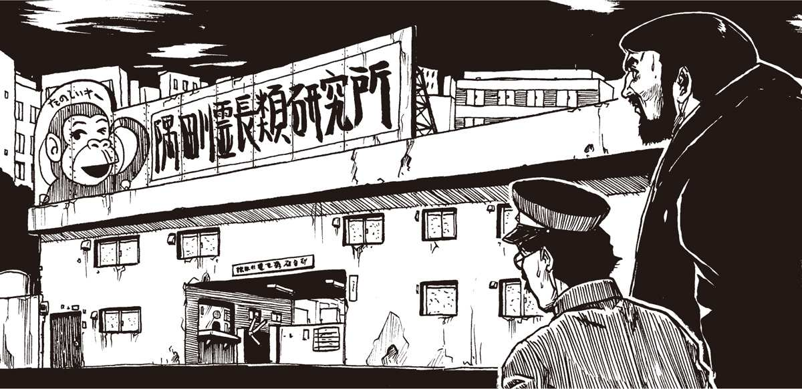
パソコン猿・モモコ
と、事務員が言うが早いか、玄関から黄色い喚声が響いてきた。小学校低学年らしき子供の集団が、教師に引率されてどっと入ってきたのだ。
「わーい、サルぅ、サルぅ、あははははは」
どのガキもけたたましくわめきながら〝見学コース入口〟と書かれた扉に吸い込まれていく。仕方がない。ガキの群れに混じって見学することにした。
チンパンジー、オランウータン、天狗猿といったプレートが書かれているオリの前を、ガキどもにこづかれながら巡回し、〝モモコの部屋〟と書かれた部屋に入らされた。どうやらここは、地元の小学校の定番の見学コースになっているらしかった。
30畳ほどの〝モモコの部屋〟は、中央が厚いガラスに仕切られていて、片方に組み立て椅子が40個ほど置かれ、向こう側には小さい机とパソコンが置かれていた。やがて若い男に手を引かれ、眼鏡をかけたチンパンジーが入ってきた。これがモモコか？ そして引率してきた男は......〈Ｈの助〉だ！
〈Ｈの助〉はガラスのこちら側にいる我々の姿を見て、一瞬ひるんだようだった。が、いきなり営業スマイルを浮かべると、マイクを握った。
「やあみなさん、天才コンピューター猿・モモコの部屋へようこそ！ みんなはチンパンジーがとても頭がいいって知ってるよね。でもモモコは、中でも特別に頭がいいんだ。これからそれを証明しよう。じゃ、モモコのパソコンショーの始まり始まりぃ！」
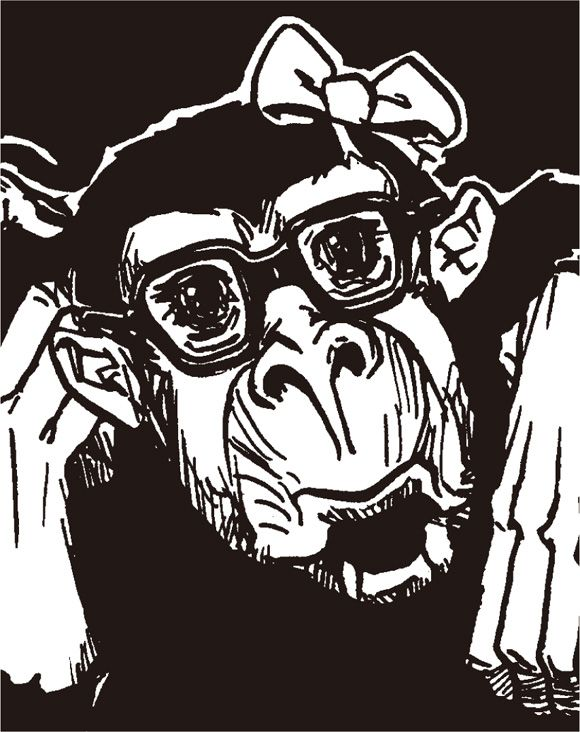
謎の男齋藤の
野望メモ
昨今、電子計算機通信網利用者が激増していることと聞く。すなわちこれ、個人用計算機の急激な値下がり【★122】とそれに伴う加速的な普及が原因かと思われるが、これまっこと良いことなり。しかしながら、何事も利用者の増加は混沌を導くことに繋がり申す。また、通信網の利用者急増により、これまであった通信網上の常識や作法も大きく変わろうとしておるのが現状。ここに旧来の利用者と新たなる利用者の差異が生じ、ある意味さらなる混沌を招き申した。新参者は新たなる掟を独自に作ろうとし、古参者はそれまでの常識・作法を守ろうとする。どちらが良いのかは判断しかねるところ。こうしてはならぬああしてはならぬと、十人十色の意見が渦を巻いておる。如何なるや。こればかりは統一できぬものなり。通信網を多数の使用者が合致した一つの意識とすれば、現在は精神分裂状態と言えようか。現在は通信網内の造反が起きている時とも考えられよう。この造反、秩序的に治まるか。それとも造反し続け崩壊するか。これを決めるのは我々使用者一人一人の意識。この意識が合致する時こそ新たなる秩序が生まれる時。
第52回
今だ！ 〈Ｈの助〉に罠をかけろ！
モモコのショー
ガキどものけたたましい喚声が響き渡った。拍手する奴、足踏みする奴、どさくさにまぎれて余の服に青鼻をこすりつける奴もいた。
ガラスの向こうで〈Ｈの助〉が満面に笑みを浮かべ、サルのモモコをパソコンの前に座らせた。
「さて、良い子のみんな。みんなは、サルがとても頭がいいことを知っているよね。その中でも、チンパンジーは人間の次に頭がいいと言われているんだ。大人のチンパンジーで、だいたい人間の３歳から４歳くらいの知能だと言われています。でも、特に頭のいいチンパンジーは、小学校の低学年、ちょうど君たちくらいの知能を持っていることもあるんだ。ひょっとすると、君たちより頭がいい、かもね」
ガキどもの中から「そんなことないもーん」という声が聞こえてきた。
〈Ｈの助〉がかすかに笑みを浮かべる。
「もちろん、君たちくらい頭のいいサルは特別だし、そういうサルがもっと勉強したら人間の大人より頭がよくなるかといったら、そんなことはありません。でも、サルだからといって馬鹿にするのはよくないよ。人間だって、もとはサルから進化した、サルの一種なんだからね」
そう言うと、〈Ｈの助〉は部屋の隅から巨大なビデオモニターを引いてきた。部屋の照明が徐々に暗くなると、再びあちこちから黄色い喚声が巻き起こった。
モニターの中に写ったフィルムは、ありあわせの道具を用いてチンパンジーが天井近くに吊るされたバナナを取るという、例の有名な実験だった。ビデオが終わって、部屋が明るくなった。〈Ｈの助〉が再びマイクを持ち、話を続ける。
「みんな、これでチンパンジーがどれくらい頭がいいか分かったでしょう。道具を使えるのは人間だけじゃないんだね。それから、言葉だって、チンパンジーは理解できるんだ。もちろんチンパンジーと人間とでは口の構造や、言葉をつかさどる脳の仕組みが違うから、人間の言葉をそのまましゃべることはできません。でも、これはアメリカの実験だけど、身振り手振りで人間とチンパンジーがお話しできることが証明されているんだ......」
〈Ｈの助〉はモモコの肩に手をやると、わざとらしくウインクした。気持ちの悪い奴だ。
「さあて、みなさんお待たせ......。ここにいるモモコだけれど、彼女は今のところ日本一、いや、ひょっとすると世界一、頭のいいサルかもしれません。論より証拠、どなたか、マイクでモモコに呼びかけてみてくれませんか」
客席の横からマイクを持った女性が現われた。
「おや？ さっきの受付の女じゃないか」と、余は齋藤に言った。
「そうでござるな。人手が足りんのでござろう」
受付の女はニッコリ笑うと、一人の女の子にマイクを手渡した。女の子は恥ずかしそうにモジモジしていたが、女に促されると、たどたどしい声でモモコに語りかけた。
「あのお、お名前、は？」
女の子がそう言うと、モモコが向かっているパソコンの画面に、四角や丸、三角などの模様が表示された。それを見るやいなやモモコが猛烈なスピードでキーボードを叩く。と、たちまち客席の側のモニターにモモコの〝返事〟が表示された。
『わたし の なまえ は モモコです』
文字の表示とともに、備えつけのスピーカーから声が聞こえてきた。
「ワタシ ノ ナマエ ハ モモコデス」
たちまち、場内に破裂せんばかりのガキどもの声が響き渡った。つき添いの教師や、齋藤までもが「ほう」と感嘆の声を洩らす。
「音声入力ですな。質問の音声をモニターの記号に変換してモモコに伝えたのでしょう。モモコの答えは合成音です。見事なものですな」
齋藤はモモコの手元にあるキーボードを指し示した。
「ご覧くだされ。キーがすべて丸や三角の記号の形になっております。モモコ用の、特別製のキーボードですな。横にはマウスもあります。この二つを組み合わせれば、かなり複雑な意思表示が可能になります」
呆れて、余は齋藤に言った。
「貴様、本当に信じるのか？ 他愛もない子供ダマシではないか」
「いや、チンパンジーがかなりの言語能力を持つことは、世界中の学者が証明しておりますぞ。手話や記号カードで人間と会話をする報告例を、それがし読んだことがあり申す。それにしても、コンピューターを一種の翻訳装置に利用するとは、〈Ｈの助〉もなかなかのものでござる」
齋藤はすっかり感心している。余は馬鹿馬鹿しくなった。
「廊下で一服しよう」
「え？ まだ実験は続いていますぞ」
「単なるショーではないか。馬鹿馬鹿しい、とにかく出るんだ！」
やむをえぬ事故
部屋の中からは相変わらずクソガキどもの喚声が聞こえてくる。余と齋藤は廊下に出、中ほどのソファに腰を下ろした。
「我々はエテ公のショーを見に来たのではない！ 〈Ｈの助〉と〈やまちち〉の関係を確かめに来たのだぞ！」
齋藤が慌てて余の口に手を当てた。
「シッ！ 聞こえますぞ！」
「誰もおらんわい。とにかくショーが終わるまでここで待機するのだ」
「御意。しかし」
「何だ？」
「〈Ｈの助〉にどう問いかけます？ まさか〈やまちち〉との関係を素直に吐くとは思えませぬが......」
「そりゃそうだ。しかし吐かぬなら吐かせるまで！」
「と、申しますと？」
「鈍い奴じゃのう。ああいうインテリなど、モロイものよ。貴様の腕でちょっとひねれば......」
「そ、それがしに暴力をふるえと？」
「人聞きの悪いことを言うな。例えば〈Ｈの助〉があそこから出てくるよな。そしたら、齋藤が足を滑らせてうっかり転んでしまう。転んだ先に〈Ｈの助〉の身体があろうと、それは事故だよな？」
「わざとらしい事故でござるな」
「貴様の体重はたまたま１５０キロあるので、〈Ｈの助〉は気絶する」
「そう簡単に気絶しますかな」
「気絶しなければ、介抱するふりをして首を軽く締める」
「そんな......ばれますぞ。ショーが終われば子供たちや引率の先生が一緒に出てくるでしょう」
「いや、壁を挟むようにしてやれば大丈夫だ。貴様の巨体が目隠しになるはず」
「うまくいくとはとても......」
「やるのだ！ それで気絶した〈Ｈの助〉を介抱する名目で、外に連れ出せばしめたものだ。我々の部屋に連れ込んで、あとはどうにでもなるわい」
「それがし、気が進みませぬが」
「これ以外に手はない！ とにかくやるのだ！」
齋藤の額から滝のような汗が流れ落ちた。
「し、しかしでござる。も、もし、万が一、〈Ｈの助〉と〈やまちち〉が関係なかったら？ 我々は、拉致監禁、暴行罪に問われて......」
「いいかげんな奴だな。だいたい〈Ｈの助〉と〈やまちち〉の関係をほのめかしたのは齋藤、貴様だろう。今になっておじけづくとは許さんぞ！」
余は〝笛〟を口に当てて凄んだ。齋藤は耳に手を当て、泣きそうな顔で首を振った。
「お、お待ちくだされ！ それがしにいい考えが......」
仕掛け
「何だ、いい考えとは？」
「とにかく〈Ｈの助〉の部屋を見つけることが先決でござる」
余と齋藤は廊下を見回した。
「あ。あれ」
齋藤が柱に案内図があるのを発見した。図によれば、１階の突き当たりがコンピューター室になっている。〈Ｈの助〉の部屋は、恐らくここなのだろう。会場内からはまだ喚声が聞こえている。行くなら今しかない。
余と齋藤は慎重にコンピューター室に入り込んだ。
「閣下。扉のところで見張っていてくだされ」
「何をするのだ」
「〈Ｈの助〉のコンピューターに〈やまちちウイルス〉を仕掛けてみます」
「な、何？」
「ウイルスが発症して、〈Ｈの助〉はどういう行動をとるか？ それいかんで奴の正体がハッキリするかもしれませぬ」
齋藤はすばやく室内を見回した。〈Ｈの助〉の机は探す必要もなかった。一つだけ、ＭＥＣやＩＶＭの最新機種が置いてある机があったからだ。齋藤はすばやくキーボードを操作すると、ＩＶＭ機の中に、〈へっぽこネット〉関連のデータがあるのを発見した。
「恐らくここに......あった！ 〈Ｈの助〉が作ったワクチンプログラムでござる。ほほう......なるほど」
「何か分かったのか」
齋藤は手元のノートパソコンで我々が持ってきたプログラムのデータを表示し、さかんに見比べている。
「やはり怪しいですぞ。このワクチン、我々の手元にあるバージョンとオリジナルとでは、微妙にプログラムの大きさが違います。と、いうことは......」
ふいに廊下が騒がしくなった。ガキどもの声がこちらまで響いてくる。どうやらショーが終わったらしい！
「齋藤、急げ！」
余はドアをそうっと開け、廊下の様子を覗き見た。血相を変えて足早にこちらに向かってくる者がいる。〈Ｈの助〉だ！
「何とか時間稼ぎを！」
「ああ、駄目だ、間に合わない！」
謎の男齋藤の
野望メモ
人間ならずとも動物なればみな、ある種の意志表示をしておるもの。意志とは言えずとも、何らかの形でその心中は体に表れるものなり。だが、人間はこれを容易に読み取ることはできぬ。動物の心中を察せたらとは誰でも一度は思うことなり。昨今、これら願望を電子計算機が実現しつつあると聞く。例えば計算機を通じて猿に話しかけ、その反応を計算機を通して見るという実験があるという。ある意味、人間と猿との会話が、計算機によって実現したという。喜ばしきことか、悲しきことか。動物と話すことができれば、動物の意図するところを誰もが知ることになろう。果たして動物は我々人類をどう思いおろうか。ともあれ、話せはしても多くの動物はこれしょせん獣なり。人間がこれを制御することになろう。そしてあるいは、動物を完全に制御し、思うままに動かすようにもなろう。そして高度なる動物の制御は、動物による高度な作業を実現するやもしれぬ。動物を使った犯罪も行われぬとは断言できぬ。これが拙者の考え過ぎで終われば笑いごと。だが昨今の研究を見ると、どうも単なる笑いごとでは済まされぬ未来が予想できるが、やはり考え過ぎであろうか。
第53回
〈Ｈの助〉はやはり〈やまちち〉か!?
廊下の足音
「急げ齋藤！ こっちに来る！」
ドアの隙間から廊下をチラチラと見やりながら、余は齋藤に向かって小声で叫んだ。齋藤は阿修羅のような形相で、必死にパソコンに向かっているが、焦ってうまくキーボードが叩けない。
「間に合いませぬ！」
廊下の足音が大きくなってくる。もはやこれまでか。余は天を仰いだ。もうすぐこの部屋に〈Ｈの助〉が入ってくる。そして余と齋藤があいつのパソコンをいじっている光景を見るだろう。さてどうやって言い訳をすればいいのだ。
「ん？」
足音が止まった。
余は再びドアの隙間からそっと廊下の様子を伺った。
〈Ｈの助〉が、こちらに背を向けて何かを耳に当てている。どうやら携帯電話らしい。いったい奴はどこに電話しているのか？
（まさか、〈やまちち〉じゃないだろうな？）
そう思って、余はぞっとした。これまでの状況から考えると、〈Ｈの助〉が〈やまちち〉と通じている可能性は極めて高い。いや、〈Ｈの助〉本人が〈やまちち〉である可能性すらあるのだ。もしあいつが〈やまちち〉だとしたら、どこに電話をしているのだろう。仲間か、部下だろうか。いずれにしてもここにあいつの仲間が現われたらますますまずいことになるだろう。
〈Ｈの助〉は、時おりこちらをチラリと振り返りながら、まだ電話を続けている。
「終了しました！」
齋藤が額の汗を拭いながらこちらにやってきた。
「〈Ｈの助〉は？」
「どこかに電話をしている最中だ。仲間を呼んでいるのだとしたら、まずいぞ」
「うう。そうですな。ひとまず退散しますか？」
「そうだな......おや？」
いきなりバタンと音がして、ドアが閉まった。
「あわわわ！」
いつの間にか、そっと忍び寄った〈Ｈの助〉が、外側からドアを閉めたのだ。齋藤が叫んだ。
「し、しまった！」
「シャレを言っとる場合か！」
慌てて開けようとしたが、ビクとも動かぬ。外側からカギをかけたのだろう。旧式のカギなので、こちらからは開けられぬ。何という失態だ。
「〈Ｈの助〉め、仲間が来るまで我々を閉じ込めるつもりだな」
「まさか、〈やまちち〉を呼ぶのでは？」
「さあな。〈Ｈの助〉本人が〈やまちち〉かもしれぬ。いずれにしても、ヤバイぞ」
余は窓に駆け寄った。こうなったら、窓から逃げるしか......。
「おわ！」
窓の外で黒山のような生き物がのっそりと動いた。齋藤も駆け寄ってきて、悲鳴を上げた。
「ゴ、ゴリラでござる」
「見れば分かるわい！」
ピンチ
窓の外は、そのままゴリラのオリに直結していたのだ。よく見ると窓には鉄格子がかけられ、電車の窓のように途中までしか開かない造りになっている。
「脱出は不可能だな！」
「まるで絵に描いたようなピンチでござる！」
こうなったら仕方がない。〈Ｈの助〉が誰を呼んだかは知らないが、ドアが開いた時がチャンスだ。暴れるだけ暴れて突破口を聞き、今日のところは逃げるしかないだろう。なあに、こちらには齋藤がついているのだ。ゴリラには勝てないだろうが、人間の２、３人、齋藤の糞力なら何とかなるだろう。
余は半分ヤケクソな気分になり、〈Ｈの助〉の椅子に腰を下ろして齋藤に言った。
「まあ、慌てても仕方がない。もし〈やまちち〉がここに来るのなら、それはそれでチャンスではないか」
「ぎ、御意」
「ところで齋藤、〈Ｈの助〉のパソコンを見て、何か分かったか」
「御意。それがしの思った通り、やはりワクチンに見せかけた〈やまちちウイルス〉の作成者は〈Ｈの助〉でござった」
「ほう、やはり」
「先ほども申しましたが、〈Ｈの助〉の作成したと思われるオリジナルのワクチンプログラムには、何の問題もありませんでした。〈Ｈの助〉が〈へっぽこネット〉に持ち込んできたワクチンにのみ、真の〈やまちちウイルス〉が発症するトリガー【★123】が仕込まれていたのでござる」
「思った通りか」
「御意。〈Ｈの助〉が持ち込んだワクチンと、ここにあるワクチンとでは、プログラム容量が微妙に違います。〈Ｈの助〉が〈へっぽこ〉にアップしようとしていたワクチンの方が、少しだけ量が増えている......。つまり、増えた部分がトリガーなのでしょう」
「なるほど。要するに最初に〈へっぽこ〉にアップされた〈やまちちウイルス〉は、それだけでは無害だったが、そのワクチンがトリガーとなって真の狂暴性を発揮する仕組みなわけか。何とも巧妙じゃのう」
「悪魔的に巧妙でござる」
やはり〈Ｈの助〉は......
説明を聞いて、余はハッキリと思った。やはり〈Ｈの助〉こそは〈やまちち〉ではないのか？ どう考えても、一連のプログラムを作ったのは〈Ｈの助〉だ。また〈Ｈの助〉の経歴から考えても、〈やまちち〉の正体は〈Ｈの助〉と考えるのが自然だと思う。それくらい、〈Ｈの助〉はプログラマーとして華麗な経歴を持っているのだ。考えれば考えるほどそう思えてきた。気を取り直して、余は齋藤に言った。
「仕掛けはうまくいったのか」
「バッチリで。〈Ｈの助〉のパソコンに〈やまちちウイルス〉を仕掛け申した。パソコンを起動した瞬間にウイルスが発現するはずでござる。そうなったら通常の操作を受けつけなくなり申すから、いったんリセットして、ワクチンの入ったフロッピーを挿入して立ち上げるはずでござる」
「ふむ、ふむ」
「当然〈Ｈの助〉も、万一を考えてすぐ取り出せる場所にワクチン入りのフロッピーを用意しておるはず。それを探すのに手間どっていたわけですが、ありました。机の上に何気なく置いてあり申したよ。これです」
そう言って齋藤は、２枚のフロッピーを指し示した。１枚には〝やまちち撃退ワクチン〟と記されている。もう１枚には何も書かれていない。
「ラベルがついているやつの中を調べてみたら、確かにワクチンが入っていました。しかし、これは〝危険な〟ワクチンの方でござった」
「〈へっぽこ〉に持ち込んだのと同じものだな」
「御意。それでおかしいと思い、もう１枚の無記名のフロッピーを調べると、案の定、こちらが〝安全な〟ワクチンでござった。そこで、それがし一計を案じ申した。この二つの中身を入れ替えたのでござる」
余は膝を打った。
「なるほど、つまり、どちらのフロッピーを〈Ｈの助〉が使うかで、動かぬ証拠ができるわけか」
「御意。〈やまちちウイルス〉がモニターに現われて、まっ先に無記名のフロッピーを使おうとしたら、これは怪しいことになりますぞ」
「〈Ｈの助〉を問い詰めるきっかけができるな。なるほど！」

覚悟
ふいに、ドア越しに廊下をバタバタとこちらに走ってくる音が聞こえてきた。どうやら数人いるようだ。余と齋藤は緊張して見合った。
「どうなされます。ドアが開いた瞬間に逃げまするか」
「いや、最初は余もそう思ったが、覚悟を決めたぞ」
「と言うと？」
「せっかくトリックを仕掛けたのだ。最後まで見届けようではないか。捕まったふりをして、〈Ｈの助〉の様子を観察するのだ」
「しかし、どのような目にあわされるか」
「なあに、齋藤、いざとなったら思い切り暴れてくれ。貴様が本気を出せば、相手が５、６人いようとものの数ではあるまい？」
「ぎ、御意......」
ガチャガチャとカギを回す音が聞こえた。余と齋藤は緊張して身構えた。ドアが開き、険しい表情の〈Ｈの助〉が現われた。
「何しに来たかは知らないが、馬鹿な奴らだ。もう、逃がさないぞ！」
負けずに、余も叫んだ。
「ふん。それはこっちの台詞だ。貴様が〈やまちち〉だということはすべてお見通しだ。慌てて部下を呼んだようだが......」
〈Ｈの助〉の表情が蒼白になった。明らかに〈やまちち〉と呼ばれて動揺しているのだ。
「おれが〈やまちち〉？ 部下を呼んだ？ な、何を言って......」
いきなり〈Ｈの助〉を押し退けるように、背後から見知った顔が現われた。
「もう逃がさんぞ〈たけぴょん〉いや〈くまぴょん〉！」
その顔を見て、余は仰天した。
「ゆ、〈夕焼け級長〉！」
〈Ｈの助〉が電話をしていたのは部下ではなく、〈級長〉たちだったのだ。背後をよく見ると〈煽情の狼〉や〈うさちゃん１号〉までいる。
余と齋藤は、〈級長〉たちに完全に取り囲まれてしまった。〈級長〉も、〈うさちゃん１号〉も、その目は怒りで燃えている。〈級長〉が叫んだ。
「さあ、すべてを白状してもらおうか。〈やまちち〉の正体は貴様だろう、〈くまぴょん〉！」
謎の男齋藤の
野望メモ
大なる野望を実現せんとする者は、対立する組織のせん滅を考えるもの。戦国時代には、草と呼ばれる忍者が存在したという。一つの巨大組織を内部から崩壊させんとする陰謀なり。あるいは陰陽師により敵方の首領を呪い殺そうとする時代もあり申した。今聞けば卑怯な手とも思えるものの、何が何でも敵を倒して野望を実現せんとする者には、なくてはならぬ戦術とも言えよう。時代が変わって高技術時代となった今も、人が考えることは昔と同じ。誰かを陥れるための策略、また陥れられる者たち。竹熊閣下が直面された出来事も、まさにそういった人間と人間とのぶつかり合い。お、少々話が暗くなり申したな。ともあれ何がおもしろいのかと問われれば、これすなわち人間と人間との関係に尽き申す。計算機使用者は人間味がないなどと聞いたふうな台詞を抜かす輩もあるようだが、計算機の向こうに見えるのはやはり人間そのもの。昨今の相互通信網流行を支えているのも、その機構ではなく、その機構から読み取ることができる人間そのもののおもしろさなり。単に機械やら装置やらがおもしろくて、計算機文化がここまで発展し得たであろうか。
第54回
ついに墓穴を掘るか？ 〈Ｈの助〉!!
オールスター
沈黙の中で、〈夕焼け級長〉、〈うさちゃん１号〉、〈煽情の狼〉ら〈へっぽこネット〉のシスオペ、サブシスのオールスターが勢ぞろいし、余と齋藤を睨みつけている。
全員、わなわなと肩を震わせている。〈級長〉は、眉を吊り上げて余に向かって言った。
「いいかげんに白状するんだ〈くまぴょん〉！ 一連の〈やまちち〉騒動の犯人はお前だろう？」
〈うさちゃん１号〉も、あまりの怒りのせいか涙声になって叫ぶ。
「鬼！ 悪魔！ あんたのせいで〈へっぽこネット〉はメチャクチャだわ！」
「余のせいではない！」
「じゃあ、誰の仕業だというの？ こんな恐ろしいことするの、あんた以外にいるわけないじゃない！」
余は〈級長〉の背後にいる〈Ｈの助〉を睨んだ。犯人はあいつだ。それは間違いない。しかし、〈級長〉たちにそれをどうやって説明すればいい？
〈Ｈの助〉は、余と齋藤の逃走を阻止するようにドアに背中を向けて立っていた。〈級長〉たちは気がつかないようだが、まるで勝ち誇ったような薄笑いを浮かべている。おのれ......。余は腹の底から怒りがこみ上げ、〈Ｈの助〉を指差して叫んだ。
「真犯人は......〈Ｈの助〉、あんただ！」
〈級長〉たちはキョトンとした顔になった。しかし、余は〈Ｈの助〉の表情が一瞬強ばったのを見逃さなかった。
「一連の〈やまちち〉事件の真犯人は〈Ｈの助〉だ！ こいつは〈へっぽこネット〉のシステム責任者の立場を悪用し、〈やまちちウイルス〉をネットにアップした。そうして余と齋藤にすべての責任をなすりつけたのだ！」
「だ、黙れ！」と、怒鳴ったのは〈級長〉だった。
「〈Ｈの助〉は僕と10年来の友達だ。そんなことする奴じゃないことくらい分かっているよ。いいかげんなことを言うな！」
「し、しかし、では一連のハック事件をどうやって説明する？」
「ハックの手口なんていくらでもある。必ず白状させるぞ〈くまぴょん〉！」
ふいに、〈Ｈの助〉がゲラゲラと笑い出した。
「ははは。語るに落ちたね、〈くまぴょん〉君。君は、確か〈くまぴょん〉として〈へっぽこ〉を除名され、その後〈たけぴょん〉として再入会したけど、これも除名されたよね。以後はアクセスできていないはずだ。それなのに、その後の〈へっぽこ〉の内情に実に詳しいねえ。どうしてかな」
〈級長〉が言葉を受け取って言った。
「そうだ。ハックでもしない限り、〈へっぽこ〉のことなんて分からんはずだ。やはりお前ら......」
余は焦った。〈へっぽこ〉に潜り込んでいたのは確かにその通りだ。しかし、そのことを言えば、立場がますます悪くなる......。
余の苦境を察してか、齋藤が口を開いた。
「わはは。そんなことでござるか。もちろん、閣下、いや竹熊殿もそれがしもハックなどしてはいませぬ。しかし〈へっぽこ〉の事件がほかのネットでも話題になっていることくらい、〈級長〉もご存知でござろう？ 別にハックなどせずとも、〈へっぽこ〉の内情くらい分かり申す」
余がそれを受け、「そ、そうだ。〈大日本ＶＡＮ〉で聞いたんだよ。それで、余に濡れ衣が着せられているのを知ったのだ」。
白状
齋藤が深く頷き、続けて〈級長〉に問い掛けた。
「それよりも〈級長〉殿。〈へっぽこ〉では確か、ハック防止策としてコールバック方式を採用したとのことでござるな。しかし、そのセキュリティすら破られたとか。これをどうやって説明する気でござる？ 内部犯行......それもシステムを直接いじれる立場の者以外にそういうことができますか？ できるとすれば、〈級長〉殿か〈Ｈの助〉しかいないではござらんか！」
「何かやり方があったはずだ。そうだろう〈Ｈの助〉？」
〈級長〉が〈Ｈの助〉に同意を促した。〈Ｈの助〉は深く頷いて、言った。
「どうやったかは分からないけど、必ずハックする方法はあると思うよ。ましてや〈やまちち〉が背後にいるのなら......」
〈級長〉は余の目を睨みつけ決意を促すように言った。
「そうだ。こいつらの背後にはあの〈やまちち〉がいるんだからな。いや、こいつらが〈やまちち〉なのかもしれない。......時間はある。ゆっくり白状してもらうとしようか」
「白状も何も、犯人は〈Ｈの助〉だ。それ以外に言うことはない！」
それまで横で聞いていた〈煽情の狼〉が、耐え切れなくなったように叫んだ。
「盗っ人たけだけしいにも程があるぞ！ 〈Ｈの助〉が犯人だという証拠でもあるのか？」
「あ、ある！」
「ほう。どんな証拠だ？ いいかげんなことを言うと許さんぞ。状況証拠ではなく、物証がなければな！」
今度は齋藤が答えた。
「〈やまちちウイルス〉騒ぎの後、〈Ｈの助〉がワクチンを作成したそうでござるな。そのワクチンを調べてみたらいかがで？」
〈級長〉が怪訝な顔になった。
「〈Ｈの助〉のワクチンを？ どういう意味だ？」
「聞いた話でござるが、今度の〈やまちちウイルス〉は派手な外見の割に、データを壊すことはない、おとなしいウイルスだったそうですな」
「うむ。確かにそうだった。みんなで不思議がったほどだ。これが本当にあの〈やまちち〉のウイルスなのかって......」
「ところで、以前〈ＰＣサーブ〉が崩壊した時、確か〈やまちちウイルス〉は、フリーウェアとして提供されたワクチンソフトの中に入っていたとか......」
ふいに〈Ｈの助〉が言葉をさえぎった。
「お前ら何が言いたいんだ？ ぼ、僕の作ったワクチンがウイルス本体だと？ ば、馬鹿馬鹿しい」
「それは調べれば分かることで」
〈Ｈの助〉が明らかに狼狽したのを見て、余と齋藤は顔を見合わせてニヤニヤした。〈Ｈの助〉が叫んだ。
「ふざけるな。だ、だいたい、ワクチンに問題があったら、それこそ僕が疑われるじゃないか。ぼ、僕がだよ、万一犯人だとして、そんなことするはずが......」
「そこが犯人の賢いところですな。というのは、ここ数ヵ月の〈へっぽこ〉は、どんなにセキュリティをしっかりしても、必ず謎のハッカーに破られていましたからな。仮にワクチンがウイルスだったとしても、そのハッカーに〝すり替えられた〟と主張すれば、誰も不思議に思わないムードができている。何とも手の込んだことをするものですな」
余は快哉を叫んだ。齋藤はうまい持っていき方をする。まだ問題のワクチンはネットに登録されていないから、もし、この場でワクチンを調べてウイルスだったと判明すれば、〈Ｈの助〉は反論できないだろう。うふふふ、〈Ｈの助〉め、我々をやり込めようと〈級長〉たちを呼んで、反対に墓穴を掘ったな。
潔白の証明
余は勝ち誇って〈Ｈの助〉に言った。
「おい〈Ｈの助〉、もし貴様が潔白なら、貴様の作ったワクチンをこの場で試してみろよ。何も問題ないはずだよな、オイ！」
図星だったのだろう。〈Ｈの助〉の額に一筋、汗が流れたのを余は見逃さなかった。これで、〈Ｈの助〉は〈級長〉たちの目の前で潔白を証明する以外なくなった。
「おい〈Ｈの助〉、お前、潔白なんだろう？ だったらこの場でそれを証明したらどうなんだ？」
「もちろん潔白さ。お前ら、本当に馬鹿だな。証明してみせるよ」
〈Ｈの助〉は机の上にあるワクチン入った２枚のフロッピーのうち、安全な方を使用してこの場を取り繕う気だろう。しかし、そうはさせない。2枚のフロッピーは、先ほど齋藤がすり替えているからだ。このまま〈Ｈの助〉がマシンを立ち上げれば......。
その時〈級長〉が叫んだ。
「ちょっと待て！ やはり〈くまぴょん〉の言ってることはおかしい。何であんたは〈Ｈの助〉のワクチンのことを知っている？」
「そうよ、だってまだネットにもアップされていないのよ！ そんなこと知っているなんておかしいわ！」
罵声が飛びかい、一転、余は窮地に陥った。そ、そういえばそうだ。余は〈へっぽこネット〉の本部に忍び込んで〈Ｈの助〉のワクチンの存在を知ったのだった。しかし、これを言ってはおしまいだ。困った......。
齋藤が助け舟を出した。
「もちろん、それを確かめにこの研究所に来たのでござる。まことに失礼ながら、先ほど〈Ｈの助〉殿のハードディスク内にあるワクチンを調べさせていただき申した」
「うわああ！ 何てことを！」
〈Ｈの助〉が自分のマシンに駆け寄り、電源を入れた。
「他人のマシンを勝手にいじるなんて......訴えるぞ！」
「どうぞご勝手に。〈Ｈの助〉殿の作られたワクチン、確かに優秀でござったが、少しおかしいところが」
「そ、そんなこと信用できるか！ あ？ ああ......」
いきなり画面に〈やまちちウイルス〉が現われた。もちろん、先に齋藤が仕掛けておいたやつである。
〈Ｈの助〉は驚愕し、机の上に置いてある〝無記名の〟フロッピーを挿入しようとした。余と齋藤は目と目を交わして頷いた。これで間違いない！ 齋藤が叫んだ。
「〈Ｈの助〉殿！ 何ゆえそのフロッピーを使われる？ どうしてその横の〝やまちち撃退ワクチン〟と書かれたフロッピーを使わないので？」
〈Ｈの助〉の手が止まった。
「な、何？」
謎の男齋藤の
野望メモ
昨今、計算機通信網への接続速度【★124】も高まり申した。それがしが通信網へ接続し始めたのが十余年前。当時は秒間三百微渡【★125】の速度であり、最先端なる模出無でも秒間一千二百微渡。徐々に端末に現れる文字は、目で追いながら読めるほどの速度でござった。それから数年経つと、これが倍の秒間二千四百微渡になり、各種の圧縮通信手順【★126】が現れ、その体感速度は階段を段抜かしで上るが如く、急激に上がり申した。さらに 暫くすると、この速度が一気に秒間九千六百微渡となり、さらには秒間一万四千四百微渡となり、間もなく秒間二万八千八百微渡となり申した。最近では元日本電話電信公社であった企業が、愛得素泥得ぬというはいからなる回線を提供し、計算機を接続すれば秒間三万八千四百微渡から秒間六万四千微渡の速度にて、情報の受け渡しができるようになった次第。とは言え、我々が扱う情報量も増え、秒間九千六百微渡時代とさほど変わりなく感じられるもの。これでもまだ足りぬと感ずる。この先我らは如何なる大きさの情報を扱うようになるか。それは受け渡しできるようになるか。興味深き所存。
第55回
ついに感染！ 〈Ｈの助〉がゴリラに？
入れ替え
フロッピーを持つ〈Ｈの助〉の手がピタリと止まった。
「ど、どういう意味かな？」
齋藤がもう一度、先ほどの発言を繰り返した。
「〝やまちち撃退ウイルス〟と書かれたワクチンは、ほれ、その横にあるではござらんか。それを使わずに、どうして無記名のフロッピーを使われるので？」
〈Ｈの助〉が答えた。
「い、いや、これはつまり、単なるバックアップディスクだ。それがどうかしたのかい」
「本当に、ただのバックアップでござるか？」
〈Ｈの助〉の手が小刻みに震え始めるのを、余も齋藤も見逃さなかった。
「な、何が言いたいんだ！」
「まことに失礼でござるが、机の上のフロッピーも調べさせていただいたのでござる。その２枚のフロッピー、同じプログラムのはずなのに何十バイトか容量が遠いまするな。ラベルがある方が、容量が多い。これはどういうことで？」
〈Ｈの助〉がひきつった笑みを浮かべて言った。
「バージョンが違うんだ」
「ほう。バージョン違いでござるか。それを聞いて安心し申した」
「ふん！」
〈Ｈの助〉が眉を吊り上げてディスクをマシンに挿入しようとしたまさにその時。齋藤が強い調子で叫んだ。
「ちょっと待たれよ！」
「な、何だよ」
「もし、その２枚の中身をそれがしが入れ替え......」
「な、何ィ？」
挿入しかけていたディスクを、〈Ｈの助〉は慌てて引き抜いた。
「ふざけた真似を！」
そう言って、もう１枚のディスクを手に持つ〈Ｈの助〉。だが、齋藤が続けて言った言葉で、再び動きが凍りつく。
「......たかもしれませぬし、入れ替えなかったかもしれませぬ」
「お、おちょくってるのか？」
「これは失礼。いや最近寝不足のせいか記憶力が減退しておりまして」
余は齋藤の駆け引きに感心していた。〈Ｈの助〉をぐいぐい追い詰めている。余の前では借りてきた猫のようにおとなしいが、齋藤にこのような一面があるとは知らなかったぞ。〈Ｈの助〉が混乱して叫んだ。
「どっちなんだ？ 入れ替えたのか、入れ替えなかったのか？」
「どちらでもよいでござろう。フロッピーを挿入すれば分かるはず。ほれ、早くしないと、マシンがハングアップしたままですぞ」
〈Ｈの助〉の額から玉のような脂汗がに惨み出てきた。周囲では〈夕焼け級長〉らが固唾を飲んで見守っている。様子が明らかに奇妙に思えたのか、〈級長〉が声をかけた。
「どうしたんだ？ 顔が真っ青だぞ」
齋藤が言った。
「たった数十バイトの差がよほど問題みたいですな」
〈Ｈの助〉が声を震わせる。
「あ、当たり前だ！ 最初のバージョンにはちょっとしたバグがあったんだ」
「ほう、バグ。まさかそれは破壊的なバグではないでしょうな。例えば、マシンを物理的に壊すとか」
コピーディスク
〈Ｈの助〉はほとんど脅えたような目で余と齋藤を見つめると、〈級長〉に言った。
「き、〈級長〉、た、助けてくれ。この連中、おれのディスクに何かとんでもない悪戯を......」
ふいに、後ろで〈煽情の狼〉が素頓狂な声を上げた。
「あ、そういえば！」
〈煽情の狼〉は、そのままショルダーバッグに手を入れると、１枚のフロッピーディスクを取り出した。
「〈Ｈの助〉、安心しろ。そういえば、昨日お前が〈へっぽこネット〉本部にワクチンを持ってきた時、その場で自分用にコピーしていたのを忘れていたよ」
そういって、そのままコピーしたディスクを〈Ｈの助〉に手渡した。
「これなら安心だろう、使え」
〈Ｈの助〉はほとんど恐怖にひきつった表情で、〈煽情の狼〉からフロッピーを受け取った。
余は心で快哉を叫んだ。策士策に溺れるとはまさにこのこと。〈Ｈの助〉の本番用ワクチンソフトをコピーしたということは、それは即〈やまちちウイルス〉にほかならない。しかも、事ここにいたっては、〈Ｈの助〉はそれを使わないわけにはいかない。おろかなり〈Ｈの助〉！
〈Ｈの助〉の手は露骨に震えていた。恐る恐るフロッピーを挿入すると、リセットボタンを押す。一瞬画面が暗くなり、マシンがフロッピーを読み込み始めた。
〝やまちち撃退ワクチン〟が立ち上がった。ウイルスの存在が表示され、自動的に〝治療〟が開始される。そして治療終了のサインが出たとたん、〈Ｈの助〉は目を固く閉じて机につっぷした。
「そうはさせませぬぞ！」
齋藤が背後から〈Ｈの助〉をはがいじめにし、左手で顔を上げさせ、右手で無理矢理マブタを開かせる。
「さあ、よく見るのでござる！」
〈級長〉たちがいきり立った。
「な、何をする？ 乱暴はよせ！」
〈級長〉が齋藤を引き離そうとする。が、〝治療〟が完了したはずのマシンの画面に、再び〝やまちちウイルス〟が表示され始めたのを見て、〈級長〉の動きが一瞬止まった。
「な、何だ？」
齋藤が大声で〈級長〉らを制止した。
「危ない！ 画面を見るな！ 目を閉じなされ！」
スリーパーホールド
無限に近い時聞が流れたように思えた。が、実はほんの一瞬だったのかもしれぬ。
始め、〈Ｈの助〉は齋藤の万力のような腕から逃れようと必死でもがいていた。が、しばらくすると抵抗が止まり、不気味な沈黙が......。
「な、何が起こったの？ こ、恐い！」
たまらず〈うさちゃん１号〉が泣き声を上げた。
その瞬間である。地底の底から響くような野獣の唸り声が聞こえた。隣の部屋のオリにいるゴリラだろうか？ 違う。〈Ｈの助〉が唸っているのだ！
豪音が響いた。いきなり、何か非常に重い物が、部屋の壁に叩きつけられたのだ。
「ど、どうした？」
全員、顔を上げ、ギョッとした。叩きつけられたのは〈Ｈの助〉ではなく、体重１５０キロの齋藤だったのだ。その齋藤の巨体がコンクリの壁に半分めり込んでいるではないか！
「きゃああああーーー!!」
〈うさちゃん１号〉の悲鳴が上がった。〈Ｈの助〉は、〈Ｈの助〉であって、もはや〈Ｈの助〉ではなかった。机の上に乗って髪を振り乱し、奇妙な唸りを上げて、21インチのディスプレイを持ち上げて、こちらに投げつけようとしている。
「危ない！」
〈級長〉の顔の横30センチほどの壁にディスプレイが叩きつけられた。パリンと凄い音を立てブラウン管が、砕け散った。まるで獣人だ。
あまりの事態に、〈級長〉も〈狼〉も〈うさちゃん〉も呆然としている。今度は〈Ｈの助〉が机の上のハードディスクやＭＯドライブを投げ始めた。余も〈級長〉もたまらずソファの裏に逃げ込んだ。
恐る恐る首を出す。〈Ｈの助〉が唸りながら自分の胸を叩いている。ゴリラと同一化しているのか？ あわわ、飛んだ。〈Ｈの助〉が跳躍して、まさにこちらに飛びかかってくる！
「ちんぴょろほしぇーーー！」
その時、齋藤が気合いもろとも自分の身体を壁から引き抜くと、全身からコンクリの粉をまき散らしながら、宙を飛ぶ〈Ｈの助〉の脇腹に掌底を見舞った。その衝撃でバランスを崩し、〈Ｈの助〉の身体が横の本棚に激突した。
「ちんぴょろほしぇーーー!!」
齋藤は、そのまま〈Ｈの助〉の身体にのしかかると、電柱のような腕を奴の首に回し、強烈なスリーパーホールドをかました。〈Ｈの助〉はしばらくもがいていたが、やがてピクピクと痙攣を始め、ガックリとうなじを垂れた。
自業自得
「こ、殺したのか？」
と、余は齋藤に問うた。
「まさか。眠らせただけでござる」
「い、いったい何がどうなっているんだ？」
〈級長〉がこわごわソファの陰から身を出した。ほかの二人もすっかり脅え切っている。
「あの温厚な〈Ｈの助〉が......」
そう〈級長〉が呟くと、齋藤が力強く言い放った。
「これが真実の〈やまちちウイルス〉の作用でござる！」
「え？」
「先日〈へっぽこ〉にアップされたウイルスは、ダミーに過ぎませぬ。そのダミーウイルスと〈Ｈの助〉のワクチンが合体した時、真の〈やまちちウイルス〉が発現するのでござる」
「こ、これがウイルスだって？ そんな馬鹿な......」
「真の〈やまちちウイルス〉は、その強力なるサプリミナル作用により、人間をケダモノの如く変えてしまうのでござる」
「信じられん......」
「それがしも信じられませぬ。しかし、現に〈Ｈの助〉殿はこうなった。もっとも自分の作ったウイルスにやられたわけですから、自業自得とも言えますが」
「どうして〈Ｈの助〉が......？」
「......もうじき目を覚ましますぞ」
〈Ｈの助〉の身体が、ピクリと動いた。

謎の男齋藤の
野望メモ
今回の経緯、十年来の信頼関係を持つ〈級長〉とその友、ここに裏切りが生じ、絆が破綻し申した。これが通信網運営者の組織にとっては裏切り行為であり、その裏切りが組織に与える影響はまさに大。小さな裏切りが組織全体を崩壊させる兆しさえ見え申す。まさに獅子身中の虫。これと同じようなことが計算機にも言え申す。全体がうまく動くためには細部が整っておる必要があり、細部が狂えば全体が狂い、さらには機構全体が崩壊する理屈。それがしも先ほど、たった一つの常駐柔軟を組み込んだところ、計算機の機構柔軟全体がお釈迦になり申した。電子計算機のように強力で洗練された仕組みを持つ装置であっても、たった一つの間違い不都合によって、かくも脆く崩れゆくものかと、まったく改めて思い知った。盲点は、それが洗練されておるという点か？ 無駄がないことすなわち、すべての要素に万全が求められるということなり。この理屈は現実社会にも言い得て妙。整然と無駄なく動く組織ほど、それを構成する要素の一部分が壊れると、簡単に崩壊してしまう。潔癖さ完璧さを求め過ぎるのも、もしや危険なことなのかもしれぬ。
第56回
〈Ｈの助〉は単なる鉄砲玉？ その裏には？
覚醒
〈Ｈの助〉の瞳がパッチリと開いた。
「う、うわああああ！」
〈Ｈの助〉は身悶えし、ヨロヨロと立ち上がった。
「痛つつつ......！」
そのままよろめきながら、ドアの方に向かおうとしたが、たちまち苦悶に顔をしかめ、へたり込んでしまった。
齋藤が、余に勝ち誇った笑顔を向けた。
「限界を超えた運動をしたばかりでござる。もはや、歩く気力も残ってはいないでしょう」
その時、ドアが開いて悲鳴が上がった。霊長類研究所の女事務員が騒ぎを聞きつけて入ってきたのだ。
「佐藤さん！ どうしたの？ 佐藤さん！」
佐藤さん？ ああ、〈Ｈの助〉の本名か。
「あ、あなたたち誰？ 佐藤さんに何をしたの？」
事務員は半分パニックになっていた。無理もない、つい今しがたまでこの部屋でゴジラ対ガメラのような死闘が繰り広げられていたのだ。本棚は倒れ、壁には齋藤の形に穴まで開いているのだから。
「警察を呼ぶわよ！」
余は慌てて言った。
「いや、もう大丈夫ですよ」
「何が大丈夫なの？ 佐藤さんをこんな目にあわせて」
事務員は、机の電話に手を伸ばした。まずい。いま、瞥察を呼ばれたらややこしいことになる。
......余は足下を見た。電話線の差し込みプラグがある。引き抜こうか、どうしようか。余が迷っている間に、女事務員が受話器を持ち上げた。
その時であった。
「待て......」
〈Ｈの助〉が弱々しい声で事務員を制止した。
「佐藤さん......」
「いいんだ。警察は呼ばんでくれ。なに、たいしたことはないさ」
〈Ｈの助〉はようやく立ち上がると、ソファに腰掛け、再び事務員に声をかけた。
「すまないけど、席を外してくれないか。この人たちと、もう少し話がある......すぐ終わるから」
納得のいかない表情で、女事務員は出ていった。
謝罪
「さて、と」
〈Ｈの助〉は大きく深呼吸をすると、〈級長〉たちの方向を向いて力なく笑った。
「許してくれ......と言っても、もう許してはくれんだろうな」
その言葉を聞いて、〈級長〉が目を見開いた。
「す、するとやはり......」
「そうだ」
〈Ｈの助〉は余と齋藤をチラリと見て、言った。
「この二人の言う通りさ。〈くまぴょん〉君の名を騙ってハック行為を繰り返したのも僕だし、〈やまちちウイルス〉をネットにばらまこうとしたのも僕だ」
〈うさちゃん１号〉が泣きそうな声で叫んだ。
「何てこと！ あなた、それでも人間なの？」
「この期に及んで言い訳はしないよ。何とでも言ってくれ」
〈煽情の狼〉は、口を真一文字に結んで天井を睨んでいる。
〈級長〉がガックリと肩を落とし、力なく言った。
「君ほどのネットワーカーが......残念だよ」
「すまない、〈級長〉。僕はどうかしていたんだ。魔が差したとしか言いようがない。裁判を起こすなら、それでもいい。甘んじて受けるよ」
「いや......。少なくともウイルスに関しては、一般会員には実害がなかった。僕個人としては訴訟を起こすつもりはないよ。しかし、君のハック行為で多数の人間が迷惑したのは事実だから、会員は除名する」
「当然だ。そうしてくれ」
「それから、〈くまぴょん〉君にも謝りたまえ。君の行為のおかげで、僕たちも彼を疑っていた」
〈Ｈの助〉が余に深々と頭を下げた。
「長い間、君のハンドルを偽ってすまなかった。この償いは一生かけてもする。どうか、許してください」
償い？ どうやって償うんじゃ。謝って済む問題かワレ！......と、いつもの余であれば啖呵を切るところだ。だが、こうもあっさりと謝られては、啖呵の切りようがない。
余の心にはモヤモヤと霧がかかっていた。事件はいままさに解決されようとしている。が、どうもすっきりしない。このモヤモヤは何だ。
余は齋藤を見た。齋藤は、自前のノートパソコンに〈Ｈの助〉のフロッピーを差し込んで、何やらカチャカチャやっている。こんな時に、何をやっているんだ？
重大な疑問
余は、ふと重大な疑問を忘れていたことに気がついた。
「〈Ｈの助〉、ちょっと聞きたいことがあるんだが」
「何だい？ 何でも聞いてくれ」
「〈やまちち〉はあんたなのか？」
とたんに、室内にぎょっとした空気が張り詰めた。〈級長〉も、思わず後ずさりして〈Ｈの助〉に問いただした。
「そ、そうだ。それを聞くのを忘れていた。〈Ｈの助〉、どうなんだ？」
〈Ｈの助〉はしばらく沈黙していた。額から脂汗が流れ落ちている。彼は掌で汗を拭うと、作り笑顔を浮かべて言った。
「僕ではない」
「......ではない？ ということは、〈やまちち〉は別に存在するのか」
〈級長〉が重ねて問いただす。〈Ｈの助〉の表情から作り笑いが消えた。
「いや。今回の出来事は、全部、僕がやったことだ......〈やまちち〉とは最初から関係ないよ」
「で、では、どうして〈やまちち〉の名を？ よりにもよって！」
「そ、それはつまり、〈やまちち〉の名を出せば、それだけ効果が高いと思ったからさ。な、何せ伝説のハッカーだからな」
「それほどまでして、どうして〈へっぽこネット〉を破壊しようとしたんだ？ 僕には、どうしても理解できないよ」
「だ、だから魔が差したと......」
その時、余の背後から齋藤の声がした。
「動機が薄弱過ぎますな」
振り向くと、齋藤がノートパソコンを抱えて立っていた。齋藤はしっかと〈Ｈの助〉を睨みつけ、言った。
「先ほどから話を伺っていましたが、それがしどうもスッキリしませぬ。〝魔が差した〟程度で、ああも長期に渡って手の込んだ悪戯をするものですかな」
「し、しかし、ほかに言いようが......」
「〈Ｈの助〉殿の話は、まるでヤクザの鉄砲玉のようでござる。警察に捕まっても、自分の単独犯だと言い張って親分を庇おうとするような」
「な、何を言っているんだ！」
〈Ｈの助〉は必死に否定するが、余は齋藤の指摘で胸のつかえが取れた気がした。なるほど、そう考えると、〈Ｈの助〉の態度にも合点がいく。確かに奴は、まだ何かを隠しているようだ。
「おい〈Ｈの助〉、すっきり白状しろ」
〈Ｈの助〉は弱々しい声で言い訳を繰り返した。
「とにかく、知らないんだ......」
「それがしが気になったのは、このプログラムでござる」
そう言って、齋藤はノートパソコンの画面を示した。何やら分からない英語と数字が列挙されている。
「これは、〈Ｈの助〉殿が作成されたというソースコードでござる」
齋藤は画面をゆっくりスクロールさせた。
「ご覧なさい。ここのあたりで、明らかにプログラムの書き方が、微妙に違いまするな？」
「な、何が言いたいんだ！」
「つまり、このプログラムは、少なくとも二人の人間の手が入っていると見ましたが......」
〈Ｈの助〉がブルブルと震え出した。
「〈Ｈの助〉殿！ 正直に白状なさい。やはりあなたは〈やまちち〉を知っているのではありませぬか？」
「ち、違う！ ぜ、全部僕が一人でやったんだ！」
「まだそう言われるのか？ 考えてもみなされ。もし、〈Ｈの助〉殿の単独犯だったとして、自分の名を使われた〈やまちち〉が黙っていると思いなさるか」
〈級長〉が頷いて言った。
「そうだな。〈へっぽこ〉の騒ぎはネット界で話題になっているから、本物が黙っているはずがない」
「でござろう？ ということは、逆に考えれば......。〈Ｈの助〉殿！ やはりこの事件はすべて、最初から〈やまちち〉の計画なのではありませぬか？ 貴殿は〈やまちち〉に何か弱味でも握られ、利用されたのでは」
〈Ｈの助〉はありありと恐怖の表情を浮かべていた。
「それは......〈やまちち〉様が......」
「〈やまちち〉様？」
余が突っ込んだ、その瞬間！ 〈Ｈの助〉がふいに立ち上がった。
「これ以上あの方を怒らせると......とんでもないことに......」
いきなり〈Ｈの助〉が脱兎の如く駆け出した。〈Ｈの助〉の身体にどうしてあんな余力が残っていたのか、猛烈な勢いで廊下に走ると、そのまま凄まじいスピードで逃走した。
「待て！ 〈Ｈの助〉、待てぇ！」
〈Ｈの助〉は研究所を飛び出し、何か大声でわめきながら、通りを横切ろうとした。
「〈やまちち〉様！ お許しを！ 〈やまちち〉さまぁーーーー！」
〈Ｈの助〉の目の前に軽トラックが突っ込んできた。ボン、という鈍い音がした。〈Ｈの助〉の身体は大きく宙に弧を描いて、ゆっくりと地面に叩きつけられた......。
謎の男齋藤の
野望メモ
一般社会と同様、通信網の社会にも多くの力関係が存在し申す。例えば、白黒判断しかねるような微妙な事柄がある時、これを甲が積極的に肯定せし場合、多くの使用者がこれを肯定し始めるような力関係があるもの。これに対し、乙が正論にて反論しても、それが通らぬこともしばしば。さらに一見の使用者がこの事態を見、乙に荷担しても、多くの使用者から非難されることまであり申す。これは、第三者から見ると単なる屈折的思考集団となり申すが、通信網中にては、えてしてこれが正義ともなり得るもの。多少通信網を使いし使用者ならば、そういった状況に出会した経験がござろう。逆に、初心者使用者がそんな状況に出会わし、戸惑いながらも意見し、ある意味苛められて脱会寸前まで追い込まれるようなこともござろう。こういった大きな力や流れに逆らう者は、通常なら誰からも相手にされなくなるような、冷たい仕打ちを受けるようでござる。もちろん最近ではそのような特殊な雰囲気も徐々に減ってきてはいるものの、まだまだ通信網独自の指向性や考え【★127】があり申す。これが正しいか否か、将来どうなるかは、拙者には分かり申さぬ。はてさて如何に。

第57回
〈級長〉の決意！ 〈やまちち〉に逆襲？
トンデモ本
あれから２日が経った。
余と齋藤はへっぽこＰＣ社内にある、〈へっぽこネット〉の本部にいた。大きなテーブルにホストマシンが１台、そこからタコ足のように回線が伸びている。
テーブルの向こうで、〈煽情の狼〉が深刻な顔をして座っていた。余もまた天井を見つめながら、ここ数日間の出来事を思い出し、苦笑した。
運命とは皮肉なものだ。何しろつい数日前まで、余はこの部屋に忍び込もうと悪戦苦闘していたのだ。齋藤と潜入計画を練り、変装まで試みたくらいだ。それが今では、こうしてここに堂々と座っている。まあ、何であれ、余に対して被せられていたハッカー疑惑が晴れたからなのだが......何とも奇妙な気分である。
目の前のテーブルに、黒いフロッピーディスクが置かれていた。そのラベルに〝危険!! やまちちウイルス!!〟と赤字で大きく書かれている。〈煽情の狼〉がフロッピーをつまみ上げてため息をついた。
「それにしても、とんでもないウイルスがあったものだな」
「全くで」と齋藤が相槌を打つ。
「サブリミナルだか何だか知らないが、人間が野獣化するなんて！」
「でき過ぎでござるな」
〈狼〉が、今度は余に向かって言った。
「なあ、あんた、信じられるか？」
「信じるしかないでしょう。そういえば昔、サブリミナルについて書かれた本を読んだことがあります。プ、ブライアン......何て言ったかな」
余の言葉を〈煽情の狼〉が奪って、「ブライアン・キイの『メディア・セックス』か？」
「ああ、それ、それです」
「その本なら俺も読んだがな、ありゃね、トンデモ本の一種だよ」
インチキ
「トンデモ本？」
「確かに一見、学術的に書かれてはいるが、本質は『恐怖の心霊写真集』みたいなものだ。俺は多少心理学に興味があるから分かるんだが、現在の心理学界の趨勢は、サブリミナル効果に懐疑的なんだ」
「へえ、そうなんですか？ でも、有名な実験があるじゃないすか。アメリカの映画館でサブリミナルを試したら、コーラの売り上げが激増したという......」
「ああ、その実験な。ありゃインチキだったんだ」
「え？」
「その実験を報告した学者が、のちにデータをでっち上げたことを学会誌で告白したんだ。一般にはあまり知られていない事実だが、心理学会じゃ有名な話さ」
余は顔を赤らめた。てっきり本当の話だと思い込んでいたからだ。余の心を察したかのように、〈煽情の狼〉が言葉を繋げた。
「ま、知らないのも無理はないが。何しろ一般向けにサブリミナルについて解説された文章では必ずと言っていいほど引用されているからね。困ったものだが」
齋藤が口を狭んだ。
「しかし、そうなりますと、訳が分からなくなり申すな。サブリミナルがインチキだとしたら、あのウイルスの効果をどう説明するので？」
「分からん！」
〈狼〉が吐き捨てるように言った。
「まあ、心理学の世界でも、サブリミナル効果は疑わしい、といった程度のことで、全くないとは言っておらん。厳密に測定するなら、ごく微妙な影響はあるかもしれないが」
「あれは微妙な影響なんでものではないでしょう。人間が一瞬にしてケダモノ化したのですぞ！」
「だから分からないのだ。現在の心理学では全く説明できない現象だ。少なくとも、単なるサブリミナルでは説明できない」
そう言って、〈狼〉は頭を抱えた。
「とにかく、このプログラムを調べるのが先決では？ 解析すれば、何か手がかりがあるかも」
こう余が言うと、〈煽情の狼〉が首を振って叫んだ。
「どうやって調べるんだ？ 調べた奴も獣人化するかもしれんのだぞ」
「あ、そうか」
「確かに。おいそれと調べようがありませんな。心理学的な効果を応用したウイルスなんて、恐らく世界初でしょう。ソースコード【★128】を解析するだけでは、この場合、限界があるでしょうし」
話を聞きながら、余は、脇の下に冷たい汗が流れるのを感じた。調べようにも調べようのないウイルス！ これを作った奴は正真正銘の悪魔に違いない。
だが......〈やまちち〉が悪魔なら、余は未来の独裁者だ！
余は〈煽情の狼〉に言った。
「とにかく、悪魔的な知能の持ち主によって作られたとんでもないウイルスだということは分かりました。しかし、今、危険を犯してまでウイルスを解析することもないでしょう」
〈煽情の狼〉が顔を上げた。
「と、言うと？」
「〈Ｈの助〉から聞き出せば。奴なら〈やまちち〉の正体を知っているはず」
「それはそうだが、肝心の〈Ｈの助〉がなあ」
「まだ意識が戻らぬので？」
〈狼〉が、ため息をついた。
「そうなんだ。さっき病院に見舞いに行った〈級長〉たちから電話があったが、少なくとも１ヵ月は面会謝絶の重傷らしい」
齋藤が頷いた。
「何しろ、あっという間に通りに飛び出してトラックにはねられましたからなあ。命が助かったのが不思議なくらいで」
「そういうことだ。当分の間、〈Ｈの助〉から何か聞き出すのは無理だよ」
弱味
余はだんだんイライラしてきた。
「ウダウダしていても仕方がない。早く対策を立てないと」
〈狼〉が言い返した。
「だからそれを考えているんじゃないか！」
齋藤がまあまあとなだめる調子で言った。
「とにかく順を追って考えていきましょう。〈狼〉殿、ここ数ヵ月の間、〈Ｈの助〉に何か不審な点は見受けられませんでしたか」
「いや。全くなかった。昔ながらの〈Ｈの助〉だったよ」
「そうですか。では例えばの話ですが、数年前、いや最初から〈Ｈの助〉が〈やまちち〉とグルだったという可能性は？」
〈狼〉が断固とした口調で言った。
「それはありえない！ 君たちは知らないだろうが、俺も〈級長〉も彼とは10年来の友達だ。それこそ〈へっぽこネット〉が生まれる前から彼のことはよく知っている。決してそんな裏表のある男ではない」
「しかし、現に彼はみんなを騙していた......」
〈煽情の狼〉は一瞬言葉に詰まったが、気を取り直して言った。
「それはその通りだ。だからこそ、俺は真実を知りたい。いったい〈Ｈの助〉に何があったのか」
齋藤が余に尋ねた。
「トラックにはねられる前の、彼の最後の言葉は何でしたかな」
「うん。確か......あの方を怒らせてはならぬ、〈やまちち〉様お許しを、だったか」
〈煽情の狼〉が青ざめた顔で、「うむ。確かにそう言った。〈Ｈの助〉のあんな恐怖の表情は初めて見た。〈やまちち〉の奴によほど威かされていたのだろうな」。
「脅されるには、〈Ｈの助〉にも何か弱味があったはず。心あたりはありませぬか？」という齋藤の問いに、〈狼〉は首をかしげながら答えた。
「さあ......。とにかく真面目な男だったし、そんな弱味があったと思えんがなあ」
「しかし、そこは人間ですからな。ああ、そうだ。〈Ｈの助〉は、確か元ＩＶＭのプログラマーでしたな。その後ＭＥＣに移って、ここも辞めて今は霊長類研究所で働いている。このあたりの経歴に、何か弱味のモトがあるのではありませぬか」
「そのへんの事情はよく知っているが、すべて円満退社だよ。それに、プログラマーの世界じゃ転職は珍しいことじゃない。コンピューターによるサルの知能の研究にしたって、昔から彼がやりたがっていたことだ。少なくとも私の知る限り、おかしな点は皆無だね」
罠
結局、〈Ｈの助〉が意識を取り戻すのを待つしかないのか......。そう余があきらめかけた時である。パタン、と大きな音がしてドアが開き、〈夕焼け級長〉たちが入ってきた。
「あ、〈級長〉。〈Ｈの助〉の様子は？」
「うん。どうやら命に別状はないらしいが、ひどい精神的ショックで意識が戻らないらしい」
「痛々しくて、見ちゃいられなかったわ......」と、〈うさちゃん１号〉が泣きそうな声で言った。
〈級長〉が拳を握りしめ、「〈Ｈの助〉にはよほどの事情があったとしか思えない。絶対に、〈やまちち〉を許すわけにはいかない！」。
〈煽情の狼〉が〈級長〉に問いかけた。
「しかし、どうやって〈やまちち〉を探し出すんだ？ 〈Ｈの助〉の意識が戻らない以上、手がかりは何も」
「手がかりは、作ればいい」
「作る？」
〈級長〉が自信ありげに笑った。
「いいかい。一つだけ、僕たちに有利な点がある。それは、ネットにアップする直前にウイルスの存在がばれたことも、〈Ｈの助〉が入院していることも〈やまちち〉はまだ知らないということだ。これを利用しない手はないよ」
「と言うと？」
「策略に引っかかったふりをして、反対に罠にハメるんだ！」
謎の男齋藤の
野望メモ
計算機が広く普及しつつある現在、計算機使用における人体への悪影響が危惧されるところ。つまり電磁波障害を始めとする事務所自動化症候群【★129】なり。が、これらの原因は未だ究明されておらず、今後どういった害が出るかもなおさら分かっておらぬ様相。無論、多くの不都合は解消される方向にあり、陰極線透過幕【★130】、人間工学作業椅子、腕休憩具など、多くの対疲労器具が開発されてもおる。恐らくは近い未来、我々は計算機をよりいっそう快適に用いることができよう。だが、計算機に関わる新たなる人体への障害も予想でき申す。身近なところ、より大型化が進む陰極線管、高速化が進む中央演算処理素子と、これに伴ってより多くの矩形波を生む母親基板【★131】など、できて見ねばそれがどう人体に影響するか分からぬのが実情。頭部装着型画面【★132】などは、いかにも目や脳に悪影響を及ぼしそうに思える装置なり。相互通信網により作られる仮想商店街【★133】が主婦に及ぼす影響も予想できる。計算機に関わりを持たぬ者にすれば、文明病の一つと一笑するところだが、我々計算機使用者にとってみれば、笑ってなどおれない問題。
第58回
嗚呼！ 〈Ｈの助〉のパスワードの秘密！
あぶり出し
再び、〈夕焼け級長〉が力強く拳を振り上げて叫んだ。
「〈やまちち〉をあぶり出すにはこのチャンスをおいてほかにはない！」
余は懐からキャスターマイルドを取り出すと、１本取り出して口にくわえ、火をつけながら言った。
「具体的に、どうやるんです？」
〈級長〉は確信に満ちた顔で、テーブルからフロッピーディスクをつまみ上げた。〈Ｈの助〉が持ち込んだ恐怖の〈やまちちウイルス〉入りフロッピーである。〈煽情の狼〉が唸った。
「やはり。そのプログラムをわざとネットにアッブロードするのだな？」
〈級長〉が言った。
「もちろん、本物は使わないよ。ネットには普通のワクチンプログラムをアップする。ただし名前をこれと同じにしてね」
齋藤が頷いた。
「つまり自慢のウイルスを感染させたのに思ったように効果がない。それで不審に思った〈やまちち〉がノコノコ現われたところを御用、というわけですな。しかし、そう簡単にいきますかな」
「一つだけハッキリしていることは......」
〈級長〉が自分に言い聞かせるように話し始めた。
「〈やまちち〉は〈Ｈの助〉を通じて、〈へっぽこネット〉の内情を把握しているということだ。いや、その〈Ｈの助〉は現在入院中で人事不省だから、いた、と過去形にするべきだが。そして、〈Ｈの助〉がそういう状態になっていることを〈やまちち〉はまだ知らない。だから連絡がなくなるか、または〈やまちち〉にとっての異状が起これば、必ず〈やまちち〉の方から〈Ｈの助〉に連絡してくるはずだ......」
余が口を狭んだ。
「ちょっと待て。〈へっぽこネット〉に潜入しているスパイは、〈Ｈの助〉一人ではないかもしれないじゃないか」
〈級長〉は一瞬眉をピクリと動かしたが、少し考えて、言った。
「うん。そういう可能性は皆無ではない。スパイというより、本人が正式なＩＤを持っていて、何くわぬ顔でアクセスしていることだって大いにありうる」
「もし俺が〈やまちち〉だったらそうするな！」
と、〈煽情の狼〉が言った。
「自分では何一つ手を出さず、悪さはスパイにやらせる。自分は高見の見物。うう、考えただけでハラワタが煮えくり返るわい！」
「まあまあ、仮に一般会員の中に〈やまちち〉が潜んでいるにしても、彼は、その限りにおいては何の行動もとれないはずだ」
余が重ねて問うた。
「しかし〈へっぽこ〉の会員は１万人もいるんでしょう。誰かが多少変な動きをしても、とてもいちいち把握できないんじゃないですか」
「会員の管理は万全だ。〈たけぴょん〉君も知っての通り、現在当ネットは実名主義で、しかもコールバックのアクセス方式をとっているからね。今回のように内部にスパイでもいない限りハックは不可能なんだよ。それからね......」
〈級長〉の声のトーンが低くなった。
「これは、ここだけの話だが、現在〈へっぽこ〉に残っている会員は、１００人そこそこなんだ」
「え？」
「恥ずかしながら、〈へっぽこネット〉はもう、そこまで落ち込んでいるんだ。ここのところのハック騒ぎで脱会者が続出した結果だ。すべて〈やまちち〉のせいだ！ ......しかし逆に言えば内部管理は楽になった。万一〈やまちち〉かその手下が潜んでいても、もう手も足も出ないよ」
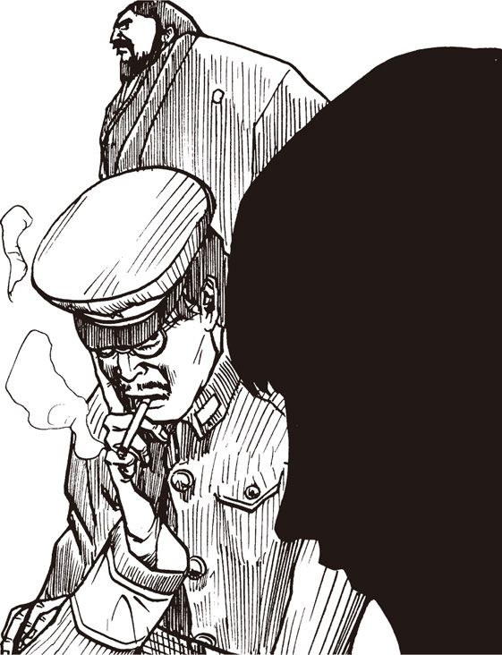
〈Ｈの助〉の妻
齋藤が〈級長〉に質問した。
「事情はだいたい分かり申した。つまり、〈Ｈの助〉に誰かが連絡してくるのを待てばいいわけですな？」
「その通り。〈やまちち〉が一般会員だったとしても、〈へっぽこネット〉内でメールのやり取りをすることはほとんど考えられない。でも万一ということもあるから、以後〈Ｈの助〉宛てのメールはすべて僕の責任のもとに読むことにする」
「それは犯罪じゃないのか？」
余が問うと、〈級長〉が苦悩の表情をあらわにした。
「もちろん......本当ならこんな行為は許されないことだ......。しかし、〈Ｈの助〉がした行為も考えてほしい。どんな事情かは知らないが、彼は犯罪に加担したんだよ！ だから、これはこれで仕方ないだろう？」
ここで齋藤が口を狭んだ。
「まあ、〈級長〉殿も言われたように、〈やまちち〉が〈へっぽこ〉のメールで連絡してくるとは考えにくいことですから、恐らくほかのネットを使うでしょう」
「恐らくそうだろうな」
「〈Ｈの助〉はほかにどのネットに所属しているので？」
「〈Ｈの助〉は古株ネットワーカーだからね。僕の知る限り、主な商用ネットにはほとんど入っている。それから、草の根ネットにもいくつか入っているはずだ。本人に聞いてみないと、よく分からないが」
「それではお手上げではありませぬか。〈Ｈの助〉の意識が回復するのを待ちまするか？」
「医者の話ではまず半年は絶対安静だそうだ。意識が戻るのもいつになるか......」
「困りましたな。長期間〈Ｈの助〉と連絡がとれないとなると気づかれますぞ。それに、〈Ｈの助〉の所属しているすべてのネットのＩＤが分かったとしても、肝心のパスワードが分からないではありませんか」
「それはその通りだが、そこは努力と恨性で何とかするしかないな」
「当てずっぽうでパスワードを探すのですか？ 気が遠くなる話ですな」
「いや、可能性はある」
「と、言いますと？」
「病院で〈Ｈの助〉の奥さんと話をしていてね......」
余は驚いて叫んだ。
「〈Ｈの助〉に奥さんがいるのか？」
「え？ ああ、そうか。〈たけぴょん〉君が知らないのも無理はないな。ほら、君も研究所で会っただろう、あそこの事務をやっているのが奥さんだよ。もうじき、自宅のハードディスクを持ってここに来るはずだ」
名前
その時、ドアがノックされた。
「噂をすれば何とやら、だ」
ドアが聞き、見覚えのある女性が神妙な顔つきで入ってきた。確かにあの事務員だ。彼女は我々に向かって頭を下げると、「佐藤の妻です。この度は夫がとんだご迷惑を......」。
慌てて〈級長〉が言葉を返した。
「いえ、こちらこそ。〈Ｈの助〉......いや佐藤君にもよほどの事情があったのでしょう。で、御自宅のハードディスクはどうされました」
「あの、あたし、パソコンがからきし駄目なんです。どれがハードディスクなのかよく分からなくて、それで......。あの、外の車に積んでありますので」
「すると、本体ごと持ってこられたのですか？」
「はい。それらしいものを、全部」
しばらくたって、〈狼〉と〈級長〉、齋藤が全身汗だくになって数台のパソコン及び周辺機器を運んできた。呆れたことにモニターやプリンターまで含まれている。
「......よくもまあ」
「私の実家から弟を呼んで、運ばせました」
「弟さん死んだろうな」
「こりゃ、今晩は徹夜だな」
齋藤が胸を張って言った。
「それがしにおまかせを！」
こういう時には齋藤は実に頼りになる。複雑怪奇な機器類をあっという間にセットアップしてしまった。
「ふむ。どうやらこのマシンですな。モデムがくっついていました」
齋藤が内蔵ハードディスクをチェックし、通信ソフトを起動させた。
「うーむ。オートログイン【★134】の設定がなされていませんな。これはやっかいなことになり申した」
〈級長〉が言った。
「そうなんだ。〈Ｈの助〉はオートログインしない主義なんだ。オートに頼っていると、ＩＤやパスワードをすぐ忘れるって言ってね」
「パスはともかく、ＩＤが分からなくてはどうしようもありませぬ。仕方がない、通信ログを覗いて過去のメール記録を調べてみましょう。少なくともＩＤは分かるはず」
齋藤はログを見ようとしたが、あっと声を上げた。
「どうしたんだ齋藤？」
「通信ログだけすべて暗号化されております。どうやら自作プログラムですな。パスワードを入れて読むようになっております！」
〈級長〉が言った。
「あいつらしい。それだけ貴重な情報が入っているということだ。奥さん、名前は奈保子さんでしたよね」
「そうですが......」
「パスワードに奥さんや恋人の名前を使うのはよくあることです。齋藤さん、〝ＮＡＯＫＯ〟って入れてみてくれる？」
「御意」
齋藤は言われるままに打ち込んだが、すぐにはねられてしまった。〈級長〉が頭を抱えた。
「うーん。駄目か。奥さん、あと心当たりのある言葉はありませんか。ペットの名とか、好きな言葉とか」
奥さんはしばらく考えていたが、「カオリって入れてもらえます？」。
「カオリ？ 誰の名前ですか」
余はそう言って、ハッと奥さんの顔を見た。彼女の眉は吊り上がり、般若の様相を呈していた！
「あの人が入れ込んでるホステスの名前です！......カオリで駄目なら、ルリ、キョウコ、マキ......隠しているつもりでもすべてお見通しなんだから！ ミホ、ランマル、シズカ、エリコ、ピンキー......」
謎の男齋藤の
野望メモ
佐藤殿も申されたように、通信柔軟用の自動着信操縦設定を用いる通信網使用者の多くは、通信網関連の電話番号や独自性符号、通過文字列など、大切な情報を忘れがちなもの。固定式磁気円盤の故障により、通信網への接続が不可能になることもあり申す。また、自動着信操縦の設定は、通信網に関わる重要な情報を書類化するなどして各種媒体に残すこととなり申す。つまり、使用者の脳味噌以外の場所に、独自性符号や通過文字列が書き残される状態。よく、画面の端などに独自性符号や通過文字列を書いた付箋を貼るのは愚か者だと言うが、自動着信操縦の設定もそれに似たものなり。付箋を覗かれたり持ち去られたりするほど簡単ではないにせよ、端末の前に座って命令文字列を打ち込み、通信網に接続するのはたやすい。雨陰道図や魔苦追鵜得巣【★135】などの乗降段柔軟自体に通過文字列を設定すれば、付箋の例に比べてかなり安全度は増すものの、しょせんは柔軟、結局は一つ二つも文字列が分かれば、安全策はたやすく打ち破られる。やはり一番安全なのは人間の脳味噌の内部か。とは言え自動着信操縦はやはり便利。だが危険も。また眠れなくなるのう。
第59回
〈Ｈの助〉の秘密日記が今、明らかに!?
ビンゴ！
「......ラブちゃん、ミサコ、シベール、シノブ、ヨーコ、リンリン、マチコ、カオル、ヒサコ、カズコ......」
眉を吊り上げ、目に涙さえ浮かべながら、〈Ｈの助〉の妻によるパスワード探しは執拗に続いていた。
「......ミチコ、レモン、マリリン、ローズ、アメンホテップ......」
余は〈Ｈの助〉の妻に問うた。
「何ですか〝アメンホテップ〟というのは？」
「夫がひいきにしているエジプトクラブのベリーダンサーの名前ですわ」
「とんでもない名前だな」
と余が言うと、横から〈煽情の狼〉が口を狭んだ。
「おお、そのクラブなら〈Ｈの助〉に連れられて俺も行ったことがある。そうか、あのヤロ、あそこの踊り娘とデキてたのか！」
そう言って、〈狼〉は慌てて口をつぐんだ。横にいるのが〈Ｈの助〉の妻だということをすっかり忘れていたようだ。しかし〈Ｈの助〉の妻は意外に平然としている。
「いいんです。女遊びはあの人の病気みたいなものですから」
〈狼〉がしみじみとした口調で言った。
「......つくづく恐ろしいのは、世の奥様族の執念！」
その時、パスワードを入力していた齋藤が素頓狂な声を上げた。
「ビンゴ！」
「ビンゴ？」
「あ。閣下はご存知ありませぬか。よくあるでしょう。アメリカ映画で、探偵が重要な証拠を発見した時にビンゴ......と言うような」
「おお。すると」
「大当たりでござる。〝アメンホテップ〟で正解でござった！」
隠しファイル
〈煽情の狼〉のセリフではないが、まことに恐ろしいのは女の勘である。妻の日頃からの執念の捜査が功を奏して、見事パスワードが解明され、暗号化されていたハードディスク内のデータを読み取ることができた。
「おお。非常に分かりやすくディレクトリーが整理されています。〈Ｈの助〉はこういう点は几帳面でござるな」
齋藤はこう言って、手際よく通信ログから各ネットにおける〈Ｈの助〉のＩＤを読み出し、フロッピーにコピーしていった。こうしてものの10分もしないうちに、〈Ｈの助〉の所属しているすべての通信ネットと、そのＩＤが判明したのであった。
腕組みして一部始終を見ていた〈夕焼け級長〉が呟 いた。
「よし。これで、あとはそれぞれのパスワードを解明する番だが......」
「あたしがさっき言った女の名前を順番に入れていけば、どれかが当たるはずですわ。あの人の性格は、あたしが一番知っています」
〈Ｈの助〉の妻はこうにこやかに述べたが、その額に青筋が立っているのがハッキリと分かった。恐らく、その場にいた誰もがこう思ったことだろう。〈Ｈの助〉は、いっそこのまま昏睡から目覚めぬ方が幸せかもしれないと......。
〈夕焼け級長〉が齋藤に言った。
「齋藤さん、すまないが、通信ログ全体に〈やまちち〉というキーワードで検索かけてみてくれないか」
「御意」
齋藤はさっそく検索してみたが、ログ類の中からは〈やまちち〉という言葉は発見できなかった。〈級長〉はがっかりして言った。
「駄目か......」
「ひょっとすると、連絡をとる際には〈やまちち〉という名前は使わないのかもしれませぬな」
「それは考えられる。結局、手分けしてログの中身をチェックして、怪しい部分をあぶり出すしかないか」
「かなりの量ですぞ」
「仕方がない。ま、とにかくそれはあとでゆっくりやるとして......とにかく僕はさっきの作戦通り、〈Ｈの助〉の名前で無害なワクチンソフトをアッブロードしておく。で、あとは誰か〈Ｈの助〉に成りすまして、各ネットで〈やまちち〉が接触してくるのを待つ、という段取りだな」
〈級長〉がそう言って、「本日はこれで解散......」と問いかけた時、齋藤が大きな声で叫んだ。
「ち、ちょっと待ってくだされ！」
「何だ齋藤？」と余が問うと、齋藤が答えた。
「今、何の気なしにチェックしてみたのですが、データの量と、ハードディスクの残り容量との間にかなりの差があり申す」
〈級長〉が叫んだ。
「何だって？」
〈級長〉は少し考えていたが、「そうか、隠しファイルかもしれないな」。
齋藤が頷いた。
「不可視属性のファイルが相当あるようです。それがし読み取りツールを持っていますので、しばしお待ちを」
クロスワード
齋藤の言う通り、隠しファイルは確かに存在した。齋藤は画面にしばらく目を泳がせていたが、「やや」。
「どうした齋藤？」
「〈Ｈの助〉の日記でござる！」
某月某日
ああ......〈やまちち〉様はすべてを見ておられる。あの御方は悪魔か？ それとも神か？ いずれにしても、私は、もう、おしまいだ。妻にもネットの仲間にも合わす顔がない。今はただ蛇に睨まれた蛙のように、あの御方の意のままにふるまうのみ。私はこのまま破滅するのだろうか。いっそ死んだ方が......。
齋藤が〈級長〉に言った。
「約半年前の記述でござるな」
「もっとさかのぼれば〈Ｈの助〉が〈やまちち〉と出会った時の様子が分かるかもしれん」
「御意」
某月某日
本日〈メケメケネット〉で見知らぬ人からメールをもらった。はじめは間違いメールかと思ったが、読むと、確かに僕宛てだ。「元ＩＶＭの佐藤さんといえば、業界では知らぬ人はいない存在らしいですね。僕もプログラマー志望なんですけど、どうしたら佐藤さんのようになれますか」なんて書いてある。誰だこいつは。だいたい僕はどのネットでも〈イヤ～ンＨの助〉で通している。誰が本名を教えたんだろう。まあ、いいか。とりあえず、「プログラマーにも広い教養が必要ですから、パソコン馬鹿になってはいけません。学校の勉強もちゃんとしましょう」と無難な返事を書く。
「この〈メケメケネット〉って？」
と余が問うと、それまで黙っていた〈うさちゃん１号〉が答えた。
「私、以前会員だったわ。〈へっぽこ〉ほどじゃないけど、わりと有名な草の根ネットよ」
〈級長〉が言った。
「僕も〈Ｈの助〉が〈メケメケ〉の会員とは知らなかった。あとでアクセスしてみようか」
某月某日
本日、例のメールの学生から自作のゲームプログラムが届く。かなりの大容量だ。ウイルスが入ってるとヤバイから、中古のノートパソコンでダウンロードする。さっそく解凍して試してみる。いきなり文字があちこちから無数に飛んできて、合体して巨大なピラミッドを作るオープニングデモ【★136】に驚く。これは素人のレベルじゃないぞ。
内容は一種のクロスワードパズルなのだが、全体が３次元構造になっているのがおもしろい。つい２時間ほと熱中して遊んでしまう。どうやら、３次元座標のＡからＺまでの言葉を繋げると、何かのメッセージが出てゲームクリアになるようだ。設問もよく練られていて感心する。メールの主、てっきり学生かと思っていたがもっと年上なのかもしれない。あまり感心したので、感想を書いたメールを送る。
某月某日
今日も仕事にならなかった。つい例のゲームをやってしまう。あと少しでクロスワードが完成だ。
某月某日
どうして奴はあのことを？ 先ほど例のゲームを終了した。クリアした時点でメッセージが出たのだが、まさかあんな文章になるとは！ これは何かのワナだろうか？ いや、これは脅迫だ！ どうしよう。妻にも〈級長〉にも相談するわけには......いや、しかし。もしかして、あいつは......
謎の男齋藤の
野望メモ
すでに何度も申したことではあるが、重要なることゆえ再度提言する所存。これすなわち、意味のある通過文字列の使用こそ、危うきことなり。例えば彼女や彼氏の氏名を通過文字列とする使用者の多きこと。あるいは名前を少々加工して通過文字列とする場合の多きこと。もちろんこれらの文字列は意味もあり覚えやすいが、その覚えやすさ分かりやすさは他者にとっても同様。探求者が通過文字列を探求する場合、その使用者の氏名から割り出すことも多いと聞く。要は、誰も思いつかないような文字列を通過文字列にすべきなり。覚えるのも至難であるような無意味な文字列こそ秀逸な通過文字列なり。もちろん意味のある文字列を使ってもよいが、その場合、その文字列が使用者に付帯する意味とかけ離れた意味をもっておる方が好ましい。例えば酒には無縁の下戸使用者が酒の名を通過文字列とするとか、自民党員の使用者が社会党総裁の氏名を通過文字列にするなど。それがしの友で、計算機が生ず乱数的文字列を通過文字列とし、それを気合いにて暗記し使用する者がおるが、あそこまで無意味な文字列にこだわればまず使用権利を盗用されることはあるまい。
第60回
久々の悪魔的微笑！ 竹熊、動くか
秘密日記
〈Ｈの助〉の秘密日記はまだ続いている。〈Ｈの助〉を脅迫したのは、はたして〈やまちち〉なのか？ 一同、固唾を呑んで続きを読んだ。
某月某日
昨日から一睡もしていない。仕事が手につかない。パソコンに向かうのが恐ろしくなった。キーボードを叩くと、つい〈メケメケネット〉にアクセスしてしまう......悪魔が待ち構えているというのに......。
さっきも〈メケメケ〉にアクセスした。誰からもメールが来ていないことを確認して、ほっとして回線を切る。本日はこれで５回目。
６回目のアクセス。心臓が口から飛び出るかと思った。Ｙからメールが来ていた。送られてきたのは何かの実行ファイル。VIRUS.EXE......ウイルス？ 馬鹿な。まさか〈ＰＣサーブ〉を崩壊させた例のウイルスか？ もしＹが〈やまちち〉なら......。自作のワクチンを試してみる。アメリカの知人のプログラマーと共同で開発した最新のやつだ。もちろん〈やまちちウイルス〉にも対応している。何の異常もない。最初はたちの悪い悪戯だろうと思った。
ところが実行したとたん、ハードディスク内のすべてのデータが消えてしまった！ 大失敗だ。慌てて電源を落とし、ハードディスクを外してノートパソコンに繋ぎ替えた。こういうこともあろうかと、全データをあらかじめＭＯでバックアップしていて助かった。
某月某日
おとといから全く寝ていない。昨日のウイルスだが、これまで見たこともないパターンのウイルスだ。ディスク内の全データが消えたと思っていたが、どうしたわけか、Ｙからのメールログだけは削除されずに残っていた。不思議だ。
某月某日
気がついたら、モニターに訳の分からない文字列が延々表示されている。どうやらキーボードに突っ伏して寝ていたらしい。気を取り直してウイルスの解析を続ける。Ｙのメールだけが無事だった理由が分かった。どうやら僕のパソコンでは表示されない特殊な機種依存文字が文書の最初と最後に使われていて、この依存文字に挟まれた部分のみ被害を免れるようプログラムされているらしい。手の込んだことをするものだ！
もはや間違いない。Ｙは〈やまちち〉だ。これだけ手の込んた嫌がらせができるのは〈やまちち〉くらいのものだ。
しかし、これで〈やまちち〉の使用している機種が判明したぞ。恐らくヨーロッパ製の、ええと何て言ったかな、あとで調べてみよう。日本で使っているユーザーは少ないはずだ。輸入代理店に友人がいるから、そいつを通して裏から手を回せば、意外に簡単に正体が分かるかもしれない。結構間抜けな奴だな。

離婚
〈煽情の狼〉がため息をついた。
「やはり、〈Ｈの助〉は〈やまちち〉に脅されていたのだな」
〈夕焼け級長〉が頷いて言った。
「うん。しかし〈やまちち〉がユーザーがある程度特定できるような機種を使っていたとは意外だね。〈Ｈの助〉は業界に顔がきくから、何とか調べられそうなものだが」
「いや、それよりも、〈メケメケネット〉のシスオペに事情を話せば一発じゃないのか？ 確か〈Ｈの助〉はあそこのシスオペとも友達だったはずだ。〈やまちち〉の会員登録を調べてもらえば......」
〈うさちゃん１号〉が言った。
「でもあそこのシスオペさん、堅物だから会員のプライバシーにはうるさいわよ」
〈狼〉が首を振って、「いや、プライバシーも何も、〈Ｈの助〉は脅迫されてんだぜ」。
そう言って〈狼〉が、君はどう思う、という顔で余の方を向いた。
「まさに脅迫されているから、誰にも話せないのでは？」
と余は答えた。
「それもそうだな......」
〈煽情の狼〉は腕組みをして今度は〈級長〉に言った。
「なあ〈級長〉、〈Ｈの助〉にはどんな秘密があるんだろう」
「そんなこと知るわけないよ」
〈級長〉は悲しそうな目つきで答えた。
某月某日
ハードディスクを初期化してＭＯから環境を移し、再び〈メケメケ〉にアクセスした。Ｙからのメールが届いていた。今度は普通のテキストファイルだ。怒りに震えながら読んだ。
「これで分かったかな。僕の正体は君の想像した通りだ。そろそろ協力する気になったかな。いい返事を期待してるよ。あ、そうそう、僕の使っている機種から僕の正体を調べようとしても無駄だよ。だってゴミ捨て場から拾ってきたマシンだからね。返事は明日でいいよ。多分君も疲れているだろうから、少し寝た方がいいね。おやすみ （ＹからＨへ）」
思わず大声を上げてモニターを叩き割りそうになった。妻が心配そうに部屋にやってきた。愛想笑いを浮かべて何とかごまかした。いかん......。
あの野郎、もし僕が協力しなかったら、僕の秘密をばらすのだろうか。それは困る！ どうすれば......。〈やまちち〉め、〈ＰＣサーブ〉の時もこの手を使ったのだな。何か天才ハッカーだ！ ハッキングも糞もない。この手を使えばどんなハックだってできるさ。ああ。それにしてもどうして僕が......。
一同が〈Ｈの助〉の奥さんの方をしげしげと見つめた。
「......分かりません」
奥さんは青い顔でうつむいて、ポツリと呟いた。
「夫の意識が戻ったら聞いてみます。もしシラを切るようなら......離婚してやる！」
今度は一同がうつむく番だった。
涙
結局、〈Ｈの助〉の日記から〈やまちち〉の正体を突き止めることはできなかった
「しかし〈やまちち〉の手口はよく分かったよ」
と級長が言った。
「ネットの中心人物、それもシステムを直接いじれるような人物の弱味を握って、そいつを脅して自分の手先にするんだ。それさえ成功すれば以後のハッキングは思いのままというわけだ」
〈うさちゃん１号〉が叫んだ。
「何て卑怯なの！」
〈級長〉は〈Ｈの助〉の奥さんにやさしく語りかけた。
「どんな人間にだって弱味はあります。奥さんとしては心苦しいでしょうが、〈Ｈの助〉だって苦しいはずです。ここはひとつ、温かい目で見てやってください」
奥さんの瞳から大つぶの涙がこぼれ落ちた。〈級長〉は我々に向かって、「〈うさちゃん〉と一緒に奥さんを家まで送ってくる。〈煽情の狼〉は計画通り安全なワクチンを〈へっぽこ〉に登録しといてくれ」。
〈狼〉が頷いた。
「それはいいが、奥さんが持ってきた〈Ｈの助〉のパソコンはどうする？ 持って帰るんだろ。おれも手伝うよ」
「そうか。じゃ、頼む。それからすまないが、〈たけぴょん〉君と齋藤さんは、〈Ｈの助〉のＩＤを使って〈メケメケネット〉をチェックしてくれないか。もし〈やまちち〉からメールが来ていたら、ログをとってあとで見せてくれ」
悪魔的微笑
室内には余と齋藤だけが残された。
「よし。齋藤、さっそく〈メケメケ〉にアクセスしてみよう」
「......閣下」
「何だ？」
「不思議なものですな。閣下は、あれほど憎んでいた〈級長〉と、今や共闘関係になっている......。よいのですか、このままで」
「仕方がない。敵の敵は味方だ。なに、いずれ〈級長〉にはひと泡吹かせてやるわい。とにかく当面の敵は〈やまちち〉だ！」
「御意」
齋藤は〈Ｈの助〉のＩＤで〈メケメケ〉にアクセスした。パスワードはやはり〝アメンホテップ〟だった。
「お。閣下。メールがこんなに！」
「む。〈やまちち〉か」
案の定、それは〈やまちち〉からのメールだった。〈Ｈの助〉からの連絡が途絶えて２日経つ。本来ならば、そろそろウイルスの効果が現われている頃なのに、何も音沙汰がないのでしびれを切らしているのであろう。齋藤が言った。
「すぐにでも連絡しないと、怪しまれるかもしれませんな」
「うむ。〈Ｈの助〉の身に何か起こったかと勘づかれるかもしれん。早く返事した方がいいな」
「〈級長〉の帰りを待ちまするか」
「うーん............いや、齋藤。返事を書こう」
「え？ 今？」
「そうだ。今ここには余と貴様しかいない。チャンスだ！」
「チャンス？」
「ふふふふ......」
「おお。久々に拝見した閣下の悪魔的微笑み！」
余は齋藤に耳打ちした。
「〈やまちち〉と〈級長〉、この二人を同時にハメる計画を思いついたのだ！」

謎の男齋藤の
野望メモ
古今東西待ち伏せにもいろいろあり申すが、待ち伏せは戦略上の駆け引きとして非常に優れた手段。このことは模擬実験柔軟や格闘遊戯柔軟においても顕著に見られる通り。例えば人気の仮想格闘家【★139】などでは、対計算機戦においても対遊戯者戦においても、待ち伏せは有効な格闘手法。敵の攻撃の途切れを突いて反撃に出るには待ち伏せが最良の手段。が、これを実践し申すと、鶏野郎などと呼ばれるが如く、外見的には卑怯な戦闘手法に見えるもの。また、模擬実験柔軟の戦闘系のものに関しては、自分の軍を有利なる地形にて待ち伏せさせるのは常套手段。多勢にて強力な兵器を構え、敵の侵入を刻々と監視し、好機とあらば一気に攻め滅ぼす恐るべき手法。この手法にかかってはいかに冷静かつ効率的思考の計算機軍といえども、赤子の手をひねるが如く容易に撃滅できる。が、やはり第三者から見るとこの手法もやり方が汚いと見えるもの。まあ、待ち伏せ戦略の効果が大き過ぎるあまり、遊戯性が失われることもある。それゆえこの手法を用いる者に罵声罵倒を浴びせる傾向もある。が、ともあれ、純粋な戦術としての待ち伏せは極めて秀逸な手法なり。
第61回
ついに本物の〈やまちち〉が！ 〈級長〉の運命は？
計略
「〈級長〉と〈やまちち〉の両方をハメる計略ですと？」
「ふふふふ」
余は笑うと、机の上からフロッピーディスクをつまみ上げた。
「おお、それは〈やまちちウイルス〉のフロッピー！」
「これにちょっと悪戯をしてから、〈やまちち〉にメールで送りつけるのだ」
「何ですって？」
「もちろん〈Ｈの助〉の名前とＩＤを使って送るから、〈やまちち〉は安心してプログラムを実行するだろう」
「つまり、相手のワナに相手をハメるわけですな？」
「そういうことだ。ふふふ、ちょっと貴様のノートパソコンを貸せ」
余は齋藤のパソコンを借りると、エディターを立ち上げた。
ＨからＹ様へ
ご連絡が遅くなりまして申し訳ありません。過日Ｙ様から受け取りました例のプログラムを、ご指示通り〈へっぽこネット〉に〝やまちち撃退ワクチン〟として登録いたしましたが、何事も起こりません。ひょっとして何かの手違いかと思い、登録したプログラムをそのままコピーしてご返送いたします。もう一度チェックしてみてくださいませ。
「ふむ。しかし閣下。〈やまちち〉のことですから、実行ファイルのウイルスチェックくらいはするはず。そう簡単にひっかかりますでしょうか？」
「当然チェックするだろう。そこでウイルス反応が全く出なかったら、かえって不審に思って実行するはずだ」
「と、いうことは、中身は無害なプログラムに差し替えるわけですか」
「まあそういうことだが、単に無害ではないぞ。実行した瞬間に〈やまちち〉を激怒させるようなメッセージが表示されるのだ。例えば、こんな感じだ」
や～いや～い引っかかった、馬～鹿！
おい〈やまちち〉、いいかげんに悪さをやめないと、そのうちホントに痛い目に逢うよ。貴様のインボーなんかとっくにお見通しなんだよ。
〈Ｈの助〉からすべて聞いた。彼は現在マインドコントロールも解け、安全な場所に僕たちがかくまっている。探しても無駄だよ。
それにしてもつくづく品性下劣なやつだな貴様は。〈Ｈの助〉のどんな弱味を握ったかは知らないが、それをもとに自分の手先にするなんてな。そういうのを恐喝と言うんだ。おおかたハッキングまがいの行為で〈Ｈの助〉の弱味を知ったんだろう。何が、「やまちち様はすべてお見通し」だ。少しは恥を知れこのデバガメ野郎！
本当に〝すべてお見通し〟ならこのボクの弱味でも調べてみることだな。ま、私、〈夕焼け級長〉は自他ともに認める清廉潔白の士でありますからして、てめえみたいな陰でコソコソ動き回る包茎のオタク野郎とはステージが違うのだ。どんなに探したってアラなんか出てきっこないよ。
ま、とにかく〈へっぽこネット〉にウイルスをアップするような最低の真似はあきらめて、ママのおっぱいでもしゃぶってなさい。
〈夕焼け級長〉
〈級長〉の弱点？
齋藤が唸った。
「うーむ。これは激怒するでしょうな。こういうことになると閣下は天才ですな。つまり〈やまちち〉を怒らせて、〈夕焼け級長〉のあら捜しをさせるおつもりですな？」
「察しがいいな齋藤。〈やまちち〉といえば伝説のハッカーだ。恐らく必死で〈級長〉の弱味を探り、満天下に晒そうとするだろうな」
「しかし、いかに〈やまちち〉でもそう簡単にいきますかな」
「ふふふふ。貴様には教えていなかったが、余は〈級長〉の弱点を知っているのだ」
「ええ!?」
「以前、余と貴様とでＨソフトの通信販売をしたことがあったな。覚えておるか」
「覚えているも何も、それで閣下は逮捕までされたではありませんか。忘れるはずはあり申さん」
「ふふふ。実はな、あの時の顧客の中に〈級長〉がいたのだ」
「な、何ですって？」
「恐らく〈やまちち〉のことだから、独自に〈級長〉の弱点を調べるだろうが、もし調べられなかったとしても、あの顧客リストをこっそりメールしておけば......」
「うう、卑怯ですな」
「とにかく〈級長〉の社会的地位はこれで終わりだ！」
主役の座
余と齋藤はすぐさま準備に取りかかった。〈級長〉たちが戻ってくるまでに、すべてを終わらせておかねばならぬ。まず余は〈メケメケネット〉にアクセスすると、〈Ｈの助〉のパスワードを変更しておいた。これで余と〈やまちち〉を除いては、誰にもメールのやりとりは分からなくなる。今のところ〈やまちち〉と直接連絡する唯一のルートであるから、これは余が握っておかなければならない。その間に齋藤が急いで適当な実行ファイルを作成した。実行すると、余のでっち上げた偽の〈級長メッセージ〉が表示される仕組みである。余は部屋の時計を見た。〈級長〉たちが出て行ってからそろそろ３時間が経過しようとしている。もうじき、帰ってくるだろう。
「齋藤、急げ！」
「もう少しでござる！」
齋藤のプログラムが完成次第、〈やまちち〉宛てのメールを送る。作業としてはこれで終わりだが、いろいろと考えておかねばならないことがあった。
まず〈級長〉たちには、〈Ｈの助〉のメケメケでのパスワードを解読したことを隠しておかねばなるまい。そうした上で、時々〈級長〉名義で〈やまちち〉宛てに冷やかしのメールを送るのだ。こうすれば、余の手を汚すことなく、〈やまちち〉対〈級長〉の全面戦争になるだろう。
と同時に、〈Ｈの助〉名義の別ＩＤを取って、〈やまちち〉に謝りのメールを送ることにする。文面は〝〈級長〉に脅された。自分は今でも〈やまちち〉様の味方です〟とでもしておけばいいだろう。その上で、〈級長〉のスキャンダルをリークするのだ。これで〈級長〉はおしまいだ。誰にも悟られることなく、余は〈級長〉に勝利することができる。
また、こうして〈やまちち〉とのルートを確保しておけば、いずれは〈やまちち〉の正体や所在を知るチャンスも出てくるだろう。〈級長〉はもうどうでもいいが、まだ余と〈やまちち〉との勝負が残っている。
余は、何としても〈やまちち〉を余の足下にひざまずかせねばならぬ。『世界征服』の野望を実現するためにも〈やまちち〉のような部下がいれば心強い。もし余の部下にならないと言うなら、抹殺するまでだ！
ふふふふ。やはり余は天才だなあ。ここんとこ『竹熊の野望』はほとんど〈夕焼け級長〉が主役みたいなものだったからな。誰が本当の主役か、そろそろハッキリさせる時期だと思っていたのだ。
恐怖のメール
その数時間後。余は久しぶりに我が家に戻った。
「おお。ハレルヤ１号。ひさかたぶりのご主人様のご帰還だぞ」
なーんて言っても、ただのパソコンが返事をするわけがない。齋藤が言った。
「閣下。久しぶりのご帰宅、さぞやお疲れでございましょう。とりあえずお休みになられますか」
「いや、寝る前に〈メケメケ〉を覗いてみよう。例のメール、もう〈やまちち〉が読んだかもしれない」
余は〈Ｈの助〉のＩＤで〈メケメケ〉に繋げると、メールの送受信記録を調べてみた。
「お！ 読まれたぞ」
メール記録は、確かに〈やまちち〉が読んだことを示していた。
「ふふふ、〈やまちち〉め、今ごろさぞや頭に血が上っていることだろう。よし、駄目押しだ」
「駄目押し？」
「〈Ｈの助〉名義で、〈級長〉の秘密を〈やまちち〉にばらすのだ。おい齋藤、〈メケメケ〉って、ゲストでも会員にメールできるのかな？」
「確かシスオペ宛て以外は無理だったと思いますが」
「そうか。仕方がない。では明日にでも〈Ｈの助〉の名前と住所でＩＤ申請をすることにしよう。......もう一度〈へっぽこ〉を覗いてから寝ることにしようか」
余は通信ソフトのメニュー画面から〈へっぽこ〉を呼び出した。
「おや？ メールが届いているぞ」
「誰ですかな」
余は何気なくメールを読んで、ギョッとした。な、何と、そのメールの主というのは......。
すべての〈へっぽこネット〉会員に告ぐ
今晩12時
時報とともに〝チャットルーム１番〟に集まるべし
〈夕焼け級長〉の【公開処刑】が始まるよ～ん
〈やまちち〉
謎の男齋藤の
野望メモ
今回閣下がお示しあそばしたあの案、閣下曰く「一石二鳥」であるとのこと。だがしばし待たれい!! 確かに同時に閣下の敵を倒せるならよいが、標的の数が増えれば、予定が崩れる可能性も高まり申す!! もしや、この作戦こそまさに「二兎を追う者一兎も得ず」では!? これらの諺、似たような印象なれども、その真の意味は天地ほどの開きがあり申す。計画の副産物としての幸運があれば「一石二鳥」、欲かいて失敗する不幸が「二兎を追う者一兎も得ず」。計算機においても似たようなことがあり申す。多数の故障箇所を持つと思われる計算機があり、とりあえず修理をとまず電線の検査を行ったらすべての故障が直るという「一石二鳥」、電線を交換すれば諸問題が一気に解決しようと企んで処置したところ、何も直らぬ、あるいは母体基板までも破壊してしまうようなくたびれ儲けが「二兎を追う者一兎も得ず」となろうか。ほかにも多数の滑稽なる事例がござろう。こと計算機においては、その標的が増え要素が増えるほど問題の複雑さが加速度的に増し申す。まずは一つの問題。そして次の問題。さらに、といった具合いに徐々に事を進めてこそ安泰なり。
第62回
〈やまちち〉登場！ いきなり爆弾投下!?
〈やまちち〉の住所？
齋藤が絶叫した。
「こここれは〈やまちち〉の挑戦状ですぞ！」
「落ち着け、見れば分かるわ！」
余は齋藤を叱責したが、そういう余自身も膝がガクガクと震えていた。
ついに本人が現われたのだ。
「やはり、別人名義でＩＤを持っていたのですかな？」
「多分そうだろう。しかし〈やまちち〉も頭に血が上ったかな。ホストに登録してある住所を調べれば、すぐに正体が露見するだろうに」
「でも〈やまちち〉のことですからな。ひょっとすると、何か裏があるやもしれませぬ」
「しかし現在の〈へっぽこネット〉はコールバック方式で、会員が登録した電話しか使えない仕組みになっているのだろう？ いずれにせよ、これで足がつくはずだ。......ところで〈級長〉たちはもう集まっているかな？」
余はトップメニューからＷＨＯコマンドを実行した。このコマンドを使うと、ネットのどこに誰がいるのか分かるのだ。
「お。スタッフ専用のチャットルームにいるぞ。みんな集まっている」
「〈煽情の狼〉と〈うさちゃん１号〉がチャットしています。〈級長〉はまだいないようですが」
余はスタッフ専用会議室に直行した。ここは一般会員には立ち入れない場所だが、先日の〈Ｈの助事件〉以来、余も準スタッフ扱いになっていたのだ。
＊裏チャットルームに入室しました＊
たけぴょん：ちーす。
煽情の狼：おお〈たけぴょん〉。君も見たのかね？
たけぴょん：見たよ、見ました。〈やまちち〉の挑戦状。
うさちゃん１号：本当に恥知らずな奴だわ！
たけぴょん：〈級長〉はどうしたの？
煽情の狼：ある人物に会いに行ってる。
たけぴょん：ある人物？ 挑戦状のＩＤの持ち主かい？
煽情の狼：いやそうではなくて、以前、崩壊した〈ＰＣサーブ〉で〈やまちち〉とチャットした経験のある人物だよ。
たけぴょん：へえ？ そんな人がいるの。
煽情の狼：その人は俺とも知り合いだったんだが、〈やまちち〉とチャットしたあと、ショックで寝込んでしまってね。そのままパソ通もやめてしまった。
たけぴょん：何がショックだったの？
煽情の狼：分からん。俺にもひとことも話さないしね。しばらくしたら会社も辞めてしまって、今は生活保護を受けているはずだ。
たけぴょん：そりゃあ......よほどのショックだねえ。
煽情の狼：〈やまちち〉とチャットした人間はほかにもいるらしいが、必ず身を滅ぼすという。自殺した人もいるという噂だ。しかも、みんな貝のように口を閉ざして、全く原因が分からないんだ。
たけぴょん：ところでさ、〈やまちち〉が使用したＩＤの持ち主は調べたんでしょう？ 誰だったのさ？
煽情の狼：それが......。
うさちゃん１号：その人、北海道に住んでいるらしいのよ。〈狼〉が電話したけど、誰も出ないの。
たけぴょん：ほ、北海道？ それじゃあ、すぐに会うわけにはいかないねえ。
うさちゃん１号：よりにもよって北海道なんてねえ。
たけぴょん：でもそいつが〈やまちち〉である可能性は極めて高いわけだろ？
煽情の狼：現在〈へっぽこ〉は厳重なコールバック方式をとっているから、そういうことになるな。
たけぴょん：だったら、即刻そのＩＤを停止すればいいじゃない。それで奴はアクセスできなくなる。
うさちゃん１号：私も〈級長〉にそう提言したのよ。でも、彼ったら......。
煽情の狼：〈級長〉はあくまでも〈やまちち〉とネット上で対決するつもりだ。だから、奴とチャットした経験のある人物に話を聞きに行ったんだ。
たけぴょん：ほほー。まず敵を知れというわけか。〈級長〉らしいな。
余は横の齋藤に向かってニヤリと笑った。
「しめしめ。余の予想通りになった。〈やまちち〉がどういう作戦で来るかは分からないが、恐らく双方かなりのダメージを受けることは間違いない」
その時、チャットルームに誰かが入室した表示が出た。〈夕焼け級長〉がやってきたのだ。
うさちゃん１号：どうだった？
夕焼け級長：どうもこうもないよ。〈やまちち〉の名前を出したとたん、ガタガタ震え出してね。しゃべる言葉もうわごとみたいだし、とりつく島がなかった。
煽情の狼：そうか......やはりショックが尾を引いているのだな。彼、生活ぶりはどうだった？
夕焼け級長：ひどいものだよ。ボロアパートの３畳間でさ。家具もパソコンも何にもない。廃人同様だよ。
煽情の狼：いったい〈やまちち〉の奴、彼に何て言ったのかな。
夕焼け級長：ただね、その人の万年床の横に、難しそうな本が置いてあった。
たけぴょん：本？
夕焼け級長：柳田國男だったかな？ 民俗学の本。その本を指差して、何かわめいてるんだよ。
煽情の狼：民俗学？ はて、あいつにそんな趣味があったかなあ。
夕焼け級長：とにかく、僕は今夜〈やまちち〉と対決してみるつもりだ。もし決着がつかなかったら、北海道に乗り込んででも土下座させてやる！
うさちゃん１号：ほんとに大丈夫？＞〈級長〉
夕焼け級長：ははは。僕も〝ネットの若大将〟とまで呼ばれた男だよ。あんな異常者に負けるわけがない！ とにかく、今夜僕は本部にいるから、何かあったらそこに連絡してくれ。じゃあ、12時に。
電脳巌流島
12時５分前になった。
余はワクワクしながらハレルヤの前に座り、電源を入れた。
〈へっぽこネット〉にアクセスすると、ここ数ヵ月来の盛況だ。40回線のほとんどがふさがっていた。
「みんな、噂を聞きつけてアクセスしにきたのだな」
「コールバック方式でなかったら、とっくに回線がパンクしていました」
「お。〈級長〉は早くもチャットルームでスタンバッているぞ」
〈やまちち〉が指定したチャットルーム１番は、異様な緊張感に包まれていた。その時〈へっぽこ〉にアクセスしていた全員がそこに集合していたのだが、言葉（書き込み）を発する者は一人もいない。
約束の時刻から５分が経過した。
「遅いな！」
余はイライラしていた。それは〈級長〉とて同様だったろう。まるで巌流烏の決闘だ。と、その瞬間......新たな人物が入ってきた！
夕焼け級長：〈やまちち〉か？
やまちち：..................。
夕焼け級長：遅いぞ。予告だけで、逃げたのかと思った。わははは。......なぜ黙っている？ 君の身元はもう割れているんだ。北海道の田中明雄って人だろう？ 直接アクセスするなんて、馬鹿だな。
やまちち：..................おろかな。
夕焼け級長：何だって？
やまちち：不審に思ったら調べてみるがよい。北海道に田中などいない。
夕焼け級長：君も知っていると思うが、このネットはコールバックでそちらの電話を確認するシステムになっている。万一君が田中でなくても、その電話からアクセスしていることは分かっているんだ。
やまちち：いかなるシステムといえども私を阻むことはできぬ。
夕焼け級長：強がり言うな！ どうせ夜が明けたら調べるさ。僕には北海道にも友人がいるんだ。しかも警察のな！
やまちち：私は電脳の神だ。警察といえども、私を捕らえることはできない。それより......おお......見える！ 見えるぞよ！ 心の闇が見える......回線を伝わって、〈級長〉の闇が見えてくる......。
夕焼け級長：な、何を言ってるんだ？
と、〈級長〉が叫んだ瞬間！ いきなり〈やまちち〉が、何かのデータを流し始めたのだ。
「な、何だこれは......」
「はて？ どこかの病院のカルテのようですが」
「い、いや、これは単なるカルテではない！」
「おお......これは......」
「〈級長〉の包茎手術のカルテだ！」
謎の男齋藤の
野望メモ
人間、心のどこにどんな弱みを持っておるのか知れぬもの。ある者にとっては些細なることが、別の者にとっては至極重大なる事柄であることも多い。価値観の差か？ 環境によるものか？ その一点についての話題が出た時、対面での会話ならば相手の表情仕草で何らかの心情が察知でき、さらにはその話題がその場での禁忌であるをも知り得よう。だが、計算機通信網上の掲示板や文字会話においては、そこに流れる情報が文字のみゆえに、禁忌なる会話も平然と行われ申す。それはある者には純粋なる単語の羅列から来る意味であるが、ある者には耐えがたい攻撃にも感じられるところ。人は表情や仕草で人情の機微に触れるように、悲しいかな、文字にも機微を知る。しかし、それを意図して文字に表現できる者がどれほどあろうか。会って話せばすぐに通ずる事柄が通信網上ではあらぬ方向に誤解を招くという問題も、この微妙なる言葉の意味合いが引き起こしておるのではなかろうか。にこやかに言うひとことと、消沈して言うひとこと、あるいは怒りにまかせて言うひとことには、まさに天と地ほどの意味に開きがあり、その点を表現しづらいのが通信網上の会話かもしれぬ。
第63回
嗚呼、〈級長〉の恥ずかしい部分が次々と！
カントン包茎
それは若者向け男性誌を中心に多数の広告を出荷レている包茎手術専門病院のカルテだった。確かこの病院は全国にチェーン展開しており、包茎手術業界でも一、二を争うところのはずだ。
カルテの患者名には、確かに〈夕焼け級長〉の本名〝加山健作〟が記されている。テキストファイルで書かれているところを見ると、チェーンごとに作成したカルテを東京の本院のコンピューターで一括管理するためだろう。
すると〈やまちち〉は、この病院の社内通信網もハックしているのだろうか？ そうとしか考えられない。
「はははは。〈級長〉のイメージもこれでガタ落ちだな！」
そう余が言うと、齋藤が答えた。
「御意。これ以上恐ろしいプライバシーの侵害は考えられませぬ」
カルテはドイツ語で書かれているみたいだが、ところどころ日本語になっている部分もある。どうやらこれは〈やまちち〉が分かりやすく翻訳した箇所らしい。おかげで〈級長〉がどのような包茎だったのかよく分かった。
「いわゆるカントン包茎という奴じゃないかな、これは」
齋藤が尋ねた。
「カントン包茎？」
「知らんのか。真性と仮性の中間でな、勃起時に無理に剥くと包皮が亀頭を締めつけて壊死する恐れもある恐ろしい包茎じゃ」
「詳しいですな閣下。ひょっとして閣下も......」
「ば、馬鹿もん！」
回線のこちらで余と齋藤がくだらぬ会話をしている最中にも、チャットルームでは〈級長〉と〈やまちち〉の息詰まる死闘が繰り広げられているのだった。
夕焼け級長：な、な、何だこれは！
やまちち：この世の誰よりも貴君がご存知のはず。
夕焼け級長：ふ、ふざけるな！ 知らんぞおれは！
やまちち：知らぬ？
夕焼け級長：こ、こんなものをでっち上げて、恥ずかしくないのか？
やまちち：でっち上げ？ まあ確かにテキストファイルのでっち上げなとその気になれば簡単だが。ならばでっち上げと言うがよかろう。貴君がカントン包茎であったことも、レーザーメスで手術したことも、その後傷痕が治癒し切らぬうちに我慢しきれずオナニーしてしまい血まみれの股間を押さえて再び病院に駆け込んだことも、すべてでっち上げということになるかな。ははははは。
夕焼け級長：犯罪だ！ プライバシー権の侵害だぞ！
やまちち：くくくくく。
夕焼け級長：な、何がおかしい？
やまちち：これをプライバシーの侵害と言うのなら、貴君はカルテの内容を認めたことになるが？
夕焼け級長：.........。
やまちち：おお......私のシリコンチップで形成された脳髄にまたもや闇が進入してきたぞ。〈級長〉の闇が......おお。『温泉すっぽん芸者』。おお『濡れ濡れ淫乱むき玉子』。おおお『桜木ルイ強姦大全集』......。
夕焼け級長：それは......。い、いや、貴様何を言っている？
やまちち：知らぬか？ 知らぬはずはあるまい。貴君の自宅のそばにもあるだろう。エンジョイパラダイスというレンタルビデオ屋が......
夕焼け級長：うわああああああ!!
やまちち：会員番号Ｃ‐２３８６６。この会長はやたらＡＶが好きらしくてな。ちなみにここ６ヵ月でこの会員がレンタルしたソフトの記録が手元にあるのだが......おお。すべてアダルトばかりではないか。
夕焼け級長：やめろ！
やまちち：しかもオール１泊で一度に５本も借りておる。うち２本はＳＭだ。
夕焼け級長：や......めてくれえ！
やまちち：いや。全知電脳の神が私に命じている。〈級長〉の闇を解き放てと。
夕焼け級長：や......め......
最低感
「さすがは〈やまちち〉と言おうか......えげつないことやるのお」
「エンジョイパラダイスといえば、これも有名なビデオレンタルチェーンでござる。恐らくこれも顧客管理用のコンピューターをハックして情報を入手したのでござるな」
「うーん。〈やまちち〉にかかってはセキュリティなどあってなきが如し、か。......おや？」
「〈やまちち〉め、〈級長〉の借り出したＨソフトのタイトルをアップし始めましたな。ご丁寧に日付まで！」
「これだけのギャラリーの目前で。たまったもんじゃないな」
「ＳＭとスカトロが多いようですな」
「日ごろ偉そうなこと言っとるだけに〝最低感〟がいや増しに増すのお」
「おや？ ギャラリーの誰かがチャットルームから退室しましたぞ。このＩＤは......」
「おお、〈うさちゃん１号〉ではないか。確か彼女と〈級長〉はデキてたはずだが」
「自分の恋人の趣味が暴露されて、いたたまれなくなったのでござろう」
「うふふふ。二人の仲はこれでもう終わりだな！」
「他人の不幸をお笑いになるとは閣下もお人が悪いですな」
「たわけ。憎き〈級長〉がここまでやり込められておるのじゃ。これが楽しまずにいられるか！」
「御意」
夕焼け級長：やめろやめろやめろめろめろ......。
やまちち：なぜやめる必要がある？ これはすべて〝でっち上げ〟なのだろう？ 貴君の言葉を信じるのであれば。
夕焼け級長：お......願いです。やめてください......。
やまちち：今度は哀願か？ 無理だな。これはすべて電脳の神の決定であるがゆえに。電脳神はお怒りになっておるぞ。貴君が私につまらぬ罠をかけなければ、こういうことは勘弁してやろうと思っていたのだが。
夕焼け級長：な、何の話だ？
やまちち：この期に及んでまだシラを切るか！ 貴君は余の忠実なる僕である〈Ｈの助〉の名を騙って余のマシンにウイルス被害を与えようとしたであろう。この罪は万死に位する。
夕焼け級長：知らない......僕には何が何だか分からない！
やまちち：まだほざくか。今のうちにほざくがよい。〈Ｈの助〉と余との連絡ルートを解読したところまでは誉めてやってもよいが、そのあとが失敗だったな。何にしろ貴君は私を怒らせたのだ。
夕焼け級長：連絡ルート？ 〈メケメケネット〉のことか？ あれなら〈くまぴょん〉が......
やまちち：〈くまぴょん〉？
夕焼け級長：い、いや、とにかく〈Ｈの助〉のパスワードはまだ解読できてないはずだ......き、君は何かを誤解している！
やまちち：誤解も６階もあるか。さて、死んでもらおう！
「見よ〈やまちち〉の奴、今度は警察の取り調べ記録までアップし始めたぞ！」
「な、何ですと？」
「うへえ～！ 〈級長〉の野郎、５年前に下着ドロボウの疑いでパクられてやがる」
「一応不起訴になっているようですが......」
「初犯につき厳重注意というやつか。いずれにしても同じことだ。これで〈級長〉は終わりだな！」
「しかし警察のコンピューターまでハックするとは......。これでは前科をひた隠しにしている市民はたまりませぬな」
「おおかた〈Ｈの助〉もこの調子で秘密を握られたのであろう。なるほど、余にも〈やまちち〉の恐ろしさがよく分かったわい」
「おや？ 〈級長〉もチャットルームから消えましたぞ」
「敗北を認めたか。〈級長〉のネット生命もこれで終わりだ」
「閣下はこれからいかがなされる？ 〈へっぽこネット〉もおしまいゆえ、また別のネットに参りまするか？」
「いや、まだ終わってはいない！」
「と申しますと？」
「分からんか。〈級長〉なきあと、〈へっぽこ〉を支配するのは......」
「おお、まさか」
「齋藤、確か以前〈へっぽこ〉を強制ハックした際、スーパーユーザー扱いのＩＤを作成していたろう。あれはまだ使用可能だよな？」
「もちろんでございます」
「よし、これから余の言う通りにしろ。まず〈やまちち〉を即刻この場から強制排除するのだ。可能か？」
「ちょっと席をお代わりください」
余は齋藤に席を譲った。齋藤はシステムにアクセスし、〈やまちち〉のアクセスしている回線を切断した。
あっという間もなく、〈やまちち〉は回線上から姿を消した。
「うふあふあふあ！ 他愛ない。これで〈へっぽこ〉は余の天下じゃ！」
謎の男齋藤の
野望メモ
世の中一寸先は闇とは申すものの、現代、その諺が意味するほどの闇が、身近にござろうか。希にあるやもしれぬ。が、多くの災難は何らかの形で緩和され、人を闇に追い込むほどの恐ろしい目は滅多矢鱈にはない。それよりもむしろ、〈級長〉のような目にあい、あるいはそこに真の恐怖をかいま見る者の方が多くあると存ずる次第。一見平安に思える心も、ふとしたきっかけ思わぬ拍子にかき乱され荒れ果てるもの。正気を失った先に明光が見えぬなら、その者は狂気の世界をさまよい続けることになろう。そしてやがては廃人となろう。だが果たして廃人は何を見ておるのか。そこにあるのは狂気なのか、それとも狂喜なのか、あるいは......。常軌を逸した世界に入り込んだ者の心中を、我々は窺い知る術を知らぬ。それがしもいく人か、そのような者を見た。その者の行動は不可解にて不合理。しかしある時はその者の目に幸せさをも見た。〈級長〉が入り込んだ世界は、果たしてどのような世界なのか？ 荒れ果てた地獄か豊饒なる天国か？ それを知ることはできぬ。が、もしやすれば、その世界は我らがよく知るものかもしれぬ。そしてある瞬間その世界に行くやもしれぬ。
第64回
竹熊がシスオペ？ そして誰もいなくなった！
シャンペン
「ばんざーい！」
余はそう叫ぶと、秘蔵のシャンペンの栓を抜いた。齋藤のグラスにも余手ずから注いでやると、齋藤が言った。
「おめでとうございまする。しかし閣下は酒をお飲みにならないと、それがし存じておりましたが」
「確かに酒は苦手じゃが、こういう時は別だ。目的が達成した喜びを表わすには、やはりシャンペンが一番であろう」
「御意。しかし閣下」
「何だ」
「普通シャンペンと申すものは、こう栓を抜くとシユワーッと泡が出るものだと思うておりましたが」
「おお。そういえばそうだな」
「気のせいか、だいぶ気が抜けておるような」
「うん、思い出した。このシャンペンはもらいものなのだが、もらった時に、シャンペンとはどういうものかと思ってひと口飲んでみたのじゃ。もちろんすぐに栓をしておいたが」
「はあ、それで。いつおもらいになられたのです？」
「４年くらい前かな」
ぶっ、と大きな音を立てて齋藤が口からシャンペンを吹き出した。
「どうりで酢のような味がすると思っていました」
「まあ死ぬことはあるまい。ところで齋藤」
「何でござりましょう」
「主人公とは、いいものだな！」
「な、何を申されます。閣下は最初からこの物語の主人公ではありませぬか」
「それはそうなのだが、ずーーーっと脇に回っていた気がしてならんのじゃ」
「無理もありませんな。ここのところ〈夕焼け級長〉や〈やまちち〉が主役みたいなものでござったからな」
「ほんの２、３カ月の話なのに、まるで１年も主役から遠ざかっていた気がするわい」
「御意」
立候補
「しかし〈級長〉はあれで再起不能になったみたいだし、〈やまちち〉も首尾よく追い出すことができた。もはや〈へっぽこネット〉で余の活動を阻むものは誰もいないわ！」
「おめでとうございます。ところでサブシスの〈煽情の狼〉や〈うさちゃん１号〉はどうなり申したか」
「あれから何回かアクセスしたが、〈煽情の狼〉から一度だけ全ユーザーに向けての告知があっただけだ」
余はそう言ってログを齋藤に示した。
【重要】〈へっぽこネット〉会員各位様へお知らせ
日頃〈へっぽこネット〉をご愛顧いただきまして誠にありがとうございます。現シスオペである〈夕焼け級長〉氏から、昨日シスオペ辞任のメールをいただきました。従いまして、当分の間私〈煽情の狼〉がシスオペ業務を代行することになりますが、これは次期シスオペが決定するまでのあくまでも臨時の措置であり、私自身多忙ですので、最低限のメンテナンス以外は残念ながらできません。シスオペ希望の方は事務局まで名乗り出てください。全会員の中から10パーセント以上の信任票があり、不信任票が信任票を上回ることがなければ、サブシス会議にかけた上でシスオペとして信任されます。もし１ヵ月以上シスオペが不在になる場合は、最悪〈へっぽこネット〉が廃止される可能性もあります。何卒、皆様のご協力をお願い申し上げます。〈へっぽこネット〉臨時代表〈煽情の狼〉
ログを眺めて齋藤が言った。
「どこか他人事みたいな文面ですな。本当であれば〈煽情の狼〉が次期シスオペになるところでしょう？」
「完全に腰が引けているな」
「まあ無理もありませぬ。〈Ｈの助〉のみならず、〈級長〉まで〈やまちち〉にやられたとあっては。ところで〈うさちゃん１号〉はその後どうしているので？」
「〈うさちゃん〉か？」
余は小指を１本立てて言った。
「あの女確か〈級長〉のコレだったよな。あれ以来一度もアクセスしとらんようだ。恐らく〈級長〉への幻滅と〈やまちち〉に対する恐怖によるものであろう」
「なるほど。しかし......そうなると、〈へっぽこネット〉の命も風前の灯でございますな。シスオペのなり手がいなくては......」
「いや、いる！」
「は？」
「ここにおるではないか！」
「しかし崩壊寸前のネットで、今さらシスオペをやるメリットは何もないと思われまするが」
「たわけ。だからこそやりがいもあるというもの。余の采配により、崩壊寸前の〈へっぽこ〉に再び以前の活気を取り戻すことができれば、余は歴史に残る名シスオペとして後世の尊敬を集めることにもなろう！」
「御意」
「でな、実はもう〈煽情の狼〉宛てに、立候補の手続きを済ませておいたのだ。〈狼〉の奴め、〝〈たけぴょん〉さんがその気なら......〟と簡単に届けを受理しおった」
「それは......恐らく〈狼〉殿も面倒臭くなったのでしょうな。閣下が立候補してくれて、むしろホッとしているのでしょう。しかし全会員の10パーセントの信任票はどうなされる。閣下には〈へっぽこ〉内にそれほど友達はおられないはずですが」
「うむ。しかし貴様も知っての通り今の〈へっぽこ〉にはせいぜい１００人程度しか会員がおらんからな。10パーセントなら、たった10人」
「なるほど10人ならどうということはありませんな」
「で、念には念を入れてな。例のスーパーユーザーＩＤを使用して、ちょこっと票を操作しておいたわい」
「ちんぴょろほしぇーーー！」
「何か言うたか」
「いえ、別に」
「それから不信任票も30通ばかり入っていたようなので、これは全部削除しておいてやった。これで明日には余は晴れてシスオペじゃ！」
完璧な管理
そして１週間が経過した。シスオペとしてネット内を管理するべく、本日も愛機ハレルヤ１号からアクセスする余の部屋に、齋藤が訪ねてきた。
「おはようございます。シスオペ業務はつつがなくこなされていますか」
「うむ。特に問題はない」
「苦情とか、ネット内バトルの仲裁などは持ち込まれませぬか」
「うふふ。それが一つもないのだ」
「ほう、一つも？ それは平和でようございました」
「何しろメール機能を廃止したからな」
「......今、何と？」
「面倒だからメールとチャットと電報機能を停止しておいた。こういうのはトラブルのもとだしな」
「しかし......」
「仮にトラブルがあったとしても持ち込むことはできないしな。いちいち持ち込まれたら余の身が持たん。各自で解決してくれということだ」
「凄まじいシスオペもあったものですな」
「何か言ったか？」
「い、いえ、閣下ならではの天才的発想でござる」
「うふふふ、それになあ、余が本日断行した抜本的改革により、〈へっぽこネット〉では以後、あらゆるトラブルが発生しないことになったのだ！」
「にわかには信じられませぬ。いったいどうしてそのようなことが可能になるのでございますか」
「なに簡単なことだ。おとといから当ネットは、余以外の人間の書き込みを禁止することにした！」
「すると、現在ネットに読み書きできるのは閣下お一人？」
「ちゃんと聞け。読むことは会員なら誰でもできる。ただ、書くことができないだけだ」
「ということは......つまり、閣下の書き込まれた文章を、ただ読むだけでござるか」
「そういうことだ。何しろ余以外の文章にはろくなものがないからな。ネットの質を向上させるための、これはやむを得ない処置なのだ」
「ちんぴょろほしぇーー！」
ウナ丼
齋藤はひとしきり驚いた後、ふと深刻な顔つきになり、言った。
「なるほど。そこまですればトラブルは避けられましょう。しかし気になることがあります」
「何だ。言ってみろ」
「〈やまちち〉のことなのですが」
「だから相手が〈やまちち〉だろうと何だろうともはや手も足も出ないのだ。言っただろうが」
「いえ、確かにネット上では、いかに天才ハッカーといえどもどうすることもできないでしょう。しかし、あいつがこのままで引き下がるとも思えませぬ。恐らくあいつはもう気がついているでしょう。〈へっぽこ〉でのウイルス計画が失敗した背後に閣下の存在があることを......」
「ふん。気がついたとして、それでどうなる？ ネットの外で余に悪さをするとでも？」
「大いに考えられます。つまり閣下の住所や電話番号を突き止めていれば、それで嫌がらせも......」
「ウナ丼を10人前寄越すとか？ 馬鹿らしい。やれるもんならやってみろってんだ！」
そう、余が言った瞬間である。玄関のベルがけたたましく鳴った。
「誰だろう？ 宅急便かな」
余が玄関から呼びかけると、外からこんな声が聞こえてきた。
「ちわーす。うな嘉っすが、ご注文のウナ丼10人前持ってきやした！」
謎の男齋藤の
野望メモ
偉大なる閣下の野望への道、いよいよその行動も本格的になり申した。ふっふ。閣下の前にすべての愚民どもが平伏すのも間近なり、といった皮算用が果たしてどこまで通じるものか。論理的にはうまくいくことでも、技術的な問題ゆえに頓挫することは茶飯事と存ずる次第。計算機上の事柄にても同様、装置や柔軟の用意に万全を期してもなお、それらを扱う技術が伴わなければ何も達成できぬのだ。その技術とは例えば結線鼠の操作方法や書類の扱い方、あるいは各種装置の接続及び運用方法である。「簡単じゃねえか」あるいは「いきなり使える」などと画面上にて宣う者らも恐らく、上記のようなある程度の知識と技術を持ってしてその台詞を吐くことと存ずる。年末年始にかけて計算機を購入したる者は多いが、その結果「簡単じゃねえか」と言って「いきなり使える」者はどれほどいようか。現実はそれほど用意ではなかろう。そして、果たして我が閣下は野望達成の道程にての技術をお持ちであろうか。これまでの経緯とその対処を見ると、閣下の手法はややもすると強引かつ体当たり的......それがしは行く末が心配でござる。そこがおもしろい点でもあるが。
第65回
〈やまちち〉の逆襲？ スパコン一丁お届け！
ウナギと寿司
目の前にズラリと並べられたウナ丼の山を見て、余も齋藤もあっけにとられていた。
うな嘉の出前持ちが領収書片手に言った。
「ウナ丼10人前で......えーと、消費税入れて、８万 ２千４００円になります」
余は叫んだ。
「ち、ちょっと待て！ こんなの注文した覚えはないぞ！」
「へ？」
「何かの間違いでは......」
「間違い？ いや確かにお宅っすよ。住所も、ほら」
「しかし余は注文しとらん！」
「そんな。確かにお宅の名前で注文受けたんすから」
齋藤が出前持ちに声をかけた。
「あなたが直接、電話で注文を受けたのでござるか？」
「そうっすよ」
「電話の主はどんな声でござった？」
「どんな声と言われても......確か、女の......」
余と齋藤が同時に叫んだ。
「女？」
「いや男だったかな」
「どっちなんだ」
「どっちでもいいじゃないすか」
「よくない！」
「とにかくお代をいただかないと......困るんすよ～」
出前持ちは困惑していた。だが困るのはこっちも同じである。
「とにかく注文しとらんのだから、帰ってくれ。文句があるなら警察でも何でも呼べ。帰った帰った！」
出前持ちは玄関前でまだぶつぶつ言っている。せっかく運んできたウナ丼10人前をどうしようか考えあぐねているようである。とその時、廊下のエレベーターが開いて、板前姿の親父と若い衆数人が両手いっぱいに重箱を抱えてやってきた。
「まいどー寿司正っす。ご注文の特上寿司１００人前お持ちしやしたーー！」
余は度胆を抜かれた。
「ひゃひゃ１００人前～？」
「残りは下の車にありますんで。おい、てめえら早いとこ運べ！」
親父が若い衆に声をかけると、彼らは一斉に「へえ～い」と気合いを轟かせエレベーター横の階段を駆け降りていった。
「ち、ちょっと待て！」
余は裸足で廊下に駆け出したが、階段を降りようとして、何か大きな荷物を運び込もうとしている運送屋とぶつかってしまった。運送屋が怒鳴った。
「痛えな！」
「あ、すいません、どうも......」
謝る余に向かって運送屋が尋ねてきた。
「竹熊さんの部屋って、あの角だよね？」
「竹熊は私ですけど？」
「あ、ちょうど良かった。すいませんけどこれ中に入れといてくださいよ。あと30箱ばかりありますんで」
あと、30箱？ イヤーな予感がした。
「......これ、何です？」
運送屋はタオルで汗を拭いながら答えた。
「さあねえ。あたしら、仕事で運んでるだけですから。じゃ、とりあえずここ置いときますんで！」
「あ。ち、ちょっと......」
アニキ
運送屋はウナ丼の山の横にデカイ箱を置き、エレベーターで降りていった。横ではウナギ屋が目を丸くして驚いている。余も途方に暮れた。
「これは何です閣下？」
齋藤が歩いてきて尋ねた。
「知らん」
「差し出し人が書いてありませんが......かなり大きな箱ですな」
「とにかく開けてみよう」
「いいのですか？ 開封したら返却できないとか、そういうものだったら困りますぞ」
「中身が分からんのだから仕方あるまい」
余はバリバリと包みを破いて箱を開けた。
「うわっ！」
声を上げたのは横で覗いていたウナギ屋だった。余と齋藤はあまりの内容に声も出なかった。中から現われたのは筋肉質で等身大の、一糸まとわぬ男性の人形だったからだ。
「......これは、何ですかな？」
「余に聞かれても困る。......ひょっとして最近話題の、ホモダッチワイフってやつじゃないのか？」
「おお。それがしも雑誌で読んだことがあります。確か〝アニキ〟とかいうネーミングでしたかな」
「間違いない。〝アニキ〟だ。ほら、この取扱説明書にも書いてある」
「ほほー。この部分が電動になっているのですな」
余と齋藤は苦笑しつつ眉間に皺を寄せ、見つめ合った。と、背後でガチャガチャと音がする。振り向くと、ウナギ屋がウナ丼50人前を慌てて台車に乗せる音だった。ウナギ屋は額を汗で濡らしながら愛想笑いを浮かべて去っていった。
しばし沈黙ののち、齋藤が言った。
「私たちは完全にホモだと思われたみたいですな」
「ふざけやがって！ こんなもん送ってきたのはどこのどいつだ！」
余は天を仰いで叫んだ。その時エレベーターのドアが開いて寿司正の連中が台車いっぱいに寿司を乗せてやってきた。余は両手をぶんぶん振り回して追い返そうとすると、寿司正の連中をかきわけて、また、新手の人物がやってくるではないか。
「あの、竹熊さんのお宅はこちらですか？」
「はい、そうですが？」
「お届けに上がったのですが......」
スパコン
またか。
一見会社員風の配達員は、怪訝な顔で余の部屋を覗き込んだ。
「あの、本当にこの部屋でいいんですか？」
「何を持ってきたんです？」
「いや......空調設備とか電源は大丈夫なんでしょうね？」
「意味がよく分かりませんが」
配達員はしきりに首を傾げた。
「おっかしいなあ。スーパーコンピューター【★140】を１台お届けに上がったんですが」
「す、スパコン？」
冗談ではない。スーパーコンピューターといえば何十億もするんじゃないのか。そんなもの個人で買えるわけがない。と当然の疑問を呈すると、配達員が困惑の表情を浮かべ、言った。
「代金は、この通り領収済みになってますけど」
配達員、いや恐らくメーカーの社員か何かだろうが、余の目の前に領収書を突き出した。余の目が点になった。ゼロがいくつ並んでいるのか。余は、かつてこんな巨額の領収書を見たことがなかった。
余は猛スピードで部屋に駆け込むと、ベランダから表通りを覗き込んだ。巨大なトラックがマンションに横づけされ、係員がクレーンで厳重に包装された箱を荷下ろししているではないか！」
「どうわ～～～ッ！」
声にならぬ声を上げ、余は机の中から預金通帳をひったくると、再び裸足で廊下に飛び出した。背後から齋藤の心配気な声が聞こえた。
「閣下、どこに行かれるのです？」
「銀行だ！ 余は何だか非常にとってもイヤな予感がするのだ！」
「寿司だのダッチワイフだのはどうするので？」
「いいか、以後誰が何を持ってこようと〝主人はいない〟の一点張りで追い返すのだ。あとは頼んだぞ！」
アスファルトの道をベタベタベタと裸足で走る音が聞こえた。もちろん銀行に急ぐ余の足音だ。
「〈やまちち〉だ！ あいつの仕業以外考えられない！」
どういう手口かは知らないが、あいつは余の預金口座に何か細工をしたに違いない。天才ハッカーだから、それぐらいはするだろう。もしも、もしもなけなしの貯金がすべてパーになっていたら......。それを考えると、いてもたってでもいられなかった。
銀行に到着し、息を切らせながら、キャッシュコーナーの記帳機に通帳を差し込んだ。
ジーガチャガチャ......。やや間があって、機械が通帳を吐き出す。余は固く目をつぶっていた。見るのが怖かったのだ。薄目で周囲を見ると、警備員が余をジロジロ見ている。確かに客観的には余の態度は不審に違いない。
余は通帳を握りしめ、銀行を出た。心を落ち着かせるため、そばの自動販売機でジョージアの缶コーヒーを買い、一気飲みした。
少し平常心が戻ってきて、そういえばおとといカードで金をおろした時、預金残高が２、３万しか残っていなかったことに気がついた。最近〈へっぽこネット〉で忙しかったので、ろくに仕事をしてなかったからだ。
あまり誉められた事態ではないが、しかし何百万も勝手におろされるよりはマシかもしれない。そう思ったら、ようやく通帳を見る勇気がわいてきた。
余はクワッと目を見聞き、通帳を凝視した。ゼロという数字が目に飛び込んできた。やはり残高はナッシングか。一瞬そう思ったが、妙なことに気がついた。
「あれ？」
ゼロ、ゼロ、ゼロ、ゼロがずーっと並んで、その先に５という数字がひとつだけついている。
「ひぃ、ふぅ、みぃ......」
余はゼロの数を数えながら、股間に何か妙に熱いものがほとばしるのを覚えた。のちに気がついたのだが、その時、余は明らかに失禁していたのだ。なぜなら。
余の通帳に、５００億円も振り込まれていたからだった。
謎の男齋藤の
野望メモ
この野望、当初の予定にては、閣下専用の計算機覇麗屡耶一号を人類管理用として強化するというものがあった。固定磁気円盤やら中央処理素子などを増設強化し、誰もが恐れる最強の計算機とする計画であった。当時なら、例えば中央処理素子として四百八拾六型加速素子【★141】を据え、五百四十の容量を誇る固定磁気円盤を確保し、表示装置は十七型、そしてその解像度は壱千弐拾四掛けることの七百六拾八程度、さらに色数三万二千のものとし、光線式の印刷機とする、というような塩梅であった。が、今思えばその計画を実行しておったら、恐らく当時なら百万円ほどの費用がかかったものと存ずる次第。現在、百万円もの費用があらば、当時の計画をはるかに超えた性能の計算機を三台は購入できよう。くわばらくわばら、計画を実行せぬのが正解であったようだ。とりもなおさず、とかくこの世は世知辛い。とりわけ計算機の進化の早きこと稲妻が如し。窓九拾五【★142】の発売以降、さらにその様相は激しさを増し申した。もはや計算機購入に予定や計画は無用。長期の予定を立てて購入すれば、憂き目は必至。新機種の陳腐化を恐れては計算機など買えぬ。
第66回
天は我々を見離した!? 雪山に勝てるか竹熊？
錯乱
「ちんぴょろすぽーーーーーん！」
余の口から久々の決めゼリフが飛び出した。
「ちんぴょろすぽーーーーーん！」
余は５００億の数字が記載された通帳を握りしめると、銀行に引き返しキャッシュコーナーで４００万ほど引き出してから、街の中を走り回った。理性は完全に失なわれていた。通りすがりの松寿司で、時価のトロを50個も食べ、ちんぴょろすぽーーーーーんと叫びながらオモチャ屋に駆け込んだ。
「ちんぴょろすぽーーーーーん!!」
ついで余は発作的に電車に乗り中野駅で降りると、中野ブロードウェイビル３階にある漫画古書店〝まんだらけ〟で、ショーウインドーに飾ってあった日本に３冊しか現存が確認されていないという藤子不二雄のデビュー作『最後の世界大戦』（時価３００万円）を「これください」と叫ぼうとした、その瞬間、我に返ったのである。
「......？」
余は、尻ポケットにねじ込んでいた預金通帳をもう一度しげしげと眺めた。
ひぃ、ふぅ、みぃ、まだ４９９億９千６００万円も残っている。幻覚ではない。いったい、これはどういうことなのだ？
考えられることは、ただ一つ。〈やまちち〉だ。あやつが余の口座に、巨額の金を振り込んだのだ。方法はよく分からないが、銀行のオンラインに侵入して、メインコンピューターをどうにかしたのであろう。
しかし、なぜこのようなことを？
余を困らせるのであれば、預金残高をゼロにでもするはずだ。これでは、反対に余を喜ばせるだけではないか。
「でも......」
とても素直に喜ぶことは、できなかった。額が大き過ぎる。ほとんど非現実的な数字で、不気味ですらある。嫌がらせには違いなかろうが、意図がつかめず、そのことが余計に不気味だ。
「もしかすると」
余の脳裏に、いやな想像が浮かんだ。５００億もの巨額が、一介の貧乏人の普通口座に振り込まれた。ということは、誰かの口座から、いや、どこかの大企業の口座から無断で引き出されたということを意味しないか？ 万一そうなら大騒ぎになるはずだ。
「うわーーーーーーー」
絶叫して余は走り出した。間違いない。恐らく〈やまちち〉は５００億もの不正オンライン操作の責任を、余に被せる気でいるのだ！
覆面パトカー
「ど、どうなされたので？ 汗ビッショリですぞ」
自宅に駆け込んだ余の姿を見て齋藤が叫んだ。
「齋藤、この部屋を出るぞ。早く支度するのだ！」
「それはまた、急な......」
「じき、警察が来る。ここに４００万ある。逃走資金だ」
「よ、４００万？ なぜこんな大金が......」
「詳しい説明はあとだ！」
余は押入れをひっくり返すと、へっぽこＰＣ社に潜入した時の変装道具を取り出した。
「早くこれをつけろ！ 当分、素顔はさらせないと思え！」
余はカツラとつけ髭を装着しながら、いぶかる齋藤の尻を蹴っとばした。
「早くしろ！」
変装を終え、余と齋藤はあたふたとマンションを飛び出した。
そうして、前の通りの角を曲がったところで、３台の車とすれ違ったのである。中に、いかにも目つきの悪い男たちが乗っている。余はドキリとして、齋藤に目くばせすると、電柱の陰から恐る恐る余の住むオンボロマンションの方角を見つめた。
案の定、車は間もなくマンション脇の道路に停車すると、目つきの悪い男が数名中から出てきて、ドヤドヤとマンションに入っていった。
「やはり覆面パトカーであったか」
「あれは刑事ですかな」
「間一髪だった。とにかく、この場所から遠ざかろう！」
逃亡者
余と齋藤はバスに乗り、３つほど先の街の公園前で降りた。北風が吹き抜く公園は人影もまばらだ。ここなら大丈夫だろう。ベンチで凍えながら、余は齋藤に一部始終を話した。
「そういうことでござったか......しかし、嫌がらせもここまでくると芸術ですな」
「芸術もへったくれもあるか！ とにかく〈やまちち〉を捕まえんことには、我々は逃亡者になってしまう」
「閣下は以前にも警察の厄介になっていますからな。今度捕まったら、間遠いなく実刑ですぞ」
「縁起でもないことを言うな！」
「しかし困ったことになり申したな。〈やまちち〉を捕まえると言っても......とりあえず、それがしの家に行き申すか？」
「いや、こうなったら貴様の家も危ないかもしれん。......齋藤、貴様、〈へっぽこネット〉のログの入ったノートパソコンは持ってきたよな？」
「御意。ここに」
齋藤は背負ったリュックからノートパソコンを取り出した。
「〈やまちち〉が最後に使用していたＩＤは、確か北海道のユーザーのものだと〈級長〉が言ってなかったか」
「おお、そういえば、確かに」
ノートパソコンを立ち上げさっそく齋藤が確かめた。
「北海道で間違いござらん。住所も、ほれ、ここに」
余は拳を振り上げて立ち上がった。
「おのれ〈やまちち〉。齋藤、行くぞ」
「ち、ちょっとお待ちください。今から北海道に？」
「当然、行くのだ！」
余は公園を飛び出してタクシーを止めた。
「羽田空港までお願いします！」
数時間後――。余と齋藤は北海道某市の空港にたどり着いた。そこでタクシーを拾ったが、目的地を告げると、とたんに運転手の顔が曇った。
「お客さん、正気ですか？」
余はムッとした。
「何を言う！ とにかくこの住所まで行ってくれ！」
「天候もよくないですし、車じゃ途中までしか行けませんよ」
「途中でもいいから、とにかく行ってくれ！」
白い荒野
タクシーを一歩出た瞬間、猛烈なブリザードが、東京育ちの余の柔肌を襲った。たちまち髪や髭が凍りつき、吐く息も凍って口もとからボロボロとこぼれた。
「痛ぅーーーーーーーー！」
寒さもある限度を超えると痛いというが、本当だ。余は目を開けることもできず、ガチガチ震えてうずくまった。
「大丈夫ですか、閣下！」
「貴様は平気なのか？」
「それがしは耐えられ申す」
「貴様の皮下脂肪はトド並みだからな！」
「運転手も心配していますぞ。引き返しましょう。町で宿をとって、天候が落ち着いてから......」
「うるさいッ！」
余は手でタクシーを追い払うと、一歩を踏み出した。周囲には家一軒も見られぬ、全くの白い荒野だ。吹雪の合間から巨大な山のようなものが見える。
「地図によれば、あれが大雪山ですな。このまままっすぐ４キロも歩けば、目的の小屋にたどり着き申すが......閣下、命あってのモノダネですぞ、引き返しましょう！」
「......行くぞ......」
余はポツリとそれだけ言うと、黙々と歩き始めた。
そうして３キロほど歩いただろうか。全身雪ダルマと化した余は、無言で前のめりにぶっ倒れた。
「閣下！」
齋藤の声も遠くから聞こえるようだ。足の先に全く感覚がない。やはり、無理があったか......。
「天は......我々を見離した......」
「何を言うのですか！」
ふいに身体が持ち上がる感触があった。齋藤が余を背負ったのだ。
「このままじっとしていてください。目的地はもう少しでござる！」
齋藤も全身雪まみれで、まるでスノーマンのように見える。そのまま余は怠識を失った......。
「閣下！ しっかりしてください！」
はっと気がつくと、そこは山小屋の中だった。
「着き申したぞ。しかし無駄足でしたかな。小屋には誰もいません」
「そんなはずは......」
「考えてみますれば、この季節、北海道のこんな山小屋に人がいるはずがござらん。かつがれましたな」
その時、余は室内の机にパソコンがあることに気がついた。
「こんなところにパソコンが？」
齋藤が言った。
「山小屋の管理人のものらしいですが......しかし電話もありませんし、ここから通信したとはとても......」
余は試しに電源を入れてみた。ディスプレイが明るくなってギョッとした。電気が通じているのか？
「バッテリーに電気が多少残っているようですな」
「ディスクの記録は？ 何か残ってないか？」
齋藤がキーボードを叩いた。その瞬間！ いきなりディスプレイに見覚えのあるマークが表示された。一つ目で一本足の化け物のマーク......。
「や、〈やまちち〉だ！」
〝ソロソロ来ル頃ダト思ッテイタヨ〟
そこには、確かにこう表示されていた。
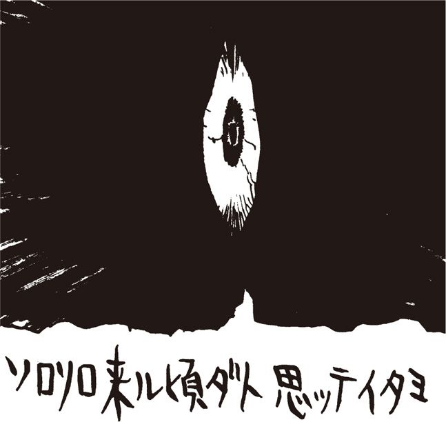
謎の男齋藤の
野望メモ
計算機時代・多重媒体【★143】時代にて面倒なるは情報の安全なる管理。例えば現金。現在にては電子現金なるものも出現し、その管理の難しさが話題なり。これまでは現金を懐に、角材を片手に、そして布団にでも潜っておれば安心であった。悪漢が現金を奪いにやってくれば、この野郎と角材で滅多打ちにしてくれれば、現金は安全。が、電子現金【★144】となると、懐にも入らぬ。もちろん電子現金を奪おうとする悪漢は近くにおらぬゆえ、角材など文字通り無用の長物。電子現金を守るには、素人には 訳の分からぬ電子技術に頼るほかはない状況。はてさて妙な心持ち。紙幣と硬貨に慣れ、現金札さえも危うしと思う者にとっては、この電子現金は全くもって危うい機構に思えてならぬもの。一方には計り知れぬ利便があろうとも、実体のつかみにくい存在、しかもそれが汗水流した結果得られる金銭となると、これは不安が多い。とまあそれがしがどう申そうが、社会の趨勢は変らぬ。今後どうなるものかやや不安に思えるところ。もしや、閣下に振り込まれた五百億円のような事件が増えるのでは、などと考えるのはそれがしばかりではなかろう。くわばらくわばら。
第67回
どうする？ 前門の〈やまちち〉後門の警察！
竹熊閣下殿
そろそろ来る頃だと思っていました。よくここまでたどり着けましたね。あ、そうか。私が振り込んだ５００億円、有効に使っているのですね（笑）。あれだけあれば地の果てまでも逃げられますよ。私のことなんか構わずにお逃げなさい。そこから根室半島の港に行って、ロシアの船員に１００万ほどつかませれば喜んで密出国させてくれるでしょう。
日本には当分戻らないことですね。戻りたくても戻れないか（爆笑）。何しろ閣下は不当オンライン操作で５００億もせしめた極悪ハッカーですので。閣下がどのように銀行のオンラインをハックしたのか、証拠をバッチリ残しておきましたから（笑）、恐らくもう全国指名手配になっていますね。ご愁傷様です。
それから忠告しておきますが、そこの山小屋の管理人から私の正体を探ろうとしても無駄ですよ。〈Ｈの助〉のことを思い出せば、まあ、分かると思いますが。また、この文章が入っているハードディスクは５分後に初期化されます。保存しようとしても無駄です（これ以上、何かのキーを触れた瞬間にやはり初期化が実行されます）。では、せいぜい頑張って逃げ延びてください。
あなたの〈やまちち〉
「うぬぬぬ......」
「ぐはあ」
「おのれ......！」
厳寒の北海道の山小屋で、余と齋藤は声にならぬ声を上げていた。あまりにも見事なやり口だからだ。やはり、余は〈やまちち〉によって５００億持ち逃げの極悪ハッカーにされていたのだ。これでは〈やまちち〉を追うどころの騒ぎではない。すでに警察が動き始めている。何としても、余がやったのではない証拠を残しておかなければ......。
余はパソコンのキーに手をかけたが、そのまま硬直したように動けなくなってしまった。恐らくデータを保存しようとしたら最後、奴の言う通りハードディスクの中身ごと消えてしまうのだろう。かといって、このまま手をこまねいていてもどうしようもない。余はそのままの姿勢で齋藤に叫んだ。
「どうにかならんのか齋藤！」
「どうにもなりませぬ」
「カメラはないか？ せめて画面写真でも......」
「カメラなんて、そんなものは」
「そうだ！ 貴様ひとっ走り下山して、コンビニで〝写ルンです〟【★145】買ってこい！」
「ここをどこだと思っておられるのです。麓の町まで2時間はかかりますぞ。途中で遭難するかもしれませぬ」
「では、どうにもならんと？」
「御意」
言い合っているうちに、画面表示が消えた。
「ああああ......」
パソコンが初期化を実行し始めたらしい。余と齋藤は、暗澹たる面持ちでそれを眺めているしかなかった。
密航
齋藤は床にへたりこんで、余に尋ねた。
「これからどうされます？」
「どうもこうもないな」
「奴の言う通り、ロシアにでも密航しまするか？」
「それではあいつの思う壷ではないか。要するに、邪魔者である余を、この国から追放するのがあいつの目的なのだからな」
「では......？」
余は拳を振り上げて叫んだ。
「もちろん日本にとどまって〈やまちち〉を捕らえるのだ！」
齋藤は悲しそうな顔で床に目を落とした。全身で絶望を表現している。余は小屋の中をうろうろと歩き回った。
「小屋の番人はどこにいるんだ？」
「あそこに張り紙が......」
齋藤の指差す方向には、シーズンオフ中に山小屋を訪れた人間に対するメッセージが書かれていた。どうやら小屋は春まで管理人不在らしい。
〝なお、管理人は冬いっぱい海外に出かけております〟と最後につけ加えてあって、余はガックリ肩を落とした。
いてもたってもいられず、余は管理人の机をひっかき回した。
「何をされる？」
「何でもいい！ 〈やまちち〉の正体に関するわずかな証拠でもあれば」
だが、どんなに調べても、証拠らしいものは発見できなかった。やはり駄目か、とあきらめかけた時、上に１冊の文庫本が置かれていることに気がついた。民俗学者の柳田國男全集の１冊だ。
いや、その本があることは最初から分かっていたが、気にとめなかった。しかし、小屋内を探索してから改めて気がついたのだ。本らしい本はこの１冊しかないことに。
そうなると妙に気になって、余は本をめくってみた。あるページが真っ先に聞いた。紙が挟んであったのだ。
「あ！」
「ど、どうかなされましたか？」
「このページに〈やまちち〉の名前が......」
「何ですって？」
山父のさとり
それは「日本の昔話」という章の中で紹介されている「山父のさとり」という民話だった。
《昔ある所に一人の桶屋がありました。雪の降った朝、外に出て為事をしておりますと、山の方から一つ目、一本脚の、怖ろしい怪物がやって来て、働いている桶屋の前に来て立ちました。桶屋はそれを見て慄えながら、これが昔から話に聴いている山父というものだな思いました。そうするとその怪物は、おい桶屋、おまえはこれが山父というものだろうと思っているなと言いました。これは大変だ、こっちの思っていることを、すぐにああして言い当てると思いますと、おい桶屋、おまえは今思っていることをすぐに覚るから大変だと思ったなとまた言いました。それから後も、なんでもかでも思うとじきじきに覚られるので、桶屋は困ってしまいました。そうして仕方なしにぶるぶる慄えながら為事をしていますと、思わず知らずかじかんだ手が滑って、箍の竹の端が前ヘ走り、山父の顔をぱちんと打ちました。山父はこれにはびっくり仰天して、人間というやつは時々思っていないことをするからこわい。ここにいるとどんな目に逢うか知れないと言って、どんどんまた山の方ヘ、遁げて行ってしまったそうであります。》
「これはサトルの化け物のことでござるな。これが、〈やまちち〉というハンドルのルーツでござるか」
「多分そうだ」
「この山小屋の管理人は、このことに気がついたのですな。このページだけ手あかで汚れております。何度も読み返したのでござろう」
「しかしこれだけの情報では、とても正体に迫ることはできんな」
「挟まれていた紙は、管理人のメモですかな」
「そうらしいが......」
回線上の妖怪
余はたたまれていた紙を開いた。やはりメモらしい。鉛筆で、思いついたことを殴り書きしてある。
（回線上の妖怪、やまちち）
（やまちちはすべてを悟ってしまう）
（悟られたら最後→奴隷）
（悟られないようにするには？）
（予期せぬ行動→しかし人間には不可能）
メモを読んで、齋藤が言った。
「どうやらこの男なりに、〈やまちち〉に対する対抗策を必死で考えていたようですな」
余は領いて、「だがどうにもならなかったのだろう」。
「恐らく、Ｈの助以上の弱味を握られていて、身動きとれない状態なのでしょうな」
「つくづく恐ろしい奴だな〈やまちち〉は......とにかく回線上でもいいから奴と接触できればいいのだが」
「接触してもどうにもならないでござろう」
「よく刑事ドラマにあるではないか。逆探知という手が」
「あれは電話局の協力があればの話でござる。電話局は、警察の要請がなければ動き申さん。まさか、現在の閣下が置かれている立場で警察に被害届けを出すわけにもいかないでござろう？」
「それはそうだが」
余は完全に行き詰まってしまった。窓から外を見ると、真っ白である。物凄い風の音がして、吹雪が小屋を打ちつけている。じりじりとどうしょうもない時間が経過していく。
「とにかく吹雪が開け次第山を降りて、〈Ｈの助〉に会ってみよう」
「でも、町には警察が......」
「しかしこのまま逃げていてもラチがあかない。もし〈Ｈの助〉の意識が回復していれば、〈やまちち〉と接触する方法が見つかるかもしれない」
「そううまいこと行きますかな」
「それしか今は方法がないのだ！」
そうこうするうちに、吹雪が止んだ。外はやや薄暗くなっている。山を降りるなら今しかない！
下山準備のため、麓のコンビニで山ほど買い込んだホカロンを開封し、ガムテープで全身くまなく貼りまくった。まさにその時である。ふいに、ドンドンと扉を叩く音がした。
「開けろ！ 警察だ！ そこにいることは市民の通報で分かっている！ 開けんかコラ！」
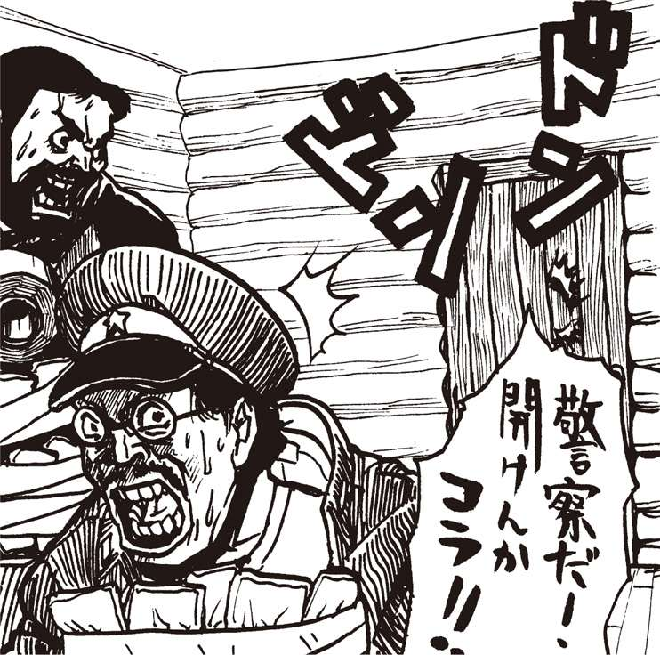
謎の男齋藤の
野望メモ
〈やまちち〉より処刑宣告を受けた形になった閣下、今後如何にご対処なさるかが見所だがところで、計算機柔軟にもこの処刑宣告に似たふるまいをするものがあり申す。例えば基本柔軟などが言う「●●の反応がありません」や「一般保護違反です」「形式三の過失です」「補助処理装置がありません」などなど【★146】。いずれも処理中の情報が消滅する前触れとして知られる、いわば計算機から使用者の情報に対する〝処刑宣告〟なり。「どうせ情報が失せるのだし、このような宣告を出すなど全くもって忌々しい計算機!!」と怒る向きもあるが、この〝処刑宣告〟、あるとないとでは被宣告者の心持ちが違い申す。計算機が突然停止【★147】あるいは無限循環【★148】状態になるより、前もってそれを予測・宣告された方がいくばくか冷静が保てるもの。また宣告があるがゆえ、何が原因で計算機が妙な事になったかがわかるのもありがたい。いきなり背後から撃たれて死すのと、「貴様こそ父上のかたき!! 憎きかな憎きかな!! いざ地獄へ落ちよ」と言われてから撃たれるのでは、どちらが成仏できようか。成仏できずとも、地獄へ落ちる理由がわかれば閻魔様に弁解の一つもできよう。
第68回
逃亡の復讐鬼・竹熊！ 最後の手がかりは......
雪ダルマ
警察が踏み込んだ時、小屋はもぬけのカラだった。
なぜならば、間一髪で、余と齋藤は裏の窓から脱出していたからだ。だが、まさか窓の外がいきなりガケになっておるとは思いもよらなんだ。雪が積もっていなかったら、二人とも即死していたであろう。
ガケを転がる過程で雪ダルマ状態になったことも幸いした。余と齋藤は雪ダルマのまま、一気に麓まで転がっていったのだった。
余はしばらく気を失っていたようだ。齋藤のミットのような手でホッペタを叩かれ、目が覚めた。
「閣下。しっかりしてくだされ。閣下！」
「うーーん......。ここはどこ？ 私は誰？」
「ベタなギャグを言うとる場合ではござらん。ここは北海道の山の中でござる。しばらく歩けば町に着くはず。ともかく、いずこかで暖をとりましょう」
「暖を取る余裕なぞない！」
「閣下の耳も指先も紫色になっており申す。凍傷になりますぞ」
「指の１本や２本がなんだ。一刻も早く東京に舞い戻り、〈やまちち〉を捕まえねばならぬ！」
「捕らえると言うても所在の見当がつかぬではありませぬか。とにかく暖をとらねば」
「暖をとる間に我々が警祭に捕まるわい！ 所在の見当は戻ってから考えよう。ともかくレッツゴ......」
勢いよく足を踏み出したとたん、余は雪に足を取られてすっ転んだ。起き上がろうにも手足が言うことを聞かぬ。どうやら本当に凍傷になってしまったらしい。
「おお。パライソが見える......！」
そう絶叫して、余は意識を失った。
介抱
目が覚めた。暗い。何だかひどく揺れているようだ。どこだろうここは。
「気がつかれましたか」
「おお齋藤。地震か？」
「イエここは貨物列車のコンテナでござる。ゆっくりお休みになればじき東京に着き申す」
「貴様が余をここまで運んだのか」
「御意。閣下を背負って町まで行くつもりでしたが、途中で閣下の体温がひどく低下しまして、これはいかんと雪穴を掘って閣下の身体をそれがしが温め申した」
「ちょっと待て。具体的にはどのように温めたのだ」
「それがしの身体でしっかりと」
「......皆まで言うな。気持ちが悪うなった」
「御意。とにかく閣下を介抱しておりましたところ、近くで列車の音が......運よく鉄道が走っておったのでござる。そこで線路を大きな雪玉でふさぎ申して、次の列車が止まったところでスキを見て忍び込んだわけで」
「そうか。ご苦労であったな。しかし齋藤」
「何でござるか」
「貴様はピンピンしとるが、大丈夫なのか」
「それがし寒さには割と強いのでござる」
「バケモノだな」
ライターを点火して時計を見た。夜中の３時半だ。多分朝には東京に着くのであろう。
齋藤が心配げな口ぶりで言った。
「しかし閣下、東京に戻るはいいとして、どのように〈やまちち〉を探すのでござる？」
「そうだな。えーと......」
「何も考えてないので？」
「何とかなるだろう」
「何ともなりませぬぞ！ それに、閣下の家に戻るわけにもいきませぬ。警官がウジャウジャ張り込んどるでしょうからな......とりあえず閣下には、隠れ家に身を潜めていただくことにして......」
「隠れ家？ 貴様の家ではないのか」
「あ、お話ししていなかったですかな。こんなこともあろうかと都内某所に隠れ家を用意していたのです」
「初耳だぞ。いつの間にそんなものを」
「以前閣下が逮捕されました時に、それがしの家も警察にばれておりますから、偽名で密かにウィークリーマンションを借りていたのでござる。あそこなら多分安全かと」
「ふむ。オウムの逃亡信者も身を潜めていたというアレか」
逆探知
そのウィークリーマンションは東京湾にほど近い某所にあった。窓を開けると倉庫街の屋根。その向こうにコンビナートの炎を吐く煙突が見える。
遠くの炎を見つめながら、余の胸の内にグラグラと煮えたぎるものがあった。
「齋藤！」
「何でございます」
キッチンから湯を入れたヤカンを持ってきた齋藤が囁くように答えた。カーテンを閉め、余が重々しく宣言する。
「ただ今より〈やまちち〉追撃計画を発動する！」
「おお、ついに何か思いつかれましたか！」
「......言ってみただけだ」
ズーン、と齋藤の巨体がコケる音が響いた。
「おたわむれを......」
「おお、そうだ！」
「今度こそ何か？」
「逆探知だ！」
「逆探知......でござるか」
「そうだ。よく刑事ドラマにあるだろう。犯人との会話をできるだけ長引かせて逆探知するのだ」
「ドラマならともかく、そう簡単にはいきませぬ。まず警察の許可が必要ですし、電話局の協力も必要でござる。私どもは指名手配の身でござるから、瞥察に届けるわけにもいきませんでしょう」
「それはそうだが......貴様の技術力で何とかならんか」
「これは単に技術の問題ではないのです。それに、仮に逆探知が可能になったとして、どのようにして奴と接触するので？」
「うむ......そういえば〈やまちち〉は確か〈Ｈの助〉との連絡用に〈メケメケネット〉を使っておったよな」
「御意」
「もしかすると、まだ、〈メケメケ〉に奴のＩＤが残っているのでは」
「そうでした。そのルートで奴の居所が分かるかもしれませぬな」
「そう簡単にいくとは思えんが、手がかりくらいにはなるかもしれぬ。齋藤、ちょっくら〈メケメケ〉のシスオペを訪ねてこい」
「訪ねて、どうするので？」
「〈やまちち〉が使っていたＩＤを示して、住所と電話番号を聞き出すのだ」
「待ってくだされ。シスオペには守秘義務があり申す」
「貴様のその体格だ。ちょっとこずけば教える気になるだろう」
余は久しぶりに齋藤懲罰用の笛を口に当て、言った。
「吹くぞ。言う通りにするのだ！」
数時間後、齋藤が戻ってきた。
「どうだった？ 教えてくれたか」
齋藤は浮かぬ顔で答えた。
「教えるも何も、そのＩＤの持ち主はとっくに退会したそうでござる」
「何とな？」
「しかも退会に当たって〈メケメケ〉のホストのハードディスクを初期化して立ち去ったとか。当然、ユーザー記録も全部パーでござる。シスオペ氏は完全に虚脱状態でござった」
「うーむ。いかにも〈やまちち〉らしい手口だのう。だが参ったな。手がかりがなくなったか......」
「実は、かのシスオペ氏から小耳に挟んだことが」
「何だそれは」
「〈Ｈの助〉が退院したのだそうです」
「え？ だ、だってあいつは意識不明の重体だったじゃないか」
「意識は数日前に戻っていたそうなのですが、昨日、医者の止めるのも聞かずに無理矢理退院したとか。なんでも、飼っていた猿の花子が心配なのだそうで」
「ふーん。よく分からんが朗報だな。あいつなら〈やまちち〉と連絡する方法を知っているかもしれん！」
夜を待って、余と齋藤はウィークリーマンションを出た。目的地はもちろん、〈Ｈの助〉の職場である霊長類研究所だ。
〈Ｈの助〉は何を？
庭から忍び込むことは避けねばならなかった。そこには猿のオリがあって、見知らぬ人間が通りかかったら騒ぐ恐れがあるからだ。何しろこちらは不本意ながら警察に追われる身である。下手に誰かに見つかって、通報されては元も子もない。
余は裏の路地に回った。見上げると、〈Ｈの助〉の研究室に明かりがついている。
「やはり、ここにいたな」
「御意。いったいあの身体で、何をしておるのでしょうな」
「知るか。とにかくここから壁をよじ登ろう。窓から飛び込んで、〈Ｈの助〉が騒がぬよう、貴様が奴の口をふさぐのだ」
余と齋藤は雨ドイをよじ登った。ギシギシと嫌な音がする。齋藤の体重が重過ぎるのだ。
「もっと静かに登らんか」
「そんな、無理でござるよ」
「シッ！」
余は齋藤に黙るよう命じた。〈Ｈの助〉の部屋から、複数の人間が会話するような声が聞こえてきたからだ。
「一人じゃないのか？」
余は窓の外に慎重にへばりつくと、そうっと中を覗いた。中央の机に、痛々しい包帯姿の〈Ｈの助〉が座っていた。そして、その横に立っているのは......。
「あ！ 〈夕焼け級長〉！ それと〈煽情の狼〉に......〈うさちゃん１号〉もいる！」
謎の男齋藤の
野望メモ
またもや警察に追われる閣下。それがし、この状況に妙な法則を見申した。計算機業界でよく言われるところの〝魔阿腐意の法則〟【★149】。失敗する可能性のあるものは必ず失敗する。まっことありがちな失態を皮肉を込めて表した一節なり。計算機使用においてはこれはまさに言い得て妙。全体を脅かさなぬであろうと思える些細な不完全要素が一つでもあれば、それがえてして全体を脅かし申す。とりあえずこの結線の処理は先送りしてよかろうと、手間を省いて計算機の準備をし、いざ電源を入れ、そして使用しておると、大切な場面で計算機の調子が悪くなり、最終的に大失敗を招く。その原因が最初に省いた結線の処理であったりするから、笑うに笑えぬものよ。やはり物事完璧を期すことが大切。とはいえ、この世に完璧などというものがあろうか？ あるとすれば何もせぬこと。何もせねば何も起きまい。閣下もこのような事態になったなら、もう何もせずに、ただただ〈やまちち〉の動向を眺めてはいかがなものか。触らぬ神に祟りなし。あまり深みに入り申すと警察ざた如きでは済まなくなりそうな様相、拙者、まっことこの先々の展開が心配であり申すぞ。
第69回
来るか？ 合言葉はコケカキイキイ！
墜落
室内で〈夕焼け級長〉が何やら熱弁をふるっていた。〈やまちち〉との一件で、すっかりしょげて故郷にでも帰ったのかと思っていたが、その目はランランと輝いている。
復讐鬼の目だ。
「......やまち......追い......やっつけ......ま......」
窓越しでは何を言うとるのかよく分からぬ。余は片手で雨ドイをしっかとつかむと、下にいる齋藤の頭に足を乗せ、窓の隙間にグイと耳を押しつけた。
齋藤が呻く。
「わ。何をなさる。苦し......」
「シャラップ。少し我慢せい」と余が言った瞬間、２者の体重に耐えられなくなった雨ドイが、ミシミシと音を立て始めた。
「踏ん張れ齋藤！」
「だ、駄目でござるう！」
「うわああああーーー！」
べリリリリ！ と物凄い音を立てて雨ドイが外壁から引きはがれ、余と齋藤はそのまま地上に墜落した。
背中をしこたま打ち、余は身動きがとれなくなった。途方に暮れて空を見上げていると、２階の窓が聞いて、〈級長〉や〈うさちゃん１号〉が顔を出した。
目と目が合って、〈級長〉が素頓狂な声を上げた。
「た、〈たけぴょん〉君？」
......数分後、余と齋藤は〈Ｈの助〉の研究室に運び込まれた。〈級長〉が眉間に皺を寄せて余を詰問する。
「何をやってたんだ？」
余は焦りながら必死で言い訳を考えた。
「いや、そのつまり、〈Ｈの助〉が退院したと聞いたので、全快祝いをしようと......」
「それならちゃんと玄関から入ってこいよ。２階の窓からなんて、まるで泥棒じゃないか！」
「気の効いたユーモアってやつですよ。とにかく退院おめでとう！」
余はできるだけ明るい笑顔を作ると、〈Ｈの助〉の肩をポンと叩いた。
「うぐぅおう！」
〈Ｈの助〉の顔が激痛に歪んだ。まだ、完全に治ってはいないようだ。
合言葉
今度は余が質問した。
「しかしみなさんお揃いで。やっぱり〈Ｈの助〉の退院祝いですかい？」
〈級長〉が答えた。
「それもある。でも、それだけじゃない」
「すると、やはり......〈やまちち〉の？」
〈級長〉が大きく頷いた。
「お察しの通り。あいつのせいで、〈へっぽこネット〉は潰された。これを許すわけにはいかない！」
横から〈うさちゃん〉が口を挟む。
「八つ裂きにしてやりたいくらい！ だから今、〈やまちち〉をどうやって捕まえるか相談していたの」
「そんなことができるのか？」
こう余が問うと、〈級長〉が再び頷いた。
「方法はある！」
〈級長〉にうながされて〈Ｈの助〉が口を開いた。
「実は先ほど、〈やまちち〉をおびき出すための草の根ネットを開設したんです。ホストはここです」
〈Ｈの助〉が机にある中古パソコンを指さした。
「そこに〈やまちち〉が来るとは限らんだろ？」
「実は〈やまちち〉を呼び出す〝合言葉〟があるんですよ」
「え？ そんなものがあるの？」
「ご承知の通り、僕は〈メケメケネット〉で奴からの指示を受けていましたが、その返事は商業ネットの〈大日本ＶＡＮ〉ですることになっていたんです」
「なぜそんな面倒なことを」
「さあ......万一メールのやりとりがホストマシンに残っていたらヤバイからでしょう。悪徳シスオペがこっそり覗いていることもありますし。指示と返事を別のネットで行えばそれだけリスクが少ないと考えたんじゃないかな。それに、メールと違って掲示板ですから、２日と待たずに消えてしまいますし、自分のＩＤを僕に知られることもないわけです」
「なるほど」
「〈やまちち〉の指示で、〈大日本ＶＡＮ〉での連絡には臨時に取得したＩＤを使用することと、特定のハンドルで掲示板に一見それと分からない暗号文をアップする決まりでした。連絡後、そのＩＤは破棄しますから、結局奴との接点はそのハンドルしかないわけです」
「そのハンドルがつまり合言葉か」
「まあ、そうです」
「どういう言葉なの？」
パスワード
「コケカキイキイ」
「は？」
「何か、妖怪の鳴き声を表わす言葉みたいです。江戸時代によく使われた言葉とか......」
「何じゃそれは。で、それでどうするの？」
「つい今しがた、このハンドルを使って、ネットへの勧誘文を掲示板にアップしました。〈やまちち〉は絶対に気がつくはず。偶然かそうでないのか、いずれにせよ興味を持って必ず接触してきますよ」
「しかし、それが〈やまちち〉だと確かめる方法はあるのか？」
「〈やまちち〉の習性として、新しいネットに入ったら、必ずメンバーのＩＤをハックしようと試みるんです。これと決めた奴の書き込みを全部、ダウンロードして、そいつがどんな人物か分析するとともに、パスワードまで嗅ぎつけてしまう......」
「そんなことできるの？」
「恋人やペットの名前など、身近な言葉をパスワードに使う人って意外と多いんですよ。だから、その辺のプライベート情報を数撃ちゃ当たる式に入れていくと、結構ヒットするみたいです。〈やまちち〉のハック率から考えれば、よほど優秀な支援ソフトを使っているんでしょうが」
ここで、〈級長〉が言葉を繋げた。
「奴はそうしてハックしたＩＤでメールを盗み読みして、決定的なプライベートをつかんだらそれをネタに本人を脅すわけだ」
〈Ｈの助〉が包帯頭に手を当て、しきりに恐怖する。
電話局の弟
〈級長〉が話を続けた。
「そこで〈やまちち〉をあぶり出す方法だが、この習性を逆手にとって、わざと誰かのＩＤをハックさせる。そうして、ネット内にある、プライベート会議室に誘い出すんだ。ここにはスタッフしか使えないチャットルームもある。ここまでたどり着くハッカーがいるとしたら、それは〈やまちち〉以外にはありえない！」
〈Ｈの助〉が言った。
「自分の経験で言うと、彼はネット内のクローズドスペースに潜り込むことに異常な情熱を傾けるんです。そうした場所は〝おいしい〟ネタの宝庫ですからね」
「でも、それだけでどうやって奴の居所を探る？」
「もちろん逆探知しかありません。奴には変な趣味があって、スタッフの誰かに化けて、ほかのスタッフと平然とチャットすることがあるんです。逆探知するとしたら、その機会しかありません。実は電話局に僕の友人がいるんです。彼の協力が得られれば......何とか説得してみるつもりです」
余は拍子抜けした。
「何だこれから説得するのか。そううまくいくかね」
〈級長〉が言った。
「僕の親父は電話会社の重役とじっこんの間柄だ。その線からも当たってみようと思う」
「大丈夫かなあ」
余はしばらく考えていたが、ふと、あることを思いついた。
「余......いや、私にまかせなさい！」
一同がギョッとして余を注目する。
「〈たけぴょん〉君、何か心当たりがあるの？」
「ある。実は自分の弟がこの町の電話局に勤めているんだ。彼に頼めば何とかなるだろう。じゃこれから説得に行くから〈やまちち〉が来たら連絡してくれ！」
余は〈級長〉に齋藤の携帯電話の番号を教えて、〈Ｈの助〉の研究室を出た。
途中、廊下のガラス窓からチンパンジーのモモコの檻が見えた。〈Ｈの助〉の育てたパソコンを使う天才ザルだ。齋藤が立ち止まって感嘆の声を洩らす。
「ほお。夜中もパソコンに向かっておるのですか。感心ですなあ」
「放っておけ！ 行くぞ！」
覆面
隠れ家への道すがら、齋藤が余に尋ねてきた。
「しかし閣下に電話局勤務の弟さんがいたとは初耳でござった」
「たわけ。そのような者は家族にはおらん！」
「は？ すると」
「余と齋藤で、独自に電話局の誰かを説得するのだ」
「へ？ しかし、それなら〈Ｈの助〉の友人に頼んだ方がいいのでは？」
「鈍い奴だな。そっちのルートだと、〈級長〉たちが先に〈やまちち〉を捕まえることになる。そんなことさせるか！ 〈やまちち〉は、余がこの手で捕らえる！」
途中の道にゴミ捨て場があった。ゴミをかきわけ始めた余を見て、齋藤が言った。
「何を探しておられるのです？」
「職員を説得するのに、何か覆面になるものがないかと思ってな」
「フクメン？」
「少々手荒な真似をしても、説得しなけりゃならん。貴様も一緒に探せ」
「......それは恐喝というのではありませぬか？」
「説得は説得だ！ 何としてでも〈やまちち〉を捕まえてやる！」
謎の男齋藤の
野望メモ
昔より名は体を表すと申すが、果たしてその根拠やいかに。人物像から帰納的に考察すれば、その名はまさにその 者を表しているように思えるものの、その名から演繹的にその人物を浮かべても、名と人物の印象が合致することは少ないものと存ずる次第。しかしながら、自ら名乗る雅号・筆名は、その者の像を暗に示すもの。もちろんこの〈やまちち〉も本名ではなかろう。この偽りの名から本人の像や思想をつかめぬはずはない。閣下の仰る通り、〈やまちち〉という名にこそ、〈やまちち〉を倒す鍵が含まれているはず......。ところで世間には、全く意味を持たぬ筆名や慣用句があり申す。閣下の「ぴんちょろすぽ～ん」しかり、それがしの「ぴんちょろほしぇ～」しかり。これらの意味不明なる言葉は、雅号やら句やらを事細かく考える者にとっては、果たしてどう感じられるものか？ これらの本能的なる慣用句（？）は、理性的なる者にとって、どういった存在になるのか？ その答えは論理の極み〈やまちち〉と、情動の極みこと我が閣下の行動の違いに通じよう。そしてそれこそ、閣下が追い求める〝鍵〟、〈やまちち〉との対決の焦点となろうぞ。
第70回
逆探知なるか？ 〈やまちち〉捕獲作戦！
タイヤキ
その1時間後。余は齋藤が用意した例の隠れ家でタイヤキの腹を割っていた。
「本当にこんな手にひっかかりますかな？」
齋藤がマナイタの上で睡眠薬の錠剤を細かく砕きながら、心配そうに言った。
「何とかなるわい！」
余はタイヤキに睡眠薬を仕込みながら答えた。確かに心もとない作戦だが、今夜中に何としてでも、〈Ｈの助〉の研究所がある町の、所轄の電話局に忍び込まねばならんのだ。運を天にまかせるしかない。
時計を見ると夜の11時を回っている。残業の職員も引き払い、深夜勤務のメンテ要員と警備員くらいしか残っていない頃だろう。事前に電話をかけ、深夜勤務の職員が吉田という人物であることは確認してある。
「準備ＯＫでござる」
「よし、行くぞ！」
タクシーをぶっ飛ばして、所轄の電話局に向かった。玄関脇の警備室に、吉田の友人を名乗って普通のタイヤキを差し入れる。「お勤めご苦労様です」と警備員にもタイヤキを渡すことにも抜かりはなかった。もちろん、警備員用には睡眠薬入りのやつだ。
あとは運を天にまかせるのみ。近所の公園で待機しながら、〈級長〉たちに電話を入れた。
「もしもし。〈級長〉？」
「おお、〈たけぴょん〉君。どう？ 電話局の弟さんとは連絡ついた？」
「バッチリですよ。で、そちらは？ 〈やまちち〉らしき奴は現われました？」
「告知して20名くらいゲストが入ってきたがまだそれらしき人物はいないな。でも〈Ｈの助〉が言うには絶対〈やまちち〉は今夜中に来るはずだと興奮してる」
「うまくいくといいすね。じゃ、現われたら連絡してちょ」
１時間ほど待機して、再び電話局へ向かう。受付で警備員が爆睡していた。余はニタ～ッと笑うと用意したお面を被り、齋藤に言った。
「どこかに社内の案内図があるはずだ。メンテ室と宿直室を探せ！」
黒板に爪
「だだだ誰ですかあんたら？」
吉田職員が読んでいた本を落として悲鳴を上げた。まあ、深夜イキナリお面を被った変態が二人も部屋に入ってきたのだから無理もない。余は風呂敷包みから小さい黒板を取り出すと、２ヵ月は切ってない伸び放題の爪を立て、叫んだ。
「言うことを聞け！」
吉田職員が血相を変えて廊下に駆け出そうとした。が、ぐぎぃぎぎぎぎぎぎぎぃぃぃ！ 親不知が抜けるような嫌な嫌な音が響いて、吉田職員は耳を押さえてその場にうずくまった。齋藤も思わず、言う。
「す、凄まじい音がしますな！」
「以前、門前仲町の雑貨屋で入手したミニ黒板だ。この音が一番効くのた」
なおもホフク前進で逃れようとする吉田職員。余の命令で齋藤がその巨体でのしかかり、チョークスリーパーを決めた。
「あ、殺すなよ」
「御意」
その時――。携帯電話が鳴った。〈級長〉からだ！
〈やまちち〉登場？
「あ。〈たけぴょん君？〉 現われたよ怪しい奴が！」
電話越しに興奮した声が飛び込む。
「〈やまちち〉か？」
「まだ分からない。でも〈うさちゃん１号〉のＩＤをハックして、あっという間にスタッフ専門のクローズドスペースに侵入してきた！ 多分間違いないよ！」
「分かった。で、どの回線を逆探知すればいい？」
「現在とのネットは５回線で運営されている。それの３回線目だ。残りはあらかじめ設定していたプログラム通り、架空のＩＤでふさいである」
「分かった。３回線目の番号だな」
いったん電話を切り、余は恐怖にひきつる吉田職員に命令した。
「今から伝える回線を逆探知するのだ。電話番号は０３のＸＸＸＸ......」
「ぎゃ、ぎゃくたんちい？ そんな無茶な。断る！」
余はポケットから銀紙を取り出すと、吉田の口に無理矢理押し込んだ。
「さあ噛め！ 噛むのだあ！」
「うぐ。き、気持ち悪い！」
「言うことを聞くかあ？」
「き、聞きます、聞きますぅ！」
押し問答しているうちに再び〈級長〉から電話があった。
「やったぞ、〈たけぴょん〉君。うまくチャットルームに誘い込んだ。今、僕と〈Ｈの助〉と〈煽情の狼〉でチャットしているところだ。できるだけ話を伸ばすから、逆探を頼む！」
「分かった」
吉田職員が恐る恐る言った。
「あの、逆探知といっても、どの地域からかかっているかぐらいしか分かりませんよ」
「何？」
「双方デジタル回線を使用していれば別ですけど、アナログ回線の場合、昔ながらの方法しか......。例えば九州のどの地域とか、そのぐらいがせいぜいです」
「よく刑事ドラマである、あんな調子でいかんのか」
「そんなこと言われても......」
「よし分かった。だいたいどの地域かだけでもいいから調べてほしい。もし君が逃げようとしたり、警察に通報するようなそぶりでも見せたら......」
余はハエつきスライムを自分の口に含むと、吉田職員に抱きついてホオずりをした。
「口移しするぞ！ モゴモゴ。早......モゴモゴ」
「ひいいいいいい！」
超陰謀
吉田職員は机上のモニターを眺めながら、必死の形相で作業に取りかかった。
余は携帯で〈級長〉に連絡した。
「どう？ チャットは引き伸ばせそうかな？」
〈級長〉の声は暗かった。
「いやそれが......」
「え？ 切れた？」
「まったく無念だ。奴め、どうもこれが罠だと気づいたらしいよ。いきなり態度を豹変させて、僕たちを罵倒して逃げてしまった」
「そんな！」
目の前が真っ暗になった。何のためにヤバイ橋を渡ってこんなことをしているというのだ。
「閣下。まことにお気の毒です......」
齋藤がなぐさめの言葉をかける。
終わりだ。すべては終わりだ。
余は溢れ出した涙を拭うべく、うっかりお面を外してしまった。とたんに吉田職員が大声でわめいた。
「あーーー！ あんた！ 今朝ニュースでやってた５００億円オンライン詐欺犯人だなッ！」
......またしても面倒臭いことになった。あの事件はすべて〈やまちち〉の陰謀なのだが、それを説明したとて信じてはくれぬだろう。こうなったら仕方がない、余は腹をくくって言った。
「まことにその通りだ。だがアレは余の単独犯行ではない。余の背後には巨大な陰謀組織がついている」
「き、巨大な陰謀......ま、まさかフリーメーソン？」
この野郎オタクだな。余は床に落ちていた書物を見た。さっきまで彼が読んでいた本だ。案の定『ノストラダムスの超陰謀』とかいう糞しょーもない本だった。
余はヤケクソになって言った。
「フリーメーソンでもゼーレ機関でも何とでも呼んでくれ。そういうわけで、君は以後、機関の監視を受けることになる。死ぬまでだ！」
「ひいい......お助けを！」
こいつは本当にオタクだ。この線で脅せば意外に効果があるかもしれん。
「ま、そういうわけで、今晩君が体験したことは口外しない方が身のためだ。それじゃ......」
逆襲
と、余が帰りかけたとたんに、再び〈級長〉が電話をかけてきた。
「たた〈たけぴょん〉君大変だ！ 〈やまちち〉がまたアクセスしてきた！」
「何だってえ？」
「今、〈煽情の狼〉と対決している！」
「対決？」
「あ......ああああ！」
「どうした？」
電話越しに〈狼〉の悲鳴が聞こえた。
「〈狼〉が発狂した！」
「は、はっきょお～？」
「うわ。うわああああああ～！」
〈級長〉のこの世ならざる悲鳴とともに、電話が切れた。
齋藤が心配げに声をかけた。
「どうしたのです閣下？」
「分からん。しかし、〈級長〉たちの身に何かとんでもない事件が起こったらしい」
「とんでもない事件？」
「ちょっと確かめてくる！ 齋藤はここに残って逆探知を続けさせろ！ 抜かるなよ！」
電話局を抜け出すと、余は〈Ｈの助〉の研究所めがけて走り出した。〈やまちち〉の反撃......〈煽情の狼〉が発狂？......何が起こっているというのだ？
電話局から霊長類研究所まで歩いて20分ほどの距離がある。余は高田馬場のあだ討ちよろしく、章駄天走りで10分で到着した。飼われている猿どもも異変に気がついたのであろう、ギャアギャアと吠えている。
「〈Ｈの助〉！ 〈級長〉！ 〈たけぴょん〉だ！ いったいどうしたのだ？」
謎の男齋藤の
野望メモ
物事には必ずや型・様式があるもの。売り言葉に買い言葉、割れ鍋に綴じ蓋、魔阿不意の法則等々、対応関係があり申す。この型に当てはまらない状況に出会すと常人は不快かつ不安になる塩梅。「おはよう」と声をかけて「ごちそう様」と言われれば、常人ならこれ奇怪なりあら不思議だわと、気色の悪い思いをするものなり。計算機においても同じこと。いつもの通りやっておるのにも関わらず間違いやら停止やらが起きれば、使用者はたちまち狼狽し申す。林檎機の爆弾【★150】や窓機【★151】の柔軟の無反応などが起きた時もしかり。定型には収まらない、原因など皆目不明の事態は、当事者をどれほど困惑せしめるものか。ある者は汗を流しある者は怒りに顔を染める。それがしなどは思わず計算機ごと窓から放り投げたいという衝動に駆られ申す。ともあれ、定型を無視したような状況や呼応というものは、とかく人間を狂わせるもの。〈やまちち〉の徹底した理屈と閣下の超常識と、どちらの定型がどちらの人格を狂わせるのか!? 疑問、怒り、憤り。計算機通信網上の言葉のやりとりでは、これらを先に感じてしまった方が負ける。しょせん人間など、感情の生き物よ。
第71回
〈やまちち〉にプレゼント？ いよいよ大詰めか!?
黒い影
ふいに扉が聞き、物凄い勢いで黒い影が飛び出してきた。
「がるる！ がるるる！」
黒い影は奇妙な唸り声を上げ、余に飛びついてくる。
「う、うわあ！」
すんでのところで腰をかがめやり過ごすと、影はそのまま向こうの壁に頭をぶつけて動かなくなった。
「こ、これは！ 〈煽情の狼〉？」
目の前にのびているのはまさしく〈煽情の狼〉だ。いったい何が起こったのだろう？
ふいにもう一つの影が廊下に現われた。思わず身構えたが、よく見ると〈夕焼け級長〉だ。
「た、〈たけぴょん〉君？ だ、大丈夫かい？」
「〈級長〉！ これはいったいどうなってるんだ？」
〈級長〉は倒れた〈狼〉を抱き起こし、廊下のソファに寝かせながら、言った。
「〈やまちち〉の奴、チャット中にいきなりアレを」
「もしかして、〈やまちちウイルス〉？」
「いや、正確にはウイルスではないが、例の奇妙な文字列だ」
「ウイルスが感染すると画面に表示される、人の精神を乱すアレか？」
「そう。僕はすぐに目をそらしたから助かったけど、〈狼〉と〈うさちゃん〉はモロに見てしまった。おかげで、このありさまだ」
「〈うさちゃん〉は？」
「中で失神してるよ。〈Ｈの助〉は無事だ。別のモニターでネット内の奴の助きを監視している」
「奴はまだ、いるのか？」
「まあ、中に入れ。今なら安全だから」
部屋に入ると、〈級長〉の言う通り、窓際で〈うさちゃん１号〉が大の宇に伸びていた。〈Ｈの助〉はこちらを見向きもせず、鬼のような形相でモニターを監視している。〈級長〉が尋ねた。
「まだ、いるか？」
「いる。あの野郎、余裕しゃくしゃくでネット内を散策してやがる。ファイルを片っ端からダウンロードしてるよ」
「というと、逆探知には気づいていないんだな？」
「多分。あるいは、できるものならやってみろ、という余裕のあらわれかもしれないけど」
「で、〈たけぴょん〉君。電話局の方はどうだった？」
「うむ。そちらは齋藤がつきっきりで調べている」
余は齋藤の携帯に電話を入れた。
プレゼント
「齋藤。様子はどうだ」
「閣下でござるか。まだ詳しい地域は特定できませぬが、しかし」
「何だ」
「どうやら意外に近場かもしれませんぞ」
「何？ どこだ」
「北海道だの何だのはやはりフェイクでしたな。少なくともこの回線に関する限り発進先は都内でござる」
「都内だって？」
「もう少し時間をくだされば、もっと絞り込めると吉田職員は申しております」
「分かった。とにかく続けてくれ」
「閣下......」
「何だ？」
「あの、これが時間稼ぎになるかは分かりませぬが......」
「何だ？ 早く言え！」
「〈Ｈの助〉殿に言って、そちらの回線を一つ開けてくだされ。それがしのノートパソコンでアクセスしてみたいのですが」
「危険だぞ。下手に奴と接触したらウイルスにやられる」
「いや、〈やまちち〉にそれがしの作ったプログラムをプレゼントしてみたいのです。もしかすると......」
「プログラム？」
「いえたいしたものではないのですが、〈やまちち〉なら興味を持つかもしれませぬ」
「興味を持ったらどうだというのだ」
「いえ、その、とにかくお願いします。詳しくはあとで申しますが、万一この逆探知が失敗しても、何とかなるかもしれませぬ」
「言ってる意味が分からんが」
「あとで説明します！ とにかく回線を一つ開けてくだされ！ いったん切りますぞ」
余は〈Ｈの助〉に齋藤の言葉を伝えた。〈Ｈの助〉が回線をふさいでいるダミーＩＤを一つ外すと、さっそく齋藤らしいゲストが入ってきた。
「お？ 〈やまちち〉に電報を打ったぞ」
〈級長〉が首をかしげて言った。
「齋藤さんは何をするのかな？」
「あ。二人でチャットルームに入った」
「馬鹿な。危険だ！」
「うん？ 何か齋藤が表示を始めたな」
〈Ｈの助〉が言った。
「圧縮ファイルですね。何かのプログラムみたいですが......」
我々が首をかしげていると、いきなり〈やまちち〉が回線から消えた。
「あ？ ああああ......」
「電話を切りやがった！」
と同時に研究室の電話が鳴る。齋藤からだった。
「閣下......」
「どうした。逆探は成功したか？」
「いや、駄目でござった」
「ば、馬鹿もん！ 貴様が余計なことをするから、奴め電話を切りおったではないか」
「いや、ご安心を！ 多分もう一度アクセスしてくるはずでござる」
「どうしてそんなことが分かる？」
「いえ、それがしのアップしたアレを奴が見たな......逆探知ですが、かなりの線まで絞り込め申した。もう一度アクセスしたら、その時は奴の居場所も......」
「本当か」
いきなり齋藤が声を潜めた。
「とにかく閣下、こちらに戻ってくだされ。詳しくは、直接」
モモコ
電話を切ると、〈級長〉が話しかけてきた。
「逆探知は？」
「失敗したそうだ」
〈級長〉たちの口から失望の呻きが洩れた。
「駄目......だったか」
「ただ、どうやら〈やまちち〉は都内からかけてきているらしい」
「え？ 確かなのか？」
「まだそこまでしか分からない。もう一度アクセスしてくれば、今度こそ場所もハッキリするらしいが」
「もう一度だなんて」
〈Ｈの助〉が絶望的な口調で言った。
「今のが唯一のチャンスだったかもしれないのに」
「いや、齋藤が言うには、多分奴はもう一度アクセスしてくるということだ」
「どうして？ あ。もしかすると、さっき齋藤さんがアップした圧縮ファイルが、何か」
「余、いや俺も詳しくは分からんが、そうらしい。俺は齋藤の応援に行くが、もし再び〈やまちち〉がアクセスしてきたら、よろしく対応してほしいということだ」
〈級長〉が言った。
「よろしくって。もう一度奴とチャットしろと？」
「うーん。でもそうでもしないと、また切られるだろ......そうだ！ 確かここに天才パソコン猿がいたよな」
「モモコか？」
「あれに対応させたら？ 〈やまちち〉の」
〈級長〉が呆れた口調で言った。
「そんな。いくらモモコでも......相手が相手だぞ」
しかし〈Ｈの助〉の対応は違っていた。
「いや、時間稼ぎにはなるかも。実は以前、悪戯でモモコに人間とチャットさせてみたんだ。30分もやって、相手は全く気づかなかった！」
「大丈夫かな」
「モモコならウイルスも効かない。何とかなるよ！」
余は二人に言った。
「ではそういうことで......着いたら、向こうから電話を入れる」
再アクセス
電話局に到着すると、齋藤が吉田職員の耳元で黒板を引っ掻いていた。
「どうした？」
「やっと戻られましたか。いや今し方この人が逃げようとしたので、閣下の言いつけ通りお仕置きを」
「ご苦労。ところで齋藤、本当にあいつ、またアクセスしてくるかな」
「恐らく今頃はそれがしのアップしたプログラムを解凍して調べている最中でござる。もしプログラムの秘密に気がついたら、奴め、必ず再度接触を図ってくるに相違ござりませぬ」
「そのプログラムって、何だ？」
「まあ、〈やまちち〉がこれまで見たことも聞いたこともないプログラムでござる。どういうものと申されましても......ちと説明に困るのですが」
「また、貴様得意の隠しごとか？」
「そういうつもりは......とにかく閣下、次にアクセスした時が〈やまちち〉の最後ですぞ。実は奴の電話がこの局の管轄内にあることまで分かったのでござる」
「今、何と？」
「驚かずに聞いてくだされ。奴は意外とご近所だったんでござるよ」
「信じられんな」
「それがしも驚き申したが、事実でござる。次にあの回線を使用したが最後、20秒もあれば......」
そう齋藤が言いかけた瞬間、携帯が鳴った。耳に当てると、〈級長〉の興奮した声が飛び込んできた。
「〈たけぴょん〉、逆探頼む！ アクセスしてきた！」
謎の男齋藤の
野望メモ
原因やきっかけがあってこそ物事が始まり、環境や行動に応じてそれが進み、そして結果がある。何事も突然ということはない。閣下が漫画熱狂者であるのも、それがしが計算機熱狂者であるのも、やはりそれぞれに因果があり申す。ある日突然漫画野郎になったり計算機野郎になることはない......まあ、ある日突然、手もつけられぬ馬鹿野郎になることはないこともないが......。計算機とて同じこと。うまくゆく原因やうまくゆかぬ原因は、必ずやどこかにあり申す。その原因を究明することは使用者にとって必至であり、また同時に楽しさともなり申す。計算機使用における諸問題は、計算機を手にしたことからの因果。逃れる術はない。計算機使用における多々なる問題を真に嫌う者への最良の助言は、すなわち「計算機を使うな」だと存ずる次第。それでもどうしても計算機が必要であるとする者は「技術者に大金を払ってやってもらえ」となる。計算機のことなど知らずにいれば何の苦労もなかろうに、と思うなかれ。世界にはもはや計算機が必要であり、計算機なくして世の中は回らぬ。計算機を巡る面倒は、計算機を得た人類につきまとう因果かも知れぬ。
第72回
逆探知成功！ ついにつかんだ〈やまちち〉の正体!?
〈やまちち〉の焦り
携帯電話の向こうから〈夕焼け級長〉の興奮した声が響いた。
「〈やまちち〉がチャットルームに入ってきたぞ！」
「モモコは？」
「さっき〈Ｈの助〉がサルの檻から出してきたところだ。お......猛烈な勢いでキーボードを打っている！」
「ちゃんと会話になっているのか？」
「その点は大丈夫と〈Ｈの助〉が言ってる。おや？」
「どうした？」
「〈やまちち〉の奴、さっきのプログラムについて尋ねているぞ」
「齋藤が緊急にアップしたプログラムのことか？」
「どうも、あれに興味を持ったらしい。かなり興奮している感じだな。まだ確かめてないけど、齋藤さん、何をアップしたの？」
「齋藤は今、手が離せない。あとで聞いておくよ」
「そうかい。......しかしまあ、愉快な状況だ。〈たけぴょん〉君にも見せてあげたいよ。さしもの〈やまちち〉も、チャットしてる相手がまさかサルだとは気がついていないようだ」
「どんなやりとりをしているんだ」
「いや、〈やまちち〉はさかんにプログラムのことを尋ねるんだが、モモコの方は自分はケーキが好きだとか、そういう訓練されたことしか書き込まない。わはは。〈やまちち〉め、だいぶ苛立ってるぞ」
「まるで人工無能との会話だな」
「あッ！」
成功
「どうした〈級長〉？」
「今、妙な文字列が画面に......恐らく〈やまちちウイルス〉だ」
「危険だぞ。見るな！」
「今、〈Ｈの助〉が僕たちのディスプレイを切ったよ。生きている画面はモモコのやつだけだ」
「モモコは大丈夫なのか」
「大丈夫みたいだ。やはりサルには通用しないらしい。で、そちらの首尾はどうだ？」
余は吉田職員に向かって叫んだ。
「逆探知はどんな具合だ!?」
吉田職員が答えた。
「あのう......できましたが......」
「え!?」
余は慌てて携帯の電源を切った。
「成功したのか？」
「番号は判明しました。あとはこちらの登録データを調べれば、すぐに住所も......」
「早くしろ！」
余がそう怒鳴った瞬間、再び手元の携帯が鳴った。〈級長〉からだ。
「〈たけぴょん〉君？ どしたの？ 電話が切れたようだが」
「ああ、いや何、回線状態が悪いみたいで」
「で、逆探知は？」
「いや、まだみたいだ。どうも都内からかけているというのは間違いだったらしい」
齋藤と吉田職員がギョッとしてこちらを向いた。余は口に指を当てて二人を黙らせた。
「そんなわけで、すまんがもう少し〈やまちち〉を引きつけておいてくれ。成功したら真っ先に連絡する」
余はニタ～っと悪魔的な笑みを浮かべ電話を切った。
山下五郎
齋藤が腑に落ちぬ顔で話しかけてきた。
「どういうことです閣下。逆探知は成功しましたが」
「分からんか。〈やまちち〉を捕らえるのは我々だ。〈級長〉ではない！」
「あ......なるほど、御意」
「そんなわけで住所は判明したかね吉田君？」
「あ。は、はい、えーと、契約者は山下五郎さんという人ですね。住所は東京都○○区★★町......」
「隣の町じゃないか!?」
「は、はい。当電話局の管轄内です」
「回線使用記録があるだろう。ここ半年でいいから、すぐ出せ！」
「え......しかし......通信法違反です」
「違反も糞もあるか、出せ！」
余と齋藤はモニターに表示された通信記録を穴の空くほど睨んだ。
「ほう......ここ半年ほど、やたらと〈へっぽこネット〉にアクセスしていますな」
「開違いない。奴だ！」
「すぐ行きまするか？」
「もちろんだ。その前に齋藤、吉田を縛りつけろ」
「へ？」
「我々が出て行って警察に通報されたら元も子もない。悪いが、しばらくおとなしくしてもらう」
吉田職員が震え上がった。両手を合わせてしきりに命乞いをするが、余は断固とした口調で言った。
「別に殺すとは言わん。手足を縛るだけだ。なにもうじき夜が明ける、朝になればあんたは助かるさ。齋藤、やれ！」
「御意」
あっという聞に吉田職員はぐるぐる巻きになった。余は余った睡眠薬を吉田の口に無理矢理押し込んだ。
「もう15分もすれば薬が効くだろう。悪く思うな。齋藤、行くぞ」
「お待ちくだされ！」
教授の研究
「どうした時間がないぞ。もう朝になってしまう！」
「少し気になることが。山下という人物ですが......」
「何者なんだ？」
「いや、どこかで聞き覚えが......少しお時間をくだされ、すぐに調べ申す」
「調べるって......」
齋藤は自分のパソコンで〈大日本ＶＡＮ〉にアクセスすると、学術関係のデータベースを検索した。
「山下五郎......あり申した。国際メソポタミア大学日本分校の心理学科主任教授でござる」
「心理学者か？」
「御意。まだ40歳そこそこの若さでござるが、もう２回もノーベル賞候補に上げられた天才でござる」
「ほう......しかし、コンピューターとは直接関係ないだろう。それと例のウイルスと何か関係が？」
「実は、この人の論文を昔読んだ記憶があるのでござる。確か、クライン心理言語学および集合無意識埋論を応用した精神変容技術にまつわる研究でござった」
「難しくてよく分からん！」
「簡単に申せば、特定の言葉やビジュアルイメージの組み合わせで人間の精神に影響を与える技術でござる。ひょっとすると、〈やまちちウイルス〉というのは」
「なるほど。その理論を応用した、人間の精神を狂わせるプログラムということか！ 間違いない！ 〈やまちち〉の正体はこの男だ！」
電話局を出るとすでに夜が白々と明けかかっていた。
「まずいですぞ。職員がそろそろ出社する頃です。吉田さんが発見されます」
「まあ発見されても彼は薬で眠っている。しばらくは大丈夫だ」
悟くん
山下教授の家に着いた頃にはすでに朝日がさんさんと輝いていた。通行人や車の往来も激しい。余は山下と表札のかかった門の前に立ち、インターホンを押した。
返事がない。齋藤が心配そうに言った。
「大丈夫ですかな。物干しに、ほれ、何人分かの衣類がかかっております。家族が何人かいますぞ」
「時聞がない。うまくごまかして山下を外に連れ出す」
「ごまかすって、どうやって？」
「警察の者だといえばついてくるだろう。こんなこともあろうかと、ほれ、夜店でオモチャの警察手帳を買っておいたのだ」
「うう。うまく引っかかりますかな」
その瞬間、インターホンの相手が出た。
「ハイ、どちら様で？」
女の声だ。ひょっとして、〈やまちち〉の妻だろうか。余はつとめて冷静な口調で言った。
「山下五郎さんのお宅ですね？」
「はあ、そうですが」
「警察の者です。あの、悪戯電話の件で、少し」
余がそう言うと、インターホンの向こうから一瞬だが息を呑むような気配が伝わった。しばらくして、ゆっくりドアが開く。
年の頃ならぬ30代後半だろうか。品のいい人妻が、慌ててガウンを羽織った格好で顔を出した。
「あの......悪戯......電話？」
「はい。正確に言うなら、あるパソコンネットで、ハッカーによる悪戯事件が頻発しましてね。逆探知の結果、お宅が判明したのです」
「そ、そんな......何かのお間違いでは？」
「間違いありません。ご主人はおられますか？」
「主人が？ そんな馬鹿なこと！ だって......主人は２年前から海外に行っていて......」
「海外？ ２年前から？」
「ええ。西マサチューセッツ農林水産工業大学で研究生活を。年に数回しか帰りませんし、ここからイタズラ電話なんでかけられません！」
余と齋藤は顔を見合わした。困ったことになったぞ。
しかし、逆探知の結果は確かにこの家を示している。もし山田教授でないとすると、いったい誰だというのだ......？ 次の言葉を必死に探していると、女性の方が先に口を開いた。
「もしかすると、悟では......？」
「さ、悟って？」
「私たちの息子です。まだ小学生なんですけど、パソコンに凝っていて......そういえば、去年から電話代が妙にかさむのでへンだと思っていたわ。悟！ サトル！ ちょっとここに来なさい！」
「し、小学生!?」
謎の男齋藤の
野望メモ
聞くところによれば、人間の言語を理解する猿があるとのこと。その猿は人間の言葉に対してある種の鍵盤を押下して答えるのだという。また、菩之母・珍版示威は人間に似た社会性を持つという。食料の分配により争いのない社会を作って生活しているのだというからいやはや、まっこと驚き申す。この先、計算機を用いた猿との共存が本格的に始まるやも知れぬ。ところで気がかりなのは閣下の行動である。猿を用いた作戦はうまく進み申したが、その直後、またもや単独行動とはこれいかに。自らの手で敵に制裁を加えんとする気持ちは分らかぬでもないが、閣下はもはや立派なる犯罪者であるからして、少々行動を慎むべきであろうと存ずる次第。まったく人間というものはよく......いやいや、閣下のお考えはよく分からぬのう。
ともかく、これより一気に事件は結末へと向かうことになろう。そしてその後、閣下は予定通り、驚異的な立身出世により世界をその手中に収めよう。さらには、全世界の人民を支配する、ご立派かつ恐怖の君主となるであろうぞ。いよいよ閣下の念願の世界征服の時が来る。これでそれがしも安心して役目を全うできるわい。
第73回
嗚呼最終回!! 土壇場で明かされるすべての謎
天才少年!?
「悟、悟！ 早くここに降りてらっしゃい！ しょうがない子ねえ......。ごめんなさい刑事さん。あの子ったらひと晩中、パソコンに熱中したりして......来年は中学受験だというのに困ったものだわ。多分まだ寝ているんだと思います。今、呼んできますから......」
母親はそう言うと、ドタドタと２階に駆け上がった。しばらくして、ぐずる息子を怒鳴りつける声が聞こえた。
余と齋藤は狐につままれたような表情で、互いに顔を見合わせた。
「中学受験ということは、まだ小学６年生か？ 信じられん」
「もしその子供が〈やまちち〉だとしたら、まさに天才としか言いようがありませんな」
「どうやって確かめる？」
「彼が使っているパソコンの中身を調べましょう。さすれば一発でハッキリし申す」
「うむ。では、余は少年を尋問する。その問、齋藤はハードディスク内を調べてくれ」
「御意」
２階ではまだ母子の押し問答が続いている。少年は泣いてをダダをこねているようだ。
余は時計を見た。そろそろ電話局では騒ぎになっている頃だろう。例の吉田とかいう職員は薬で眠らせてあるが、目が覚めたら余がこの家にいることが警察にもばれてしまう。時間がない！ こうなったら強行手段を取るしかない。
余は靴を脱いで家に上がり込み、齋藤に言った。
「行くぞ」
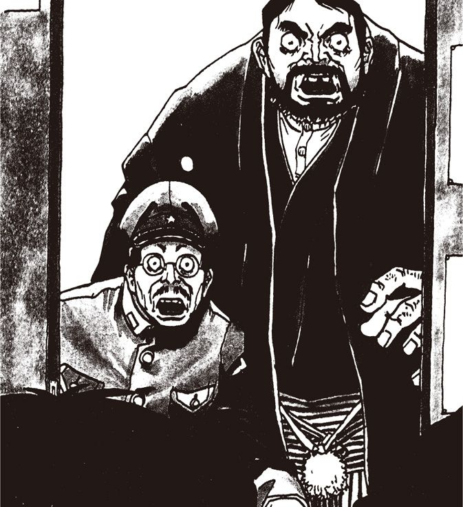
パパの研究
悟少年の部屋を開けると、彼は母親と格闘を演じていた。
「知らないよママ！ ボク知らないよ！」
泣きながら無実を訴える少年に、母親は平手打ちを加えている。
「知らないはずないわ！ 警察まで来ているのよ、このクソガキ！」
まるで般若だ。余はいささかたじろぎながら母親に言った。
「まあ奥さん落ち着いて！ 子供さん泣いてるじゃありませんか！」
「あ。刑事さん......」
母親は慌てて着物の裾を直すと、愛想笑いを浮かべた。
「つい取り乱してしまって......」
「とにかくこの場は、悟くんと我々だけにしてください」
「分かりました......あの、きつく叱ってやってください」
そう言って、母親は部屋を出た。余は悟少年の顔をしげしげと眺めた。つぶらな瞳に涙が浮かんでいる。こんないたいけな子供が、まさか本当に〈やまちち〉なのだろうか。
齋藤が勉強机の上のパソコンに手をかけると、妙に落ち着いた声で少年が行った。
「あ。齋藤さん。別に調べなくっていいよ」
齋藤はギョッとして手を止めた。先ほどまであんなに泣きわめいていた少年は、もうケロリとして、笑みまで浮かべている。
「ど、どうしてそれがしの名を？」
「知ってるよ。こちらのおじさんは竹熊閣下だろ。いや、こんなに早く見つかるとは思わなかったよ」
余はいささかうわずった声で悟少年に言った。
「やはり、君が......」
「そう。〈やまちち〉だよ。僕をここまで追い詰めたのはおじさんたちが初めてだ。ま、こうなったらすべてを話すよ」
「信じられない......本当に、あの事件は全部君の仕業なのか？」
「もちろんそうだよ。もっとも例の人間の精神を狂わせるコンピューターウイルスは、一部パパの研究を参考にしたけどね」
「今は海外の大学で研究しているという山田五郎教授のことか？」
「そうだよ。パパは特定の言語や図形パターンが人間の精神に及ぼす影響を調べていたんだ。そのためのプログラムも作成してね。それを応用したのが〈やまちちウイルス〉の正体ってわけさ。......いや、もちろん僕が勝手にやったことで、パパには責任はないよ」
ダミアン
悟少年は、罪の意識などかけらもないといった風に、いかにも自慢げにしゃべっている。まるでダミアンのようなガキだ。
「〈へっぽこネット〉で竹熊閣下のハンドルを利用したのは悪かったと思ってるよ。いや、あの〈夕焼け級長〉って奴はネット界でも有名な偽善者だからね。いつか懲らしめてやろうと思っていたわけさ。ただ僕の失敗は、閣下がどういう人か分からなかったことだな。いや、それよりも......」
「何だ？」
「閣下のそばに齋藤さんがいたことが誤算だった。ねえ、齋藤さん」
「な、何でござる？」
ビクリとして齋藤が返事をした。
「齋藤さんは何者なの？」
「た、ただのつまらぬ人間でござるが......」
「嘘！ 本当ならここにいる閣下はとっくに刑務所にいなきゃならないのに、まだこうして逃げているというのは、齋藤さんの力だろう？」
いったい悟少年と齋藤は何を話しているのだ？ 余は不審になって悟少年に尋ねた。
「齋藤がどうしたって？」
「ああ、閣下も知らないんだね。齋藤さんが何者で、どこから来たのか」
「う。そういえば......。オイ齋藤、何とか言え」
齋藤の額に大量の脂汗が滲み出た。
「何とか言え、と申されましても」
悟少年が再び齋藤に問うた。
「僕が作ったプログラムで世界中のネットを検索したけど、齋藤さんの記録はないんだ。いや全国の役場の住民記録や出生記録、警察の記録まで調べたけど、データがどこにもない。意図的に削除されたのか、それとも......この世の人間じゃないのか」
ふいに齋藤が笑い出した。
「ふは、ふははは。おもしろいことを言う子供でござるな！」
少年が悪戯っぽい笑みを浮かべた。
「じゃ、もっとおもしろいことを言うよ。昨晩ネットにアップされた齋藤さんのプログラムだけどさ。あれ、まだ完成のメドすら立ってない未来型言語で書かれているよね？ 確か西マサチューセッツ農林水産工業大学で研究されているはずだけど。完成までにはあと10年かかると言われている。どうしてそれを齋藤さんが使えるのか、理由が知りたいんだ！」
齋藤は黙ってしまった。余は両の目を皿のように見開いて齋藤を見た。最近のすったもんだですっかり忘れていたが、確かに齋藤のふるまいは、余と出会った最初から変だったのだ。
「実は......」
と、齋藤が口を聞きかけた、まさにその時である！ いきなりパタンという轟音とともにドアが破られると、数名の警官が部屋に入ってきた。
「使命手配中の竹熊だなッ！ 貴様を５００億円オンライン詐欺、電話局職員に対する脅迫傷害容疑、仮保釈中の数々の違反行動、及び住居侵入その他もろもろで逮捕する！」
まさか、こんなに早く警察が来るとは！ 余は慌てて窓から逃げようとして、悲鳴を上げた。いつの間に現われたか、外には数百人の警官がひしめいていた。
ふいに齋藤が雄叫びを上げた。
「閣下！ お逃げなされ！」
「逃げろったって......」
「うおおおおおおおおおおおッ！」
いきなり齋藤が警官の中に割って入ると、両手を扇風機のように振り回した。
あっという間に警官数名が壁に激突し、ある者は窓を突き破って地面で血ダルマとなった。外の警官隊から怒声が湧き起こった。
齋藤は外に飛び出ると、パトカーを頭上高く持ち上げ、10メートル先に停車している機動隊の装甲車に投げつけた。
「バ、バケモノ！」
警官隊が齋藤めがけて一斉に発砲した。齋藤の顔面の皮膚が剥げ、中からメタリックに光る機械部品のようなものが露出した。
まるで悪夢を見ているようだ。思わず類をつねってみた。痛い！
ものの５分と立たぬうちに、警官隊は全滅した。齋藤は肩で息をしながら余に近づいてきた。余はへなへなとその場にへたりこんだ。腰が抜けたのだ。
スケジュール
機械の本体を覗かせた齋藤が余に話しかけてきた。
「閣下......見ての通りでござる。それがしは人間ではございません。未来の閣下が派遣した、閣下の忠実な僕なのでござる」
「未来の余だと？」
「御意。今から２＊年後、閣下は世界を統一されるのでござる。しかしながら、未来の閣下は過去の苦労を思い出されて、昔のご自分をサポートするべく、完成したばかりのタイムマシンでそれがしを現代へ......」
「な、何だってえ？」
「信じられないかもしれませぬが、事実でござる。しかし唯一の誤算は到着したとたんにタイムマシンが故障したことでござった。当初の計画ですと、それがしは未来と現代を往来して、未来の閣下の指示を仰ぎながら行動するはずだったのでござる。それが不可能となり、それがしは自分自身の判断で行動せざるをえませんでした。そのため、だいぶスケジュールが狂い申した」
「スケジュールとな？」
「御意。本来であればおととしの暮れぐらいに、ここにいる悟少年と遭遇し、悟少年の天才的技術で画期的なソフトを開発する予定だったのでござる。そのソフトのおかげで閣下は億万長者となり......」
「余が!?」
「御意。その金をもとにメジャーソフトとＩＶＭとオレンジ社を買収、一気に世界征服の礎を築かれることになると歴史の本には書いてあり申す。まあ、２年ほど予定がずれ申したが、何とか悟少年と出会うことができ申した」
悟少年が目を輝かせた。
「凄いや！ じゃ、齋藤さんは未来から来たアンドロイドだったんだね？ それで、僕とこの人が協力して世界を征服するんだね？」
齋藤が大きく頷いた。
「ちょっと待て齋藤。いずれ世界征服するにしてもだ。このままだと余は逮捕されてしまうぞ。これは未来の歴史書に書いてあるのか？」
余が尋ねると、齋藤は暗い顔になった。
「いや、それは......。多少、歴史を書き換えねばなりませんな。でも大丈夫でござる！ タイムマシンが修理できれば、それがし未来の閣下にお会いして、すぐさま援軍を差し向けていただくつもりでござる！」
「おお、それは心強い。で、タイムマシンは直るのか？」
「あと少しでござる。閣下、例の笛をお持ちでござるか？」
「笛？」
余はポケットをまさぐると、以前齋藤から渡された金属の笛を取り出した。齋藤がそれに奇妙なアダプターをつけ思い切り吹いた。
ぴょろろろろろろろろろ～......。
すると、おお、見よ！ 雲の切れ目から蛍光ピンクに輝く金属の円盤が急降下してくるではないか！
その蛍光ピンクの円盤は我々の眼前に止まった。悟少年が限を輝かせて円盤を撫で回した。齋藤は背後に回ってしばらくごそごそやっていたが、急に明るい声で叫んだ。
「いけるかもしれませぬ！ ただしあと１回のワープが限度でござろう。閣下、それから悟殿、しばらく待っていてくださらんか？ ひとっ走り未来に戻って、援軍を呼び申す」
遠くからパトカーのサイレンが聞こえてきた。余は焦った。
「警官隊が来た！ 俺もそいつに乗せてくれ！」
「それはできませぬ。残念ながら一人乗りなのです。なに、少しの辛抱です。未来から一個師団も呼んでくれば、現在の警察などひとたまりもありませぬ。しからば、御免！」
タイムマシンのフタが閉まった。震動があたりを震わせると、あっと言う間にマシンは齋藤もろとも視界から消えた。
パトカーと機動隊がやってきた。余は、もはや逃げるつもりはない。どうせ援軍が来れば、こんな連中は敵ではないのだ。
「た、竹熊だな！ 逮捕する！」
手錠をかけられても、余は不敵に笑っていた。ふははは。どうせこいつら全員死刑だ！ 待っているぞ、齋藤......。
エピローグ・20年後
それがしの名は齋藤。正式名称はネクセス６００型ＲＨマイナスひょっとこＸ９８０００改......。
計画の遅延と多大なる犠牲を払いながらも、何とか閣下と〈やまちち〉を遭遇させることに成功したそれがしは、１回しか使えぬタイムマシンで、西暦２０＊＊年に戻ってきたのでござる。
未来の閣下にお会いして、過去の閣下をお救いするために......。もし過去の閣下にこれ以上の苦痛を味あわせることになれば、それがしはスクラップにされてしまうでござろう。
それがしはタイムマシンを降り、閣下の宮殿に向かったのでござる。
「はて......？」
宮殿は、影も形もあり申さんだ。そればかりか、それがしの記憶する未来の東京とは、似ても似つかぬほど、街の様相が変わっていたのでござる。
始めは時代帯を違えたかと思い申した。しかし何度確かめても今は西暦２０＊＊年でござる......。
それがしの脳裏に嫌な予感が浮かび申した。それで、慌てて○○刑務所に向かったのでござる。
到着して、正門の前に立った時、脇の門が聞いて、一人の初老の男が門番にへこへこ頭を垂れながら出てくるのが見え申した。おお、あのお顔は！ ......その瞬間、それがしはすべてを悟ったのでござった。
「閣下......！」
呼びかけると、初老の男が振り向き申した。そうして、その方の目から、大粒の涙がぼろぼろとこぼれ落ちたのでござる。
「齋藤......何やってたんだア......」
やはり未来が変わっていたのでござった。それがしは閣下の身体を抱きしめると、ひたすら一緒になって泣き崩れるしかあり申さんだ......。
謎の男齋藤の
野望メモ
それがしの名は齋藤。正式名称は根駆査素六百、或英知磨意茄子ひょっとこ......。九十三年一月から始まりし本連載も、今回にて最後となり申した。まっこと長き道のり、さまざまなことがあり申した。連載開始当初、それがしは閣下と対面して撮影や打ち合わせなどをし、この連載の展開予定もかなり決まり申した。が、作家というものは己が書きし文字言霊により新たな閃きを得るもの。閣下も書き始めると次々に先の成り行きが変わり、予定もへったくれもなくなったという次第。また、計算機業界の事情もあり申した。閣下がご使用あそばした九八式計算機は、当時では最新機種なれど、数ヵ月もすればあっと言う間に旧機種。当初の予定ではまずあの覇麗留耶一号を究極的に改造し、世界制服専用計算機として稼働させるとの筋書きでござった。が、これも時代の流れとともに不可能となり、閣下もそれがしもてんやわんやとなり申した。そこで閣下が編み出したるが溌化阿と暗躍が入り交じる計算機物語。この計画では閣下がまず毘屡・外逸を洗脳し、魔異黒楚不渡社を手に入れ、現段階で雨飲度渦九五ならぬ竹熊九五の売り上げにて社会経済を席巻するというものでござった。が、重ねて申すが、作家というものは己が綴りし文字言霊に新たな展開を見い出すもの。やはり閣下は全く別の物語へと突き進まれたという次第。加えて、閣下は出版業界の裏事情に全く詳しいお方。編集者が伝える鯖読みだらけの締め切りなど知らぬ存ぜぬ守りませぬの押しの三手により、極限まで原稿の案をお練りになった。当初は閣下の原稿を読んだあとに片仮名を一切使わぬ当囲み記事を書いたものだが、閣下の筆の早からぬことゆえに、最近では閣下の文章を読まずに勝手に先に書いておった次第。ともあれ、紆余曲折あった連載も、今回にてめでたく完結となって、あとは単行本化を待つばかり。いつになることやら【★152】。ともあれ閣下、連載、まっことお疲れ様でござった。
脚注一覧
文＝スタパ齋藤
第１章 ハレルヤ１号、起動せり！
初出：１９９３年１月～４月
【★１】マック
アップル社のMacintoshコンピュータ。１９９３年頃はＬＣシリーズなどの低価格機が普及し、Ｍａｃを使うユーザーが大幅に増えた。その分、突然のシステムエラーによる再起動音を聞く機会が増えたりもした。
【★２】アミガ
１９８５年の発売当初から「映像やゲームに強い」ことで知られたコモドール社のAmigaコンピュータシリーズ。１９９３年頃はゲーム専用機の台頭もあり、日本ではあまり人気がなかった。現在も存続している。
【★３】タウンズ
富士通のパソコン「ＦＭシリーズ」のうちの「ＦＭ ＴＯＷＮＳ」。日本初のＣＤ‐ＲＯＭドライブ搭載パソコンで、豊富なマルチメディア系ソフトウェアコンテンツを利用できた。
【★４】Ｘ６８０００
シャープの16ビットパソコンシリーズの初代モデル。ＮＥＣの98シリーズ、富士通のタウンズシリーズと並び、当時のホビーパソコンの御三家的存在だった。特にアーケードゲームの移植版が豊富にあった。現在でも根強い人気がある。
【★５】キューハチ
ＮＥＣのＰＣ－９８００シリーズパソコン。１９８０～90年初頭まで、日本国内ではパソコンの事実上の標準機となっていた。膨大なソフトウェア資産があり、現在でもそれらをソフトウェアエミュレータにより動かすことができる。
【★６】ＤＡ
ＰＣ－９８０１ＤＡのこと。比較的に高速なＣＰＵやＦＭ音源を搭載し、ホビーユーザー向けとしても魅力のあった機種。フロッピードライブは5インチも３・5インチも選べた。竹熊閣下も購入。本書本文はＤＡ（ワープロソフトは「松」）で書かれたのだ。
【★７】３８６ＣＰＵ
インテルの32ビットマイクロプロセッサ（ＣＰＵ）で、Intel ８０３８６シリーズを指す。ＤＡには20ＭＨｚ駆動の８０３８６（ｉ３８６ＤＸ）が搭載されていた。当時のホビー系パソコン用ＣＰＵとしては非常に高い処理能力があった。
【★８】ウィンドウズ
Microsoft Windowsのこと。当時はＭＳ－ＤＯＳというＯＳが主流で、キーボードからコマンド（英文字列）を入力してパソコンを操作していた。当時のWindowsはＭＳ－ＤＯＳ上で動くユーザーインターフェースで、グラフィカルな表示をマウスで操作でき、より容易にパソコンを扱えた。
【★９】フロッピーディスク
薄くしなやかな円盤状の磁気ディスクにデータを記録できる記録媒体（メディア）で、当時主流のフロッピーディスクの容量は１ＭＢ前後。つまり１／１０２４ＧＢほど。現在考えると、驚くべき容量の少なさである。
【★10】５インチと３・５インチ
５インチフロッピーは円盤を格納するジャケットが薄く、扱いに注意が必要だった。一方、３・５インチフロッピーは硬い樹脂ジャケット内に円盤が格納されていたため、比較的に安全に扱うことができた。
【★11】ＭＳ－ＤＯＳ
マイクロソフト社のディスクオペレーティングシステム。当時主流のＯＳで、フロッピーディスク1枚にＭＳ－ＤＯＳおよび各種ソフトを収めることができた。
【★12】ワープロソフト
「ワープロ」は「ワードプロセッサ」の略。文字（テキスト）を入力・編集・印刷などするためのソフト。１９８０年代にはワープロ専用機というワープロ機能に特化したハードウェアが10万円とか20万円で売られていたが、超絶大人気だった。
【★13】プリンター
当時の主流は熱転写プリンターやドットインパクトプリンター。今見たら恐らく失笑するほど印刷速度が遅かったが、パソコン内の情報を紙に出せるというだけで「グッジョブ！」な存在であった。
【★14】ちびまる子ちゃんワープロ
タカラから発売されたワープロ専用機で、低年齢層でも利用でき、ちびまる子ちゃんのグラフィックを印刷することもできた。中身はシャープ製。
【★15】ゴマちゃんワープロ
少年アシベのゴマちゃんも印刷できた低年齢層向けワープロ専用機。これも中身はシャープ製。画面表示は4行だった。
【★16】青の巨人
コンピュータ関連大手だったＩＢＭ（International Business Machines Corporation）のロゴが青だったため。海外ではＩＢＭを「Big Blue」と呼ぶこともあるという。
【★17】マウス
Windows95登場以前、マウスはゲームや描画ソフトなど特定のアプリケーションだけで利用できる特殊な入力機器と思われがちだった。Windows95以降はキーボードより多用される入力機器となった。
【★18】Ｂ面
５・２５インチや3・５インチのフロッピーディスクは表裏にデータを記録していたが、「裏返してＢ面を使う」ことはできなかった。しかし3インチフロッピーやファミコンのディスクシステムのディスクにはＢ面もあった。ていうか「Ｂ面？」とイミフに思ってますか？ ......昔々、レコードという樹脂製の円盤形音声記録媒体があり、表裏に音声が記録されており、表面をＡ面と呼び、裏面をＢ面と呼んだのじゃ。めでたしめでたし。
【★19】copy b: a:
ドライブＢ（フロッピー）からドライブＡ（ハードディスク）にファイルをコピーするコマンド。ＭＳ－ＤＯＳでは、こんなふうに英文字列のコマンドを入力して各種操作を行った。一文字でも間違えると正しく動作せず、何かと面倒だった。
【★20】ディレクトリー
現在の主流ＤＯＳで言う「フォルダー」に当たるもの。
【★21】MD
ＭＤはディレクトリーを作るＭＳ－ＤＯＳコマンド。「Make Directory」の略。mkdirと打っても同様に機能する。当時と比べて現在は、こういった細かい「昔の情報」をネット検索で調べられて大変便利である。
【★22】ＢＡＳＩＣ
ＢＡＳＩＣは初心者向けプログラミング言語。ＰＣ－９８０１ＤＡの読み出し専用メモリにはＢＡＳＩＣ環境が書き込まれており、ＭＳ－ＤＯＳなどのＯＳがなくてもＢＡＳＩＣ環境が立ち上がってプログラミングが可能だった......ような記憶があるが、そこまで細かい情報はググっても出てこないのであった。でも多分、竹熊閣下は私生活でハードディスクがクラッシュし、目を点にしてそういう画面表示をご覧になったのだと推察する。
第２章 パソ通・地獄変
初出：１９９３年４月～10月
【★23】パソコン通信
パソコンとパソコンを通話用の電話回線で接続し、チャットやメールや掲示板（ＢＢＳ）などを利用するコンピューターネットワーク。基本的には全世界に全然繋がっておらず、多くない人数が閉じた空間でやりとりする「ごく小さなネット」だった。
【★24】モデム
パソコンが扱うデジタル信号と、通話用の電話回線で流せるアナログ信号を、相互に変換する装置。こちらのパソコン（デジタル信号）‐電話回線（アナログ信号）‐向こうのパソコン（デジタル信号）、という流れのうち、「‐」の部分がモデムとなる。
【★25】ホスト局
パソコン通信の各種サービスを提供する側のコンピュータ。草の根ネット（無料の小規模パソコン通信ネットワーク）のホスト局は、ＰＣ－９８００シリーズとホスト局用ソフト、それから複数のモデムで構成されていたりした。
【★26】有料／無料ネット
当時はパソコン通信の人気が高く、有料の商用ネットも無料の「草の根ネット（草の根ＢＢＳ）」も活況を呈していた。日本では１９９６年以降にインターネット利用が爆発的に普及するが、その頃までパソコン通信は活用された。
【★27】ニフティサーブ
有料パソコン通信ネットワークサービスで、１９８７年にサービス開始。最盛期には会員数２００万人を突破。一時は最大手となった。その後、インターネット利用の普及で２００７年に終焉。現在は「@nifty」としてインターネットサービスプロバイダーとなっている。
【★28】ＰＣ‐ＶＡＮ
ＮＥＣが運営していたパソコン通信ネットワークサービスで、１９８６年サービス開始。日本の有料パソコン通信ネットワークサービスとしては最も古い部類に入る。法人契約まで含めて最盛期は１００万人の会員を有した。２００３年に終焉。
【★29】通信ソフト
ホスト局にアクセスし、パソコン通信をするためのソフト。初心者でも簡単に使えるもの、自動で一連の操作をして最短時間で情報を読み出すものなど、さまざまな通信ソフトがあった。通信ソフトを内蔵したワープロ専用機も存在した。
【★30】全国ＢＢＳ電話帳
電波新聞社が発刊した「日本全国の草の根ネットのアクセス先」をまとめた本。こういった情報誌やパソコン雑誌を手がかりに、アクセスするホスト局を探した当時のネット野郎たちであった。
【★31】ハンドル
ハンドルネームの略で、ネット上で使う「愛称」や「通り名」。ＨＮとも略される。英語圏では「nickname」「screen name」がこれに当たる。
【★32】ボード
パソコン通信の主な目的の一つは「ＢＢＳ（Bulletin Board System：電子掲示板）」を使うことにあった。ホスト上にある文字でやりとりする共有可能な掲示板のようなもので、「ボード」と呼ばれることもあった。
【★33】シスオペ
ＢＢＳ（電子掲示板）などを管理する人。パソコン通信ネットにより役割が異なるが、「不適切な書き込みの削除」「ユーザーのアクセス禁止」などの権限を持つ。当時としては「実力行使もできるＢＢＳの世話役」といった存在。
【★34】電子メール
草の根ネットの場合、そのホスト局を利用するユーザー間でのみ電子メールを使えた。商用ネットも同様だった。しかし、後に商用ネット間の相互接続や、インターネットとの接続により、異なる商用ネット間でのメール送受信も可能になった。
【★35】ＲＯＭ
読み出し専用のメモリをＲＯＭ（Read Only Memory）と言うが、パソコン通信ではこれにかけて「自分では書き込まず、人の書き込みを読むだけの人＝Read Only Member」を「ＲＯＭ」と言った。
【★36】アクティブユーザー
パソコン通信で言う「アクティブなユーザー」とは、アクセスが多いユーザーのことではなく、ＲＯＭへの書き込みやチャットへの参加などを頻繁に行うユーザー。
【★37】98固有文字
「98文字」とも呼ばれ、ＰＣ－９８００シリーズパソコン用の文字セット。ＰＣ－９８００シリーズ以外のパソコンでは正しく表示できないことがあった。機種依存文字とも呼ばれ、異なるパソコンで文字情報をやりとりするパソコン通信では、「機種によっては読めないかもしれない文字を使うのはマナー違反」として嫌われる傾向にあった。
【★38】電報
パソコン通信ホストによっては、接続中（オンライン）のユーザーに対して直接メッセージを送ることができた。送信すれば相手へと即座に届く電報のようなイメージ。チャットへの誘いや軽い挨拶などに使われた。
【★39】チャット
同じホストを使うユーザー同士が、リアルタイムで直接メッセージをやりとりするサービス。個室内で会話するようなイメージで利用できた。女性と一対一でチャットするともなると、そりゃ▲も雨すごくきん金チョ宇したももの野で氏手......。
【★40】オフ会
オフ会とは、いつもはパソコン通信（オンライン）でやりとりする者同士が、実際に（オフラインで）集うこと。現在よりも「オフラインで会う」ことが危険視されておらず、比較的に気軽に行われていた。オフラインミーティング（略してオフミ）とも。
【★41】ポケットモデム
当時は携帯情報端末やノートパソコンの普及もあり、カード（ＰＣカード）型モデムや電池で動く携帯用モデムも存在した。
【★42】ｂｐｓ
パソコン通信時代黎明期の通信速度は１２００～２４００ｂｐｓ程度。送信されてくる文章を目で追って読める程度のスピードだった。エロ写真が全部表示されるまでの時間的感覚で言えば、１２００ｂｐｓは表示される前に餓死するくらい遅いというイメージ。その後に９６００～１４４００ｂｐｓに高まるが、１４４００ｂｐｓでも「もういい、エロ本買いに行く！」と思わせる程度速くなかった。
【★43】テレジョーズ
ＮＴＴコミュニケーションズのサービスで、平日23時～翌８時や土日祝日（終日）には大幅に通話料金が割り引かれるというもの。パソコン通信は電話回線でパソコン同士を通話させるような使い方なので、多くのヘビーユーザーがこの割引サースを利用した。
【★44】パケット通信
データを細かく分割して「小包（packet）」で送るデータ通信方法。当時のパソコン通信の回線の使い方は通話と同じで、接続している時間分の通信（通話）料金がかかった。パケット通信だと、送受信したデータの分だけ通信料金が課金されるので、接続する時間を気にせず通信できた。
【★45】第二電電
ＮＴＴ（日本電信電話）以外の長距離通信事業者で、ＫＤＤＩの前身であるＤＤＩのこと。１９８５年の通信自由化政策により、実質的にＮＴＴの１社独占状態だった通信サービス市場が広く自由化され、これに伴って登場した。
【★46】アクセスポイント
接続先のこと。当時はこちらのモデムがパソコン通信ネット接続先のモデムに電話をかける形で接続した。東京から沖縄のアクセスポイントに接続した場合、東京‐沖縄間での通話料金がかかってしまう。
【★47】AUTOEXEC.BAT
ＭＳ－ＤＯＳ起動時に自動実行される「コマンドを列記したファイル」。テキスト形式のファイルで、書かれたコマンドが順に自動実行される。通常は、ＭＳ－ＤＯＳ起動後のユーザーによるコマンド入力を自動化するために使われる。「オートエグゼクバット」などと読む。
【★48】ＴＹＰＥコマンド
指定したファイルの内容（テキストなど）を画面に表示させるＭＳ－ＤＯＳコマンド。リダイレクトやパイプといった機能とともに使うと、例えば長いテキストを１画面分ずつ表示させたり、複数のファイルの内容を結合させて新ファイルを作れたりするが、現在はそういうコトしないで済む時代なので覚えるだけ無駄かもしれない。
【★49】レジューム機能
パソコンの電源を切る直前の状態を保存し、次回に電源を入れた時に元の状態を即座に再現し、作業を継続できる。今で言う「スリープ機能」のこと。
【★50】起動用バッチファイル
ＭＳ－ＤＯＳはソフト起動時に実行ファイル名を入力したり、オプション機能の英字を追加入力したりする。これらを自動実行ファイルとして書いておけば、その自動実行ファイル名を入力するだけで「いつもの好みの状態でソフトを起動」できるようになる。コマンド操作を簡略化できるというわけだ。
第３章 エロ事師たち
初出：１９９３年10月～１９９４年2月
【★51】Ｈソフト
当時のパソコンの主流だったＰＣ－９８００シリーズは、１９９０年代に入ると処理性能が高まり、映像性能や音声性能も高度化した。それもあってか、アダルトゲーム市場は大いに活性化。より美しい映像と音があり、インタラクティビティーも高い「エロゲー」が市場に溢れた。ただグラフィック的には、竹熊閣下作の昭和の濃さを残すようなものではなく、それ以降にも通じる「アニメ調」だった。
【★52】ＤＴＰ
DeskTop Publishingの略で、パソコン上で雑誌や本のレイアウト～編集を行い、そのままプリンターで出力したり、データで印刷会社に入稿する出版スタイル。１９９０～２０００年代に加速的に進歩・普及した。
【★53】クアドラ
アップルのMacintosh Quadraシリーズのこと。プロセッサにモトローラ社のＭＣ６８０４０を搭載。当時のMacintoshの最上位機種。「クルマが買えるほど高価」なシリーズだったが、シリーズが進み性能が上がるにつれ価格は下がっていった。
【★54】８インチ
円盤の直径が20センチのフロッピーディスクで、１９８０年代頃まで使われていた。ＰＣ－９８００シリーズ用にＰＣ－９８８１Ｎという８インチフロッピーディスクドライブが発売されており、メーカー価格は27万円だった。
【★55】アドベンチャーツクール
コマンド選択式のテキストアドベンチャーゲームを作れるソフト。画像も扱えるバージョンとして「アドベンチャーツクールｍｋⅡ」もあった。ただし実際には８ビットパソコンＰＣ‐８８００シリーズ用ソフト。
【★56】ニューメディア
電電公社（現ＮＴＴ）が提唱した、既存媒体にとらわれない新たな媒体の総称。テレビ電話やケーブルテレビ、遠隔操作可能なホームオートメーションなどがあったが、パソコン通信もニューメディアの一つとされていた。
【★57】アドベンチャーゲーム
一定のストーリーが流れる中、プレイヤーが選択肢から一つを選ぶと、ストーリーの流れが変わっていくゲーム。問いかけに「はい」「いいえ」で答えていく単純なものから、画面内のモノをクリックして何かを見つけるなどするとゲームが進むような、仕組みもグラフィックも高度なアドベンチャーゲームまでさまざまなものがあった。
【★58】ロールプレイングゲーム
スーパーファミコンやＰＣエンジンなどの台頭もあり、パソコンのロールプレイングゲームは少なかった。また、もちろん現在のような通信型のロールプレイングゲームもなかった。
【★59】ファミコン
１９８３年に任天堂より発売された家庭用ゲーム機「ファミリーコンピュータ」の略称。この回の初出は１９９４年で、既にスーパーファミコン（１９９０年発売）が古い機種になりつつあった。なお、１９９４年は松下電器の「３ＤＯ ＲＥＡＬ」、ＳＮＫの「ＮＥＯ ＧＥＯ」、セガの「セガサターン」、ＳＣＥの「プレイステーション」などが登場する次世代家庭用ゲーム機激戦の年となった。
【★60】Ａ列車で行こう
アートディンクの鉄道や都市をテーマにした経営シミュレーションゲーム。１９８６年から続く人気シリーズで、パソコン版やゲーム専用機版まで含めると、20タイトル以上リリースされた。
【★61】トルネコの大冒険
人気作品『ドラゴンクエスト』シリーズをモチーフにした『Rogue （ローグ）』的ゲームシステムのＲＰＧ（ロールプレイングゲーム）。Rogueは文字だけで表現される「地下ダンジョンを探検するゲーム」で、１９８３年から広まった。
【★62】シミュレーションゲーム
コンピュータ上に仮想的な「場」を設定し、その中で進行する現実的な事象に参加しつつ遊ぶゲーム。戦争の戦略や戦術、企業経営や都市の運営、航空機の操縦等々、さまざまなシミュレーションゲームがあった。当時はパソコンの処理性能も高まっていたため、リアルタイム性の高いものも多かった。
【★63】アートディンク
日本のコンピューターゲームメーカー。代表作は『Ａ列車で行こう』シリーズ。
【★64】トキオ
東京都第24番目の特別区「トキオ」（スペースコロニー）を舞台にした都市運営シミュレーションゲーム。プレイヤーは区長となってトキオ区の運営を行う。
【★65】ハウメニロボット
人工知能を備えたロボットを操るシミュレーションゲーム。ロボットに行動パターンを教え、仕掛けられた爆弾を処理させていく。暗い場所ではロボットが暴走するため、ロボットに光を当てるなどパズルゲームの要素もあった。
【★66】新作のプレビューディスク
ゲームの内容や魅力をかいつまんで見せる「ゲームのデモ映像が見られるフロッピーディスク」。多くは販売店専用でユーザーは入手できなかったが、アートディンクはユーザー（ファン）への配布も行っていた。
【★67】ＷＨＯコマンド
パソコン通信ホスト局（ホストプログラム）によっては、「ＷＨＯ」と打てば接続中（オンラインの）ユーザーが一覧表示された。このコマンドを使い、目的の相手を見つけて電報を打ったりした。
【★68】ライフゲイムの宇宙
ライフゲーム（『Conway's Game of Life』）をさまざまな観点で語った解説書。シンプルなルールのシミュレーションから宇宙の不思議に迫ったりもする。ウィリアム・パウンドストーン著、日本評論社刊。
【★69】LifeGame
『Conway's Game of Life』のことで、単純なルールで生命の誕生や進化などをモデル化したシミュレーションゲーム。１９７０年に考案され大流行し、多くのコンピュータ上でプレイ（というか観察）された。現在はウェブブラウザでも無料アプリでも楽しめる。
【★70】ＺＯＯ
ライフゲームのルールは単純だが、そのシミュレーション結果には引き込まれるような妙味がある。当時はライフゲームライクな亜流ソフトも多かった。『ＺＯＯ』もその一つだと思われるが、もう20年以上も前のことだから忘れちゃった～思い出せなくてごめんなさ～い、じゃあさよなら。
【★71】シムアント
米マクシス社の「シム」シリーズ・シミュレーションゲームの一つ。アリ（蟻）の生態がシミュレートされ、プレイヤーはアリに餌を与えたり誘導したりし、アリの繁殖やアリ同士の攻防を観察する。
第４章 再び〈へっぽこネット〉へ
初出：１９９４年2月～１９９４年4月
【★72】チャットルーム
チャットは雑談のことだが、コンピュータネットワーク上では文字などを使ってリアルタイムで会話などをすることを指す。そのための仮想的な個室がチャットルーム。施錠することも開放することもできた。
【★73】ＩＳＤＮ
デジタル回線による電話網サービス。高速（64Ｋｂｐｓ）で安定したデータ通信が可能で、アナログ電話回線にあるノイズや混信などもないので音声通話の音質もクリアだった。使用にはＤＳＵやＴＡ（ターミナルアダプタ）などの機器が必要。
【★74】ＩＳＮネット64／１５００
ＩＳＮネット64は２本の銅線（メタル回線）を使った一般家庭向けのＩＳＤＮサービスで、ＩＳＮネット１５００は1本の光ファイバーを使った高速・企業向けＩＳＤＮサービス。
【★75】ＤＤＸ
正しくは「ＤＤＸ‐ＴＰ」で、１９８５年に始まった「固定電話回線からでも使えるパケット通信（デジタル通信）サービス」。通信型株式取引（ホームトレード）などに利用されたが、その後はＩＳＤＮに取って代わられた。
【★76】Ｂ‐ＩＳＤＮ
高速通信が可能な次世代のＩＳＤＮ回線を指した。これに対して従来のＩＳＤＮはＮ‐ＩＳＤＮと呼ばれた。「Ｂ」はBroadband、「Ｎ」はNarrowband。
【★77】ログファイル
パソコン通信は基本的にすべてテキストで情報をやりとりした。そういったやりとりをテキストファイルとして保存したのが、当時で言うところのログファイル。
【★78】エディター
テキストエディター（記述と編集に特化したワープロソフトのようなもの）のこと。パソコン通信のログファイルはテキストファイルなので、テキストエディターを使えばいくらでも改竄できた。
【★79】フォーマット
基本的には、ディスク類は「フォーマット（初期化）」してからでないとデータを書き込めない（あらかじめ初期化されて売られているものが多い）。一部ユーザーは誰かにディスクのフォーマットを依頼する時に「このディスク、フォルマって～！」と言っていたという。
【★80】人工無能
人との会話を行う「おしゃべりプログラム」のこと。プログラムの発言は一見知性があるように見えるが、ユーザーの言葉を拾ってそれにマッチする言葉を「人っぽく」返しているだけである。パソコン通信時代から多数の「人工無能プログラム」が実在している。
【★81】第５世代コンピューター
ある基準でコンピュータを世代分けすると、第１世代が真空管を使ったもの、第２世代がトランジスターを使ったもの、第３世代がＩＣ（集積回路）やＬＳＩ（大規模集積回路）を使ったもの、第４世代が超ＬＳＩ（超大規模集積回路）を使ったもの（現在のコンピュータ）。第５世代コンピューターは、高度な人工知能を持ち自ら考えたり人と自然に会話したりする未来のコンピュータを指した。
【★82】シェル
コンピュータのユーザーが直接関わるソフトウェアユーザーインターフェース部分を指す。ＭＳ－ＤＯＳ時代にはいろいろなシェルがあり、主にはユーザーの利便を高める類のものだった。一方で、コンピュータからのメッセージや表示を特定のキャラクターの話し言葉やグラフィックなどにする「お遊び系のシェル」もあった。
第５章 〈やまちち〉
初出：１９９４年5月～１９９４年11月
【★83】サブシス
サブシステムオペレーターの略で、システムオペレーターの手助けをする準管理人。
【★84】ホストプログラム
パソコン通信ホスト局を稼働させるためのプログラム。パソコン向けにフリーウェアも多数あった。
【★85】幽霊メール事件
いや注釈を書けって言われれば書きますよ。ライターだし。でもねえ「幽霊メール事件」とか言われても、当時そういうのなかったし。ていうか竹熊さんが考えた架空の事件でしょコレ。そういうのの注釈とか無理だし。マジ勘弁してくださいよ。
【★86】売ります買います
当時の商用パソコン通信ネットには、掲示板（ＢＢＳ）の中に「売ります」「買います」といったコーナーがあった。雑誌の売ります買いますコーナーの電子版のような感じで、実際にフリーマーケットとして機能し、売り買いがなされた。
【★87】オンラインコマンド
パソコン通信ホスト局に接続中（オンライン）のユーザーを一覧表示させるためのコマンド。どのホスト局でも使えたというわけではない。
【★88】ＷＨＥＲＥコマンド
これも接続中のユーザーを一覧表示させるためのコマンドと思われるが、見たことないので竹熊さんのご都合により発案された架空のコマンドかもしれないけど、ホントにあったコマンドかもしれないし、よく分かんないかもしれない。
【★89】シグオペ
ＳＩＧ（Special Interest Group）やフォーラムなど特定ジャンル・テーマ用ＢＢＳ（電子掲示板）における運営係。トラブルや要望への対応をはじめ、話題の提供なども行っていた、いわば個々のＢＢＳのまとめ役。
【★90】ボードリーダー
大手商用パソコン通信サービスの〈ニフティサーブ〉では、システムオペレーターの指名でボードリーダーが置かれた。特別な権限を持たないが、特定の掲示板で話題の進行役や世話役として活躍した。
【★91】フリーウェア
パソコン通信時代のフリーウェア（無料で使えるオンラインソフトウェア）は、通信ソフトからゲームソフトまで豊富にあった。ただし通信速度が速くなかったので、ダウンロードにはそれなりの時間がかかった。それもあってか、フロッピーディスクやＣＤ‐ＲＯＭに多数のフリーウェアが収録され雑誌付録として提供されたり、そういったディスクが販売されたりもした。
【★92】逆探知
物語では電話がアナログ交換機時代。逆探知は目視による追跡だったため、相応の時間がかかった。デジタル交換機時代の現在は、通信記録が自動的に残るため、容易に逆探知が可能となった。ただし、どちらの時代も特定の手続きが必要で、手軽に行える類のものではない。
【★93】デジタル回線／アナログ回線
前注釈を参照。ちなみに携帯電話の場合、「どの基地局の周辺にいるのかが分かる程度」だとされているが、スマートフォン等使用時はＩＰアドレスからより高精度に発信者を特定できる可能性がある。
【★94】４８６／２８６
４８６も２８６もＣＰＵのこと。１秒間に何百万個の命令を実行できるかを表す「ＭＩＰＳ」値で比べると、２８６（８０２８６／10ＭＨｚ）が１・５ＭＩＰＳ、４８６（８０４８６ＤＸ／33ＭＨｚ）が27ＭＰＩＳ。４８６から２８６に交換されてしまうと、計算速度が１／18に低下して〈ニセくまぴょん〉は真っ青だし号泣だしガッカリというわけだ。しかし実際は、両ＣＰＵはサイズもピン数も異なるので物理的に交換できない。
【★95】ネットワーク販売方式
１９９４年頃のネットを使った通信販売は、主に商用パソコン通信ネット経由となった。まだ現在のような本格的なネット通販はなかった。２０００年前後に高速かつ安価なインターネット接続サービスが普及し始める頃から、徐々に現在のようなネット通販のカタチが整っていった。
【★96】フィルタープログラム
このテの「ＩＤやパスワードなど個人情報を盗むプログラム」は、パソコン通信時代も現在も存在する。ただ、パソコン通信時代は常時接続ではなかったのと、インターネットのような通信形態ではなかったので、現在のように「知らない間に個人情報が大陸方面に流れてしまった」的なことは起きていなかった。現在のインターネットはどこにでもつながるが、その分、どこにでも個人情報が流れてしまう可能性が高まってしまった。
【★97】通信網利用者の増加を熱望
パソコン通信時代に「パソコンを持っていてパソコン通信もやっている」という人は少なかった。現在はスマートフォンがあれば誰でもインターネットにアクセスでき、人と人が容易につながれる時代になった。実際、ネット経由で仕事を依頼されることも増えて大変便利で好都合な環境となったが、一方では先ほどから編集者が「注釈の原稿の進捗状況はいかがですか？」と5回も6回もメッセージをよこしてくる大変不快で不都合な環境ともなってしまった。
【★98】アクティブユーザー
あれっコレと同じ注釈前にも書いた気がするんですけどまあソレは置いといて、活発に書き込みをしたりチャットに参加したりするのがパソコン通信時代で言うアクティブユーザー。また、注目度の高いアクティブユーザーの周囲には、取り巻き的なアクティブユーザーが集まったりもした。その様子を見て「一部のウザい連中が仕切るのがパソコン通信というものだ」と揶揄する向きもあった。
第６章 恐れと欲望
初出：１９９４年12月～１９９５年9月
【★99】同報メール
同じ文面のメールを複数ユーザーに対して同時に送るメール送信機能。ホスト局によって使えたり使えなかったり制限されていたりした。現在ではインターネットメールで使える同報メール送信ソフトがあり、相手によって文面を変えることもできる。
【★１００】スクリーンセーバー
ＤＯＳ時代のパソコン用ディスプレイはＣＲＴ（ブラウン管のようなもの）だった。長時間電源を入れておく場合は、画面への文字の焼き付きを防ぐため、スクリーンセーバーが必須だった。後に、見て楽しむタイプも登場した。
【★１０１】ウイルスチェッカー
ＤＯＳ時代もやはり、ウィルスを発見・除去するウィルスチェッカーがあり、そのウィルスチェッカーを欺く新型ウィルスが登場するというイタチごっこが繰り広げられた。ただ、現在ほど多くなく、また悪質・陰湿でもなかった。
【★１０２】ビープ音
「ピー」や「ピポッ」といった単純な電子音。ＰＣ－９８００シリーズ（初期型除く）ではプログラムにより音程を変えるなどして、ビープ音だけでＢＧＭを演奏したゲームもある。
【★１０３】ドット絵
動画を快適に扱えない当時は、動く画像といえばドットで描かれた粗い絵のアニメーションが主流だった。しかし、一流の「ドット絵師」が手掛けるそれは、非常に完成度が高く動きもリアルだったりした。
【★１０４】ワクチン
ウィルスソフトを発見したり、その動作を封じたり、ウィルスソフト自体を除去したりする「ウィルス対策ソフト」のこと。アンチウィルスソフトとも言う。
【★１０５】ＤＩＲコマンド
ユーザーが現在作業を行っているフォルダー（ディレクトリー）にあるファイルを一覧表示させるコマンド。キーボードがカナ入力モードになっていると「シニス」と入力されたので、「シニス！」と言って反応する人はＤＯＳ野郎ってわけですな。
【★１０６】ＣＨＫＤＳＫコマンド
フロッピーディスクやハードディスクのファイルシステムのエラーをチェックし、修復するためのコマンド。CHecK DiSK（チェックディスク）の略。
【★１０７】ヒューララ感覚
データなどの仮想的なものが一瞬で失われた時の「しばらく信じられず感じられもしない大き過ぎる喪失感」などを指しがちだが、この言葉が意味する感覚は人にもよる。ある人は「自分の時間だけが止まって、周囲が動いているような感じ」と言う。
【★１０８】プロテクトノッチ
３・5インチフロッピーディスクの書き込み制御機構。穴を開閉するスライドスイッチがあり、穴が閉じていると書き込み可能で、穴が開いていると書き込み不可能となる。書き込み不可能なら、ウィルスも入り込まないという話ですな。
【★１０９】課金
有料のパソコン通信ネットワークサービスの「利用料」のこと。メール利用料、ダウンロード料金など、いろいろな課金タイプがあった。こういった利用料のほか、もちろん通信料（当時は通話料相当）がかかった。
【★１１０】ＧＯコマンド
パソコン通信ネットでは、特定の掲示板などに飛ぶためのショートカット的なコマンドがあった。現在ではウェブページ間の移動はクリック操作だが、当時はほぼ全部コマンド入力で行っていた。
【★１１１】自動着信
ここで言うモデムは、電話機と電話回線の中間に接続されていた。必要に応じて「電話がかかってきたらモデムが電話に出る」という自動着信（自動応答）設定ができた。でも留守番電話ではないので「ただいま留守にしております......」とか言わない、とまで書かないと理解されにくいアナログな時代の機器設定とも言えよう。
【★１１２】コールバック方式
当時はセキュリティや通信料金負担軽減のために企業などで使われていた、と言われているが、単なるパソコン通信野郎の注釈筆者は実際に見たことも触れたこともないのであった。
【★１１３】インターネット
当時、一般向けインターネット接続プロバイダが増えるわ米AmazonはサービスインするわWindows95登場でインターネット利用がラクになるわで、いろいろと大騒ぎであったが、国民レベルで言えばごく一部での出来事。本格普及は２０００年以降となる。
【★１１４】マンマシンインターフェース
人と機械の間で情報をやりとりする機構のこと。スイッチ、ダイヤル、キーボード、メーター、ディスプレイ、さらにはソフトウェア等々を指す。ユーザーインターフェース（ＵＩ）とも言える。
【★１１５】無停電電源
停電があっても電力を供給し続けられる装置のこと。パソコン用などに使われる多くのものは、突然の電力遮断によるデータ消失を防ぐための「一時的な電源」。停電後にソッコーでデータを保存して正しい手順でパソコンをシャットダウンするまでの間、電力を供給するわけですな。
【★１１６】携帯電話
１９９３～２０００年頃はデジタル式携帯電話の黎明～普及期。ただし、初の写真付きメール（写メ）を使えるようになったのが実質２００１年前後なので、まだまだ全然現在のスマートフォンとはほど遠く、現在のいわゆるガラケーよりもずっと地味で慎ましくてショボいケータイであった。
【★１１７】システム管理画面
パソコン通信用ホストプログラムの設定画面。単なるパソコン通信野郎だった注釈筆者は見たことがないが、多分、黒地に白文字だけのたいしたことないツマラネエ画面表示だったんだろうなあと妄想する。
【★１１８】スーパーユーザー
複数ユーザーが利用できるコンピュータ環境で、一般ユーザーが実行できない機能や変更を行える「管理者権限を持つユーザー」のこと。Windowsの「Administrator」やルータの「admin」もスーパーユーザーのアカウントである。
【★１１９】ＭＯドライブ
光磁気ディスクを読み書きするための装置。磁気ディスクにレーザーを当てて磁性を消したり出現させたりする、凄く未来なフィーリングの情報記録方式を用いたドライブ。パソコン用としては１２８ＭＢ～２・３ＧＢ容量の３・５インチディスクが存在した。ＧＢの容量があるものは「GIGAMO（ギガモ）」と呼ばれた。
【★１２０】ＷＷＷ
「こいつマジかよwww」的に草を生やす「（笑）」の意味ではもちろんなく、「World Wide Web」の略。ウェブブラウザでサーフィンできるハイパーテキスト記述言語で記述された仮想的なマルチメディア情報世界、とか書くと当時的にサイバーだが現在ではイミフですな。
【★１２１】クレジットカード詐欺
カード番号と有効期限、名義が分かれば決済において成りすましが可能なのは、今も昔も同様。現在ではセキュリティコードにより若干安全性が高まってはいるが、絶対に遭いたくないなら対面での現金取引もしくは物々交換で行こう！
【★１２２】パソコンの急激な値下がり
現在は３万円とか５万円でパソコンを購入できるが、１９９５年頃はフツーに20～25万円していた。しかしそれ以前は当然の如く一式40～50万円だったり１００万円オーバーだったりしたので、昔から現在までずーっとパソコンは値下がり中と言える。処理性能や貨幣価値を考えると「パソコン価格は暴落の一途を辿っている」と言えまくりであろう。
【★１２３】トリガー
「銃の引き金」から転じて、何かを引き起こすための要因を指すようになった。って知ってますよねきっと。本書編集者的に「何か笑える注釈書いてネ」という感じでこの用語の注釈記述を依頼された感じだが、すいません無理でしたゴメンナサイ。
【★１２４】アクセススピード
当時の個人で使える「高速な回線」としては64ＫｂｐｓのＩＳＤＮがあった。そしてさっき注釈筆者宅の光回線の速度を計測したら約64Ｍｂｐｓだった。なお、データ通信でのＭ（メガ）はＫ（キロ）の１０２４倍。予想よりたいしたコトないですね現在の通信速度。
【★１２５】ｂｐｓ
１秒間に何ビットのデータを送れるか表す「データ伝送速度の速さを示す単位」。ＹＡＨＯＯ！知恵袋に「１Ｍｂｐｓだと１時間に４５０ＭＢ送れるヨ」って書いてあったんですけど、そこから計算すると、約64Ｍｂｐｓなら１時間に約28・８ＧＢ送れますな。これも想像より高速化してない感じっすかね......。
【★１２６】プロトコル
ＩＴ用語ではデータ伝送時の手順や決まりのことを指すが、一般単語としては外交上の儀礼や条約原案のことを指す。あと一般単語としてプロパティって財産や所有物をコト言うんですよね。あとあとパソコン初心者の女子に「プロトコルって何？」「プロパティって？」と聞かれて「国際儀礼と財産」とか答えるとだいたいイラッとされつつ嫌われるから注意だヨ♪
【★１２７】ネット独自の指向性や考え
パソコン通信黎明期から現在まで、必ず絶対ずーっと、ネット独自のアレな個性を発揮するナニな人っていうのが存在しており、注意しないと本書の物語にあるような非常にカッタリィ波乱に巻き込まれるかもしれないからぁ～マジちゅういだょぉズッ友だょぉぉ★
第７章 みじめな奇跡
初出：１９９５年10月～１９９６年2月
【★１２８】ソースコード
ほらコード式電話のクルクル巻いたコードあるじゃないスか、アレって昔、メシ食いながら電話してたらソースがクルクルコードにかかって拭きにくいことからソースコードって呼ばれたって知ってました～ボクは知りませんし全部ウソですゴメンナサイ。
【★１２９】ＯＡシンドローム
パキスタン南部のシンド州に電子部品メーカーのローム社のパキスタン工場があってそこのＯＡ（オフィスオートメーション）部門のことを「ＯＡシンドローム」ってボクは呼んでるんだけどキミは何て呼んでるかな？ 回答をＡ４用紙にありったけ書いて丸めて燃やそうゼ！
【★１３０】ＣＲＴ
ネットラジオのradikoでも聴けるCompany Radio Tochigiの放送周波数は県北８６４ｋＨｚ、県央１５３０ｋＨｚ、県南１０６２ｋＨｚだが、昔のパソコンディスプレイはCathode Ray Tubeっていうガラスの筒で、高価であった上、非常に重く嵩張って邪魔だった。
【★１３１】マザーボード
コンピューターを構成する主要な電子回路基板でメインボードとも呼ばれるんですけど、マザーって良くないですかマザーって、『エイリアン』でシガニー・ウィーバーがノストロモ号制御コンピューターを「マザー！」って呼んでたし、何か「マザー」って来ると「コンピューター」って感じしません？ あ、しないですか。こりゃ失礼しました。
【★１３２】ヘッドマウントディスプレイ
頭部に装着するディスプレイ装置で、目の前に１００型ディスプレイがッとか言って売られたりしてましたけど、いや～なかなか流行りませんな～、でも軍用のＪＨＭＣＳとかって凄いんですってよ奥様、敵機を見るだけでロックオンなんですって～、んまあ～。
【★１３３】バーチャルショッピングモール
一時期「立体的な商店街」がネット上に現れて、仮想商店街の中を歩き回れる感じで買い物できたんスけど、アレ結局店から店への移動超面倒で一瞬で廃れたけど、なんかこの章の注釈フザケてる感じですまんす、反省するっス、押忍。
【★１３４】オートログイン
パソコン通信ネットワークのホスト局に、自動的にアクセス～ログインすること。パソコン通信クライアントソフトの機能の一つ。現在のようにネットへは常時接続ではなかったので、通信のたびに接続の手順を踏むという手間を省いたわけですな。
【★１３５】マックＯＳ
Macintoshコンピュータ用ＯＳは、現在はＵＮＩＸベースのＯＳ Ｘ（オーエス・テン）だが、当時はこれと大きく異なった。何が異なったか勇気を振り絞って言ってみると、当時は不安定で分かりにくく扱いにく......若干の殺気を感じたので説明は中断するが、現在のＯＳ Ｘ系は本当に安定して使いやすく、当時とはぜんっぜん違っ......再度殺気を感じたのでこのへんで。
【★１３６】オープニングデモ
１９９０年に「ＩＢＭ ＰＣ／ＡＴ互換機」上で日本語（ＤＯＳ／Ｖ）が扱えるようになったが、その頃からＩＢＭ ＰＣ／ＡＴ互換機でゲームをプレイするスタイルが急増した。海外のゲームの多くは、映画のようなオープニングデモによりゲームの世界観が説明され、その映像美でも人気を集めた。
【★１３７】ソースプログラム
一般にはソースコードと呼ばれる「特定のプログラム言語で書かれた人間も内容を判読できる文字列」を指す。これをコンパイルなどしてコンピュータが解釈・実行できる状態にしたものをプログラムと言う。
【★１３８】隠しコマンド
公表されていないが存在する「プログラム上で特定の目的を果たさせるための命令等」を指す。アニメ作品『風の谷のナウシカ』における「バルス」みたいなモンですな。これとは別に、現在のスマートフォンなどにも「イースターエッグ」と呼ばれる「隠しメッセージが表示されたりする公開されていない操作法」があったりもする。
【★１３９】バーチャファイター
１９９３年に発売された３Ｄ対戦型格闘アーケードゲーム。こちらからは積極的に攻撃せず、相手の出方をただただ待って隙を狙う「待ちプレイ」は、それまでの格闘ゲームと同様に嫌われがちだった。
第８章 野望の果て
初出：１９９６年2月～１９９６年9月
【★１４０】スーパーコンピューター
１９８０年代頃から富士通、日本電気、日立など日本の各メーカーが活発にスーパーコンピューターの開発を行い、もちろん販売もされた。日本のスーパーコンピューター輸出における「日米スパコン貿易摩擦」が起きたりもした。
【★１４１】アクセラレーター
特定の機能の処理速度を高めるハードウェアやソフトウェアのこと。当時はパソコンのマザーボードに追加するカード型アクセラレーターなどがあった。
【★１４２】Win95
Microsoft Windows95のこと。それ以前のバージョンとしては、１・０（１９８５年）、２・０（１９８７年）、３・０（１９９０年）、３・１（１９９２年）があった。
【★１４３】マルチメディア
文字、静止画、動画、音声などを同時に扱えること。現在では当たり前のこととなったが、当時やそれ以前は「文字だけ」「動画だけ」などを扱うのが普通だったので、「同時にいくつも」で「マルチ」ということになった。情報送受信のインタラクティビティも含む言葉なので、詳しくはググったりしてほしいが、今さら覚えてもアレな言葉かもしれない。
【★１４４】デジタルキャッシュ
現在で言う「電子マネー」のこと。１９９５年にはイギリスの「MONDEX（モンデックス）」、１９９６年頃にアメリカの「VISA cash」など電子マネーの実証実験が行われた。
【★１４５】写ルンです
富士フイルムの「レンズ付きフィルム」タイプのカメラ。ユーザーは撮るだけで、そのまま写真店などに渡せば写真をプリントしてもらえた。「使い捨てカメラ」とも呼ばれたが、カメラ部は回収され再利用されたことから、フィルム業界は「使い切りカメラ」と呼んだりした。
【★１４６】エラーメッセージ
このような「身も蓋もない」もしくは「言われても対処のしようがない」ようなエラーメッセージが多く出たものであった。検索後に「０件が見つかりました」というメッセージが平然と出る時代でもあった。
【★１４７】ハングアップ
コンピュータがＯＳレベルで操作を受け付けなくなる状態。電源強制オフや再起動などの対応が必要で、作成中のデータが失われたりした。当時のパソコンでは多々見られた「症状」......かもしれない。
【★１４８】ループ
主にソフトウェアの処理がバグなどにより終わらないなどして、ユーザーがソフトウェアを操作できない状態に陥ること。「ストール」「フリーズ」という言い方も。当時も現在もよく見られる「症状」......ですよ、ね？
【★１４９】マーフィーの法則
主に失敗経験から生まれたユニークで教訓のある経験則。「トーストがバター塗布面を下にして落ちる確率は、カーペットの値段に比例する」「失敗してしまう手順がある場合、ヤツはそれを選んでしまう」など、諺じみた笑える法則が無数に存在する。
【★１５０】マックの爆弾
当時のMacintoshコンピュータではシステムエラーが起きた時、爆弾マークとともに「システムエラーが起きました。エラータイプ10」などと表示された。ユーザーが行えることは「再起動」ボタンのクリックくらいだった。なお、現在のＭａｃＯＳ Ｘにもそのような状態があり「カーネルパニック」と言うが、なかなか見ることができない（ＯＳが非常に安定している）。
【★１５１】ＡＴ
当時主流だった「Windowsが動作するパソコン」は「ＩＢＭ ＰＣ／ＡＴ互換機」だった。「ＡＴ互換機」「ＡＴ」「ＤＯＳ／Ｖ機」とも呼ばれた。
【★１５２】単行本化
本連載終了時、現在から20年前であったが、パソコンは日進月歩で機種入れ換えも激しく、やや古い情報が掲載されている連載記事の単行本化は希であった。本連載も同様、単行本化される動きはなかった。ところが、四半世紀近く経った現在、イキナリ単行本化！ いや～ビックリしましたよ～座談会で竹熊さんとお会いした時に「これホント奇跡ですね！」とかハモりましたよええ。注釈担当筆者も頑張って当時のことを思い出しつつググりつつ、この注釈を、ハイ、今、書き終えました。隅々までお読みいただき、ありがとうございました。それでは読者様、よいお年をお迎えください（←２０１５年12月21日深夜に最後の注釈を書いているため）。
連載開始の経緯
――まず『ＥＹＥ－ＣＯＭ』誌で『竹熊の野望』を連載することになった経緯を教えてください。
竹熊 一番最初は『ＥＹＥ－ＣＯＭ』編集長の福岡俊弘さんと、アスキーのＡＤだった佐藤英人さんからですね。佐藤さんは漫画家の桜玉吉の古い友人で、僕は玉吉と友達だったから、佐藤さん経由で福岡さんを紹介された。時期的には、『サルまん』（注：『ビッグコミックスピリッツ』で連載されていた相原コージ・竹熊健太郎の共作漫画『サルでも描けるまんが教室』）が91年の暮れに終わったんですが、その後ですね。
松井 私は当時『ＥＹＥ－ＣＯＭ』編集部に入ったばかりだったんですけど、お笑い系の記事を担当していたこともあって、突然、福岡編集長に、「竹熊さんの連載が決まったから、お前やれ」と言われて。ただ、最初にどんな連載にするかっていうのは決まってなかったですよね。
竹熊 全く決まってなかったです。僕はパソコン初心者で、98ＤＡを買ったばっかりだったんで、福岡さんに会った時にそれを言ったら、「初心者が悪戦苦闘しながらパソコンを覚えていく過程を何かで連載してください」って。で、そこで福岡さんの口から、「タイトルは『竹熊の野望』で行きましょう」って出たんです。その前まで『サルまん』をやっていたから......。
松井 『野望の王国』（注：『サルまん』の劇画調の部分は『野望の王国』のパロディだった）ですか？
――ゲームの『信長の野望』も関係あるのかと。
竹熊 ああ、『信長の野望』と『サルまん』にひっかけて、『竹熊の野望』になったのかもしれませんね。で、そのタイトルならば、パソコンを覚えて世界征服するみたいな話になるかなと。当初は、初心者がパソコンを買って最初につまづくことは何かとか、割と雑誌の意向に沿った、ハウツー的なページになるはずだったんですよ。でも途中でそれがどっか行っちゃった（笑）。まあ僕がページを持つからには、笑えるページにしようっていうのは最初からあったんですけど、でも『ＥＹＥ－ＣＯＭ』には他にもそういう初心者企画はあったので。いしかわじゅんさんの「だってサルなんだもん」とか。
――『ＥＹＥ－ＣＯＭ』には著名人がよく連載していましたよね。鴻上尚史さんとか田村英里子さんとか。
松井 あの頃の『ＥＹＥ－ＣＯＭ』はメジャー誌たらん、という時期で。ちょうど『竹熊の野望』と重なる時期だと思うんですが、短期間で３万部から10万部に伸びたんです。それはとりもなおさずパソコンの普及と重なっているんですけど。
竹熊 ただ僕自身は結局、パソコンの専門家じゃないし、パソコンライターってほど知識もなく、僕一人だと非常に不安があるので、詳しい人をつけてほしいってことで、スタパ齋藤さんにアドバイザー的な感じで参加してもらったんですね。
齋藤 打ち合わせは、途中からパソコン通信でやってましたね。最初は何回か竹熊さんの家に行っていましたけど。連載初期の写真は、本当に竹熊さんの家なんです。
竹熊 当時の三鷹のマンションですね。これがまたボロい築35年ぐらいの、貧乏臭い部屋で（笑）。
齋藤 通販広告（第17回）も竹熊さんの家で作りました。フョトショップでいろいろスキャンして。
松井 これ、大西ジム（注：パソコン通販会社）の広告のパロディですよね。
竹熊 編集部からマックのクアドラを借りて、齋藤さんに教えてもらいながら。
齋藤 ２人で徹夜で作ったのを覚えてますね。ハイになって、竹熊さんからどんどんくだらないフレーズが出てくる（笑）。あの通販広告のイラストは、竹熊さんが描いたんですよね。
竹熊 女の子の絵は僕ですね。『サルまん』でも僕は絵も担当していたので、まだこの頃は描けたんです。
――このパロディ広告は非常に『サルまん』的です。
竹熊 『サルまん』の延長ですね。こういうのが僕はまた好きで、子供のころからパロディの新聞とか作ってたんですよ。テレビ欄のパロディとか作ってて。
齋藤 Ｈソフトのタイトルがどんどん出てくるところ（第18回）もおもしろかったです。古い映画とかのパロディになっていて。「君の縄」とか（笑）。
竹熊 ギャグに関しては現役感があったというか、『サルまん』を足かけ３年やって、毎週アイデアを出して作ってましたから、その勢いでやった連載と言えますね。
イラストとコラム
――『竹熊の野望』はイラストも特徴的ですね。羽生生さんは第４回から担当されています。
竹熊 『ファミ通のアレ（仮題）』（『ファミコン通信』で連載されていた羽生生純・竹熊健太郎の共作漫画）は、『竹熊の野望』をやっている時期に始めたんですよね。
羽生 だから『竹熊の野望』が、僕が竹熊さんと組んだ一番最初の仕事なんです。当時、自転車屋に住み込みでバイトしながらちょっとずつ漫画やイラストの仕事をやっていた時に、声をかけていただいたという。
竹熊 やっぱり僕が絵まで描くのはしんどかったんで、途中で誰かに頼みたいと思って。
羽生 どうやって僕に依頼が来たのか覚えてないんですけど、当時『ログイン』に漫画大賞っていうのがあって、それに応募して佳作か何かをもらったんです。その時の審査員が桜玉吉さんで、その流れがあるのかなと。
竹熊 羽生生くんを見いだしたのは桜玉吉なんですよね。玉吉からおもしろい絵を描く子がいるってことで紹介されたのかもしれない。で、僕の描く古いアニメ絵よりは、羽生生君の絵の方がいいやと思って。羽生生くんの絵は個性的だから、一度見たら忘れないし（笑）。
――羽生生さんのイラストがあるおかげで、漫画連載のような印象になっていると思います。
羽生生 二人のキャラクターは多分、連載の最初の方の写真を見て作ったと思うんですけどね。
齋藤 連載の最初の方と最後の方では、羽生生さんの絵がきれいというか、より簡潔になっていますよね。最後の方は小説の挿絵的なキメのカットになって。
羽生生 自分の中で絵柄を模索していたんだと思います。最初は素人みたいなもんですから、やりながら学んでいった感じですね。
――一方で、齋藤さんのコラム「野望メモ」は第２回から始まりますね。
竹熊 本編が小説になったから、豆知識みたいな、その回に登場するパソコンのキーワードの解説をやってもらいたいということで始まったんだったと思います。
齋藤 でも〈やまちち〉が活躍するようになってから、書くネタがなくなっちゃったんですよね。新しいキーワードが出てこないので抽象的な話になって（笑）。
竹熊 コラムは全部齋藤さんにお任せでした。
――途中の〈くみりん〉のコラムも齋藤さんが書いていたと聞いてビックリしました。
齋藤 今回単行本化するに当たってファイルをあさっていたら、〈くみりん〉の原稿も出てきて、あ、俺が書いてたんだって（笑）。
――最終回のコラムに、最初は竹熊さんの本編原稿を読んでから齋藤さんがコラムを書いていたのに、最後の方はそれが逆転してしまったと書いてありますね。
竹熊 ああ、僕の原稿が遅いから。
――イラストは原稿ありきで書いていたんですか？
松井 当然、原稿ありきだと思うんですけど、途中からやっぱり竹熊さんの原稿が遅くなっていって...原稿が上がる前に竹熊さんから「こんなイラスト」って内容を聞いて、羽生生さんに伝えて描いていただいて。
羽生生 途中から『ファミ通のアレ』と並行してたから、その流れで一緒にやっていたかもしれないですね。
――竹熊さんの原稿は遅かったんですね。
松井 竹熊さんはもともと編集者でもあるので、嘘とか、サバを読んだ締め切りが通じないんですよ。
竹熊 ギリギリまで粘るから、元編集者のライターが一番タチが悪い（笑）。
松井 しまいには、「松井さん、ウチの窓から入って催促してくれると、迫真さが伝わる」とか、プレイ的なことを言い出されて（笑）。
羽生生 催促プレイですね（笑）。
羽生生純／漫画家。竹熊氏と共作の『ファミ通のアレ（仮題）』で連載デビュー。以降、『恋の門』『俺は生ガンダム』など多数の作品を連載。
最初は素人みたいなものでしたけど、続けながら自分の絵柄を模索していたんだと思います。
ストーリーについて
――『竹熊の野望』を今読み返してみて、竹熊さんご自身はどんな感想をお持ちになりましたか？
竹熊 ほとんど覚えてなかったんですけど、文章は明らかに筒井康隆の影響が強いですね。筒井のドタバタ小説はよく読んでいましたから。あと80年代初頭のエロ本のお笑いページの影響がありますね。鯖沢銀次っていう天才的なライターがいて、彼がエロ本の『ヘブン』で「早大文化新聞」という連載をやっていたんですけど、その文体が「完全殲滅」みたいな、全共闘の立て看板のパロディなんですよ。もっと以前、板坂剛という作家が、村上龍を仮想的にした過激派の新聞のような広告を出していたんですけど、鯖沢さんはその板坂さんに影響を受けていたんですよね。
――『竹熊の野望』はその流れを汲んでいる。だから連載時は新聞のような見出しがあったんですね。
竹熊 さっきも話したように、僕も小学校のころから新聞のパロディを作るのが好きだったんで。あと、僕らの世代は、世の中の規範にハマりたくはないという反抗心で、漫画やアニメを高校に入っても大学に入ってもやめなかった。そんなわずかばかりの反抗心と、時代的にバブルに向かう80年代後半の狂想があって、その辺の気分が『サルまん』にも『竹熊の野望』にも入っている。でも、今読み返すと、最初は小説のパロディみたいな感じですね。当時はお笑いライターでしたから、その延長線上でやっているだけで、作家の意識はなかった。３年という予想外の長編になっちゃったんですけど。
――連載期間は決まっていなかったんですか？
松井 全然決まっていなかったですね。
竹熊 続くまでやってくれと。ただ、最後は打ち切りってわけでもなくて、僕がそろそろ終わりたいと言ったんじゃないかな。『サルまん』も正味２年、足掛け３年だったし、そのぐらいが僕のパターンなんです。自己模倣を延々と続けるってことができないタチなんで。だから僕は売れない（笑）
――ストーリーに関しては、何かベースがあったんでしょうか？
竹熊 ドン・キホーテとサンチョ・パンサみたいな感じで野望に向かって突き進むイメージですかね。でも世界征服といったって、何の具体的なビジョンもない（笑）。
松井 コンピューターだからすごいっていう、『バビル二世』的な感じがしますよね。
竹熊 そう。すごい古臭い、子供の頃の少年漫画のコンピューターっていうイメージしかない。あとは、『サルまん』の時は、僕と相原君と編集者が絡むだけで、基本的には密室劇だったから、ある種うんちくで読ませる部分を作っていたんですけど、『竹熊の野望』は文章ですから、パソコン通信の話になって、結局知識よりも人間関係の話になると、ドラマになっていくんです。それで長期連載になったんじゃないですかね。
羽生生 入口と出口が全然違うものになっているという、そのドライブ感がおもしろいなと思いますね。
齋藤 アクションシーンもあったりして。
竹熊 最後は〈やまちち〉の正体を巡る攻防があってね。ある意味ノッて書いてたんでしょうね。
――ストーリー上の「齋藤」は、ひどい描かれ方をしていますけど、齋藤さん自身は嫌ではなかったですか？
齋藤 いやもう僕は『サルまん』の人と仕事ができるんだって感じで、何も気にしなかったですよ。
竹熊 あの時、僕の〝虚名度数〟が一番高かった時期ですから（笑）。そういえば、「齋藤」を呼び出す笛が出てくるんですよね。耳元で吹くとうるさいという。
――あの笛の元ネタは、もしかして笛で電話をハッキングしていたという伝説のハッカーでしょうか？
竹熊 ああ、それは知ってましたけど、直接は関係ないです。孫悟空じゃないですかね。孫悟空が、お経を読んだら額の輪っかが締まるという。あとは、『人造人間キカイダー』。プロフェッサー・ギルの笛の音を聞くと、キカイダーが激痛に悶えるという。
羽生生 そこらへんが最終回のメカの伏線になっていたんですね（笑）。
――最後はＳＦになりますよね。
竹熊 いやー、最初の段階では、最後がああいう展開になる予定はなかったはずです。後で考えりゃいいやっていうね。でも、一応伏線っぽいことは書いてますね。
齋藤 たくさん伏線は張ってありますよね。で、最後はうまくまとまっていて。
松井英樹／『ＥＹＥ－ＣＯＭ』や後継誌『週刊アスキー』の編集者、コラムニストを経て、現在は広告関連の仕事を中心に活動。
竹熊さんはもともと編集者でもあるので、サバを読んだ締め切りが通じないんです。
当時のパソコン＆ネット事情
――ところで、竹熊さんはいつからパソコンを使っていたんですか？
竹熊 91年の暮れにＤＡを買って。それで、この原稿もワープロソフトの「松」を使って書いていました。あの頃、メモリーが１メガぐらいでしたよね。
松井 外付けハードディスクが40メガとか。
齋藤 今やＵＳＢメモリーでもそんな容量ないですよ（笑）。
――当然、パソコン通信も始められて？
竹熊 連載をやるに当たって、当時アスキーがやっていたアスキーネットのＩＤをもらってやり始めたんですけど、そこで初めて、ネット界を知ったんです。アスキーネットに書き込みテスト用の「junk.test」ってページがあったんですけど、それが悪名高くて。
齋藤 あれはおもしろかったですね。
竹熊 １ヵ月で書き込みが消える仕様だから、みんな罵詈雑言、あることないこと書きまくる。で、そこに常駐している奴らが、ネット界の吹きだまりみたいな感じで（笑）。
齋藤 『竹熊の野望』でも途中、登場人物同士が大喧嘩するじゃないですか。あんなのが毎日起きてましたね。
竹熊 ○○○というハンドルの、伝説のネットワーカーがいたんです。本業がプログラマーで。
松井 ああ、いたいた。
竹熊 彼はアスキーネットの嫌われ者だったんですよ。アスキーネットの掲示板は、今の２ちゃんねるみたいに、まずスレッドを立てる人がいて、その１番の書き込みにレスがついていって、チェーン式に伸びていくという構造だったんですが、スレッドの１番が全部表示される仕様だったんです。行数制限がなかったんですね。で、○○○が、文字の規格にうるさくて、「全角英数字と半角カナは汚い文字だ。こんな汚い文字を使う人は馬鹿だ」と主張するんです。それで彼は、〝汚い文字〟を使っている書き込みを、マクロを作ってアスキーネット中から集めてきて、何万行もスレッドの１番にアップする。そうすると、いったん表示したら、それが終わるまで、ずっと見てなきゃいけないんです。低速回線だと、１番の表示が終わるまで下手したら十何分もかかるという（笑）。完全に嫌がらせですよね。
――他にもそういう方はいました？
竹熊 例えば♡♡♡♡とか。女性なんだけどすごくがんばっちゃう人で、よく論争していましたね。激高すると差別用語も使うという。まあとにかくおもしろい人がたくさんいたんですよ。
齋藤 ネットに○○○とか♡♡♡♡って書いてあるだけで一瞬ドキッとするんです（笑）。
――竹熊さんも書き込みしていたんですか？
竹熊 僕は見ているだけで、ほとんど書き込まなかったですね。恐ろしくて書けないです（笑）。
――『竹熊の野望』に出てくる罵詈雑言だったり喧嘩だったりは、アスキーネットを参考にしたんですね。
竹熊 そうですね。アスキーネットでネット社会の基礎知識を学んで。どれだけ人間の本質がむき出しになるかという（笑）。
松井 本編にも出てきますけど、「死ね死ね死ね」ってコピペの書き込み、実際にありましたよね。今考えると幼稚な（笑）。
竹熊 でも本質的には今と変わらないですよね。
羽生生 本編にネット警察（第43回）なんかも出てきますけど、今も組織的ではないけど、勝手にネットを見回って文句を言う人いますもんね。
竹熊 あと〈夕焼け級長〉は、リーダーシップを取ってその場を仕切って、仕切ろうとする人。そういう人もアスキーネットで見てましたよ。
――登場人物にはそれぞれモデルがいると。
竹熊 いますね。〈やまちち〉は○○○です。ちなみに〈やまちち〉ってネーミングは、白土三平の漫画から取ったんですよ。白土三平に「やまちち」って漫画があって、相手の心を全部読んでしまって、相手が発狂するというサトリの化け物が出てくる。本編にも書きましたけど、そのさらに元ネタは民族学の柳田國夫の本で。
齋藤 ああ、最後に出てくる悟少年は、そういうことなんですね。
竹熊 そうです。〈やまちち〉はサトリの化け物なので、サブリミナルで人間の脳を破壊するウイルスを作る。そういうウイルスは今も出てきていないですね（笑）。
スタパ齋藤／ライター。パソコンやデジタルガジェットの新製品レビューに定評がある。「スタパブログ」などウェブ連載多数。
それまで「ござる」みたいな文体を書いたことがなかったので、毎回コラムは大変でした。
『竹熊の野望』とは？
――最後に、みなさんにとって『竹熊の野望』はどんな連載だったかということを聞かせてください。
松井 私は毎週日曜日に竹熊さんの三鷹のお家に行って、あれやこれや打ち合わせしていたんです。その中で、レーザーディスクを一緒に観たり、サブカル的なことをお話しさせていただいたり、本当にいろいろ勉強させてもらいました。当時竹熊さんについていた漫画誌の編集者とは違って、ちゃんとしていなくて、遊んでもらっていたような感じですね。
竹熊 僕も全然大人になっていなかったんで、本当にご迷惑をおかけしました。
松井 いやいや（笑）。まあ編集部がいいかげんだったせいで、最初からこうしましょうというのが何もなかった。ただ、そういうふうに自由にやっていただいたことで、作品に勢いが生まれたんじゃないかと思いますね。
――羽生生さんにとっては？
羽生生 さっきも言ったように、仕事を始めたてで何も分からない状態で、『ファミ通のアレ』とともに竹熊さんに仕事を教わりながら、ちょっとずつ自分のやりたいことを入れていったみたいな感じですね。
竹熊 羽生生くんの良いところって、必ず自分の色を入れることだよね。
羽生生 やらせてもらうんであれば爪痕を残そうと思って、なるべくちょこちょこ小ネタを入れようとはしていましたけど、そのおかげで鍛えられた。当時は、それを許してもらえる状況だったということですね。
――齋藤さんはいかがでしたか？
齋藤 本編の「齋藤」の台詞は「ござる」とかの言い回しで、コラムもそれに合わせていたんですけど、それまでそういう原稿を書いたことがなかったので毎回大変でした。
竹熊 文体を作ったんですね。
松井 そうだったんですか。スタパさんうまいなと思ってました。
齋藤 後から読み返して、よくこんな文章を書いたなと思いますね。
―― 竹熊さんの仕事の中では、『竹熊の野望』はどういう位置付けですか？
竹熊 何と言うか、もう無我夢中で書いていた印象しかないですね。『サルまん』もそうですけど、とにかく笑えれば何でもいいやというのが前提にあって。僕の中では、『サルまん』と、『ファミ通のアレ』と、この『竹熊の野望』が、〝竹熊三部作〟ですね。
羽生生 ご自身を主人公にしてという。
竹熊 まあ、そのへんで自分をキャラ化しちゃったから、ある意味それに縛られているところがあるんです。未だに『サルまん』の竹熊っていう、『竹熊の野望』はその延長ですけど、そういうイメージがついちゃったんで、今ツイッターで政治的なことを書いたりすると、「がっかりした」と言われる（笑）。しかし、読み返すと、こんなマイナーな仕事ができる時代だったんだなと思いますよね。今だったらこの企画は通らないでしょう。アスキーが一番脂が乗っていた時期ですよ。
松井 当時、竹熊さんがおっしゃっていたのは、『ファミ通』も『ＥＹＥ－ＣＯＭ』もそうですけど、昔の伸びている時の『週刊プレイボーイ』みたいだよねって。要は、編集者が顔や名前を出したり、内輪ネタで盛り上がってるけれど、有名人も絡んできたりして。
竹熊 80年代の『週刊プレイボーイ』ってのはすごかったですよね。ライバル誌の『平凡パンチ』をネタに「頑張れ平凡パンチ」って特集をやったりして（笑）。雑誌が面白い時期って、掟破りなことをどんどんやる。『ファミ通のアレ』にしたって、『ファミ通』が売れに売れていた時期に、オールカラーであんなめちゃくちゃな連載をやるっていう。だから僕は今になって思い返すと、あの頃は金持ちでもなかったし、バブルの恩恵は受けてないと思ってたんですけど、あんな企画...『サルまん』と、『ファミ通のアレ』と、この『竹熊の野望』ができたというのは、バブルだったからなんですね。業界全体がお祭り騒ぎで、もう何やってもいい、何をやっても売れるみたいな、そういう時代だったから、僕のみたいな変な企画ができたんだと思いますね。
齋藤 しかしこれが単行本になるのは奇跡的ですよね。
竹熊 読み返したら結構おもしろいんだけど、まさか今さら単行本になるとは思いませんでした（笑）。
（２０１５年12月５日／立東舎会議室にて）
『サルまん』と『ファミ通のアレ』と『竹熊の野望』が、僕の中では〝竹熊三部作〟です。
竹熊健太郎
あとがき
みなさん、こんな分厚い本をお買い求めくださり、あまつさえ最後までお読みいただいてお疲れ様でした。もとい、ありがとうございました。それにしても、自分で読み返してみて、よくもこんなにくだらない文章を延々３年間も書き続けたものだと呆れました。最初は私の書く本文の「解説」として、スタパ齋藤さんがパソコンの専門家としてコラムを書かれていたのですが、だんだん私の書く内容がパソコンから離れたドタバタ小説になるに従って、スタパさんのコラムも明後日の方向に引っ張られていくのが本書の読みどころであります。
まえがきでも書きましたが、本書の連載は、『ＥＹＥ－ＣＯＭ』編集長だった福岡俊弘さんの「タイトルは『竹熊の野望』で！」というひとことから始まりました。内容はパソコン初心者の入門エッセイというだけで、何も決まっていませんでした。なぜ福岡さんが『竹熊の野望』と言ったのかというと、この連載の少し前まで、私は小学館の『ビッグコミックスピリッツ』で相原コージくんと一緒に『サルでも描けるまんが教室』を連載していたからです。
『サルまん』は、マンガで大ヒットを飛ばして日本を征服する「相原・竹熊」が主人公のギャグマンガで、毎回、最後に「また一歩、野望に近づいた！」と言うセリフで作品を締めくくっていました。「野望」と言うキーワードが強烈な作品だったので、福岡さんからもこのタイトルが出たのでしょう。
それでいざ始めてみると、最初の１ページ目から自分を主人公にした「小説」になってしまいました。自分が主人公、といっても間違っても私小説ではありません。名前だけは「竹熊」で私と同姓同名の、お話は現実と縁もゆかりもない完全なるフィクションであります。「齋藤」も同様、現実のスタパ齋藤さんとは特に関係がありません。最初からスロットルを全開にして約３年もよく続いたものです。『サルまん』も通常の原作つき漫画とは異質な作り方をしていて（何しろ漫画家でもない私が絵も描いていたのです。相原くんが文章を書いた部分もあります）、フルスロットルの作品でしたが、『竹熊の野望』も小説版『サルまん』と呼ぶべきか、実在の人物名を使いながらもお話は完全な出鱈目という、ある意味『サルまん』の延長線上にある作品です。
イラストの羽生生純くんとはこの作品が初仕事でした。当時の彼はまだデビューしたばかりの新人マンガ家で、まだ22歳くらいではなかったでしょうか。エゴン・シーレの影響だけ受けていて、他のどのマンガ家の影響も受けていない新人マンガ家は、後にも先にも羽生生くんしか知りません。この『竹熊の野望』の仕事が、この連載中に始まった『ファミコン通信』での『ファミ通のアレ（仮題）』と言う変なマンガ連載につながるのでした。
今回読み返してみて、ラストが「20年後」のエピローグで終わりますが、偶然、この本が出るのが連載が終了して、ちょうど20年目なんですね。本当に偶然とは恐ろしいものです。現在の私はというと『電脳マヴォ』というネット漫画雑誌を運営していて、形は違えど「世界征服」の野望に邁進しております。
最後になりましたが、連載を決めた元『ＥＹＥ－ＣＯＭ』編集長の福岡俊弘さん、担当者の松井英樹さん、連載中絶えずアドバイスをいただき、今回注釈も書き下ろしてくださったスタパ齋藤さん、羽生生純くん、そして売れるかどうか全く分からない、注釈をつけなければ今の読者には分からない用語満載のこの本を出版してくださった立東舎の大塚正美さんに感謝の意を表して、本書を締めくくりたいと思います。
竹熊健太郎
初出一覧 雑誌『EYE-COM』
（株式会社アスキー／現 株式会社KADOKAWA アスキー・メディアワークス）
第１章 ハレルヤ１号、起動せり！
第１回 1993/1/1＆15号
第２回 1993/2/1号
第３回 1993/2/15号
第４回 1993/3/1号
第５回 1993/3/15号
第６回 1993/4/1号
第２章 パソ通・地獄変
第７回 1993/4/15号
第８回 1993/5/1＆15号
第９回 1993/6/1号
第10回 1993/6/15号
第11回 1993/7/1号
第12回 1993/7/15号
第13回 1993/8/1号
第14回 1993/8/15＆9/1号
第15回 1993/9/15号
第16回 1993/10/1号
第３章 エロ事師たち
第17回 1993/10/15号
第18回 1993/11/1号
第19回 1993/11/15号
第20回 1993/12/1号
第21回 1993/12/15号
第22回 1994/1/1＆15号
第23回 1994/2/1号
第４章 再び〈へっぽこネット〉へ
第24回 1994/2/15号
第25回 1994/3/1号
第26回 1994/3/15号
第27回 1994/4/1号
第28回 1994/4/15号
第５章 〈やまちち〉
第29回 1994/5/1＆15号
第30回 1994/6/1号
第31回 1994/6/15号
第32回 1994/7/1号
第33回 1994/7/15号
第34回 1994/8/1号
第35回 1994/8/15＆9/1号
第36回 1994/9/15号
第37回 1994/10/1号
第38回 1994/10/15号
第39回 1994/11/1号
第40回 1994/11/15号
第６章 恐れと欲望
第41回 1994/12/15号
第42回 1995/1/1＆15号
第43回 1995/2/1号
第44回 1995/2/15号
第45回 1995/3/1号
第46回 1995/3/15号
第47回 1995/4/1号
第48回 1995/4/15号
第49回 1995/5/1＆15号
第50回 1995/6/1号
第51回 1995/6/15号
第52回 1995/7/1号
第53回 1995/7/15号
第54回 1995/8/1号
第55回 1995/8/15＆9/1号
第56回 1995/9/15号
第７章 みじめな奇跡
第57回 1995/10/15号
第58回 1995/11/1号
第59回 1995/11/15号
第60回 1995/12/1号
第61回 1995/12/15号
第62回 1996/1/1＆15号
第63回 1996/2/1号
第８章 野望の果て
第64回 1996/2/15号
第65回 1996/3/15号
第66回 1996/4/1号
第67回 1996/4/15号
第68回 1996/5/1＆15号
第69回 1996/6/15号
第70回 1996/7/1号
第71回 1996/7/15号
第72回 1996/8/1号
第73回 1996/8/15＆9/1号
第67回「山父のさとり」：『柳田國男全集25』（ちくま文庫）より引用。
竹熊の野望
インターネット前夜、パソコン通信で世界征服の実現を目論む男の物語
電子版初版発行日：2016年3月10日
（底本：2016年2月25日発行 初版）
著者
竹熊健太郎
©2016 Kentaro Takekuma
発行・編集人 古森優
コラム・注釈・表紙グラフィック スタパ齋藤
イラスト 羽生生純、竹熊健太郎（第２回：世界征服計画書、第３回：プリンター大図鑑、第17回：野望通販チラシ）、佐藤英人（第１回：ハレルヤ１号[改]）
装丁 セキネシンイチ制作室
組版 高橋玉枝
写真 八木澤芳彦
協力
株式会社KADOKAWA
アスキー・メディアワークス
担当編集 大塚正美（立東舎）
発行 立東舎 rittorsha.jp
発売 株式会社リットーミュージック
〒101-0051
東京都千代田区神田神保町一丁目105番地
www.rittor-music.co.jp
出版営業部
TEL:03-6837-5013
FAX:03-6837-5024
お客様窓口：リットーミュージックカスタマーセンター（商品に関するお問い合わせ）
TEL：03-6837-5017
FAX：03-6837-5023
e-mail:info@rittor-music.co.jp
制作：株式会社ICE
＊本書記事の無断転載・複製は固くお断りいたします。
＊この電子書籍はリフロー形式で作成されています。ご覧いただくリーディングシステムにより、表示差の認められることがあります。
©2016 Rittor Music, Inc.